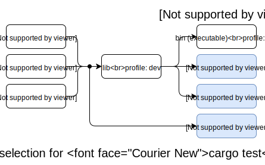
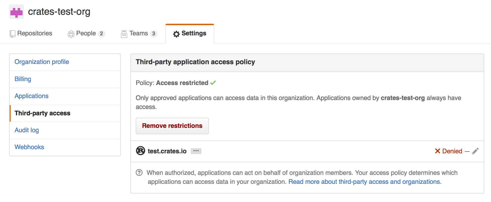

Cargo 手册
中文译注（Chinese translation of the Cargo Book）：
- 《Rust Cookbook 中文版》 翻译自 Cargo Book，查看此书的 Github 翻译项目。
- 本书翻译内容源自 chinanf-boy的开源的翻译版本，我们对原译者感激不尽！该版本最后翻译更新时间是 2019 年 5 月 12 日，与当前的英文版差异比较大，特别期待您加入到本开源翻译项目组中来维护本书，确保本书紧跟英文版。
- 目前英文版已经加入了命令行帮助页部分，还有其他章节内容，内容已经扩充了一倍以上，所以中文版翻译（包括网上所有版本）的部分还不到 1/2。
- 许可协议：跟随英文原书使用 MIT 和 Apache 2.0 双许可授权。
- 本站支持文档中英文切换，点击页面右上角语言图标可切换到相同章节的英文页面，英文版每天都会自动同步一次官方的最新版本。
- 若发现本页表达错误或帮助我们改进翻译，可点击右上角的编辑按钮打开本页对应源码文件进行编辑和修改，Rust 中文资源的开源组织发展离不开大家，感谢您的支持和帮助！

Cargo 是Rust的 包经理。Cargo 会下载您 Rust 的包依赖项，编译您的包，生成可分发的包，并将它们上传到crates.io - Rust 社区的包注册表。你可以为这本书做出贡献在GitHub.
章节
要开始使用 Cargo，请安装 Cargo(和 Rust)并设置您的第一个箱子.
该指南将为您提供，有关如何使用 Cargo 开发 Rust 包的所有信息.
该参考文献涵盖了 Cargo 各个领域的细节.
开始入门
要开始使用 Cargo，请安装 Cargo(和 Rust)，并设置您的第一个箱子.
安装
安装 Rust 和 Cargo
获得 Cargo 的最简单方法是使用rustup脚本，获取当前稳定版本的 Rust:
在 Linux 和 macOS 系统上，这可以通过以下方式完成:
$ curl -sSf https://static.rust-lang.org/rustup.sh | sh
它将下载一个脚本，然后开始安装。如果一切顺利，您会看到:
Rust is installed now. Great!
在 Windows 上，下载并运行rustup-init.exe。它将在控制台中启动安装，并在成功时显示上述消息.
在此之后，你可以使用rustup命令，安装beta或者nightly版本的 Rust 和 Cargo。
有关其他安装选项和信息，请访问 Rust 网站的安装页面.
从源头构建 Cargo
或者，你可以从源头构建 Cargo.
Cargo 的第一步
要使用 Cargo 启动新项目，请使用cargo new:
$ cargo new hello_world --bin
我们传递--bin，是因为我们正在制作一个二进制程序(默认): 如果我们正在创建一个库(lib)，我们就会把传递--lib.
让我们来看看 Cargo 为我们带来了什么:
$ cd hello_world
$ tree .
.
├── Cargo.toml
└── src
└── main.rs
1 directory, 2 files
这就是我们开始所需要的一切。首先，让我们看看Cargo.toml:
[package]
name = "hello_world"
version = "0.1.0"
authors = ["Your Name <you@example.com>"]
edition = "2018"
[dependencies]
这被称为一个manifest元清单，它包含了 Cargo 编译项目所需的所有元数据.
那src/main.rs有啥:
fn main() { println!("Hello, world!"); }
Cargo 为我们创造了一个"hello_world".我们来编译它:
$ cargo build
Compiling hello_world v0.1.0 (file:///path/to/project/hello_world)
然后运行它:
$ ./target/debug/hello_world
Hello, world!
我们也可以直接使用cargo run，它会自行编译，然后运行它， 一步到位:
$ cargo run
Fresh hello_world v0.1.0 (file:///path/to/project/hello_world)
Running `target/hello_world`
Hello, world!
走得更远
有关使用 Cargo 的更多详细信息，请查看Cargo 指南
Cargo Guide
本指南将为您提供有关如何使用 Cargo 开发 Rust 包的所有信息.
为什么 Cargo 存在
Cargo 是一个工具,允许 Rust 项目声明其各种依赖项，并确保您始终获得可重复的构建。
为了实现这一目标,Cargo 做了四件事:
- 引入两个，包含各种项目信息的元数据文件。
- 获取，并构建项目的依赖项.
- 正确使用参数，以调用
rustc或其他构建工具，构建你的项目。 - 介绍，更容易使用 Rust 项目的约定(规范/风格)。
创建一个新项目
要使用 Cargo 启动新项目，请使用cargo new:
$ cargo new hello_world --bin
我们传递--bin，是因为我们正在制作一个二进制程序(默认): 如果我们正在创建一个库(lib)，我们就会把传递--lib。默认情况下，这个目录会初始化为一个新的git存储库，如果您不希望它这样做，请传递--vcs none。
让我们来看看 Cargo 为我们带来了什么:
$ cd hello_world
$ tree .
.
├── Cargo.toml
└── src
└── main.rs
1 directory, 2 files
这就是我们开始所需要的一切首。先让我们看看Cargo.toml:
[package]
name = "hello_world"
version = "0.1.0"
authors = ["Your Name <you@example.com>"]
edition = "2018"
[dependencies]
这被称为一个manifest元清单，它包含了 Cargo 编译项目所需的所有元数据.
那src/main.rs有啥:
fn main() { println!("Hello, world!"); }
Cargo 为我们创造了一个"hello_world".我们来编译它:
$ cargo build
Compiling hello_world v0.1.0 (file:///path/to/project/hello_world)
然后运行它:
$ ./target/debug/hello_world
Hello, world!
我们也可以直接使用cargo run，它会自行编译，然后运行它, 一步到位:
$ cargo run
Fresh hello_world v0.1.0 (file:///path/to/project/hello_world)
Running `target/hello_world`
Hello, world!
您会注意到已创建了几个新文件和目录:
$ tree .
.
|-- Cargo.lock
|-- Cargo.toml
|-- src
| `-- main.rs
`-- target
`-- debug
|-- build
|-- deps
| |-- hello_world-6ad0b2df81336e7f
| |-- hello_world-6ad0b2df81336e7f.d
| `-- hello_world-6ad0b2df81336e7f.dSYM
| `-- Contents
| |-- Info.plist
| `-- Resources
| `-- DWARF
| `-- hello_world-6ad0b2df81336e7f
|-- examples
|-- hello_world
|-- hello_world.d
|-- hello_world.dSYM -> deps/hello_world-6ad0b2df81336e7f.dSYM
|-- incremental
| // ...
`-- native
15 directories, 19 files
这个Cargo.lock文件啊，是包含我们的依赖项的有关信息(即便还没有依赖)，其内容看起来可不是很有趣啊。再有就是target目录包含所有构建产品(二进制文件..)，并且，可以看出，Cargo 默认生成调试(debug)版本。您可以使用cargo build --release，这会在开启优化的情况下，编译文件:
$ cargo build --release
Compiling hello_world v0.1.0 (file:///path/to/project/hello_world)
cargo build --release将结果二进制文件放入target/release，而不再是target/debug目录.
调试模式的编译是开发的默认设置 - 编译时间较短，因为编译器不进行优化，但代码运行速度较慢。发布(release)模式编译需要更长时间，但代码运行速度更快。
在现有的 Cargo 项目上工作
如果您下载使用 Cargo 的现有项目，那么它很容易上手.
首先，从某个地方获取项目.在这个例子中，我们将使用rand项目，其从 GitHub 上的存储库克隆而来:
$ git clone https://github.com/rust-lang-nursery/rand.git
$ cd rand
要建立，使用cargo build:
$ cargo build
Compiling rand v0.1.0 (file:///path/to/project/rand)
这将获取所有依赖项，然后与项目一起构建它们.
从 crates.io 添加依赖项
crates.io是 Rust 社区的中央存储库，用作发现和下载包的位置。cargo默认配置为，使用它来查找请求的包.
获取托管在crates.io的依赖'库'，将它添加到您的Cargo.toml.
添加依赖项
如果你的Cargo.toml，还没有[dependencies]部分，添加它，然后列出您要使用的包名称和版本。这个例子增加了一个time箱(crate)依赖:
[dependencies]
time = "0.1.12"
版本字符串是semver版本要求。该指定依赖项文档 提供了有关此处选项的更多信息.
如果我们还想添加一个regex箱子依赖，我们不需要为每个箱子都添加[dependencies]。下面就是你的Cargo.toml文件整体，看起来像依赖于time和regex箱:
[package]
name = "hello_world"
version = "0.1.0"
authors = ["Your Name <you@example.com>"]
[dependencies]
time = "0.1.12"
regex = "0.1.41"
重新运行cargo build，Cargo 将获取新的依赖项及其所有依赖项，将它们全部编译，然后更新Cargo.lock:
$ cargo build
Updating registry `https://github.com/rust-lang/crates.io-index`
Downloading memchr v0.1.5
Downloading libc v0.1.10
Downloading regex-syntax v0.2.1
Downloading memchr v0.1.5
Downloading aho-corasick v0.3.0
Downloading regex v0.1.41
Compiling memchr v0.1.5
Compiling libc v0.1.10
Compiling regex-syntax v0.2.1
Compiling memchr v0.1.5
Compiling aho-corasick v0.3.0
Compiling regex v0.1.41
Compiling hello_world v0.1.0 (file:///path/to/project/hello_world)
我们的Cargo.lock包含有关，我们使用的所有这些依赖项的哪个版本的确实信息.
现在，如果regex在crates.io上更新了，在我们选择cargo update之前，我们仍会使用相同的版本进行构建.
你现在可以使用regex箱了，通过在main.rs使用extern crate。
extern crate regex; use regex::Regex; fn main() { let re = Regex::new(r"^\d{4}-\d{2}-\d{2}$").unwrap(); println!("Did our date match? {}", re.is_match("2014-01-01")); }
运行它将显示:
$ cargo run
Running `target/hello_world`
Did our date match? true
项目布局
Cargo 使用文件放置惯例，以便轻松进入新的 Cargo 项目:
.
├── Cargo.lock
├── Cargo.toml
├── benches
│ └── large-input.rs
├── examples
│ └── simple.rs
├── src
│ ├── bin
│ │ └── another_executable.rs
│ ├── lib.rs
│ └── main.rs
└── tests
└── some-integration-tests.rs
Cargo.toml和Cargo.lock存储在项目的根目录中.- 源代码进入
src目录. - 默认库文件是
src/lib.rs. - 默认的可执行文件是
src/main.rs. - 其他可执行文件，可以放入
src/bin/*.rs. - 集成测试进入
tests目录(单元测试进到，正在测试的每个文件中). - 示例进入
examples目录. - 基准进入
benches目录.
这些将在更详细的清单描述说明中解释.
Cargo.toml 与 Cargo.lock
Cargo.toml和Cargo.lock各有其目的。在我们谈论它们之前，这是一个总结:
Cargo.toml是从广义上描述你的依赖，并由你编写.Cargo.lock包含有关您的依赖项的确切信息。它由 Cargo 维护，不应手动编辑.
如果您正在构建，其他项目要依赖的库，请将Cargo.lock放置在你的.gitignore。如果您正在构建可执行文件，如命令行工具或应用程序，请检查Cargo.lock位于git管理下。如果你对这是为什么感到好奇，请参阅"为什么二进制文件在版本控制系统中有Cargo.lock，而库没有?" - FAQ .
让我们再挖掘一下.
Cargo.toml是一个manifest(清单)，我们可以在其中指定一系列关于我们项目的不同元数据的文件。例如，我们可以说我们依赖于另一个项目:
[package]
name = "hello_world"
version = "0.1.0"
authors = ["Your Name <you@example.com>"]
[dependencies]
rand = { git = "https://github.com/rust-lang-nursery/rand.git" }
这个项目有一个依赖关系rand箱。在这种情况下，我们已经说过，我们依赖于 GitHub 上的特定 Git 存储库。由于我们尚未指定任何其他信息，因此 Cargo 假定我们打算使用最新提交的master分支构建我们的项目。
听起来不错? 嗯，但有一个问题: 如果你今天构建这个项目，然后你发送一份副本给我，我明天构建这个项目，可能会发生一些不好的事情。因在此期间，可能会有更多的rand提交，我的构建将包括新的提交，而你的不会。因此，我们会得到不同的构建。这很糟糕，因为我们需要可重复的构建.
我们可以通过放置一个rev来解决这个问题，写入我们Cargo.toml:
[dependencies]
rand = { git = "https://github.com/rust-lang-nursery/rand.git", rev = "9f35b8e" }
现在我们的构建将是相同的。但是有一个很大的缺点:现在我们每次想要更新库时，都必须手动考虑 SHA-1。这既乏味又容易出错.
那现在Cargo.lock登场了。由于它的存在，我们不需要手动跟踪确切的修订版本: Cargo 将为我们做。当我们有这样的清单时:
[package]
name = "hello_world"
version = "0.1.0"
authors = ["Your Name <you@example.com>"]
[dependencies]
rand = { git = "https://github.com/rust-lang-nursery/rand.git" }
Cargo 将采取最新的提交，并在我们第一次构建时，将这些信息写入我们的Cargo.lock。该文件将如下所示:
[root]
name = "hello_world"
version = "0.1.0"
dependencies = [
"rand 0.1.0 (git+https://github.com/rust-lang-nursery/rand.git#9f35b8e439eeedd60b9414c58f389bdc6a3284f9)"，
]
[[package]]
name = "rand"
version = "0.1.0"
source = "git+https://github.com/rust-lang-nursery/rand.git#9f35b8e439eeedd60b9414c58f389bdc6a3284f9"
你可以看到这里有更多的信息，包括我们用来构建的确切修订版本。现在，当您将项目交给其他人时，他们将使用完全相同的 SHA，即使我们没有在我们的项目Cargo.toml中指定它.
当我们准备选择，更新库的版本时，Cargo 会自动重新计算依赖关系，并为我们更新内容:
$ cargo update # updates all dependencies
$ cargo update -p rand # updates just “rand”
这将写出一个新的Cargo.lock与新版本信息。请注意cargo update参数，实际上会是是一个包 ID 规范，和rand只是一个简短的规范.
测试
Cargo 可以使用cargo test命令运行您的测试。Cargo 寻找在两个地方运行的测试 :在你src中的每个文件，和tests/中的任何测试。测试你的src文件应该是单元测试，并在tests/中的应该是整合式测试。因此，您需要将包装箱导入到tests的文件中.
这是在我们的项目中，运行cargo test的一个例子，目前没有测试:
$ cargo test
Compiling rand v0.1.0 (https://github.com/rust-lang-nursery/rand.git#9f35b8e)
Compiling hello_world v0.1.0 (file:///path/to/project/hello_world)
Running target/test/hello_world-9c2b65bbb79eabce
running 0 tests
test result: ok. 0 passed; 0 failed; 0 ignored; 0 measured
如果我们的项目有测试，我们会看到更多的输出与正确的测试数量.
您还可以通过传递过滤器，来运行特定测试:
$ cargo test foo
这将运行任何匹配的foo测试.
cargo test还运行其他检查。例如，它将编译您包含的任何示例(examples)，并且还将测试文档中的示例。请看在 Rust 文档中的测试指南，了解更多详细信息.
持续集成
Travis CI
要在 Travis CI 上测试您的项目，这里有一个.travis.yml文件示例:
language: rust
rust:
- stable
- beta
- nightly
matrix:
allow_failures:
- rust: nightly
这将在所有三个 rust 版本下，进行测试，但 nightly 的任何破坏，都不会使整体构建失败。请看看Travis CI Rust 文档了解更多信息.
GitLab CI
要在 GitLab CI 上测试您的包，这里有一个.gitlab-ci.yml文件示例:
stages:
- build
rust-latest:
stage: build
image: rust:latest
script:
- cargo build --verbose
- cargo test --verbose
rust-nightly:
stage: build
image: rustlang/rust:nightly
script:
- cargo build --verbose
- cargo test --verbose
allow_failure: true
这将测试 stable 版本和 nightly 版本，但 nightly 的任何破损，都不会使整体构建失败。欲获得更多信息，请看GitLab CI.
Cargo Home
“Cargo home”起到下载和源（source）缓存的作用。
当我们构建一个crate时，Cargo将把下载的依赖项存储在Cargo home中。
您可以通过修改CARGO_HOME环境变量来改变Cargo home的位置。
home crate提供了一个API，允许您在您的Rust crate中检索Cargo home的位置。
默认情况下，Cargo home的位置是$HOME/.cargo/。
请注意，Cargo home的内部结构并不稳定，可能会随时发生变化。
Cargo home由这些部件共同组成：
文件:
-
config.tomlCaro的全局配置文件，请参阅参考文档中的config条目。 -
credentials.toml加密登录的凭证，来自（from）cargo login，用于登录registry。 Private login credentials fromcargo loginin order to log in to a registry. -
.crates.toml该隐藏文件包含了通过cargo install安装的crate的package信息。不要手动修改它！
目录:
-
binbin目录包含了通过cargo install或者rustup安装的crate的可执行文件。 要使这些可执行文件可用，只需将目录的路径添加到$PATH环境变量中。 -
gitGit源（Git sources）存储在这里：-
git/db当一个crate依赖于一个git仓库时，Cargo将克隆一个该git仓库的裸仓库（bare repo）到这个文件夹，并在必要时更新它。译者注：裸仓库（bare repo）是没有
.git目录的仓库。也就是说，它只有裸仓库数据，而没有工作目录或者工作树。 -
git/checkouts若一个git源被使用，Cargo将从git/db中的裸仓库中检出（check out）所需的提交（commit）到这个目录。 该目录为编译器提供了具体的文件，这些文件包含于这个依赖关系所指定的提交的仓库中。 Cargo支持检出相同仓库中的多个不同提交。 This provides the compiler with the actual files contained in the repo of the commit specified for that dependency. Multiple checkouts of different commits of the same repo are possible.
-
-
registry这里存放着包（Packages）和crate registries的元数据（例如crates.io）-
registry/index该目录是个裸仓库，它包含了该registry中所有可用的crate的元数据（版本，依赖，等等） -
registry/cache已经下载的依赖将被存放于该文件夹中。这些crate会经过gzip压缩为归档文件（gzip archive），并以.crate为扩展名。 -
registry/src若某个包要求依赖一个已下载的.crate归档文件，该归档文件将被解压到这个目录中。rustc将在该目录中找到它所需的.rs文件。
-
在CI中缓存Cargo home
为防止在持续集成（CI）中重新下载所有crate依赖，您可以缓存$CARGO_HOME目录。
然而，缓存整个目录通常并不高效，因为它可能会将已经下载过的源再缓存一次（it will contain downloaded sources twice）。
若我们依赖了一个crate，例如serde 1.0.92，并将整个$CARGO_HOME缓存，我们实际上将缓存两次，一次是在registry/cache中的serde-1.0.92.crate，另一次是serde在registry/src中解压的.rs文件。
由于下载、解压，再压缩和再上传缓存到CI服务器上这些操作可能花费大量时间，构建过程可能会额外耗费不必要的时间成本。
实际上，在构建过程中只缓存下列目录就足够了：
bin/registry/index/registry/cache/git/db/
供应（Vendoring）项目中的所有依赖
请参阅cargo vendor子命令。
清除缓存
理论上，您可以随时清除缓存的任何部分，当某个crate要求这些被清除的依赖内容时，Cargo将尽力恢复它们。这可以通过解压归档文件、检出裸仓库或简单地重新下载来实现。
作为替代，您可以使用cargo-cache crate提供的命令行工具来选择性清除指定部分的缓存，或显示其组件占用空间的大小。
构建 缓存
Cargo 在单个工作区，共享其中所有包的构建工件。今天，Cargo 不会在不同的工作区共享构建结果，但使用第三方工具可以实现类似的结果，sccache。
装置sccache，用cargo install sccache安装它，并在调用 Cargo 之前，设置RUSTC_WRAPPER环境变量成sccache。如果你使用 bash，更好是添加export RUSTC_WRAPPER=sccache到.bashrc文件。有关更多详细信息，请参阅 sccache 文档.
Cargo 参考
该参考文献涵盖了 Cargo 各个领域的细节.
依赖指定
您的箱子，可以依赖多个来源的库，如crates.io，git的存储库或本地文件系统上的子目录。您还可以临时覆盖依赖项的位置 - 例如， 便于能够测试您在本地工作的依赖项中的错误修复。您可以为不同的平台，和或仅在开发期间使用不同的依赖项。我们来看看如何做到这些.
指定依赖，来自 crates.io
默认情况下，Cargo 是准备好，在crates.io上查找依赖项。在这种情况下，只需要名称和版本字符串。在Cargo 指南，我们选择了一个依赖项-time箱:
[dependencies]
time = "0.1.12"
字符串"0.1.12"是一个semver版本格式字符串。由于此字符串中没有任何运算符，因此它的解释方式与我们指定的"^0.1.12"方式相同，而^被称为跳脱条件.
Caret requirements(跳脱条件)
跳脱条件: 允许 SemVer 兼容更新指定版本。新的版本允许更新的条件是，不修改最左边的非零数字(无论major，minor，patch)。在这种情况下，如果我们执行了cargo update -p time，Cargo 应该更新我们的0.1.13版本(如果是最新的0.1.z发布)，但不会更新为0.2.0。相反，我们若将版本字符串指定为^1.0，Cargo 应更新至1.1，如果是最新的1.y发布，但不是2.0版本。0.0.x并不与任何其他版本兼容.
以下是一些跳脱条件的例子以及它们允许的版本:
^1.2.3 := >=1.2.3 <2.0.0
^1.2 := >=1.2.0 <2.0.0
^1 := >=1.0.0 <2.0.0
^0.2.3 := >=0.2.3 <0.3.0
^0.2 := >= 0.2.0 < 0.3.0
^0.0.3 := >=0.0.3 <0.0.4
^0.0 := >=0.0.0 <0.1.0
^0 := >=0.0.0 <1.0.0
此兼容性约定与 SemVer ，在处理 1.0.0 之前的版本方面有所不同。虽然 SemVer 说在 1.0.0 之前没有兼容性，但 Cargo 认为0.x.y是兼容0.x.z，这里y ≥ z和x > 0.
Tilde 条件
Tilde 条件指定具有更新最小版本的一定能力。如果指定 major 版本，minor 版本和 patch 程序版本，或仅指定 major 版本和 minor 版本，则仅允许 patch 程序级别更改。如果仅指定 major 版本，则允许进行 minor 和 patch 级别更改.
~1.2.3是 Tilde 条件的一个例子.
~1.2.3 := >=1.2.3 <1.3.0
~1.2 := >=1.2.0 <1.3.0
~1 := >=1.0.0 <2.0.0
通配符要求
通配符条件允许任何通配符所在的版本.
*，1.*和1.2.*是通配符条件的示例.
* := >=0.0.0
1.* := >=1.0.0 <2.0.0
1.2.* := >=1.2.0 <1.3.0
Inequality requirements(范围条件)
范围条件允许手动指定要依赖的版本范围或确切版本.
以下是范围条件的一些示例:
>= 1.2.0
> 1
< 2
= 1.2.3
多版本条件
多个版本，要求用逗号分隔，例如>= 1.2， < 1.5.
依赖指定，来自 git 存储库
依赖于位于git存储库的库，您需要指定的最小信息，为一个git字段，其是存储库的github位置:
[dependencies]
rand = { git = "https://github.com/rust-lang-nursery/rand" }
Cargo 将取得git，然后在这个位置找到一个存储库的请求箱子的Cargo.toml。方式是对git存储库里面的任何地方(不一定在根目录) - 例如，指定工作区中的成员包名称，和设置git到包含工作区的存储库).
由于我们尚未指定任何其他信息，因此 Cargo 假定我们打算使用最新的提交master分支，来构建我们的包。你可以将git字段和rev，tag， 还有branch，这些用于指定其他内容的字段组合起来。这是一个指定您希望在名为next分支上，使用最新提交的示例:
[dependencies]
rand = { git = "https://github.com/rust-lang-nursery/rand", branch = "next" }
路径，依赖指定
随着时间的推移，我们来自指南的hello_world示例已大幅增长! 它已经到了我们可能想分出一个单独的箱子供其他人使用的地步。为此，Cargo 支持路径依赖通常是位于一个存储库中的子箱。让我们开始在hello_world包的内部制作一个新的箱子:
# inside of hello_world/
$ cargo new hello_utils
这将创建一个新文件夹hello_utils，里面有一个Cargo.toml和src文件夹已准备好进行配置。为了告诉 Cargo，请打开hello_world/Cargo.toml，并添加你的hello_utils依赖:
[dependencies]
hello_utils = { path = "hello_utils" }
这告诉 Cargo 我们依赖于一个叫做hello_utils的箱子，这能在hello_utils文件夹找到(相对于，写在Cargo.toml路径).
就是这样! 下一步cargo build将自动构建hello_utils，以及它自己的所有依赖项，其他人也可以开始使用它。但是，crates.io不允许仅使用 路径指定依赖项 的包。如果我们想发布我们的hello_world箱子，我们需要发布一个版本hello_utils至crates.io，并在依赖项行中指定其版本:
[dependencies]
hello_utils = { path = "hello_utils", version = "0.1.0" }
依赖覆盖
Cargo 中有许多方法支持，覆盖依赖关系以及控制依赖关系图。但是，这些选项通常仅在工作区级别可用，并且不通过依赖项传播。换句话说，"应用程序"具有覆盖依赖关系的能力，但"库"却没有。
许多场景，会产生想，覆盖依赖性或以其他方式改变某些依赖关系的愿望。然而，他们中的大多数都可以归结为，将箱子发布到 crates.io 之前使用箱子(覆盖依赖)的能力。例如:
- 您编写的
crate，也用于您编写的更大应用程序中，并且您希望测试在更大应用程序内，crate的错误修复情况。 - 不是你编写的上游包，现在其 git 存储库的主分支上，有一个新功能或错误修复，您要测试它。
- 您即将发布新版本的 major 版本，但您希望在整个软件包中进行集成测试，以确保新的主要版本能够正常运行.
- 您已经为上游的软件包提交了一个针对您找到的错误的修复程序，但是您希望立即让您的应用程序依赖，此程序包的固定修复版本，以避免错误修复程序被拒绝合并.
这些场景目前都是通过[patch] 清单部分 解决的，从历史上看，其中一些方案是该[replace]部分解决的，但我们在这里会记录[patch]解决的部分。
测试一个错误修复
假设你正在使用uuid crate，但是当你正在研究它时，你会发现一个错误.但是，你很有进取心，所以你决定尝试修复这个 bug! 最初你的清单看起来像:
[package]
name = "my-library"
version = "0.1.0"
authors = ["..."]
[dependencies]
uuid = "1.0"
我们要做的第一件事是克隆uuid存储库，到本地:
$ git clone https://github.com/rust-lang-nursery/uuid
接下来我们将编辑my-library-Cargo.toml，为:
[patch.crates-io]
uuid = { path = "../path/to/uuid" }
在这里，我们宣布我们是*修补(patch)*来源crates-io，其有一个新的依赖，这将有效地添加本地(签出 checkout)版本uuid到 crates.io 注册表，指向本地包。
接下来我们需要确保我们的锁(lock)文件已更新为，使用此新版本uuid，所以我们的包使用本地签出的副本，而不是 crates.io 中的副本。[patch]工作方式是它将从../path/to/uuid加载依赖，然后每当 crates.io 查询uuid的版本时，它也会返回本地版本.
这意味着本地签出的版本号很重要，会影响是否使用该补丁。我们的清单宣布uuid = "1.0"，这意味着我们只会解析>= 1.0.0， < 2.0.0，和 Cargo 的贪婪解析算法，也意味着我们将解析到该范围内的最大版本。通常情况下这并不重要，因为 git 存储库的版本已经更大，或与 crates.io 上发布的最大版本相匹配，但重要的是要记住这一点!
无论如何，通常您现在需要做的就是:
$ cargo build
Compiling uuid v1.0.0 (.../uuid)
Compiling my-library v0.1.0 (.../my-library)
Finished dev [unoptimized + debuginfo] target(s) in 0.32 secs
就是这样! 您现在正在使用本地版本uuid构建(注意构建输出中括号中的路径)。如果您没有看到构建本地路径版本，那么您可能需要运行cargo update -p uuid --precise $version，这里$version是本地签出版本的uuid副本。
一旦你修复了你最初发现的错误，你要做的下一件事就是将其作为拉取请求提交给uuid箱子本身。一旦你完成了这个，你也可以更新下[patch]部分。[patch]里面的内容列表就像是[dependencies]部分，所以一旦你的拉动请求合并，你就可以改变你的path依赖:
[patch.crates-io]
uuid = { git = 'https://github.com/rust-lang-nursery/uuid' }
Working with an unpublished minor version
与 一个未发布的次要版本，一起工作
现在让我们稍微改变一下，从错误修复，变成要添加功能。在努力my-library的同时，你发现需要uuid箱的一个全新的功能。而您已实现uuid此功能，并在[patch]上面进行本地测试，并提交了拉取请求。让我们来看看在实际发布之前，你如何继续使用和测试它。
我们也说当前版本的uuid，在 crates.io 上是1.0.0版本，但从提交那时起，git 存储库的主分支已更新为1.0.1。此分支包含您之前提交的新功能。要使用此存储库，我们将编辑我们的Cargo.toml，看起来像
[package]
name = "my-library"
version = "0.1.0"
authors = ["..."]
[dependencies]
uuid = "1.0.1"
[patch.crates-io]
uuid = { git = 'https://github.com/rust-lang-nursery/uuid' }
注意我们对本地uuid的依赖已更新为1.0.1，因为这是我们在箱子发布后实际需要的东西。但是，这个版本在 crates.io 上不存在，所以我们提供给它清单的[patch]部分.
现在，当我们的库被构建时，它将uuid从 git 存储库取出，并解析到存储库中的 1.0.1 ，而不是尝试从 crates.io 下载版本。一旦 1.0.1 发布在 crates.io 上，那[patch]部分就可以删除了。
值得注意的是，[patch]是连带关系。假设您在更大的包中使用my-library，例如:
[package]
name = "my-binary"
version = "0.1.0"
authors = ["..."]
[dependencies]
my-library = { git = 'https://example.com/git/my-library' }
uuid = "1.0"
[patch.crates-io]
uuid = { git = 'https://github.com/rust-lang-nursery/uuid' }
记住这[patch]是连带关系，但只能在顶层，所以我们的my-library消费者不得不重写[patch]部分(如有必要的话)。不过，在这里，新的uuid箱子会适用对uuid的依赖和my-library -> uuid的依赖，两个依赖都指定了。该uuid箱 将被解析为整个 crate 关系图 的 1.0.1 版本，并且它是将从 git 存储库中提取。
Overriding repository URL
覆盖 注册表 URL
如果要覆盖的依赖项不是加载自crates.io，你将不得不改变一下你的[patch]使用方式:
[patch."https://github.com/your/repository"]
my-library = { path = "../my-library/path" }
就是这样!
Prepublishing a breaking change
预发布一个重要变化
让我们来看看最后一个场景。若要使用一个新的主要版本的箱子，其通常伴随着重大变化。而要坚持使用我们以前的箱，这意味着我们将创建 2.0.0 版本uuid箱。在我们提交了所有上游更改后，我们可以更新我们的my-library清单，看起来像:
[dependencies]
uuid = "2.0"
[patch.crates-io]
uuid = { git = "https://github.com/rust-lang-nursery/uuid", branch = "2.0.0" }
就是这样!与前面的示例一样，2.0.0 版本实际上，并不存在于 crates.io 上，但我们仍然可以通过[patch]部分使用。作为一个思考练习，让我们再看看my-binary(被使用)的再次表现:
[package]
name = "my-binary"
version = "0.1.0"
authors = ["..."]
[dependencies]
my-library = { git = 'https://example.com/git/my-library' }
uuid = "1.0"
[patch.crates-io]
uuid = { git = 'https://github.com/rust-lang-nursery/uuid', branch = '2.0.0' }
请注意，这实际上将解析为两个版本的uuid箱。该my-binary箱子将继续使用 1.x.y 系列的uuid箱子，但是my-library箱 会使用 2.0.0 版本uuid。这将允许您通过依赖关系图逐步推出对包的更改，而无需一次性更新所有内容。
Overriding with local dependencies
覆盖 本地依赖项
有时你只是暂时在一个箱子上工作，而你不想修改Cargo.toml中像上诉的[patch]部分。对于这个用例，Cargo 提供了更为有限的覆盖版本路径覆盖.
路径覆盖是通过.cargo/config指定，而不是Cargo.toml，你可以寻找有关此配置的更多文档。在.cargo/config内，你要指定的是一个名为paths字段:
paths = ["/path/to/uuid"]
该数组应填充包含Cargo.toml的目录。在这种情况下，我们只是添加uuid，所以它将是唯一一个被覆盖的。此路径可以是包含该路径的绝对路径或相对.cargo文件夹的路径.
路径覆盖，比[patch]部分的限制更严格，但是，路径覆盖不能改变依赖图的结构。而当使用路径替换时，前一组依赖项必须完全匹配新的Cargo.toml规格。如此，就意味着路径覆盖不能用于向箱添加依赖项的测试，而换成[patch]在该种情况下使用。因此，路径覆盖的使用，通常会与快速错误修复分隔开来，而不是大更新分开。
注意:使用本地配置覆盖路径，仅适用于已发布到crates.io的包。您无法使用此功能告诉 Cargo 如何查找本地未发布的箱。
Platform specific dependencies
平台决定依赖
特定于平台的依赖项采用相同的格式，但在target下列出。像正常 Rust 一样的#[cfg]语法，将用于定义这些部分:
[target.'cfg(windows)'.dependencies]
winhttp = "0.4.0"
[target.'cfg(unix)'.dependencies]
openssl = "1.0.1"
[target.'cfg(target_arch = "x86")'.dependencies]
native = { path = "native/i686" }
[target.'cfg(target_arch = "x86_64")'.dependencies]
native = { path = "native/x86_64" }
与 Rust 一样，这里的语法支持not，any，和all运算符组合各种 cfg 名称/值对。请注意cfg语法仅在 Cargo 0.9.0(Rust 1.8.0)之后可用.
除了#[cfg]语法，Cargo 还支持列出依赖关系适用的完整目标:
[target.x86_64-pc-windows-gnu.dependencies]
winhttp = "0.4.0"
[target.i686-unknown-linux-gnu.dependencies]
openssl = "1.0.1"
如果您使用的是自定义目标规范，请引用完整路径和文件名:
[target."x86_64/windows.json".dependencies]
winhttp = "0.4.0"
[target."i686/linux.json".dependencies]
openssl = "1.0.1"
native = { path = "native/i686" }
[target."x86_64/linux.json".dependencies]
openssl = "1.0.1"
native = { path = "native/x86_64" }
Development dependencies
开发(Dev)依赖项
你可以添加一个[dev-dependencies]表格到Cargo.toml，其格式相当于[dependencies]:
[dev-dependencies]
tempdir = "0.3"
编译用于构建的包时，不会使用 Dev 依赖，但用于编译测试，示例和基准。
这些依赖关系是不会传播到依赖于此包的其他包.
您还可以让dev-dependencies具有特定目标的开发依赖项，而不是dependencies标题。例如:
[target.'cfg(unix)'.dev-dependencies]
mio = "0.0.1"
Build dependencies
构建 依赖项
您可以在构建脚本中使用，依赖其他基于 Cargo 的箱。依赖关系是由清单的build-dependencies部分定义:
[build-dependencies]
cc = "1.0.3"
构建脚本并不是有权访问中 dependencies要么dev-dependencies部分列出的依赖项。除非也在dependencies部分下面列出，否则构建依赖项同样不可用于包本身。包本身及其构建脚本是分开构建的，因此它们的依赖关系不重合。通过将独立依赖用于独立目的，使 Cargo 更简单，更清洁。
Choosing features
选择 特性
如果您依赖的包提供条件特性，您可以指定使用哪个:
[dependencies.awesome]
version = "1.3.5"
default-features = false # 不会包括默认特性， 和 任君选
# 单特性
features = ["secure-password", "civet"]
有关 features 的更多信息，请参阅清单文档.
Renaming dependencies in Cargo.toml
在
Cargo.toml中的重命名依赖项
写Cargo.toml的[dependencies]部分的时候，您为依赖项编写的字段通常与您在代码中导入的包的名称相匹配。但是，对于某些项目，您可能希望在代码中引用具有不同名称的包，而不管它是如何在 crates.io 上发布的。例如，您可能希望:
- 避免在 Rust 代码常用
use foo as bar. - 依赖箱子的多个版本.
- 依赖来自不同注册表管理机构的同名箱.
为了支持这个 ，Cargo 在[dependencies]部分使用 一个package字段，决定应该依赖哪个包:
[package]
name = "mypackage"
version = "0.0.1"
[dependencies]
foo = "0.1"
bar = { git = "https://github.com/example/project", package = "foo" }
baz = { version = "0.1", registry = "custom", package = "foo" }
在此示例中，Rust 代码中现在提供了三个包:
#![allow(unused)] fn main() { extern crate foo; // crates.io extern crate bar; // git repository extern crate baz; // registry `custom` }
所有这三个箱的包名称在他们自己Cargo.toml，都是foo，所以我们明确地告知 Cargo ，使用的是我们想要的package字段(如 package = "foo"包名，即我们在本地调用其他东西)。如果没有指定package，则默认为所请求的依赖项的名称。
请注意，如果您有一个可选的(optional)依赖项，例如:
[dependencies]
foo = { version = "0.1", package = 'bar', optional = true }
你依赖于一个bar箱子，其来自 crates.io，但你箱子有一个foo特性，取代了一个bar特性。也就是说，在重命名时，特性的名称拿掉了依赖项的名称，而不是包名称。
启用传递依赖项的工作方式类似，例如我们可以将以下内容，添加到上面的清单中:
[features]
log-debug = ['foo/log-debug'] # 使用 'bar/log-debug' 就会出现一个错误!
Overriding Dependencies
The desire to override a dependency can arise through a number of scenarios. Most of them, however, boil down to the ability to work with a crate before it's been published to crates.io. For example:
- A crate you're working on is also used in a much larger application you're working on, and you'd like to test a bug fix to the library inside of the larger application.
- An upstream crate you don't work on has a new feature or a bug fix on the master branch of its git repository which you'd like to test out.
- You're about to publish a new major version of your crate, but you'd like to do integration testing across an entire package to ensure the new major version works.
- You've submitted a fix to an upstream crate for a bug you found, but you'd like to immediately have your application start depending on the fixed version of the crate to avoid blocking on the bug fix getting merged.
These scenarios can be solved with the [patch] manifest
section.
This chapter walks through a few different use cases, and includes details on the different ways to override a dependency.
- Example use cases
- Reference
Note: See also specifying a dependency with multiple locations, which can be used to override the source for a single dependency declaration in a local package.
Testing a bugfix
Let's say you're working with the uuid crate but while you're working on it
you discover a bug. You are, however, quite enterprising so you decide to also
try to fix the bug! Originally your manifest will look like:
[package]
name = "my-library"
version = "0.1.0"
[dependencies]
uuid = "1.0"
First thing we'll do is to clone the uuid repository
locally via:
$ git clone https://github.com/uuid-rs/uuid
Next we'll edit the manifest of my-library to contain:
[patch.crates-io]
uuid = { path = "../path/to/uuid" }
Here we declare that we're patching the source crates-io with a new
dependency. This will effectively add the local checked out version of uuid to
the crates.io registry for our local package.
Next up we need to ensure that our lock file is updated to use this new version
of uuid so our package uses the locally checked out copy instead of one from
crates.io. The way [patch] works is that it'll load the dependency at
../path/to/uuid and then whenever crates.io is queried for versions of uuid
it'll also return the local version.
This means that the version number of the local checkout is significant and will
affect whether the patch is used. Our manifest declared uuid = "1.0" which
means we'll only resolve to >= 1.0.0, < 2.0.0, and Cargo's greedy resolution
algorithm also means that we'll resolve to the maximum version within that
range. Typically this doesn't matter as the version of the git repository will
already be greater or match the maximum version published on crates.io, but it's
important to keep this in mind!
In any case, typically all you need to do now is:
$ cargo build
Compiling uuid v1.0.0 (.../uuid)
Compiling my-library v0.1.0 (.../my-library)
Finished dev [unoptimized + debuginfo] target(s) in 0.32 secs
And that's it! You're now building with the local version of uuid (note the
path in parentheses in the build output). If you don't see the local path version getting
built then you may need to run cargo update -p uuid --precise $version where
$version is the version of the locally checked out copy of uuid.
Once you've fixed the bug you originally found the next thing you'll want to do
is to likely submit that as a pull request to the uuid crate itself. Once
you've done this then you can also update the [patch] section. The listing
inside of [patch] is just like the [dependencies] section, so once your pull
request is merged you could change your path dependency to:
[patch.crates-io]
uuid = { git = 'https://github.com/uuid-rs/uuid' }
Working with an unpublished minor version
Let's now shift gears a bit from bug fixes to adding features. While working on
my-library you discover that a whole new feature is needed in the uuid
crate. You've implemented this feature, tested it locally above with [patch],
and submitted a pull request. Let's go over how you continue to use and test it
before it's actually published.
Let's also say that the current version of uuid on crates.io is 1.0.0, but
since then the master branch of the git repository has updated to 1.0.1. This
branch includes your new feature you submitted previously. To use this
repository we'll edit our Cargo.toml to look like
[package]
name = "my-library"
version = "0.1.0"
[dependencies]
uuid = "1.0.1"
[patch.crates-io]
uuid = { git = 'https://github.com/uuid-rs/uuid' }
Note that our local dependency on uuid has been updated to 1.0.1 as it's
what we'll actually require once the crate is published. This version doesn't
exist on crates.io, though, so we provide it with the [patch] section of the
manifest.
Now when our library is built it'll fetch uuid from the git repository and
resolve to 1.0.1 inside the repository instead of trying to download a version
from crates.io. Once 1.0.1 is published on crates.io the [patch] section can
be deleted.
It's also worth noting that [patch] applies transitively. Let's say you use
my-library in a larger package, such as:
[package]
name = "my-binary"
version = "0.1.0"
[dependencies]
my-library = { git = 'https://example.com/git/my-library' }
uuid = "1.0"
[patch.crates-io]
uuid = { git = 'https://github.com/uuid-rs/uuid' }
Remember that [patch] is applicable transitively but can only be defined at
the top level so we consumers of my-library have to repeat the [patch] section
if necessary. Here, though, the new uuid crate applies to both our dependency on
uuid and the my-library -> uuid dependency. The uuid crate will be resolved to
one version for this entire crate graph, 1.0.1, and it'll be pulled from the git
repository.
Overriding repository URL
In case the dependency you want to override isn't loaded from crates.io,
you'll have to change a bit how you use [patch]. For example, if the
dependency is a git dependency, you can override it to a local path with:
[patch."https://github.com/your/repository"]
my-library = { path = "../my-library/path" }
And that's it!
Prepublishing a breaking change
Let's take a look at working with a new major version of a crate, typically
accompanied with breaking changes. Sticking with our previous crates, this
means that we're going to be creating version 2.0.0 of the uuid crate. After
we've submitted all changes upstream we can update our manifest for
my-library to look like:
[dependencies]
uuid = "2.0"
[patch.crates-io]
uuid = { git = "https://github.com/uuid-rs/uuid", branch = "2.0.0" }
And that's it! Like with the previous example the 2.0.0 version doesn't actually
exist on crates.io but we can still put it in through a git dependency through
the usage of the [patch] section. As a thought exercise let's take another
look at the my-binary manifest from above again as well:
[package]
name = "my-binary"
version = "0.1.0"
[dependencies]
my-library = { git = 'https://example.com/git/my-library' }
uuid = "1.0"
[patch.crates-io]
uuid = { git = 'https://github.com/uuid-rs/uuid', branch = '2.0.0' }
Note that this will actually resolve to two versions of the uuid crate. The
my-binary crate will continue to use the 1.x.y series of the uuid crate but
the my-library crate will use the 2.0.0 version of uuid. This will allow you
to gradually roll out breaking changes to a crate through a dependency graph
without being force to update everything all at once.
Using [patch] with multiple versions
You can patch in multiple versions of the same crate with the package key
used to rename dependencies. For example let's say that the serde crate has
a bugfix that we'd like to use to its 1.* series but we'd also like to
prototype using a 2.0.0 version of serde we have in our git repository. To
configure this we'd do:
[patch.crates-io]
serde = { git = 'https://github.com/serde-rs/serde' }
serde2 = { git = 'https://github.com/example/serde', package = 'serde', branch = 'v2' }
The first serde = ... directive indicates that serde 1.* should be used
from the git repository (pulling in the bugfix we need) and the second serde2 = ... directive indicates that the serde package should also be pulled from
the v2 branch of https://github.com/example/serde. We're assuming here
that Cargo.toml on that branch mentions version 2.0.0.
Note that when using the package key the serde2 identifier here is actually
ignored. We simply need a unique name which doesn't conflict with other patched
crates.
The [patch] section
The [patch] section of Cargo.toml can be used to override dependencies
with other copies. The syntax is similar to the
[dependencies] section:
[patch.crates-io]
foo = { git = 'https://github.com/example/foo' }
bar = { path = 'my/local/bar' }
[dependencies.baz]
git = 'https://github.com/example/baz'
[patch.'https://github.com/example/baz']
baz = { git = 'https://github.com/example/patched-baz', branch = 'my-branch' }
The [patch] table is made of dependency-like sub-tables. Each key after
[patch] is a URL of the source that is being patched, or the name of a
registry. The name crates-io may be used to override the default registry
crates.io. The first [patch] in the example above demonstrates overriding
crates.io, and the second [patch] demonstrates overriding a git source.
Each entry in these tables is a normal dependency specification, the same as
found in the [dependencies] section of the manifest. The dependencies listed
in the [patch] section are resolved and used to patch the source at the
URL specified. The above manifest snippet patches the crates-io source (e.g.
crates.io itself) with the foo crate and bar crate. It also
patches the https://github.com/example/baz source with a my-branch that
comes from elsewhere.
Sources can be patched with versions of crates that do not exist, and they can also be patched with versions of crates that already exist. If a source is patched with a crate version that already exists in the source, then the source's original crate is replaced.
The [replace] section
Note:
[replace]is deprecated. You should use the[patch]table instead.
This section of Cargo.toml can be used to override dependencies with other
copies. The syntax is similar to the [dependencies] section:
[replace]
"foo:0.1.0" = { git = 'https://github.com/example/foo' }
"bar:1.0.2" = { path = 'my/local/bar' }
Each key in the [replace] table is a package ID
specification, which allows arbitrarily choosing a node in the
dependency graph to override (the 3-part version number is required). The
value of each key is the same as the [dependencies] syntax for specifying
dependencies, except that you can't specify features. Note that when a crate
is overridden the copy it's overridden with must have both the same name and
version, but it can come from a different source (e.g., git or a local path).
paths overrides
Sometimes you're only temporarily working on a crate and you don't want to have
to modify Cargo.toml like with the [patch] section above. For this use
case Cargo offers a much more limited version of overrides called path
overrides.
Path overrides are specified through .cargo/config.toml instead of
Cargo.toml. Inside of .cargo/config.toml you'll specify a key called paths:
paths = ["/path/to/uuid"]
This array should be filled with directories that contain a Cargo.toml. In
this instance, we’re just adding uuid, so it will be the only one that’s
overridden. This path can be either absolute or relative to the directory that
contains the .cargo folder.
Path overrides are more restricted than the [patch] section, however, in
that they cannot change the structure of the dependency graph. When a
path replacement is used then the previous set of dependencies
must all match exactly to the new Cargo.toml specification. For example this
means that path overrides cannot be used to test out adding a dependency to a
crate, instead [patch] must be used in that situation. As a result usage of a
path override is typically isolated to quick bug fixes rather than larger
changes.
Note: using a local configuration to override paths will only work for crates that have been published to crates.io. You cannot use this feature to tell Cargo how to find local unpublished crates.
The Manifest Format
清单格式
每个包的这个Cargo.toml文件称为清单. 每个清单文件由一个或多个部分(表格)组成.
[package]部分- 依赖项 部分
[profile.*]部分[features]部分[workspace]部分- 项目布局
- Rust 示例
- Rust 测试
- 配置一个 target
[patch]部分[replace]部分
The [package] section
[package]部分
Cargo.toml的第一部分是[package].
[package]
name = "hello_world" # the name of the package
version = "0.1.0" # the current version, obeying semver
authors = ["Alice <a@example.com>", "Bob <b@example.com>"]
所有这三个字段都是必要性的.
The version field
version字段
Cargo 烘烤的概念是语义版本控制，所以确保你遵循一些基本规则:
- 在您达到 1.0.0 之前，任何事情都会发生，但是如果您进行了重大变化的更新，则增加次要(minor)版本。在 Rust 语言中，重大变化包括，向结构添加字段，或增加变量到枚举。
- 在 1.0.0 之后，只在增加主要(major)版本时进行重大变化。不要破坏建筑.
- 在 1.0.0 之后，不要在补丁级别(patch)的版本添加任何新的公共 API(没有任何新的
pub)。如果添加pub结构、特性、字段、类型、函数、方法或其他任何东东，则总是增加次要版本。 - 使用具有三个数字部分的版本号，如 1.0.0，而不是 1.0。
The edition field (optional)
edition字段 (可选)
您可以在Cargo.toml中的edition字段，选择一个特定的 Rust 版本，用于您的包。 如果没有指定版本,它将默认为 2015。
[package]
# ...
edition = '2018'
这个edition字段会影响到您的包编译的版本。若是通过cargo new得来的项目，Cargo 将始终让edition字段设置为最新版本。设置[package]下的edition字段将影响包中的所有目标/箱，包括测试套件、基准、二进制文件、示例等。
The build field (optional)
build字段 (可选)
此字段指定包根目录中的文件，该文件是构建脚本，用于生成本机代码。可以在构建脚本指导中找到更多信息..
[package]
# ...
build = "build.rs"
The links field (optional)
links字段 (可选)
此字段指定，要链接到的本机库名，更多信息可以在构建脚本指南的links部分.
[package]
# ...
links = "foo"
build = "build.rs"
The documentation field (optional)
documentation字段 (可选)
此字段指定托管箱(crate)文档的网站的 URL。如果清单文件中没有指定 URL，crates.io自动将你的箱子连接到相应的箱子的docs.rs页.
来自特定主机的文档链接被列入黑名单。如果已知主机不承载文档，并且可能具有恶意意图，例如广告跟踪网络，则主机被添加到黑名单中。下列主机的 URL 就被列入黑名单:
- rust-ci.org
来自黑名单主机的文档 URL 将不会出现在 crates.io 上，并且可能被 docs.rs 链接替换。
The exclude and include fields (optional)
exclude和include字段 (可选)
出于打包和重建包的目的，您可以显式地指定一组globs模式，匹配项应被忽略或包含。如exclude字段标识了在发布包时，不包括的一组文件，以及检测何时重建包时，应该忽略的文件，而include就是显式指定一定包含的文件。
如果一个 VCS 被用于一个包，则exclude字段将被植入 VCS 的忽略设置(例如 Git 的.gitignore)。
[package]
# ...
exclude = ["build/**/*.o", "doc/**/*.md"]
[package]
# ...
include = ["src/**/*", "Cargo.toml"]
选项是相互排斥的: include设置覆盖exclude。 注意include必须是文件的详尽列表，否则可能不包括必要的源文件。
Migrating to gitignore-like pattern matching
转移成 类
gitignore模式匹配
这些配置的当前解释实现都基于 UNIX Globs，如glob箱。 若是我们想要 Cargo 的include和exclude尽可能配置为类似于gitignore。可看看这个gitignore规范，其也是基于 Globs 的，但是还有许多其他的特性，这些特性使模式编写更容易，控制也更多。因此，我们正在迁移这些配置规则的解释实现，以使用ignore箱，并认真对待gitignore文件的每一条行规则。见跟踪问题有关迁移的更多细节。
The publish field (optional)
publish字段 (可选)
这个publish字段通过错误，防止将包(crate)，发布到包注册中心(如crates.io)。
[package]
# ...
publish = false
The workspace field (optional)
workspace字段 (可选)
这个workspace字段可用于配置此包将属于的工作区。如果没有指定，这将被推断为文件系统中第一个 Cargo.toml 的[workspace]。
[package]
# ...
workspace = "path/to/workspace/root"
有关更多信息，请参见下面的工作区(workspace)表格的文档.
Package metadata
包 元信息
[package]部分会接受许多可选的元数据字段:
[package]
# ...
# 关于包的简短介绍. 这不会以任何格式呈现
# 到 crates.io (又名 这不是markdown).
description = "..."
# 这些URL指向有关包的更多信息 这些是
# 旨在成为相关数据的网页入口， 不一定兼容
# VCS工具(类似的)等.
documentation = "..."
homepage = "..."
repository = "..."
# 这指向包根目录下的文件 (与 `Cargo.toml` 相对的).
# 该文件的内容会存储，并在注册表中编入索引。
# crates.io 将渲染此文件，并将结果放在包的页面上.
readme = "..."
# 这是一个，最多五个描述此箱的关键字的列表. 关键词
# 可以在 crates.io 上搜索, 和你可以选择任何单词
# 帮助别人找到这个箱子。
keywords = ["...", "..."]
# 这是此箱子最适合的(最多五个)类别的列表.
# 类别是 crates.io/category_slugs 上可用的固定列表, 和
# 他们必须完全匹配.
categories = ["...", "..."]
# 这是此包的SPDX 2.1许可证表达式. 目前
# crates.io将根据白名单的已知许可证和SPDX许可证列表2.4中的异常标识符，
# 验证提供的许可证。目前不支持括号。
#
# 使用AND和OR的许可证表达式
# 运算符以获得更明确的语义。
license = "..."
# 如果程序包使用非标准许可证, 则可以指定此 key
# 代替上述 key 和 必须指向相对于此清单的文件
# (类似于 readme key).
license-file = "..."
# 要在crates.io上显示的徽章规范，的可选项。
#
# - 与当前可用的构建状态有关的徽章是
# Appveyor, CircleCI, GitLab, 和 TravisCI.
# - 与代码测试覆盖有关的可用徽章是 Codecov 和
# Coveralls.
# - 还有基于 isitmaintained.com的维护相关徽章
# 其中说明了问题解决时间，未决问题的百分比和未来
# 维护意图。
#
# 若要求一个`repository` key, 就表示一个`user/repo` 格式的存储库
[badges]
# Appveyor: `repository` 是必须的. `branch` 是可选的; 默认为 `master`
# `service` 是可选的; 有效值是 `github` (默认), `bitbucket`, 和
# `gitlab`; `id` 是可选的; 如果你想改用，可以指定appveyor 项目ID.
# `project_name` 是可选的; 使用在 repository
# 名称 与 appveyor 项目名称 不同的情况.
appveyor = { repository = "...", branch = "master", service = "github" }
# Circle CI: `repository` 是必须的. `branch` 是可选的; 默认为 `master`
circle-ci = { repository = "...", branch = "master" }
# GitLab: `repository` 是必须的. `branch` 是可选的; 默认为 `master`
gitlab = { repository = "...", branch = "master" }
# Travis CI: `repository`为 "<user>/<project>"格式 是必须的.
# `branch` 是可选的; 默认为 `master`
travis-ci = { repository = "...", branch = "master" }
# Codecov: `repository` 是必须的. `branch` 是可选的; 默认为 `master`
# `service` 是可选的; 有效值是 `github` (默认), `bitbucket`, 和
# `gitlab`.
codecov = { repository = "...", branch = "master", service = "github" }
# Coveralls: `repository` 是必须的. `branch` 是可选的; 默认为 `master`
# `service` 是可选的; 有效值是 `github` (默认) 和 `bitbucket`.
coveralls = { repository = "...", branch = "master", service = "github" }
# 是否保持解决时间: `repository` 是必须的.
is-it-maintained-issue-resolution = { repository = "..." }
# 它是否保持未解决问题的百分比: `repository` 是必须的.
is-it-maintained-open-issues = { repository = "..." }
# Maintenance: `status` 是必须的. 可用的选项是 `actively-developed`,
# `passively-maintained`, `as-is`, `experimental`, `looking-for-maintainer`,
# `deprecated`, 和 默认为 `none`, 不会在 crates.io 显示徽章.
maintenance = { status = "..." }
这个crates.io注册中心将呈现描述、显示许可证、链接到三个 URL 并根据关键字进行分类。这些字段为注册表的用户提供有用的信息，并且还影响箱子的搜索排名。在发布箱的'展示栏'，省略任何东西都是非常令人沮丧的。
SPDX 2.1 许可证表达式被记录在案在这里。 许可证列表的当前版本可用的，在这里，版本 2.4 是可用的，在这里.
The metadata table (optional)
metadata表格 (可选)
默认情况下，Cargo 将对Cargo.toml不使用的字段发出警告，协助检测错别字等。就像这个package.metadata表格，但是，完全不写了的话， Cargo 将不会被警告。这个表格可在Cargo.toml，用于将包配置存储好。 例如:
[package]
name = "..."
# ...
# 当要生成一个 Android APK，这个元信息会被使用, 例如.
[package.metadata.android]
package-name = "my-awesome-android-app"
assets = "path/to/static"
Dependency sections
依赖 部分
见指定依赖-那页有关[dependencies]，[dev-dependencies]，[build-dependencies]和特定目标的[target.*.dependencies]部分的信息。
The [profile.*] sections
[profile.*]部分
Cargo 支持了，可通过顶层 配置文件(profile) 调用 rustc 的自定义配置。任何清单都可以声明一个配置文件，但是实际上只读取顶级包的配置文件。所有依赖项的配置文件都将被重写，这样做是为了让顶级包能够控制，其依赖项如何编译的。
目前有四个受支持的配置文件名称，它们都具有相同的配置。下面列出了可用的配置，以及每个配置文件的默认设置.
# 此为 开发配置文件, 给 `cargo build` 所使用.
[profile.dev]
opt-level = 0 # 控制编译器构建的`--opt-level`。
# 0-1适合调试。 2是良好优化的。最大为 3。
# 's' 企图优化大小, 'z' 则 进一步优化大小.
debug = true # (u32 or bool) 包括调试信息（调试符号）.
# 相当于 `-C debuginfo=2` 编译器 标志.
rpath = false # 控制 编译器 是否应该设置加载器路径.
# 若为 true, 传递 `-C rpath` 标志 给 编译器.
lto = false # 链接时间优化通常会减少二进制文件和静态库的大小
# 但会增加编译时间.
# 若是 true, 传递 `-C lto` 标志 给 编译器, 和 若是一个
# 字符串值 像 'thin' ，那会传递 `-C lto=thin`
# 给 编译器
debug-assertions = true # 控制是否启用调试断言
# (e.g. debug_assert!() 和 算术溢出检查)
codegen-units = 16 # if > 1 并行代码生成，以改善
# 编译时间, 但阻止了些优化.
# 传递 `-C codegen-units`.
panic = 'unwind' # 恐慌策略 (`-C panic=...`), 也可以是 'abort'
incremental = true # 是否启用增量编译
overflow-checks = true # 使用溢出检查进行整数运算。
# 传递 `-C overflow-checks=...`标志 给 compiler.
# 发布(release)的配置文件, 用于 `cargo build --release` (和 依赖项的
# `cargo test --release`, 包括本地 library 或 binary).
[profile.release]
opt-level = 3
debug = false
rpath = false
lto = false
debug-assertions = false
codegen-units = 16
panic = 'unwind'
incremental = false
overflow-checks = false
# 测试的配置文件, 用于 `cargo test` (对于 `cargo test --release`，可看
# `release` 和 `bench` 配置文件).
[profile.test]
opt-level = 0
debug = 2
rpath = false
lto = false
debug-assertions = true
codegen-units = 16
panic = 'unwind'
incremental = true
overflow-checks = true
# 基准的配置文件, 用于`cargo bench` (和 要测试的目标 和
# 单元测试的 `cargo test --release`).
[profile.bench]
opt-level = 3
debug = false
rpath = false
lto = false
debug-assertions = false
codegen-units = 16
panic = 'unwind'
incremental = false
overflow-checks = false
The [features] section
[features]部分
Cargo 支持特性，允许表达:
- 条件编译选项(通过
cfg属性); - 可选的依赖项，增强了包，但不是必需的;还有
- 可选依赖项的簇，如
postgres，其中就包括postgres包postgres-macros包，以及可能的其他包(如开发时的模拟库、调试工具等)。
包的特性也可以是可选的依赖项，也可以是一组其他特性。指定特性的格式是:
[package]
name = "awesome"
[features]
# 默认的可选包集。大多数人都想使用这些
# 包, 但它们是严格可选的。请注意，`session`不是包
# 而是此清单中列出的另一个功能。
default = ["jquery", "uglifier", "session"]
# 没有依赖关系的特性，主要用于条件编译，
# 像 `#[cfg(feature = "go-faster")]`.
go-faster = []
# `secure-password` 特性 需要 bcrypt 包. 这种别名
将允许人们以更高级别的方式讨论该 特性 和 允许
# 此软件包将在未来为该特性添加更多要求.
secure-password = ["bcrypt"]
# 特性可用于重新导出其他包的特性. `awesome`包的 `session`
# 特性将确保 cookie/session 也是可用的
session = ["cookie/session"]
[dependencies]
# 这些包是强制性的，是该软件包发行版的核心。
cookie = "1.2.0"
oauth = "1.1.0"
route-recognizer = "=2.1.0"
# 所以可选依赖项的列表, 其中一些是上面的
# `features`. 它们可以通过应用程序选择加入。
jquery = { version = "1.0.2", optional = true }
uglifier = { version = "1.5.3", optional = true }
bcrypt = { version = "*", optional = true }
civet = { version = "*", optional = true }
使用awesome包:
[dependencies.awesome]
version = "1.3.5"
default-features = false # 不包括默认功能，和可选,
# 任君选 个性化特性
features = ["secure-password", "civet"]
Rules
规则
特性的使用遵循一些规则:
- 特性名称不能与清单中的其他包名称冲突。这是因为他们被选择加入
features = [...]，而它只有一个命名空间。 - 除此
default特性之外，所有的特性都是可选的。若要退出默认功能，请使用default-features = false，任君选择个人特性. - 特性群组不允许周期性地相互依赖.
- 开发 依赖项不能是可选的.
- 特性群组只能引用可选的依赖项.
- 当选择一个特性时，Cargo 将调用具有
--cfg feature="${feature_name}"的rustc。如果包含一个特性群组，那么它将包括所有单独的特性。这可以通过#[cfg(feature = "foo")]在代码中进行测试..
主要注意的是，显露的特性，实际上不激活任何可选的依赖项。这就允许包在不需要新的依赖项的情况下，于内部启用/禁用特性。
Usage in end products
生产终点的用法
该特性的一个主要用例是在最终产品中，指定可选特性。例如，Servo 包可能希望包含可选特性，人们可以在构建时，启用或禁用它。
在这种情况下，Servo 将在Cargo.toml描述特性，且用命令行标志来启用这些特性:
$ cargo build --release --features "shumway pdf"
可以使用--no-default-features，排除默认特性。
Usage in packages
包(库)的用法
在大多数情况下，在库中可选依赖的概念，最好将其表示为顶级应用程序所依赖的单独包。
然而，像 Iron 或 Piston 这样的高级软件包会需要排布多个软件包以便于安装。当前的 Cargo 系统允许它们将一些强制依赖项，整合到一个包中，以便于安装。
在某些情况下，包可能希望为可选依赖项，提供额外的管理:
- 将多个低层可选依赖项，组合到一个单独的高级特性中;
- 由包用户指定推荐(或建议)要包括的包;
- 包括特性(类似
secure-password在激励示例中)，这只在可选的依赖项可用时才能工作，并且很难实现为单独的包(例如，设计一个与 OpenSSL 完全解耦的 IO 包可能过于困难，那这时，就可通过包含单独的包来选择相关特性)。
在几乎所有情况下，在设计牢固的高级包之外，使用这些特性都是反模式的。如果某个特性是可选的，那么它几乎可以肯定地表示为单独的包。
The [workspace] section
[workspace]部分
包可以定义一个工作区，它是一组箱，所有箱将共享相同Cargo.lock和输出目录。这个[workspace]表格可以定义为:
[workspace]
# 可选字段，从路径依赖推断（如果不存在）。
# 此处必须给出，包含的其他非路径依赖。
# 特别是, 对于 一个虚拟清单，所有成员都要列出来。
members = ["path/to/member1", "path/to/member2", "path/to/member3/*"]
# 可选字段, 如果不存在则为空
exclude = ["path1", "path/to/dir2"]
工作区作为 Cargo 的RFC 1525一部分被添加到 Cargo 中，并具有许多属性:
- 工作区可以包含多个箱，其中一个是根箱.
- 这个根箱的
Cargo.toml包含[workspace]表格，但不要求必有其他配置. - 每当编译工作区中的任何箱时，输出被放置在工作区根。 即紧挨着根箱的
Cargo.toml. - 工作区中所有箱的那个锁定文件驻留在工作区根.
- 在
Cargo.toml的[patch]，[replace]和[profile.*]部分，只认根箱的清单，而忽略成员箱的。
这个工作区的根箱，由其清单中存在的[workspace]指定，并负责定义整个工作区。所有驻留在工作区目录中的path依赖项都变成成员。您可以通过members字段将附加包添加到工作区中。请注意，显式列出的工作区成员，也在工作区中包含了它们的路径依赖项。有时候，一个包可能有很多工作区成员，并且都保持最新会很麻烦。
路径依赖也可以使用globs匹配多个路径。
最后，exclude字段 可以用于将工作路径中的路径列入黑名单。如果根本不希望某些路径依赖项存在于工作区中，那么这非常有用.
这个package.workspace清单字段(如上所述)用于成员箱中，以指向工作区的根箱。如果省略此字段，则推断它是文件系统(向上的父目录)中，清单包含[workspace]的第一个箱。
箱可以指定package.workspace或指定[workspace]。 也就是说，箱不能同时作为工作区中的根箱(包含[workspace])，和另一个工作区的成员箱(包含package.workspace)
大多数时间工作区都不需要处理。因cargo new和cargo init将自动处理工作区配置。
Virtual Manifest
虚拟清单
在工作区清单中，如果package表格存在，则工作区根箱将被视为普通包和工作区。如果package表格不存在工作区清单中，那它被称为虚拟清单。
Package selection
Package 部分
在工作区中，与包相关的 Cargo 命令，如cargo build，会应用-p / --package或--all命令行参数选定的包。当未指定时，可选default-members配置被使用:
[workspace]
members = ["path/to/member1", "path/to/member2", "path/to/member3/*"]
default-members = ["path/to/member2", "path/to/member3/foo"]
default-members指定时，必会扩展到子集的members中.
若是default-members未指定，如果它是包，则默认为根清单，或者若是虚拟工作区，就为每个成员的清单(如同--all在命令行上).
The project layout
项目布局
如果包是可执行文件，则将主源文件命名为src/main.rs。 如果它是一个库，请命名主源文件src/lib.rs。
Cargo 也将处理位于src/bin/*.rs任何文件作为可执行文件。如果可执行文件包含不止一个源文件，则可以使用src/bin目录下，又一个包含main.rs文件的目录，而该目录将被视为具有父目录名称的可执行文件。但是，一旦添加了[[bin]]部分见下文，Cargo 将不再自动建立src/bin/*.rs文件。 相反，你必须创建一个[[bin]]部分，给出你想要生成的每个文件。
您的包可以(可选地)包含命名为examples，tests和benches文件夹，Cargo 将分别将其视为包含示例、集成测试和基准。类似于bin目标，它们可以由单个文件或拥有main.rs文件的目录组成。
▾ src/ # 包含源文件的目录
lib.rs # 库和包的主要入口点
main.rs # 包生成可执行文件的主要入口点
▾ bin/ # （可选）包含其他可执行文件的目录
*.rs
▾ */ # （可选）包含多文件可执行文件的目录
main.rs
▾ examples/ # （可选）示例
*.rs
▾ */ # （可选）包含多文件示例的目录
main.rs
▾ tests/ # （可选）集成测试
*.rs
▾ */ # （可选）包含多文件测试的目录
main.rs
▾ benches/ # （可选）基准
*.rs
▾ */ # （可选）包含多文件基准的目录
main.rs
为了在创建文件和文件夹之后，为包构造代码，应该记住使用 Rust 的模块系统，您可以在这本书找到。
(译)：中文
Examples
示例
位于examples下方的文件，是库提供的功能示例用法。编译时，它们被放置在target/examples目录。
它们可以编译为可执行文件(用main()函数)或，库。和可通过使用extern crate <library-name>导入库。 当您运行测试以保护它们免遭篡改时，它们会被编译。
可以使用命令cargo run --example <example-name>运行单个可执行示例.
指定crate-type将示例编译为库(有关箱类型的附加信息可在Rust 参考找到):
[[example]]
name = "foo"
crate-type = ["staticlib"]
可以使用命令cargo build --example <example-name>构建单个库实例.
Tests
测试
当你运行cargo test，Cargo 会:
- 编译并运行库的单元测试，这些测试位于
lib.rs(当然，任何标记为#[cfg(test)]部分将考虑为同个阶段); - 编译并运行嵌入到文档区块内部的库的文档测试;
- 编译并运行您库的集成测试和
- 编译你库的例子.
Integration tests
集成测试
在tests/*.rs的每个文件是一个集成测试。当你运行cargo test，Cargo 将编译每个文件作为一个单独的箱子。箱可以通过使用extern crate <library-name>链接(导入)您的库，就像其他导入项一样。
Cargo 不会自动编译tests子目录内的文件，但是，集成测试可以像往常一样从这些目录导入模块。例如，如果希望多个集成测试共享一些代码，可以将共享代码放入tests/common/mod.rs，然后为每个测试文件添加mod common;。
Configuring a target
配置为一个目标
所有的[[bin]]，[lib]，[[bench]]，[[test]]和[[example]]部分都支持类似的配置，用于指定应该如何构建目标。双括号[[bin]]部分，是TOML格式的数组。这意味着你可以在您的箱中写多个[[bin]]，这样就会生成几个可执行文件。
下面的例子使用[lib]，但它也适用于所有其他部分。除非另有说明，下面所有列出的值都是对应选项的默认值。
[package]
# ...
[lib]
# 生成目标与库的名称. 本该默认是
# 包名, 替换所有破折号
# 为 下划线. (Rust `extern crate` 声明会参考该名;
# 因此，该值必须是可用的有效Rust标识符.)
name = "foo"
# 该字段，指向 crate 的入口(位置), 路径相对于 `Cargo.toml`.
path = "src/lib.rs"
# 一个给目标启用单元测试 的 标志. 会被 `cargo test`使用.
test = true
# 一个给目标启用文档测试 的 标志. 只与库相关
# , 不会影响其他部分。会被
# `cargo test`使用.
doctest = true
# 一个给目标启用基准 的 标志. 会被 `cargo bench`使用.
bench = true
# 一个给目标启用文档 的 标志. 会被 `cargo doc`使用.
doc = true
# 若该目标为 编译器扩展, 那要把该字段设为 true
# ，以让 Cargo 正确编译和，可用于所有依赖项.
plugin = false
# 若该目标为 "macros 1.1" 程序宏, 那要把该字段设为 true
proc-macro = false
# 若设为 false, `cargo test` 会为 rustc 省略 `--test` 标志, 这
# 阻止它生成测试工具 这在二进制存在，
# 构建管理测试运行器本身的情况下，有用.
harness = true
# 若设置了，那 目标会使用一个与`[package]`配置不同的版本
# , 也许是，编译一个库
2018年版本或，编译单元测试的2015年版本. 默认情况下
# 所有目标都使用`[package]`中指定的版本进行编译。
edition = '2015'
这个[package]还包括可选的autobins,autoexamples,autotests和autobenches，来明确 进入/退出 自动发现特定的目标种类。
The required-features field (optional)
required-features字段 (可选)
这个required-features字段指定目标需要构建的特性。如果未选择任何所需的特性，则将跳过目标。这只与[[bin]]，[[bench]]，[[test]]和[[example]]部分有影响，它没有影响[lib]。
[features]
# ...
postgres = []
sqlite = []
tools = []
[[bin]]
# ...
required-features = ["postgres", "tools"]
Building dynamic or static libraries
构建 动态 或 静态 库
如果您的包生成一个库，则可以通过在Cargo.toml显式地指明构建的库类型:
# ...
[lib]
name = "..."
crate-type = ["dylib"] # 也能是 `staticlib`
可用的选项是dylib，rlib，staticlib，cdylib和proc-macro。 您应该只在包中使用一次此选项。Cargo 总是根据(包括的)包的要求来编译包(依赖项)。
您可以阅读Rust 参考手册中更多关于不同的箱类型
The [patch] Section
[patch]部分
这部分可以用来重写其他副本的依赖项。语法类似于[dependencies]部分:
[patch.crates-io]
foo = { git = 'https://github.com/example/foo' }
bar = { path = 'my/local/bar' }
[dependencies.baz]
git = 'https://github.com/example/baz'
[patch.'https://github.com/example/baz']
baz = { git = 'https://github.com/example/patched-baz', branch = 'my-branch' }
这个[patch]表格由，类似依赖表格的子表组成。[patch]后的每个字段是正在修补的源 URL，或者crates-io(如果你正在修改HTTPS://CRATESIO注册表)。在上面的例子中，crates-io可以用 Git URL 替换，例如https://github.com/rust-lang-nursery/log；第二个示例中的[patch]部分使用此来指定一个名为baz的源。
这些表格中的每个项都是一个正常的依赖关系规范，与[dependencies]清单的部分一样。[patch]部分中列出的依赖项，被解析并用于在指定的 URL 上对源进行补丁。上面的清单片段补丁crates-io源(例如 crates.io 本身)的foo箱和bar箱。它也用一个来自其他地方的my-branch分支修补了https://github.com/example/baz源。
可以用不存在的箱版本来修补源，也可以用已经存在的箱版本来修补源。如果用源中已经存在的箱版本对源进行修补，则会替换源的原始箱。
有关重写依赖关系的更多信息，可阅读本文档的重写依赖项章节和对于这一特性的RFC 1969技术规范说明。
The [replace] Section
[replace]部分
这部分可以用来重写其他副本的依赖项。语法类似于[dependencies]部分:
[replace]
"foo:0.1.0" = { git = 'https://github.com/example/foo' }
"bar:1.0.2" = { path = 'my/local/bar' }
[replace]表格的每个字段都是包标识规范，它任意选择依赖图中的节点来重写。每个字段值与`[dependencies]指定依赖关系的语法是一样，除了不能指定特性。注意，当覆盖一个箱时，覆盖它的副本必须具有相同的名称和版本，但它可以来自不同的源(例如，git 或本地路径).
有关重写依赖关系的更多信息，可阅读本文档的重写依赖项章节。
Cargo Targets
Cargo packages consist of targets which correspond to source files which can
be compiled into a crate. Packages can have library,
binary, example, test, and
benchmark targets. The list of targets can be configured in the
Cargo.toml manifest, often inferred automatically
by the directory layout of the source files.
See Configuring a target below for details on configuring the settings for a target.
Library
The library target defines a "library" that can be used and linked by other
libraries and executables. The filename defaults to src/lib.rs, and the name
of the library defaults to the name of the package. A package can have only
one library. The settings for the library can be customized in the [lib]
table in Cargo.toml.
# Example of customizing the library in Cargo.toml.
[lib]
crate-type = ["cdylib"]
bench = false
Binaries
Binary targets are executable programs that can be run after being compiled.
The default binary filename is src/main.rs, which defaults to the name of
the package. Additional binaries are stored in the src/bin/
directory. The settings for each binary can be customized
in the [[bin]] tables in Cargo.toml.
Binaries can use the public API of the package's library. They are also linked
with the [dependencies] defined in Cargo.toml.
You can run individual binaries with the cargo run command with the --bin <bin-name> option. cargo install can be used to copy the executable to a
common location.
# Example of customizing binaries in Cargo.toml.
[[bin]]
name = "cool-tool"
test = false
bench = false
[[bin]]
name = "frobnicator"
required-features = ["frobnicate"]
Examples
Files located under the examples directory are example
uses of the functionality provided by the library. When compiled, they are
placed in the target/debug/examples directory.
Examples can use the public API of the package's library. They are also linked
with the [dependencies] and
[dev-dependencies] defined in Cargo.toml.
By default, examples are executable binaries (with a main() function). You
can specify the crate-type field to make an example
be compiled as a library:
[[example]]
name = "foo"
crate-type = ["staticlib"]
You can run individual executable examples with the cargo run command with
the --example <example-name> option. Library examples can be built with
cargo build with the --example <example-name> option. cargo install
with the --example <example-name> option can be used to copy executable
binaries to a common location. Examples are compiled by cargo test by
default to protect them from bit-rotting. Set the test
field to true if you have #[test] functions in the
example that you want to run with cargo test.
Tests
There are two styles of tests within a Cargo project:
- Unit tests which are functions marked with the
#[test]attribute located within your library or binaries (or any target enabled with thetestfield). These tests have access to private APIs located within the target they are defined in. - Integration tests which is a separate executable binary, also containing
#[test]functions, which is linked with the project's library and has access to its public API.
Tests are run with the cargo test command. By default, Cargo and rustc
use the libtest harness which is responsible for collecting functions
annotated with the #[test] attribute and executing them in
parallel, reporting the success and failure of each test. See the harness
field if you want to use a different harness or test
strategy.
Integration tests
Files located under the tests directory are integration
tests. When you run cargo test, Cargo will compile each of these files as
a separate crate, and execute them.
Integration tests can use the public API of the package's library. They are
also linked with the [dependencies] and
[dev-dependencies] defined in Cargo.toml.
If you want to share code among multiple integration tests, you can place it
in a separate module such as tests/common/mod.rs and then put mod common;
in each test to import it.
Each integration test results in a separate executable binary, and cargo test will run them serially. In some cases this can be inefficient, as it
can take longer to compile, and may not make full use of multiple CPUs when
running the tests. If you have a lot of integration tests, you may want to
consider creating a single integration test, and split the tests into multiple
modules. The libtest harness will automatically find all of the #[test]
annotated functions and run them in parallel. You can pass module names to
cargo test to only run the tests within that module.
Binary targets are automatically built if there is an integration test. This
allows an integration test to execute the binary to exercise and test its
behavior. The CARGO_BIN_EXE_<name> environment variable is set when the
integration test is built so that it can use the env macro to locate the
executable.
Benchmarks
Benchmarks provide a way to test the performance of your code using the
cargo bench command. They follow the same structure as tests,
with each benchmark function annotated with the #[bench] attribute.
Similarly to tests:
- Benchmarks are placed in the
benchesdirectory. - Benchmark functions defined in libraries and binaries have access to the
private API within the target they are defined in. Benchmarks in the
benchesdirectory may use the public API. - The
benchfield can be used to define which targets are benchmarked by default. - The
harnessfield can be used to disable the built-in harness.
Note: The
#[bench]attribute is currently unstable and only available on the nightly channel. There are some packages available on crates.io that may help with running benchmarks on the stable channel, such as Criterion.
Configuring a target
All of the [lib], [[bin]], [[example]], [[test]], and [[bench]]
sections in Cargo.toml support similar configuration for specifying how a
target should be built. The double-bracket sections like [[bin]] are
array-of-table of TOML,
which means you can write more than one [[bin]] section to make several
executables in your crate. You can only specify one library, so [lib] is a
normal TOML table.
The following is an overview of the TOML settings for each target, with each field described in detail below.
[lib]
name = "foo" # The name of the target.
path = "src/lib.rs" # The source file of the target.
test = true # Is tested by default.
doctest = true # Documentation examples are tested by default.
bench = true # Is benchmarked by default.
doc = true # Is documented by default.
plugin = false # Used as a compiler plugin (deprecated).
proc-macro = false # Set to `true` for a proc-macro library.
harness = true # Use libtest harness.
edition = "2015" # The edition of the target.
crate-type = ["lib"] # The crate types to generate.
required-features = [] # Features required to build this target (N/A for lib).
The name field
The name field specifies the name of the target, which corresponds to the
filename of the artifact that will be generated. For a library, this is the
crate name that dependencies will use to reference it.
For the [lib] and the default binary (src/main.rs), this defaults to the
name of the package, with any dashes replaced with underscores. For other
auto discovered targets, it defaults to the
directory or file name.
This is required for all targets except [lib].
The path field
The path field specifies where the source for the crate is located, relative
to the Cargo.toml file.
If not specified, the inferred path is used based on the target name.
The test field
The test field indicates whether or not the target is tested by default by
cargo test. The default is true for lib, bins, and tests.
Note: Examples are built by
cargo testby default to ensure they continue to compile, but they are not tested by default. Settingtest = truefor an example will also build it as a test and run any#[test]functions defined in the example.
The doctest field
The doctest field indicates whether or not documentation examples are
tested by default by cargo test. This is only relevant for libraries, it
has no effect on other sections. The default is true for the library.
The bench field
The bench field indicates whether or not the target is benchmarked by
default by cargo bench. The default is true for lib, bins, and
benchmarks.
The doc field
The doc field indicates whether or not the target is included in the
documentation generated by cargo doc by default. The default is true for
libraries and binaries.
Note: The binary will be skipped if its name is the same as the lib target.
The plugin field
This field is used for rustc plugins, which are being deprecated.
The proc-macro field
The proc-macro field indicates that the library is a procedural macro
(reference). This is only valid for the [lib]
target.
The harness field
The harness field indicates that the --test flag will be passed to
rustc which will automatically include the libtest library which is the
driver for collecting and running tests marked with the #[test]
attribute or benchmarks with the #[bench] attribute. The
default is true for all targets.
If set to false, then you are responsible for defining a main() function
to run tests and benchmarks.
Tests have the cfg(test) conditional expression enabled whether
or not the harness is enabled.
The edition field
The edition field defines the Rust edition the target will use. If not
specified, it defaults to the edition field for the
[package]. This field should usually not be set, and is only intended for
advanced scenarios such as incrementally transitioning a large package to a
new edition.
The crate-type field
The crate-type field defines the crate types that will be generated by the
target. It is an array of strings, allowing you to specify multiple crate
types for a single target. This can only be specified for libraries and
examples. Binaries, tests, and benchmarks are always the "bin" crate type. The
defaults are:
| Target | Crate Type |
|---|---|
| Normal library | "lib" |
| Proc-macro library | "proc-macro" |
| Example | "bin" |
The available options are bin, lib, rlib, dylib, cdylib,
staticlib, and proc-macro. You can read more about the different crate
types in the Rust Reference Manual.
The required-features field
The required-features field specifies which features the target needs in
order to be built. If any of the required features are not enabled, the
target will be skipped. This is only relevant for the [[bin]], [[bench]],
[[test]], and [[example]] sections, it has no effect on [lib].
[features]
# ...
postgres = []
sqlite = []
tools = []
[[bin]]
name = "my-pg-tool"
required-features = ["postgres", "tools"]
Target auto-discovery
By default, Cargo automatically determines the targets to build based on the
layout of the files on the filesystem. The target
configuration tables, such as [lib], [[bin]], [[test]], [[bench]], or
[[example]], can be used to add additional targets that don't follow the
standard directory layout.
The automatic target discovery can be disabled so that only manually
configured targets will be built. Setting the keys autobins, autoexamples,
autotests, or autobenches to false in the [package] section will
disable auto-discovery of the corresponding target type.
[package]
# ...
autobins = false
autoexamples = false
autotests = false
autobenches = false
Disabling automatic discovery should only be needed for specialized
situations. For example, if you have a library where you want a module named
bin, this would present a problem because Cargo would usually attempt to
compile anything in the bin directory as an executable. Here is a sample
layout of this scenario:
├── Cargo.toml
└── src
├── lib.rs
└── bin
└── mod.rs
To prevent Cargo from inferring src/bin/mod.rs as an executable, set
autobins = false in Cargo.toml to disable auto-discovery:
[package]
# …
autobins = false
Note: For packages with the 2015 edition, the default for auto-discovery is
falseif at least one target is manually defined inCargo.toml. Beginning with the 2018 edition, the default is alwaystrue.
Workspaces
A workspace is a collection of one or more packages that share common
dependency resolution (with a shared Cargo.lock), output directory, and
various settings such as profiles. Packages that are part of a workspaces are
called workspace members. There are two flavours of workspaces: as root
package or as virtual manifest.
Root package
A workspace can be created by adding a [workspace]
section to Cargo.toml. This can be added to a
Cargo.toml that already defines a [package], in which case the package is
the root package of the workspace. The workspace root is the directory
where the workspace's Cargo.toml is located.
Virtual manifest
Alternatively, a Cargo.toml file can be created with a [workspace] section
but without a [package] section. This is called a virtual
manifest. This is typically useful when there isn't a "primary" package, or
you want to keep all the packages organized in separate directories.
Key features
The key points of workspaces are:
- All packages share a common
Cargo.lockfile which resides in the workspace root. - All packages share a common output directory, which defaults to a
directory named
targetin the workspace root. - The
[patch],[replace]and[profile.*]sections inCargo.tomlare only recognized in the root manifest, and ignored in member crates' manifests.
The [workspace] section
The [workspace] table in Cargo.toml defines which packages are members of
the workspace:
[workspace]
members = ["member1", "path/to/member2", "crates/*"]
exclude = ["crates/foo", "path/to/other"]
All path dependencies residing in the workspace directory automatically
become members. Additional members can be listed with the members key, which
should be an array of strings containing directories with Cargo.toml files.
The members list also supports globs to match multiple paths, using
typical filename glob patterns like * and ?.
The exclude key can be used to prevent paths from being included in a
workspace. This can be useful if some path dependencies aren't desired to be
in the workspace at all, or using a glob pattern and you want to remove a
directory.
An empty [workspace] table can be used with a [package] to conveniently
create a workspace with the package and all of its path dependencies.
Workspace selection
When inside a subdirectory within the workspace, Cargo will automatically
search the parent directories for a Cargo.toml file with a [workspace]
definition to determine which workspace to use. The package.workspace
manifest key can be used in member crates to point at a workspace's root to
override this automatic search. The manual setting can be useful if the member
is not inside a subdirectory of the workspace root.
Package selection
In a workspace, package-related cargo commands like cargo build can use
the -p / --package or --workspace command-line flags to determine which
packages to operate on. If neither of those flags are specified, Cargo will
use the package in the current working directory. If the current directory is
a virtual workspace, it will apply to all members (as if --workspace were
specified on the command-line).
The optional default-members key can be specified to set the members to
operate on when in the workspace root and the package selection flags are not
used:
[workspace]
members = ["path/to/member1", "path/to/member2", "path/to/member3/*"]
default-members = ["path/to/member2", "path/to/member3/foo"]
When specified, default-members must expand to a subset of members.
The workspace.metadata table
The workspace.metadata table is ignored by Cargo and will not be warned
about. This section can be used for tools that would like to store workspace
configuration in Cargo.toml. For example:
[workspace]
members = ["member1", "member2"]
[workspace.metadata.webcontents]
root = "path/to/webproject"
tool = ["npm", "run", "build"]
# ...
There is a similar set of tables at the package level at
package.metadata. While cargo does not specify a
format for the content of either of these tables, it is suggested that
external tools may wish to use them in a consistent fashion, such as referring
to the data in workspace.metadata if data is missing from package.metadata,
if that makes sense for the tool in question.
Features
Cargo "features" provide a mechanism to express conditional compilation and
optional dependencies. A package defines a set of
named features in the [features] table of Cargo.toml, and each feature can
either be enabled or disabled. Features for the package being built can be
enabled on the command-line with flags such as --features. Features for
dependencies can be enabled in the dependency declaration in Cargo.toml.
See also the Features Examples chapter for some examples of how features can be used.
The [features] section
Features are defined in the [features] table in Cargo.toml. Each feature
specifies an array of other features or optional dependencies that it enables.
The following examples illustrate how features could be used for a 2D image
processing library where support for different image formats can be optionally
included:
[features]
# Defines a feature named `webp` that does not enable any other features.
webp = []
With this feature defined, cfg expressions can be used to conditionally
include code to support the requested feature at compile time. For example,
inside lib.rs of the package could include this:
#![allow(unused)] fn main() { // This conditionally includes a module which implements WEBP support. #[cfg(feature = "webp")] pub mod webp; }
Cargo sets features in the package using the rustc --cfg flag, and code
can test for their presence with the cfg attribute or the cfg macro.
Features can list other features to enable. For example, the ICO image format can contain BMP and PNG images, so when it is enabled, it should make sure those other features are enabled, too:
[features]
bmp = []
png = []
ico = ["bmp", "png"]
webp = []
Feature names may include characters from the Unicode XID standard (which
includes most letters), and additionally allows starting with _ or digits
0 through 9, and after the first character may also contain -, +, or
..
Note: crates.io imposes additional constraints on feature name syntax that they must only be ASCII alphanumeric characters or
_,-, or+.
The default feature
By default, all features are disabled unless explicitly enabled. This can be
changed by specifying the default feature:
[features]
default = ["ico", "webp"]
bmp = []
png = []
ico = ["bmp", "png"]
webp = []
When the package is built, the default feature is enabled which in turn
enables the listed features. This behavior can be changed by:
- The
--no-default-featurescommand-line flag disables the default features of the package. - The
default-features = falseoption can be specified in a dependency declaration.
Note: Be careful about choosing the default feature set. The default features are a convenience that make it easier to use a package without forcing the user to carefully select which features to enable for common use, but there are some drawbacks. Dependencies automatically enable default features unless
default-features = falseis specified. This can make it difficult to ensure that the default features are not enabled, especially for a dependency that appears multiple times in the dependency graph. Every package must ensure thatdefault-features = falseis specified to avoid enabling them.Another issue is that it can be a SemVer incompatible change to remove a feature from the default set, so you should be confident that you will keep those features.
Optional dependencies
Dependencies can be marked "optional", which means they will not be compiled by default. For example, let's say that our 2D image processing library uses an external package to handle GIF images. This can be expressed like this:
[dependencies]
gif = { version = "0.11.1", optional = true }
Optional dependencies implicitly define a feature of the same name as the
dependency. This means that the same cfg(feature = "gif") syntax can be used
in the code, and the dependency can be enabled just like a feature such as
--features gif (see Command-line feature
options below).
Note: A feature in the
[feature]table cannot use the same name as a dependency. Experimental support for enabling this and other extensions is available on the nightly channel via namespaced features.
Explicitly defined features can enable optional dependencies, too. Just include the name of the optional dependency in the feature list. For example, let's say in order to support the AVIF image format, our library needs two other dependencies to be enabled:
[dependencies]
ravif = { version = "0.6.3", optional = true }
rgb = { version = "0.8.25", optional = true }
[features]
avif = ["ravif", "rgb"]
In this example, the avif feature will enable the two listed dependencies.
Note: Another way to optionally include a dependency is to use platform-specific dependencies. Instead of using features, these are conditional based on the target platform.
Dependency features
Features of dependencies can be enabled within the dependency declaration. The
features key indicates which features to enable:
[dependencies]
# Enables the `derive` feature of serde.
serde = { version = "1.0.118", features = ["derive"] }
The default features can be disabled using
default-features = false:
[dependencies]
flate2 = { version = "1.0.3", default-features = false, features = ["zlib"] }
Note: This may not ensure the default features are disabled. If another dependency includes
flate2without specifyingdefault-features = false, then the default features will be enabled. See feature unification below for more details.
Features of dependencies can also be enabled in the [features] table. The
syntax is "package-name/feature-name". For example:
[dependencies]
jpeg-decoder = { version = "0.1.20", default-features = false }
[features]
# Enables parallel processing support by enabling the "rayon" feature of jpeg-decoder.
parallel = ["jpeg-decoder/rayon"]
Note: The
"package-name/feature-name"syntax will also enablepackage-nameif it is an optional dependency. Experimental support for disabling that behavior is available on the nightly channel via weak dependency features.
Command-line feature options
The following command-line flags can be used to control which features are enabled:
-
--featuresFEATURES: Enables the listed features. Multiple features may be separated with commas or spaces. If using spaces, be sure to use quotes around all the features if running Cargo from a shell (such as--features "foo bar"). If building multiple packages in a workspace, thepackage-name/feature-namesyntax can be used to specify features for specific workspace members. -
--all-features: Activates all features of all packages selected on the command-line. -
--no-default-features: Does not activate thedefaultfeature of the selected packages.
Feature unification
Features are unique to the package that defines them. Enabling a feature on a package does not enable a feature of the same name on other packages.
When a dependency is used by multiple packages, Cargo will use the union of all features enabled on that dependency when building it. This helps ensure that only a single copy of the dependency is used. See the features section of the resolver documentation for more details.
For example, let's look at the winapi package which uses a large
number of features. If your package depends on a package
foo which enables the "fileapi" and "handleapi" features of winapi, and
another dependency bar which enables the "std" and "winnt" features of
winapi, then winapi will be built with all four of those features enabled.

A consequence of this is that features should be additive. That is, enabling a feature should not disable functionality, and it should usually be safe to enable any combination of features. A feature should not introduce a SemVer-incompatible change.
For example, if you want to optionally support no_std environments, do
not use a no_std feature. Instead, use a std feature that enables
std. For example:
#![allow(unused)] #![no_std] fn main() { #[cfg(feature = "std")] extern crate std; #[cfg(feature = "std")] pub fn function_that_requires_std() { // ... } }
Mutually exclusive features
There are rare cases where features may be mutually incompatible with one another. This should be avoided if at all possible, because it requires coordinating all uses of the package in the dependency graph to cooperate to avoid enabling them together. If it is not possible, consider adding a compile error to detect this scenario. For example:
#[cfg(all(feature = "foo", feature = "bar"))]
compile_error!("feature \"foo\" and feature \"bar\" cannot be enabled at the same time");
Instead of using mutually exclusive features, consider some other options:
- Split the functionality into separate packages.
- When there is a conflict, choose one feature over
another. The
cfg-ifpackage can help with writing more complexcfgexpressions. - Architect the code to allow the features to be enabled concurrently, and use runtime options to control which is used. For example, use a config file, command-line argument, or environment variable to choose which behavior to enable.
Inspecting resolved features
In complex dependency graphs, it can sometimes be difficult to understand how
different features get enabled on various packages. The cargo tree command
offers several options to help inspect and visualize which features are
enabled. Some options to try:
cargo tree -e features: This will show features in the dependency graph. Each feature will appear showing which package enabled it.cargo tree -f "{p} {f}": This is a more compact view that shows a comma-spearated list of features enabled on each package.cargo tree -e features -i foo: This will invert the tree, showing how features flow into the given package "foo". This can be useful because viewing the entire graph can be quite large and overwhelming. Use this when you are trying to figure out which features are enabled on a specific package and why. See the example at the bottom of thecargo treepage on how to read this.
Feature resolver version 2
A different feature resolver can be specified with the resolver field in
Cargo.toml, like this:
[package]
name = "my-package"
version = "1.0.0"
resolver = "2"
See the resolver versions section for more detail on specifying resolver versions.
The version "2" resolver avoids unifying features in a few situations where
that unification can be unwanted. The exact situations are described in the
resolver chapter, but in short, it avoids unifying in these
situations:
- Features enabled on platform-specific dependencies for targets not currently being built are ignored.
- Build-dependencies and proc-macros do not share features with normal dependencies.
- Dev-dependencies do not activate features unless building a target that needs them (like tests or examples).
Avoiding the unification is necessary for some situations. For example, if a
build-dependency enables a std feature, and the same dependency is used as a
normal dependency for a no_std environment, enabling std would break the
build.
However, one drawback is that this can increase build times because the
dependency is built multiple times (each with different features). When using
the version "2" resolver, it is recommended to check for dependencies that
are built multiple times to reduce overall build time. If it is not required
to build those duplicated packages with separate features, consider adding
features to the features list in the dependency
declaration so that the duplicates end up with the same
features (and thus Cargo will build it only once). You can detect these
duplicate dependencies with the cargo tree --duplicates
command. It will show which packages are built multiple times; look for any
entries listed with the same version. See Inspecting resolved
features for more on fetching information on
the resolved features. For build dependencies, this is not necessary if you
are cross-compiling with the --target flag because build dependencies are
always built separately from normal dependencies in that scenario.
Resolver version 2 command-line flags
The resolver = "2" setting also changes the behavior of the --features and
--no-default-features command-line options.
With version "1", you can only enable features for the package in the
current working directory. For example, in a workspace with packages foo and
bar, and you are in the directory for package foo, and ran the command
cargo build -p bar --features bar-feat, this would fail because the
--features flag only allowed enabling features on foo.
With resolver = "2", the features flags allow enabling features for any of
the packages selected on the command-line with -p and --workspace flags.
For example:
# This command is allowed with resolver = "2", regardless of which directory
# you are in.
cargo build -p foo -p bar --features foo-feat,bar-feat
# This explicit equivalent works with any resolver version:
cargo build -p foo -p bar --features foo/foo-feat,bar/bar-feat
Additionally, with resolver = "1", the --no-default-features flag only
disables the default feature for the package in the current directory. With
version "2", it will disable the default features for all workspace members.
Build scripts
Build scripts can detect which features are enabled on the package by
inspecting the CARGO_FEATURE_<name> environment variable, where <name> is
the feature name converted to uppercase and - converted to _.
Required features
The required-features field can be used to disable specific Cargo
targets if a feature is not enabled. See the linked documentation for more
details.
SemVer compatibility
Enabling a feature should not introduce a SemVer-incompatible change. For example, the feature shouldn't change an existing API in a way that could break existing uses. More details about what changes are compatible can be found in the SemVer Compatibility chapter.
Care should be taken when adding and removing feature definitions and optional dependencies, as these can sometimes be backwards-incompatible changes. More details can be found in the Cargo section of the SemVer Compatibility chapter. In short, follow these rules:
- The following is usually safe to do in a minor release:
- The following should usually not be done in a minor release:
See the links for caveats and examples.
Feature documentation and discovery
You are encouraged to document which features are available in your package.
This can be done by adding doc comments at the top of lib.rs. As an
example, see the regex crate source, which when rendered can be viewed on
docs.rs. If you have other documentation, such as a user
guide, consider adding the documentation there (for example, see serde.rs).
If you have a binary project, consider documenting the features in the README
or other documentation for the project (for example, see sccache).
Clearly documenting the features can set expectations about features considered "unstable" or otherwise shouldn't be used. For example, if there is an optional dependency, but you don't want users to explicitly list that optional dependency as a feature, exclude it from the documented list.
Documentation published on docs.rs can use metadata in Cargo.toml to
control which features are enabled when the documentation is built. See
docs.rs metadata documentation for more details.
Note: Rustdoc has experimental support for annotating the documentation to indicate which features are required to use certain APIs. See the
doc_cfgdocumentation for more details. An example is thesyndocumentation, where you can see colored boxes which note which features are required to use it.
Discovering features
When features are documented in the library API, this can make it easier for
your users to discover which features are available and what they do. If the
feature documentation for a package isn't readily available, you can look at
the Cargo.toml file, but sometimes it can be hard to track it down. The
crate page on crates.io has a link to the source repository if available.
Tools like cargo vendor or cargo-clone-crate can be used to download the
source and inspect it.
Features Examples
The following illustrates some real-world examples of features in action.
Minimizing build times and file sizes
Some packages use features so that if the features are not enabled, it reduces the size of the crate and reduces compile time. Some examples are:
synis a popular crate for parsing Rust code. Since it is so popular, it is helpful to reduce compile times since it affects so many projects. It has a clearly documented list of features which can be used to minimize the amount of code it contains.regexhas a several features that are well documented. Cutting out Unicode support can reduce the resulting file size as it can remove some large tables.winapihas a large number of features that limit which Windows API bindings it supports.web-sysis another example similar towinapithat provides a huge surface area of API bindings that are limited by using features.
Extending behavior
The serde_json package has a preserve_order feature
which changes the behavior of JSON maps to preserve the
order that keys are inserted. Notice that it enables an optional dependency
indexmap to implement the new behavior.
When changing behavior like this, be careful to make sure the changes are SemVer compatible. That is, enabling the feature should not break code that usually builds with the feature off.
no_std support
Some packages want to support both no_std and std environments. This is
useful for supporting embedded and resource-constrained platforms, but still
allowing extended capabilities for platforms that support the full standard
library.
The wasm-bindgen package defines a std feature that
is enabled by default. At the top of the library, it
unconditionally enables the no_std attribute. This
ensures that std and the std prelude are not automatically in scope.
Then, in various places in the code (example1,
example2), it uses #[cfg(feature = "std")] attributes
to conditionally enable extra functionality that requires std.
Re-exporting dependency features
It can be convenient to re-export the features from a dependency. This allows
the user depending on the crate to control those features without needing to
specify those dependencies directly. For example, regex re-exports the
features from the regex_syntax
package. Users of regex don't need to know about the regex_syntax package,
but they can still access the features it contains.
Vendoring of C libraries
Some packages provide bindings to common C libraries (sometimes referred to as
"sys" crates). Sometimes these packages give you the choice to use the
C library installed on the system, or to build it from source. For example,
the openssl package has a vendored feature which
enables the corresponding vendored feature of openssl-sys. The
openssl-sys build script has some conditional logic which
causes it to build from a local copy of the OpenSSL source code instead of
using the version from the system.
The curl-sys package is another example where the static-curl
feature causes it to build libcurl from source. Notice that
it also has a force-system-lib-on-osx feature which forces
it to use the system libcurl, overriding the
static-curl setting.
Feature precedence
Some packages may have mutually-exclusive features. One option to handle this
is to prefer one feature over another. The log package is an example. It
has several features for choosing the maximum logging level at
compile-time described here. It uses cfg-if to choose a
precedence. If multiple features are enabled, the higher "max"
levels will be preferred over the lower levels.
Proc-macro companion package
Some packages have a proc-macro that is intimately tied with it. However, not all users will need to use the proc-macro. By making the proc-macro an optional-dependency, this allows you to conveniently choose whether or not it is included. This is helpful, because sometimes the proc-macro version must stay in sync with the parent package, and you don't want to force the users to have to specify both dependencies and keep them in sync.
An example is serde which has a derive feature which
enables the serde_derive proc-macro. The serde_derive crate is very
tightly tied to serde, so it uses an equals version
requirement to ensure they stay in sync.
Nightly-only features
Some packages want to experiment with APIs or language features that are only
available on the Rust nightly channel. However, they may not want to require
their users to also use the nightly channel. An example is wasm-bindgen
which has a nightly feature which enables an
extended API that uses the Unsize marker trait that
is only available on the nightly channel at the time of this writing.
Note that at the root of the crate it uses cfg_attr to enable the nightly
feature. Keep in mind that the feature attribute
is unrelated to Cargo features, and is used to opt-in to experimental language
features.
The simd_support feature of the rand package is another example,
which relies on a dependency that only builds on the nightly channel.
Experimental features
Some packages have new functionality that they may want to experiment with,
without having to commit to the stability of those APIs. The features are
usually documented that they are experimental, and thus may change or break in
the future, even during a minor release. An example is the async-std
package, which has an unstable feature, which gates
new APIs that people can opt-in to using, but may not be
completely ready to be relied upon.
Profiles
Profiles provide a way to alter the compiler settings, influencing things like optimizations and debugging symbols.
Cargo has 4 built-in profiles: dev, release, test, and bench. It
automatically chooses the profile based on which command is being run, the
package and target that is being built, and command-line flags like
--release. The selection process is described below.
Profile settings can be changed in Cargo.toml with the
[profile] table. Within each named profile, individual settings can be changed
with key/value pairs like this:
[profile.dev]
opt-level = 1 # Use slightly better optimizations.
overflow-checks = false # Disable integer overflow checks.
Cargo only looks at the profile settings in the Cargo.toml manifest at the
root of the workspace. Profile settings defined in dependencies will be
ignored.
Additionally, profiles can be overridden from a config definition.
Specifying a profile in a config file or environment variable will override
the settings from Cargo.toml.
Profile settings
The following is a list of settings that can be controlled in a profile.
opt-level
The opt-level setting controls the -C opt-level flag which controls the level
of optimization. Higher optimization levels may produce faster runtime code at
the expense of longer compiler times. Higher levels may also change and
rearrange the compiled code which may make it harder to use with a debugger.
The valid options are:
0: no optimizations1: basic optimizations2: some optimizations3: all optimizations"s": optimize for binary size"z": optimize for binary size, but also turn off loop vectorization.
It is recommended to experiment with different levels to find the right
balance for your project. There may be surprising results, such as level 3
being slower than 2, or the "s" and "z" levels not being necessarily
smaller. You may also want to reevaluate your settings over time as newer
versions of rustc changes optimization behavior.
See also Profile Guided Optimization for more advanced optimization techniques.
debug
The debug setting controls the -C debuginfo flag which controls the
amount of debug information included in the compiled binary.
The valid options are:
0orfalse: no debug info at all1: line tables only2ortrue: full debug info
You may wish to also configure the split-debuginfo option
depending on your needs as well.
split-debuginfo
The split-debuginfo setting controls the -C split-debuginfo flag which
controls whether debug information, if generated, is either placed in the
executable itself or adjacent to it.
This option is a string and acceptable values are the same as those the
compiler accepts. The default value for this option
is unpacked on macOS for profiles that have debug information otherwise
enabled. Otherwise the default for this option is documented with rustc and is platform-specific. Some options are only
available on the nightly channel. The Cargo default may change in the future
once more testing has been performed, and support for DWARF is stabilized.
debug-assertions
The debug-assertions setting controls the -C debug-assertions flag which
turns cfg(debug_assertions) conditional compilation on or off. Debug
assertions are intended to include runtime validation which is only available
in debug/development builds. These may be things that are too expensive or
otherwise undesirable in a release build. Debug assertions enables the
debug_assert! macro in the standard library.
The valid options are:
true: enabledfalse: disabled
overflow-checks
The overflow-checks setting controls the -C overflow-checks flag which
controls the behavior of runtime integer overflow. When overflow-checks are
enabled, a panic will occur on overflow.
The valid options are:
true: enabledfalse: disabled
lto
The lto setting controls the -C lto flag which controls LLVM's link
time optimizations. LTO can produce better optimized code, using
whole-program analysis, at the cost of longer linking time.
The valid options are:
false: Performs "thin local LTO" which performs "thin" LTO on the local crate only across its codegen units. No LTO is performed if codegen units is 1 or opt-level is 0.trueor"fat": Performs "fat" LTO which attempts to perform optimizations across all crates within the dependency graph."thin": Performs "thin" LTO. This is similar to "fat", but takes substantially less time to run while still achieving performance gains similar to "fat"."off": Disables LTO.
See also the -C linker-plugin-lto rustc flag for cross-language LTO.
panic
The panic setting controls the -C panic flag which controls which panic
strategy to use.
The valid options are:
"unwind": Unwind the stack upon panic."abort": Terminate the process upon panic.
When set to "unwind", the actual value depends on the default of the target
platform. For example, the NVPTX platform does not support unwinding, so it
always uses "abort".
Tests, benchmarks, build scripts, and proc macros ignore the panic setting.
The rustc test harness currently requires unwind behavior. See the
panic-abort-tests unstable flag which enables abort behavior.
Additionally, when using the abort strategy and building a test, all of the
dependencies will also be forced to build with the unwind strategy.
incremental
The incremental setting controls the -C incremental flag which controls
whether or not incremental compilation is enabled. Incremental compilation
causes rustc to save additional information to disk which will be reused
when recompiling the crate, improving re-compile times. The additional
information is stored in the target directory.
The valid options are:
true: enabledfalse: disabled
Incremental compilation is only used for workspace members and "path" dependencies.
The incremental value can be overridden globally with the CARGO_INCREMENTAL
environment variable or the build.incremental config variable.
codegen-units
The codegen-units setting controls the -C codegen-units flag which
controls how many "code generation units" a crate will be split into. More
code generation units allows more of a crate to be processed in parallel
possibly reducing compile time, but may produce slower code.
This option takes an integer greater than 0.
The default is 256 for incremental builds, and 16 for non-incremental builds.
rpath
The rpath setting controls the -C rpath flag which controls
whether or not rpath is enabled.
Default profiles
dev
The dev profile is used for normal development and debugging. It is the
default for build commands like cargo build.
The default settings for the dev profile are:
[profile.dev]
opt-level = 0
debug = true
split-debuginfo = '...' # Platform-specific.
debug-assertions = true
overflow-checks = true
lto = false
panic = 'unwind'
incremental = true
codegen-units = 256
rpath = false
release
The release profile is intended for optimized artifacts used for releases
and in production. This profile is used when the --release flag is used, and
is the default for cargo install.
The default settings for the release profile are:
[profile.release]
opt-level = 3
debug = false
split-debuginfo = '...' # Platform-specific.
debug-assertions = false
overflow-checks = false
lto = false
panic = 'unwind'
incremental = false
codegen-units = 16
rpath = false
test
The test profile is used for building tests, or when benchmarks are built in
debug mode with cargo build.
The default settings for the test profile are:
[profile.test]
opt-level = 0
debug = 2
split-debuginfo = '...' # Platform-specific.
debug-assertions = true
overflow-checks = true
lto = false
panic = 'unwind' # This setting is always ignored.
incremental = true
codegen-units = 256
rpath = false
bench
The bench profile is used for building benchmarks, or when tests are built
with the --release flag.
The default settings for the bench profile are:
[profile.bench]
opt-level = 3
debug = false
split-debuginfo = '...' # Platform-specific.
debug-assertions = false
overflow-checks = false
lto = false
panic = 'unwind' # This setting is always ignored.
incremental = false
codegen-units = 16
rpath = false
Build Dependencies
All profiles, by default, do not optimize build dependencies (build scripts, proc macros, and their dependencies). The default settings for build overrides are:
[profile.dev.build-override]
opt-level = 0
codegen-units = 256
[profile.release.build-override]
opt-level = 0
codegen-units = 256
Build dependencies otherwise inherit settings from the active profile in use, as described below.
Profile selection
The profile used depends on the command, the package, the Cargo target, and
command-line flags like --release.
Build commands like cargo build, cargo rustc, cargo check, and
cargo run default to using the dev profile. The --release flag may be
used to switch to the release profile.
The cargo install command defaults to the release profile, and may use
the --debug flag to switch to the dev profile.
Test targets are built with the test profile by default. The --release
flag switches tests to the bench profile.
Bench targets are built with the bench profile by default. The cargo build command can be used to build a bench target with the test profile to
enable debugging.
Note that when using the cargo test and cargo bench commands, the
test/bench profiles only apply to the final test executable. Dependencies
will continue to use the dev/release profiles. Also note that when a
library is built for unit tests, then the library is built with the test
profile. However, when building an integration test target, the library target
is built with the dev profile and linked into the integration test
executable.

Overrides
Profile settings can be overridden for specific packages and build-time
crates. To override the settings for a specific package, use the package
table to change the settings for the named package:
# The `foo` package will use the -Copt-level=3 flag.
[profile.dev.package.foo]
opt-level = 3
The package name is actually a Package ID Spec, so you can
target individual versions of a package with syntax such as
[profile.dev.package."foo:2.1.0"].
To override the settings for all dependencies (but not any workspace member),
use the "*" package name:
# Set the default for dependencies.
[profile.dev.package."*"]
opt-level = 2
To override the settings for build scripts, proc macros, and their
dependencies, use the build-override table:
# Set the settings for build scripts and proc-macros.
[profile.dev.build-override]
opt-level = 3
Note: When a dependency is both a normal dependency and a build dependency, Cargo will try to only build it once when
--targetis not specified. When usingbuild-override, the dependency may need to be built twice, once as a normal dependency and once with the overridden build settings. This may increase initial build times.
The precedence for which value is used is done in the following order (first match wins):
[profile.dev.package.name]— A named package.[profile.dev.package."*"]— For any non-workspace member.[profile.dev.build-override]— Only for build scripts, proc macros, and their dependencies.[profile.dev]— Settings inCargo.toml.- Default values built-in to Cargo.
Overrides cannot specify the panic, lto, or rpath settings.
Overrides and generics
The location where generic code is instantiated will influence the optimization settings used for that generic code. This can cause subtle interactions when using profile overrides to change the optimization level of a specific crate. If you attempt to raise the optimization level of a dependency which defines generic functions, those generic functions may not be optimized when used in your local crate. This is because the code may be generated in the crate where it is instantiated, and thus may use the optimization settings of that crate.
For example, nalgebra is a library which defines vectors and matrices making
heavy use of generic parameters. If your local code defines concrete nalgebra
types like Vector4<f64> and uses their methods, the corresponding nalgebra
code will be instantiated and built within your crate. Thus, if you attempt to
increase the optimization level of nalgebra using a profile override, it may
not result in faster performance.
Further complicating the issue, rustc has some optimizations where it will
attempt to share monomorphized generics between crates. If the opt-level is 2
or 3, then a crate will not use monomorphized generics from other crates, nor
will it export locally defined monomorphized items to be shared with other
crates. When experimenting with optimizing dependencies for development,
consider trying opt-level 1, which will apply some optimizations while still
allowing monomorphized items to be shared.
配置
本文档将解释 Cargo 的配置系统如何工作，以及可用的字段或配置。有关通过其清单，来配置程序包的信息，请参阅清单格式.
Hierarchical structure
分层策略
Cargo 允许特定包，具有本地配置以及全局配置，就像 git 一样。Cargo 将其扩展为分层策略。例如，如果在/projects/foo/bar/baz调用 Cargo，然后将按以下顺序，探测和统一配置文件:
/projects/foo/bar/baz/.cargo/config/projects/foo/bar/.cargo/config/projects/foo/.cargo/config/projects/.cargo/config/.cargo/config$HOME/.cargo/config
使用此结构，您可以为每个包指定配置，甚至可以将其检入版本控制。您还可以在主目录中，使用指定默认值的配置文件。
Configuration format
配置格式
所有配置目前都在TOML 格式(与 Cargo.toml 清单一样)，在字段(表格)内部使用简单的键值对，它们都被合并在一起。
Configuration keys
配置字段
以下所有字段都是可选的，除非另有说明，否则它们的默认值将作为其值。
指定工具的键值可以给出，一个‘绝对路径，相对路径或无路径工具名称’。给定的绝对路径和无路径工具名称直接使用。相对路径，则解析相对于.cargo目录的父目录，配置文件就居住在里面。
# 路径数组，指向本地将要覆盖依赖项的存储库.
# 更多信息，请看 指定 依赖项 指南.
paths = ["/path/to/override"]
[cargo-new]
# 这是你 放 name/email 的地方， 在一个新Cargo.toml中的
#`authors` 表格就会生成。若不存在， 那 `git` 会去调查， 若还是不
# 存在，那 `$USER` 和 `$EMAIL` 会被使用.
name = "..."
email = "..."
# 默认来说， `cargo new` 会初始化一个新的 Git repository. 该字段若设为 `hg` ，就是新建一个 Mercurial repository， 或 `none` 禁用此行为.
vcs = "none"
# 接下来的 部分， $triple 是 一些有效目标 triple的引用， 而不是一个字面量"$triple"的意思， 这个引用是无论何时都能应用编译的。
# 'cfg(...)' 是参考 类Rust `#[cfg]` 语法 (条件语句)
[target.$triple]
# linker 可传递参数给 rustc (通过 `-C linker=`) 当 `$triple`
# 要被编译. 默认不传递东东
linker = ".."
# 一样，但这是传递给 rustc 关于 库压缩的参数 ，通过 `-C ar=`.
ar = ".."
# 若 提供了 一个 runner ， 编译`$triple`目标 会通过 执行 runner 执行文件来完成， 它会将真正的目标 作为第一参数.
# 这可运行 `cargo run`， `cargo test` 和 `cargo bench` 命令.
# 默认，编译目标是 直接执行的.
runner = ".."
# 自定义 全编译器，目标为 $triple
# 这些值会覆盖 build.rustflags
rustflags = ["..", ".."]
[target.'cfg(...)']
# 与 $triple 配置类似， 但使用的是 `cfg` 语法.
# 若有几个 `cfg` 和 $triple 目标作为备用， 那 rustflags
# 会被串联起来. 该 `cfg` 语法仅能应用到 rustflags， 而不能是
# linker.
rustflags = ["..", ".."]
# 与 $triple 配置类似 ， 但使用的是 `cfg` 语法.
# 若 一个或多个 `cfg`s， 和一个 a $triple 目标作为备用，那 该$triple将会被使用
# 若有几个 `cfg` 和 备用的， 那构建会 error
runner = ".."
# 关联到 注册表 的配置字段
[registry]
index = "..." # 注册表索引的URL（默认为中央存储库）
token = "..." # 访问令牌（在中央回购网站上找到）
default = "..." # 要使用的默认备用注册表（可以使用--registry覆盖）
[http]
proxy = "host:port" # 用于HTTP请求的HTTP代理（默认为none）
# libcurl格式，例如“socks5h://host:port”
timeout = 30 # 每个HTTP请求的超时，以秒为单位
cainfo = "cert.pem" # 证书颁发机构（CA）包的路径（可选）
check-revoke = true # 指示是否检查SSL证书是否已废除
low-speed-limit = 5 # 限速 字节/秒（10 = 默认值，0 = 禁用）
multiplexing = true # 是否在可能的情况下使用 HTTP/2多路复用
# 此设置可用于帮助调试Cargo所发生的HTTP请求
# 当设置为“true”时，将填充Cargo的正常调试日志记录
# 关于HTTP的信息，您可以使用
# `RUST_LOG=cargo::ops::registry=debug`提取（和`trace`可能会打印更多）。
#
# 在将这些日志发布到其他地方时要小心，因可能存在这样的
# header中，有一个你不想泄露的身份验证令牌的情况！务必
# 在发布之前简要查看日志。
debug = false
[build]
jobs = 1 # 并行作业数，默认为CPU数
rustc = "rustc" # rust编译器工具
rustdoc = "rustdoc" # doc生成器工具
target = "triple" # build为目标 triple（被`cargo install`忽略）
target-dir = "target" # 放置所有生成的工件的路径
rustflags = ["..", ".."] # 自定义 传递给所有编译器调用 的参数
incremental = true # 是否启用增量编译
dep-info-basedir = ".." # depfiles中，目标的基本目录的完整路径
[term]
verbose = false # Cargo否提供详细输出
color = 'auto' # Cargo否着色输出
# 网络配置
[net]
retry = 2 # 失败 自动重试 次数
git-fetch-with-cli = false # 若为 `true` 我们会使用 `git`命令行去 fetch git repos
# 别名 cargo 命令. 前 3 个aliases 是内置的. 如果你的命令 要求 整行命令，请使用 list 格式.
[alias]
b = "build"
t = "test"
r = "run"
rr = "run --release"
space_example = ["run", "--release", "--", "\"command list\""]
Environment variables
环境变量
除了上面的 TOML 语法之外，还可以通过环境变量配置 Cargo。对于上方的foo.bar表格的每个配置字段，也可以用环境变量CARGO_FOO_BAR来定义值。比如说build.jobs字段，也可以通过CARGO_BUILD_JOBS定义。
环境变量将优先于 TOML 配置，并且当前仅支持由环境变量定义的整数，布尔和字符串字段，这意味着来源更换，能由表格表示，却不能通过环境变量配置。
除上述系统外，Cargo 还认可其他一些特定的环境变量.
Environment Variables
Cargo 设置，并读取许多环境变量，代码可以检测或覆盖这些环境变量。以下是 Cargo 与它们交互时，组织的变量列表:
Environment variables Cargo reads
Cargo 会读取的环境变量
您可以重写这些环境变量来更改 Cargo 在系统中的行为:
| 名(ENV) | 曰 |
|---|---|
CARGO_HOME | Cargo 在本地缓存注册表索引和箱子的 git 版本。默认情况下，这些存储在$HOME/.cargo，但是这个变量重写了这个目录的位置。一旦箱被缓存，它就不会被清除命令删除。 |
CARGO_TARGET_DIR | 相对于当前工作目录，放置所有生成的工件的位置. |
RUSTC | Cargo 不运行rustc，而执行指定的编译器。 |
RUSTC_WRAPPER | Cargo 将执行这个指定的包装器，而不是简单地运行rustc。将 rustc 调用 作为其命令行参数传递，第一个参数是 rustc. |
RUSTDOC | Cargo 将执行此指定的rustdoc实例，而不是rustdoc. |
RUSTDOCFLAGS | 空格分隔的自定义标志列表，用来传递给 Cargo 执行的所有rustdoc调用 。与cargo rustdoc不同，这对于传递一个参数给 全部的 rustdoc实例是有用的。 |
RUSTFLAGS | 自定义参数的空格分隔列表，用来传递给 Cargo 执行的所有编译器调用。与cargo rustc不同，这对于传递一个标志 全部的 编译实例是有用的。 |
CARGO_INCREMENTAL | 如果设置为 1，则 Cargo 将强制在当前编译中启用增量编译，而当设置为 0，则强制禁用增量编译。如果这个 ENV 不存在，否则将使用 Cargo 默认值。 |
CARGO_CACHE_RUSTC_INFO | 如果这个设置为 0，那么 Cargo 将不尝试缓存编译器版本信息. |
注意，Cargo 也会在.cargo/config配置中读取环境变量，如那份文件
Environment variables Cargo sets for crates
Cargo 为 crates 设置的环境变量
Cargo 在编译时，会将这些环境变量暴露在箱子中。请注意，这也适用于测试二进制文件。要在 Rust 程序中获得这些变量中的任何一个变量的值，请执行以下操作:
#![allow(unused)] fn main() { let version = env!("CARGO_PKG_VERSION"); }
version现在将包含了CARGO_PKG_VERSION值。
| 名 | 曰 |
|---|---|
CARGO | 执行构建的二进制cargo路径. |
CARGO_MANIFEST_DIR | 包含包的清单的目录. |
CARGO_PKG_VERSION | 您的包的完整版本. |
CARGO_PKG_VERSION_MAJOR | 你的软件包的主要版本. |
CARGO_PKG_VERSION_MINOR | 您的包的次要版本. |
CARGO_PKG_VERSION_PATCH | 包的补丁版本. |
CARGO_PKG_VERSION_PRE | 包的预发布版本. |
CARGO_PKG_AUTHORS | 从程序包的清单中，冒号分隔出作者列表. |
CARGO_PKG_NAME | 你的包的名字. |
CARGO_PKG_DESCRIPTION | 从包的清单中描述. |
CARGO_PKG_HOMEPAGE | 从包的清单中的主页. |
CARGO_PKG_REPOSITORY | 从包的清单中存储库. |
OUT_DIR | 如果包具有构建脚本，则将其设置为，构建脚本应该在其中放置其输出的文件夹。更多信息见下文. |
Environment variables Cargo sets for build scripts
Cargo 为构建脚本设置的环境变量
当运行构建脚本时，Cargo 设置多个环境变量.因为编译生成脚本时还没有设置这些变量，所以上面的示例使用env!无法工作，而是在运行构建脚本时需要检索值:
#![allow(unused)] fn main() { use std::env; let out_dir = env::var("OUT_DIR").unwrap(); }
out_dir现在将包含的价值OUT_DIR.
| 名 | 曰 |
|---|---|
CARGO | 执行构建的二进制cargo路径. |
CARGO_MANIFEST_DIR | 包含正在构建的包的清单的目录(包含构建脚本的包)。还要注意，这是生成脚本启动时，当前工作目录的值. |
CARGO_MANIFEST_LINKS | 清单links的值. |
CARGO_FEATURE_<name> | 对于正在构建的包的每个激活特性，此环境变量会让<name>功能名称存在，名称的-会转换成_. |
CARGO_CFG_<cfg> | 对正在构建包的每个配置选项，此环境变量将包含配置的值，其中<cfg>就是配置的名称，并将-翻译成_. 如果设置了布尔配置，则存在布尔配置，否则不存在。具有多个值的配置被连接到单个变量，该变量用，分隔就好。 |
OUT_DIR | 所有输出都应该放在这个文件夹。此文件夹位于正在构建的包的构建目录中，并且对于所讨论的包是唯一的。 |
TARGET | 正在编译的目标三元组。该为这个三元组编译本机代码。关于目标三元组的更多信息在clang 自身文档中. |
HOST | Rust 编译器的主机三元组. |
NUM_JOBS | 指定为顶层并行的并行性。这可以传递一个-j参数到系统(像make). 注意，在解释这个环境变量时应该小心。出于历史目的，仍然提供此功能，但是例如，最新版本的 Cargo 不需要运行make -j，因为它会自动。Cargo 自行实现[JooServer]，并且允许构建脚本继承这些信息，因此与 GNU 兼容的程序将使作业服务器已经具有适当配置的并行性。 |
OPT_LEVEL ，DEBUG | 为了分析，当前正在构建的相应变量值. |
PROFILE | 发布版本用release，而debug用于其他构建. |
DEP_<name>_<key> | 有关此组环境变量的更多信息，请参阅links. |
RUSTC ，RUSTDOC | Cargo 已经决定使用的编译器和文档生成器，传递给构建脚本，以便构建脚本也可以使用它. |
RUSTC_LINKER | 如果指定了，Cargo 为了当前目标，决定使用的链接器(二进制文件)的路径。这个链接器可以通过编辑.cargo/config更改，欲了解更多信息，请参阅有关文档Cargo 配置。 |
Environment variables Cargo sets for 3rd party subcommands
Cargo 为 第三方子命令设置的环境变量
Cargo 将这个环境变量公开给第三方子命令(即，名为cargo-foobar放置在$PATH):
CARGO- 执行构建的二进制cargo路径。
Build Scripts
构建脚本
一些包需要编译第三方非 Rust 代码，例如 C 库。其他的包需要链接到 C 库，当然这些库既可以位于系统上，也可以从源代码构建。其他人或许还需要功能工具，比如构建之前的代码生成(想想解析生成器)。
Cargo 并不打算替换为这些能良好优化任务的其他工具，但是它与build配置选项.
[package]
# ...
build = "build.rs"
指定的build命令应执行的 Rust 文件(相对于包根)，将在包编译其他内容之前，被编译和调用，从而具备 Rust 代码所依赖的构建或生成的工件。默认情况下 Cargo 在包根文件中寻找"build.rs"(即使您没有给build字段指定值)使用build = "custom_build_name.rs"指定自定义生成名，或build = false禁用对构建脚本的自动检测。
Build 命令的一些用例是:
- 构建一个捆绑的 C 库.
- 在主机系统上找到 C 库.
- 从规范中生成 Rust 模块.
- 为箱，执行所需的某平台特定配置.
下面将详细介绍每一个用例，以给出构建命令如何工作的示例.
Inputs to the Build Script
输入到构建脚本
当运行构建脚本时，存在许多构建脚本用到的输入，所有输入都以环境变量传入。
除了环境变量之外，构建脚本的当前目录是构建脚本包的源目录.
Outputs of the Build Script
构建脚本的输出
由构建脚本打印到 stdout 的所有行都被写入像target/debug/build/<pkg>/output这样的文件(精确的位置可能取决于你的配置)。如果您希望直接在终端中看到这样的输出，那么使用非常详细-vv标志。注意，如果既不修改构建脚本也不修改包源文件，下一次的-vv调用将不打印重复输出到终端，因为没有执行新的构建。可执行cargo clean，如果希望确保输出始终显示在终端上，但要在每次 Cargo 调用之前执行。任何一行以cargo:开始的，直接由 Cargo 解释。行必须是cargo:key=value形式，就像下面的例子:
# specially recognized by Cargo
cargo:rustc-link-lib=static=foo
cargo:rustc-link-search=native=/path/to/foo
cargo:rustc-cfg=foo
cargo:rustc-env=FOO=bar
# arbitrary user-defined metadata
cargo:root=/path/to/foo
cargo:libdir=/path/to/foo/lib
cargo:include=/path/to/foo/include
另一方面，打印到 stderr 的行被写入像target/debug/build/<pkg>/stderr这样的文件，但不被 Cargo 解释。
Cargo 识别一些特殊的 key，其中一些影响箱的构造:
-
rustc-link-lib=[KIND=]NAME说明了，指定值是库名，且会作为-l标志传递给编译器。KIND可选为static，dylib(默认值)，或framework的其中之一，用rustc --help见更多细节。 -
rustc-link-search=[KIND=]PATH说明了，指定值是库搜索路径，且会作为-L标志传递给编译器。KIND可选为dependency，crate，native，framework或all(默认值)的其中之一，使用rustc --help见更多细节. -
rustc-flags=FLAGS是传递给编译器的一组标志，仅支持-l和-L标志。 -
rustc-cfg=FEATURE说明了，指定的特性，且会作为--cfg标志传递给编译器。这通常对检测，执行各种特征的编译时间，是有用的。 -
rustc-env=VAR=VALUE说明了，指定的环境变量，且会被添加到编译器所在的环境中。然后，可以通过编译箱中的env!宏检索该值。这对于在箱的代码中嵌入额外的元数据很有用，比如 Git HEAD 的散列，或持续集成服务器的唯一标识符。 -
rerun-if-changed=PATH是文件或目录的路径，说明了如果构建脚本发生更改(由文件上最近修改的时间戳检测到)，则应重新运行构建脚本。通常，如果箱根目录中的任何文件发生更改，则重新运行构建脚本，但这可用于将更改范围扩展到仅一小组文件。(如果这个路径指向一个目录，则不会遍历整个目录以进行更改——只对目录本身的时间戳进行更改(该时间戳对应于目录中的某些类型的更改，取决于平台)，将触发重新构建。要请求重新运行整个目录中的任何更改，请递归地为该目录打印一行，为该目录内的所有内容打印另一行。)请注意，如果构建脚本本身(或其依赖项之一)更改，则无条件地重新构建和重新运行该脚本，因此，cargo:rerun-if-changed=build.rs几乎总是冗余(除非您想要忽略除了build.rs，所有其他文件的变化) -
rerun-if-env-changed=VAR是环境变量的名称，说明了它指示如果环境变量的值发生变化，则应重新运行构建脚本。这基本上与rerun-if-changed是一样的，除了它与环境变量一起工作。注意，这里的环境变量用于全局环境变量，如CC这样的，对于 Cargo 所设的像TARGET，就不必使用它。还要注意，如果rerun-if-env-changed打印出来，然后 Cargo 将只在，那些环境变量发生变化，或者打印出rerun-if-changed改变的文件的情况下，才重新运行构建脚本。 -
warning=MESSAGE是构建脚本运行完毕后，打印到主控制台的消息/警告只针对路径依赖项(即，您在本地工作的那些依赖项)显示，因此如， crates.io 的箱在默认情况下不会打印警告。
其他哪些元素都是用户定义的元数据，这些元数据传递给了依赖的。关于这个的更多信息可以在links部分查看.
Build Dependencies
构建依赖
构建脚本也可以依赖其他基于 Cargo 的箱。依赖关系通过清单的build-dependencies部分指定。
[build-dependencies]
foo = { git = "https://github.com/your-packages/foo" }
构建脚本不可以访问dependencies或dev-dependencies部分列表中的依赖项(它们还没有建成!)，除非明确声明，否则包本身也不能使用所有构建依赖项。
The links Manifest Key
links清单 键
除了清单键build，Cargo 也支持一个，要链接到本地库的名称声明，那就是links清单键:
[package]
# ...
links = "foo"
build = "build.rs"
此清单说明了包会链接到本机库libfoo，并且它还具有定位和/或构建该本机库的构建脚本。Cargo 要求build如果有值，那links也要有值。
这个清单键的目的是，让 Cargo 了解包所具有的本地依赖项集合，并提供在包构建脚本之间，传递元数据的合适的系统.
首先，Cargo 要求一个包最多只有一个links值。换句话说，禁止两个包链接到同一个本机库。然而，这里也有约定位置的方式，用来缓解这个问题。
如上面在输出格式中提到的，每个构建脚本可以以键-值对的形式生成一组任意的元数据。此元数据传递给依赖的包。例如，如果libbar依赖libfoo，当libfoo生成key=value作为其元数据的一部分，那libbar的构建脚本会有DEP_FOO_KEY=value环境变量。
注意，元数据只传递给直接依赖项，而不是把依赖项串起来。此元数据传递的动机，会在接下来，关联到系统库案例研究中概述。
Overriding Build Scripts
覆盖 构建脚本
如果一个清单包含links关键字，那 Cargo 支持重写用自定义库指定的构建脚本。此功能的目的是防止完全运行有问题的构建脚本，而是提前提供下元数据。
要覆盖构建脚本，请将下列配置放在任何可接受的 Cargo 的配置位置中。
[target.x86_64-unknown-linux-gnu.foo]
rustc-link-search = ["/path/to/foo"]
rustc-link-lib = ["foo"]
root = "/path/to/foo"
key = "value"
本节说明目标x86_64-unknown-linux-gnu，命名为foo的库，具有指定的元数据。此元数据与构建脚本时生成的元数据相同，提供了许多键/值对，其中rustc-flags，rustc-link-search和rustc-link-lib有点特殊.
使用此配置，如果一个包声明它链接到此foo，那构建脚本将不编译或运行，而会使用指定的元数据。
Case study: Code generation
案例学习: 代码生成
由于各种原因，一些 Cargo 包在编译之前需要生成代码。这里我们将介绍一个简单的示例，该示例把，'生成库调用'作为构建脚本的一部分.
首先，让我们看一下这个包的目录结构:
.
├── Cargo.toml
├── build.rs
└── src
└── main.rs
1 directory, 3 files
在这里我们可以看到我们有一个build.rs构建脚本，和二进制文件main.rs。 接下来，让我们看一下清单:
# Cargo.toml
[package]
name = "hello-from-generated-code"
version = "0.1.0"
authors = ["you@example.com"]
build = "build.rs"
在这里，我们可以看到，我们已经指定了一个构建脚本build.rs，我们将使用它来生成一些代码。让我们看看构建脚本里面有什么:
// build.rs use std::env; use std::fs::File; use std::io::Write; use std::path::Path; fn main() { let out_dir = env::var("OUT_DIR").unwrap(); let dest_path = Path::new(&out_dir).join("hello.rs"); let mut f = File::create(&dest_path).unwrap(); f.write_all(b" pub fn message() -> &'static str { \"Hello, World!\" } ").unwrap(); }
这里有两点值得注意的地方:
- 脚本使用
OUT_DIR环境变量，以知道输出文件到哪里。它可以使用进程的当前工作目录，来查找输入文件应该到哪里，但是在这种情况下，我们是没有任何输入文件的。 - 一般来说，构建脚本不应该修改
OUT_DIR目录外的任何文件。 乍看之下，似乎不错，但当您使用这种箱子作为依赖项时，它确会带来问题，因为.cargo/registry源中的隐性的常量应该是不变的。cargo在打包时不会允许这样的脚本。 - 这个脚本相对简单，只是写出一个小生成的文件。可以想象，其他更奇特的操作也可能发生，例如从 C 头文件或其他定义的语言生成 Rust 模块。
接下来，我们来看看库本身:
// src/main.rs
include!(concat!(env!("OUT_DIR"), "/hello.rs"));
fn main() {
println!("{}", message());
}
这就是真正的魔法发生的地方。该库正在使用 rustc 定义的 include!宏，它又结合concat!与env!宏去包含生成文件(hello.rs)，从而进入箱的编译。
使用此处所示的结构，箱可以包括(include)构建脚本在内的，任何数量的生成文件。
Case study: Building some native code
案例学习: 构建一些原生代码
有时需要建立一些本地 C 或 C++代码作为包的一部分。这是在用构建脚本到 Rust 箱本身之前，构建本机库的另一个极好用例。作为一个例子，我们将创建一个 Rust 库，它调用 C 来打印"Hello,World!".
和上面一样，让我们先来看看包的布局:
.
├── Cargo.toml
├── build.rs
└── src
├── hello.c
└── main.rs
1 directory, 4 files
很像之前的吧! 下一步，清单如下:
# Cargo.toml
[package]
name = "hello-world-from-c"
version = "0.1.0"
authors = ["you@example.com"]
build = "build.rs"
现在，我们不打算使用任何-构建的依赖项，所以现在让我们看一下构建脚本:
// build.rs use std::process::Command; use std::env; use std::path::Path; fn main() { let out_dir = env::var("OUT_DIR").unwrap(); // 请注意，这种方法存在许多缺点， // 下个代码展示，会详细介绍如何提高这些命令的可移植性。 Command::new("gcc").args(&["src/hello.c", "-c", "-fPIC", "-o"]) .arg(&format!("{}/hello.o", out_dir)) .status().unwrap(); Command::new("ar").args(&["crus", "libhello.a", "hello.o"]) .current_dir(&Path::new(&out_dir)) .status().unwrap(); println!("cargo:rustc-link-search=native={}", out_dir); println!("cargo:rustc-link-lib=static=hello"); }
此构建脚本首先将 C 文件编译为对象文件(通过调用gcc)，然后将这个对象文件转换为静态库(通过调用ar)，最后一步是反馈给 Cargo ，以表示我们的输出在out_dir和通过-l static=hello标志，编译器应该将箱静态链接到libhello.a。
请注意，这种硬编码方法有许多缺点:
- 这个
gcc命令本身不是跨平台可移植的。如，在 Windows 平台不太可能gcc，甚至不是所有 UNIX 平台都可能有gcc。 这个ar命令也处于类似的情况。 - 这些命令不考虑跨编译。如果我们为 Android 这样的平台进行跨编译，
gcc就不太可能产生一个可执行的 ARM.
但不要害怕，这里build-dependencies就帮到你! Cargo 生态系统有许多包，为了使此类任务更加容易、可移植和标准化。构建脚本可以写成:
// build.rs
// 依赖于外部维护的`cc`包，管理
// 调用C编译器。
extern crate cc;
fn main() {
cc::Build::new()
.file("src/hello.c")
.compile("hello");
}
添加cc箱，这样将构建，依赖cc就好啦，将下面的添加到您的Cargo.toml:
[build-dependencies]
cc = "1.0"
这个cc箱抽象了 C 代码构建，主要用于脚本需求范围:
- 它调用适当的编译器(Windows 的 MSVC，
gcc对 MinGW ，cc对 UNIX 平台等等). - 通过向正在使用的编译器传递适当的标志，获取
TARGET变量. - 其他环境变量，如
OPT_LEVEL，DEBUG等等，都是自动处理的. - stdout 输出和
OUT_DIR位置也由cc库控制.
在这里，我们可以开始看到，将尽可能多的功能移植到公共构建依赖项，而不是在所有构建脚本之间复制来复制去，的一些主要好处!
回到案例研究，让我们快速浏览一下src目录中的内容:
// src/hello.c
#include <stdio.h>
void hello() {
printf("Hello, World!\n");
}
// src/main.rs
// 注意缺少`#[link]`属性。 我们选择，将责任委派给
// 构建脚本的链接，而不是硬编码
// 它在源文件中.
extern { fn hello(); }
fn main() {
unsafe { hello(); }
}
然后，就好啦! 这就完成了使用构建脚本，从 Cargo 包构建一些 C 代码的示例。这也说明了为什么在许多情况下使，用构建依赖项非常重要，甚至更加简洁!
我们还看到了构建脚本使用箱，纯粹作为用于构建过程的依赖项，而不是在运行时，用作箱本身的依赖项的简要示例。
Case study: Linking to system libraries
案例学习: 链接到系统库
这里的最后一个案例研究，将研究 Cargo 库如何链接到系统库，以及构建脚本如何支持这个用例。
通常，Rust 箱希望链接到系统上经常提供的本地库，以绑定其功能，或者只是将其用作实现细节的一部分。想以不管平台的方式执行这个操作，而这却是一个相当微妙的问题，再次说明下，构建脚本的目的是尽可能多地分配这些(微妙)内容，以便让消费者尽可能容易地使用它.
作为一个例子，让我们来看一个Cargo 本身的依赖，libgit2。这个 C 库其实有许多约束条件:
- 它可选为依赖 Unix 上的 OpenSSL ，来实现 https 传输.
- 它可选为依赖所有平台上的 libssh2 ，来实现 ssh 传输.
- 默认情况下，它通常不安装在所有系统上.
- 它可以从源代码使用
cmake构建.
为了可视化这里发生的事情，让我们看一下，链接本机 C 库的相关 Cargo 包的清单。
[package]
name = "libgit2-sys"
version = "0.1.0"
authors = ["..."]
links = "git2"
build = "build.rs"
[dependencies]
libssh2-sys = { git = "https://github.com/alexcrichton/ssh2-rs" }
[target.'cfg(unix)'.dependencies]
openssl-sys = { git = "https://github.com/alexcrichton/openssl-sys" }
# ...
正如上面的清单所显示的，我们指定了一个build脚本，但值得注意的是，该示例具有links项，说明该箱(libgit2-sys)链接到了这个本地库git2。
在这里，我们还看到，我们选择让 Rust 箱有一个无条件的，通过libssh2-sys箱依赖libssh2(ssh2-rs)，以及(有条件的)特定于平 unix 台的openssl-sys依赖(其他平台现在被漠视)。这似乎有点违反在 Cargo 清单 的 C 依赖 的明确性，但这实际上是这'地方'中使用 Cargo 的一种约定.
*-sys Packages
*-sys包们
为了减轻对系统库的链接，crates.io 有一个包命名和功能的惯例。比如包名foo-sys，它应该提供两个主要功能:
- 库箱应链接到本地库
libfoo。 在源代码最后构建之前，这将经常探测当前的系统的libfoo。 - 库箱应提供在
libfoo的声明函数，但是不绑定或高级抽象。
一套*-sys包，提供了一组用于连接到本地库的公共依赖项。通过这种'本机库相关'的包约定，可以获得许多好处:
foo-sys的公共依赖，会减轻上面所说的，关于一个包的links的每个值规则。- 一个公共依赖关系，更能发现
libfoo本身的集中逻辑(或者从源代码构建它). - 这些依赖关系很容易被重写.
Building libgit2
构建 libgit2 吧
现在我们已经整理了 libgit2 的依赖，我们需要实际编写下构建脚本。我们这里不讨论特定的代码片段，而只研究libgit2-sys构建脚本的高层细节。这并不是建议所有包都遵循这个策略，而仅概述一个特定的策略。
构建脚本应该做的第一步是查询 libgit2 是否已经安装在主机系统上。要做到这一点，我们将利用现有的工具pkg-config(当它可用时)。我们也会使用build-dependencies部分重构成pkg-config相关的所有代码(或者有人已经这样做了!)。
如果pkg-config找不到 libgit2，或者如果pkg-config只是没有安装，下一步就要从捆绑源代码构建 libgit2 (捆绑源码作为libgit2-sys本身的一部分)。然而，在这样做时有一些细微差别，我们需要加以考虑:
-
libgit2 的构建系统，
cmake需要能够找到 libgit2 可选依赖 libssh2 。而我们确信我们已经构建了它(因它是一个 Cargo 依赖项)，我们只需要传递这个信息。为此，我们利用元数据格式，在构建脚本之间传递信息。在这个例子中，打印出的 libssh2 包信息是cargo:root=...，它来告诉我们 libssh2 安装在哪里，然后我们可以通过CMAKE_PREFIX_PATH环境变量让 cmkae 知道。 -
我们需要处理下，编译 C 代码时的一些
CFLAGS值(也要告诉cmake关于这个信息)。我们想传递的一些标志是 64 位的-m64，32 位的-m32，或-fPIC也适用于 64 位。 -
最后，我们调用
cmake将所有输出放入环境变量OUT_DIR目录，然后打印必要的元数据，以指导 rustc 如何链接到 libgit2。
这个构建脚本的大部分功能，很容易就重构为常见的依赖项，因此我们的构建脚本不像这个描述那样长烦! 实际上，通过构建依赖项，构建脚本应该非常简单。
Build Script Examples
The following sections illustrate some examples of writing build scripts.
Some common build script functionality can be found via crates on crates.io.
Check out the build-dependencies
keyword to see what is
available. The following is a sample of some popular crates1:
bindgen— Automatically generate Rust FFI bindings to C libraries.cc— Compiles C/C++/assembly.pkg-config— Detect system libraries using thepkg-configutility.cmake— Runs thecmakebuild tool to build a native library.autocfg,rustc_version,version_check— These crates provide ways to implement conditional compilation based on the currentrustcsuch as the version of the compiler.
This list is not an endorsement. Evaluate your dependencies to see which is right for your project.
Code generation
Some Cargo packages need to have code generated just before they are compiled for various reasons. Here we’ll walk through a simple example which generates a library call as part of the build script.
First, let’s take a look at the directory structure of this package:
.
├── Cargo.toml
├── build.rs
└── src
└── main.rs
1 directory, 3 files
Here we can see that we have a build.rs build script and our binary in
main.rs. This package has a basic manifest:
# Cargo.toml
[package]
name = "hello-from-generated-code"
version = "0.1.0"
Let’s see what’s inside the build script:
// build.rs use std::env; use std::fs; use std::path::Path; fn main() { let out_dir = env::var_os("OUT_DIR").unwrap(); let dest_path = Path::new(&out_dir).join("hello.rs"); fs::write( &dest_path, "pub fn message() -> &'static str { \"Hello, World!\" } " ).unwrap(); println!("cargo:rerun-if-changed=build.rs"); }
There’s a couple of points of note here:
- The script uses the
OUT_DIRenvironment variable to discover where the output files should be located. It can use the process’ current working directory to find where the input files should be located, but in this case we don’t have any input files. - In general, build scripts should not modify any files outside of
OUT_DIR. It may seem fine on the first blush, but it does cause problems when you use such crate as a dependency, because there's an implicit invariant that sources in.cargo/registryshould be immutable.cargowon't allow such scripts when packaging. - This script is relatively simple as it just writes out a small generated file. One could imagine that other more fanciful operations could take place such as generating a Rust module from a C header file or another language definition, for example.
- The
rerun-if-changedinstruction tells Cargo that the build script only needs to re-run if the build script itself changes. Without this line, Cargo will automatically run the build script if any file in the package changes. If your code generation uses some input files, this is where you would print a list of each of those files.
Next, let’s peek at the library itself:
// src/main.rs
include!(concat!(env!("OUT_DIR"), "/hello.rs"));
fn main() {
println!("{}", message());
}
This is where the real magic happens. The library is using the rustc-defined
include! macro in combination with the
concat! and env! macros to include the
generated file (hello.rs) into the crate’s compilation.
Using the structure shown here, crates can include any number of generated files from the build script itself.
Building a native library
Sometimes it’s necessary to build some native C or C++ code as part of a package. This is another excellent use case of leveraging the build script to build a native library before the Rust crate itself. As an example, we’ll create a Rust library which calls into C to print “Hello, World!”.
Like above, let’s first take a look at the package layout:
.
├── Cargo.toml
├── build.rs
└── src
├── hello.c
└── main.rs
1 directory, 4 files
Pretty similar to before! Next, the manifest:
# Cargo.toml
[package]
name = "hello-world-from-c"
version = "0.1.0"
edition = "2018"
For now we’re not going to use any build dependencies, so let’s take a look at the build script now:
// build.rs use std::process::Command; use std::env; use std::path::Path; fn main() { let out_dir = env::var("OUT_DIR").unwrap(); // Note that there are a number of downsides to this approach, the comments // below detail how to improve the portability of these commands. Command::new("gcc").args(&["src/hello.c", "-c", "-fPIC", "-o"]) .arg(&format!("{}/hello.o", out_dir)) .status().unwrap(); Command::new("ar").args(&["crus", "libhello.a", "hello.o"]) .current_dir(&Path::new(&out_dir)) .status().unwrap(); println!("cargo:rustc-link-search=native={}", out_dir); println!("cargo:rustc-link-lib=static=hello"); println!("cargo:rerun-if-changed=src/hello.c"); }
This build script starts out by compiling our C file into an object file (by
invoking gcc) and then converting this object file into a static library (by
invoking ar). The final step is feedback to Cargo itself to say that our
output was in out_dir and the compiler should link the crate to libhello.a
statically via the -l static=hello flag.
Note that there are a number of drawbacks to this hard-coded approach:
- The
gcccommand itself is not portable across platforms. For example it’s unlikely that Windows platforms havegcc, and not even all Unix platforms may havegcc. Thearcommand is also in a similar situation. - These commands do not take cross-compilation into account. If we’re cross
compiling for a platform such as Android it’s unlikely that
gccwill produce an ARM executable.
Not to fear, though, this is where a build-dependencies entry would help!
The Cargo ecosystem has a number of packages to make this sort of task much
easier, portable, and standardized. Let's try the cc
crate from crates.io. First, add it to the
build-dependencies in Cargo.toml:
[build-dependencies]
cc = "1.0"
And rewrite the build script to use this crate:
// build.rs
fn main() {
cc::Build::new()
.file("src/hello.c")
.compile("hello");
println!("cargo:rerun-if-changed=src/hello.c");
}
The cc crate abstracts a range of build script requirements for C code:
- It invokes the appropriate compiler (MSVC for windows,
gccfor MinGW,ccfor Unix platforms, etc.). - It takes the
TARGETvariable into account by passing appropriate flags to the compiler being used. - Other environment variables, such as
OPT_LEVEL,DEBUG, etc., are all handled automatically. - The stdout output and
OUT_DIRlocations are also handled by thecclibrary.
Here we can start to see some of the major benefits of farming as much functionality as possible out to common build dependencies rather than duplicating logic across all build scripts!
Back to the case study though, let’s take a quick look at the contents of the
src directory:
// src/hello.c
#include <stdio.h>
void hello() {
printf("Hello, World!\n");
}
// src/main.rs
// Note the lack of the `#[link]` attribute. We’re delegating the responsibility
// of selecting what to link over to the build script rather than hard-coding
// it in the source file.
extern { fn hello(); }
fn main() {
unsafe { hello(); }
}
And there we go! This should complete our example of building some C code from a Cargo package using the build script itself. This also shows why using a build dependency can be crucial in many situations and even much more concise!
We’ve also seen a brief example of how a build script can use a crate as a dependency purely for the build process and not for the crate itself at runtime.
Linking to system libraries
This example demonstrates how to link a system library and how the build script is used to support this use case.
Quite frequently a Rust crate wants to link to a native library provided on the system to bind its functionality or just use it as part of an implementation detail. This is quite a nuanced problem when it comes to performing this in a platform-agnostic fashion. It is best, if possible, to farm out as much of this as possible to make this as easy as possible for consumers.
For this example, we will be creating a binding to the system's zlib library.
This is a library that is commonly found on most Unix-like systems that
provides data compression. This is already wrapped up in the libz-sys
crate, but for this example, we'll do an extremely simplified version. Check
out the source code for the full example.
To make it easy to find the location of the library, we will use the
pkg-config crate. This crate uses the system's pkg-config utility to
discover information about a library. It will automatically tell Cargo what is
needed to link the library. This will likely only work on Unix-like systems
with pkg-config installed. Let's start by setting up the manifest:
# Cargo.toml
[package]
name = "libz-sys"
version = "0.1.0"
edition = "2018"
links = "z"
[build-dependencies]
pkg-config = "0.3.16"
Take note that we included the links key in the package table. This tells
Cargo that we are linking to the libz library. See "Using another sys
crate" for an example that will leverage this.
The build script is fairly simple:
// build.rs
fn main() {
pkg_config::Config::new().probe("zlib").unwrap();
println!("cargo:rerun-if-changed=build.rs");
}
Let's round out the example with a basic FFI binding:
// src/lib.rs
use std::os::raw::{c_uint, c_ulong};
extern "C" {
pub fn crc32(crc: c_ulong, buf: *const u8, len: c_uint) -> c_ulong;
}
#[test]
fn test_crc32() {
let s = "hello";
unsafe {
assert_eq!(crc32(0, s.as_ptr(), s.len() as c_uint), 0x3610a686);
}
}
Run cargo build -vv to see the output from the build script. On a system
with libz already installed, it may look something like this:
[libz-sys 0.1.0] cargo:rustc-link-search=native=/usr/lib
[libz-sys 0.1.0] cargo:rustc-link-lib=z
[libz-sys 0.1.0] cargo:rerun-if-changed=build.rs
Nice! pkg-config did all the work of finding the library and telling Cargo
where it is.
It is not unusual for packages to include the source for the library, and
build it statically if it is not found on the system, or if a feature or
environment variable is set. For example, the real libz-sys crate checks the
environment variable LIBZ_SYS_STATIC or the static feature to build it
from source instead of using the system library. Check out the
source for a more complete example.
Using another sys crate
When using the links key, crates may set metadata that can be read by other
crates that depend on it. This provides a mechanism to communicate information
between crates. In this example, we'll be creating a C library that makes use
of zlib from the real libz-sys crate.
If you have a C library that depends on zlib, you can leverage the libz-sys
crate to automatically find it or build it. This is great for cross-platform
support, such as Windows where zlib is not usually installed. libz-sys sets
the include
metadata
to tell other packages where to find the header files for zlib. Our build
script can read that metadata with the DEP_Z_INCLUDE environment variable.
Here's an example:
# Cargo.toml
[package]
name = "zuser"
version = "0.1.0"
edition = "2018"
[dependencies]
libz-sys = "1.0.25"
[build-dependencies]
cc = "1.0.46"
Here we have included libz-sys which will ensure that there is only one
libz used in the final library, and give us access to it from our build
script:
// build.rs
fn main() {
let mut cfg = cc::Build::new();
cfg.file("src/zuser.c");
if let Some(include) = std::env::var_os("DEP_Z_INCLUDE") {
cfg.include(include);
}
cfg.compile("zuser");
println!("cargo:rerun-if-changed=src/zuser.c");
}
With libz-sys doing all the heavy lifting, the C source code may now include
the zlib header, and it should find the header, even on systems where it isn't
already installed.
// src/zuser.c
#include "zlib.h"
// … rest of code that makes use of zlib.
Conditional compilation
A build script may emit rustc-cfg instructions which can enable conditions
that can be checked at compile time. In this example, we'll take a look at how
the openssl crate uses this to support multiple versions of the OpenSSL
library.
The openssl-sys crate implements building and linking the OpenSSL library.
It supports multiple different implementations (like LibreSSL) and multiple
versions. It makes use of the links key so that it may pass information to
other build scripts. One of the things it passes is the version_number key,
which is the version of OpenSSL that was detected. The code in the build
script looks something like
this:
println!("cargo:version_number={:x}", openssl_version);
This instruction causes the DEP_OPENSSL_VERSION_NUMBER environment variable
to be set in any crates that directly depend on openssl-sys.
The openssl crate, which provides the higher-level interface, specifies
openssl-sys as a dependency. The openssl build script can read the
version information generated by the openssl-sys build script with the
DEP_OPENSSL_VERSION_NUMBER environment variable. It uses this to generate
some cfg
values:
// (portion of build.rs)
if let Ok(version) = env::var("DEP_OPENSSL_VERSION_NUMBER") {
let version = u64::from_str_radix(&version, 16).unwrap();
if version >= 0x1_00_01_00_0 {
println!("cargo:rustc-cfg=ossl101");
}
if version >= 0x1_00_02_00_0 {
println!("cargo:rustc-cfg=ossl102");
}
if version >= 0x1_01_00_00_0 {
println!("cargo:rustc-cfg=ossl110");
}
if version >= 0x1_01_00_07_0 {
println!("cargo:rustc-cfg=ossl110g");
}
if version >= 0x1_01_01_00_0 {
println!("cargo:rustc-cfg=ossl111");
}
}
These cfg values can then be used with the cfg attribute or the cfg
macro to conditionally include code. For example, SHA3 support was added in
OpenSSL 1.1.1, so it is conditionally
excluded
for older versions:
// (portion of openssl crate)
#[cfg(ossl111)]
pub fn sha3_224() -> MessageDigest {
unsafe { MessageDigest(ffi::EVP_sha3_224()) }
}
Of course, one should be careful when using this, since it makes the resulting binary even more dependent on the build environment. In this example, if the binary is distributed to another system, it may not have the exact same shared libraries, which could cause problems.
发布到 crates.io
一旦你有一个你想与世界分享的 crate，就该把它发布到crates.io! 发布是指，上载特定版本的，以让crates.io进行托管.
发布箱(crate)子时，要小心，因为发布是常驻。永远不能覆盖同版本，并且无法删除代码。但是，可以发布的版本数量没有限制。
在你开始发布前
首先，你需要一个crates.io帐户，用来获取 API 令牌。为此，访问主页，并通过 GitHub 帐户登录(现在需要)。在此之后，访问你的帐号设定页面，并运行cargo login命令联通账号。
$ cargo login abcdefghijklmnopqrstuvwxyz012345
此命令将告诉 Cargo 关于您的 API 令牌，并将其存储在您的本地~/.cargo/credentials(以前是~/.cargo/config)。请注意，此令牌是一个秘密，不应与其他任何人分享。如果因任何原因泄漏，您应立即重新生成。
在你创建新 crate 前
请记住crates.io上箱子的名字，会采取先到先得的方式分配。一旦获得箱子名称，它就不能用于另一个箱子.
打包一个 crate
下一步是，将您的包装箱打包成可供crates.io上传的格式。为此，我们将使用cargo package子命令。这将把我们的整个包装箱全部打包成一个*.crate文件，其在target/package目录中。
$ cargo package
作为一个额外的功能，*.crate将独立于当前源树进行验证。在*.crate创建之后，会解压到target/package目录，然后从头开始构建，以确保构建成功的所有必要文件。可以使用--no-verify参数禁用此行为。
现在是时候看看*.crate文件了，为了确保您不会意外地打包 2GB 视频资源，或用于代码生成，集成测试或基准测试的大型数据文件。目前存在 10MB 的*.crate文件上传大小限制。所以，如果tests和benches目录及其依赖项大小，最多只达 几 MB，您仍可以将它们保存在包; 不然的话，最好排除它们。
在打包时，Cargo 会自动忽略版本控制系统的忽略文件，但是如果要指定要额外的忽略文件集，则可以使用清单中的exclude字段:
[package]
# ...
exclude = [
"public/assets/*",
"videos/*",
]
这个数组中每个元素接受的语法是rust-lang/glob。如果您宁愿使用白名单，而不是黑名单,Cargo 也支持include字段，如果设置,则会覆盖exclude字段:
[package]
# ...
include = [
"**/*.rs",
"Cargo.toml",
]
上传该 crate
现在我们已经有了*.crate文件准备好了，可以上传到crates.io，接着使用cargo publish命令就好。就是这样，你现在已经发布了你的第一个箱子!
$ cargo publish
如果你想跳过cargo package那一步，cargo publish如果找不到副本，子命令将自动打包本地包.
一定要看看您可以指定的元数据确保您的箱子更容易被发现!
为已存在的 crate，发布一个新版本
要发布新版本，请在Cargo.toml更改version为您指定的值。记住semver 规则。然后可选择运行cargo package，如果你想检查一下*.crate发布前的新版本文件，然后运行cargo publish上传新版本.
管理一个 基于 crates.io 的 crate
箱的管理主要通过命令行完成cargo工具，而不是crates.io网络界面。为此，有一些子命令来管理包.
cargo yank
在您发布时，实际上可能会因某种原因，而最终破坏的箱子版本(语法错误，忘记包含文件等)的情况。对于诸如此类的情况，Cargo 支持一个箱子版本的"yank"。
$ cargo yank --vers 1.0.1
$ cargo yank --vers 1.0.1 --undo
一个 yank 不是删除任何代码。例如，此功能不用于删除意外上传的机密。如果发生这种情况，您必须立即重置这些秘密.
一个 yank 版本的语义是，不为该版本创建新的依赖项，但所有现有的依赖项继续有效。crates.io其中一个主要目标是作为永久存档的箱子库，不会随着时间的推移而改变，而允许删除版本将违背这一目标。所以基本上，一个 yank 意味着所有包的Cargo.lock不会被破坏，在任何的未来，Cargo.lock生成的文件不会列出 yank 的版本。(成为了一个孤岛版本)
cargo owner
箱子通常由不止一个人开发，或者主要维护者可能会随着时间而改变!箱子的所有者是唯一允许发布新版本箱子的人，但是所有者可以指定其他所有者。
$ cargo owner --add my-buddy
$ cargo owner --remove my-buddy
$ cargo owner --add github:rust-lang:owners
$ cargo owner --remove github:rust-lang:owners
给这些命令的所有者 ID 必须是 GitHub 用户名或 GitHub 团队.
如果用--add了一个用户名，那该用户成为"命名"所有者，拥有该箱子的完全权利。除了能够发布或 yank 箱子的版本，他们还能够添加或删除所有者，包含任命他们的所有者。毋庸置疑，你不应该让那些你不完全信任的人，作命名所有者。要成为命名所有者，用户必须之前就已登录crates.io。
如果用--add了一个团队，那该团队成为"团队"所有者，对箱的权利受到限制。虽然他们有权发布或 yank 箱子的版本，但他们不能够添加或删除所有者。除了更方便管理所有者群体之外，团队还可以更安全地防止恶意所有者。
团队的目前的语法是github:org:team(见上面的例子)。要将团队添加为所有者，必须是该团队的成员。删除所有者的团队就没有此类限制.
GitHub 权限
团队成员资格，不是 GitHub 提供的简单公共访问权限，并且在使用它时可能会遇到以下消息:
您似乎无权从 GitHub 查询必要的属性，来完成此请求。您可能需要在crates.io重新进行身份验证，并申请阅读 GitHub 组织成员资格的权限。去https://crates.io/login看看
这基本上是一个全查询防御，当"你试图查询团队信息，而其中的五级成员访问控制，拒绝了它"。这并不夸张。GitHub 对团队访问控制的支持是企业级.
最可能的原因是您最后一次登录是在添加此功能之前。我们最初没有要求 GitHub 对用户进行身份验证时的权限，因为我们实际上并没有将用户的令牌用于登录以外的任何其他内容。但是，为了代表您能够查询团队成员资格，我们现在需要read:org范围权限。
您完全可以拒绝我们这个范围，且在团队介绍之前所做的一切，都将继续有效。但是，您永远无法将团队添加为所有者，或者将团队作为团队所有者发布。如果您尝试这样做，您将收到上述错误。如果你试图发布一个你根本不拥有的箱子，但恰好有一个团队，你可能也会看到这个错误。
如果你改变主意，或者只是不确定是否crates.io有足够的许可，你可以随时去https://crates.io/login查看，crates.io会提示您，它没有获得它想要的所有范围许可。
查询 GitHub 的另一个障碍，是组织可能会主动拒绝第三方访问。要检查这一点，您可以访问:
https://github.com/organizations/:org/settings/oauth_application_policy
这里的:org是组织的名称(例如 rust-lang)。你可能会看到类似的东西:

你可以选择，从您组织的黑名单中，明确删除crates.io，或只需按"删除限制(Remove Restrictions)"按钮，允许所有第三方应用程序访问此数据。
或者，当crates.io请求了read:org范围，您可以明确进入白名单的crates.io，能查询组织的问题，通过按其名称旁边的"授予访问权限(Grant Access)"按钮:

Package ID Specifications
Package ID specifications
包 ID 规范
Cargo 的子命令经常需要引用依赖关系图中的特定包来进行各种操作，例如更新，清理，构建等。为了解决这个问题，Cargo 支持包 ID 规范。规范是一个字符串，用于唯一地引用依赖关系图中的一个包.
Specification grammar
规范语法
包 ID 规范的形式语法是:
pkgid := pkgname
| [ proto "://" ] hostname-and-path [ "#" ( pkgname | semver ) ]
pkgname := name [ ":" semver ]
proto := "http" | "git" | ...
这里，括号表示内容是可选的.
Example specifications
规范示例
这些都可以是对foo包的引用，版本1.2.3，来自注册表crates.io
| pkgid | 名称 | 版本 | 网址 |
|---|---|---|---|
foo | foo | * | * |
foo:1.2.3 | foo | 1.2.3 | * |
crates.io/foo | foo | * | *://crates.io/foo |
crates.io/foo#1.2.3 | foo | 1.2.3 | *://crates.io/foo |
crates.io/bar#foo:1.2.3 | foo | 1.2.3 | *://crates.io/bar |
http://crates.io/foo#1.2.3 | foo | 1.2.3 | http://crates.io/foo |
Brevity of specifications
规范的简洁
这样做的目的是用简洁和详尽的语法来引用依赖图中的包。而不明确的引用可以指代一个或多个包。若使用相同的规范会引用多个包，那大多数命令都会生成错误。
来源 更换
本文档是关于更换 crate 索引(注册表)。您可以阅读有关重写依赖项的信息，它在本文档的重写依赖关系部分。
Cargo 支持用另一个来源更换一个来源的能力，可根据镜像或 vendoring 依赖关系来表达倾向。要配置这些，目前通过.cargo/config配置机制完成，像这样:
# `source` 表下，就是存储有关要更换的来源名称
[source]
# 在`source` 表格之下的，可为一定数量的有关来源名称. 示例下面就# 定义了一个新源， 叫 `my-awesome-source`， 其内容来自本地 # `vendor`目录 ，其相对于包含`.cargo/config`文件的目录
[source.my-awesome-source]
directory = "vendor"
# Git sources 也指定一个 branch/tag/rev
git = "https://example.com/path/to/repo"
# branch = "master"
# tag = "v1.0.1"
# rev = "313f44e8"
# The crates.io 默认源 在"crates-io"名称下， 且在这里我们使用 `replace-with` 字段指明 默认源更换成"my-awesome-source"源
[source.crates-io]
replace-with = "my-awesome-source"
使用此配置，Cargo 会尝试在"vendor"目录中，查找所有包，而不是 查询在线注册表 crates.io 。Cargo 有两种来源更换的表达 :
-
供应(Vendoring) - 可以定义自定义源，它们表示本地文件系统上的包。这些源是它们正在更换的源的子集，并在需要时可以检入包中。
-
镜像(Mirroring) - 可以更换为等效版本的源，行为表现为 crates.io 本身的缓存。
Cargo 有一个关于来源更换的核心假设，源代码从两个完全相同的源而来。在上面的例子中，Cargo 假设所有的箱子都来自my-awesome-source，与crates-io副本完全相同。请注意，这也意味着my-awesome-source，不允许有crates-io源不存在的箱。
因此，来源更换不适用于依赖项补丁(fix bug)，或私有注册表等情况。Cargo 是通过使用[replace]字段支持依赖项补丁，计划为未来版本的 Cargo 提供私人注册表的支持。
配置
更换源的配置通过完成.cargo/config，下面为全套可用字段是:
# 每个源都有自己的表格，名称即是表名
[source.the-source-name]
# 命令 ，`the-source-name` 会被`another-source`取代
replace-with = "another-source"
# 有几种可用的源定义(接下来有所描述)
registry = "https://example.com/path/to/index"
local-registry = "path/to/registry"
directory = "path/to/vendor"
crates-io代表 crates.io 在线注册表(箱的默认来源)，可以更换为:
[source.crates-io]
replace-with = 'another-source'
注册表源
"注册表源"与 crates.io 本身相同。也就是说，它也有一个在 git 存储库中提供的索引，该存储库匹配crates.io index的格式。然后该存储库具有指示从哪里下载包的配置。
目前还没有一个已经设置 crates.io 的镜像的可用项目。请继续关注!
中国用户，可搜索 'rust 换 中科大 源'
本地 注册表源
"本地注册表源"旨在成为另一个注册表源的子集，但可在本地文件系统(也称为 vendoring)上使用。本地注册表是提前下载，通常与一个 Cargo.lock同步，并由一组*.crate文件和像普通注册表一样的索引组成。
管理和创建本地注册表源的主要方法是通过cargo-local-registry子命令，可在 crates.io 上找到，并用cargo install cargo-local-registry安装。
本地注册表包含在一个目录，其中包含许多从 crates.io 下载的*.crate文件，以及index目录，它与 crates.io-index 项目目录具有相同格式(仅填充有存在的 crates).
目录 源
"目录源"类似于本地注册表源，其中包含本地文件系统上许多的可用包，适用于 vendoring 依赖项。与本地注册表一样，目录源主要由外部子命令管理cargo-vendor，可用cargo install cargo-vendor安装。
目录源与本地注册表不同，但它们包含*.crate文件的解压缩版本，使其在某些情况下，更适合检查所有内容到源代码控制工具。目录源只是一个包含许多其他目录的目录，其中包含 crates 的源代码(解压缩版本的*.crate文件)。目前，对每个目录的名称没有限制。
目录源中的每个包也有一个关联的元数据文件，指示包中每个文件的校验和，以防止意外修改。
External tools
外部工具
Cargo 的目标之一是与第三方工具(如 IDE 和其他构建系统)的简单集成。为了简化集成，Cargo 有几个设施:
-
一个
cargo metadata命令，以 JSON 格式输出包结构和依赖关系信息， -
一个
--message-format标志，输出有关特定构建的信息，以及 -
支持自定义子命令.
Information about package structure
包结构的资料
您可以使用cargo metadata命令，以获取有关包结构和依赖关系的信息。命令的输出如下所示:
{
// Integer 版本格式数字.
"version": integer,
// 工作区包的列表, 包括 依赖项.
"packages": [
{
// 包 识别id 队列.
"id": PackageId,
"name": string,
"version": string,
"source": SourceId,
// 确认依赖的一个列表, 可看 `resolve` 字段中的真实依赖.
"dependencies": [ Dependency ],
"targets: [ Target ],
// Cargo.toml 路径
"manifest_path": string,
}
],
"workspace_members": [ PackageId ],
// 依赖 关系图.
"resolve": {
"nodes": [
{
"id": PackageId,
"dependencies": [ PackageId ]
}
]
}
}
格式稳定且有版本化。调用cargo metadata时，你应该通过--format-version明确标记，以避免向前不兼容的危险。
如果你正在使用 Rust，这有个cargo_metadata箱.
Information about build
关于构建的资料
传递--message-format=json给，Cargo， 将在构建期间输出以下信息:
-
编译器错误和警告，
-
制作的工件，
-
构建脚本的结果(例如，本机依赖项).
输出以每行格式的 JSON 对象转到 stdout。reason字段区分不同类型的消息.
有关 Makefile 兼容格式的依赖关系的信息存储在工件旁的.d文件中。
Custom subcommands
自定义的子命令
Cargo 设计为，可以使用新的子命令进行扩展，而无需修改 Cargo 本身。这是通过转化一个 cargo (?<command>[^ ]+)的命令调用，变化为调用外部工具cargo-${command}来实现的。外部工具必须存在于用户其中一个$PATH目录中.
当 Cargo 调用自定义子命令时，子命令的第一个参数将像往常一样是自定义子命令的文件名。第二个参数将是子命令名称本身。例如，在调用cargo-${command}时，第二个参数是${command}。命令行上的其他所有参数将保持不变.
Cargo 还可以用cargo help ${command}显示自定义子命令的帮助输出。Cargo 假定子命令将在第三个参数出现时，打印帮助消息--help.所以，cargo help ${command}会调用cargo-${command} ${command} --help.
自定义子命令可以使用CARGO环境变量回调 Cargo。或者，它可以链接到作为一个库的cargo箱，但这种方法有缺点:
-
Cargo 作为库是不稳定的:API 可能会更改，但不会弃用
-
链接的 Cargo 库的版本可能与 Cargo 二进制文件不同
Registries
Cargo installs crates and fetches dependencies from a "registry". The default registry is crates.io. A registry contains an "index" which contains a searchable list of available crates. A registry may also provide a web API to support publishing new crates directly from Cargo.
Note: If you are interested in mirroring or vendoring an existing registry, take a look at Source Replacement.
Using an Alternate Registry
To use a registry other than crates.io, the name and index URL of the
registry must be added to a .cargo/config.toml file. The registries
table has a key for each registry, for example:
[registries]
my-registry = { index = "https://my-intranet:8080/git/index" }
The index key should be a URL to a git repository with the registry's index.
A crate can then depend on a crate from another registry by specifying the
registry key and a value of the registry's name in that dependency's entry
in Cargo.toml:
# Sample Cargo.toml
[package]
name = "my-project"
version = "0.1.0"
[dependencies]
other-crate = { version = "1.0", registry = "my-registry" }
As with most config values, the index may be specified with an environment variable instead of a config file. For example, setting the following environment variable will accomplish the same thing as defining a config file:
CARGO_REGISTRIES_MY_REGISTRY_INDEX=https://my-intranet:8080/git/index
Note: crates.io does not accept packages that depend on crates from other registries.
Publishing to an Alternate Registry
If the registry supports web API access, then packages can be published
directly to the registry from Cargo. Several of Cargo's commands such as
cargo publish take a --registry command-line flag to indicate which
registry to use. For example, to publish the package in the current directory:
-
cargo login --registry=my-registryThis only needs to be done once. You must enter the secret API token retrieved from the registry's website. Alternatively the token may be passed directly to the
publishcommand with the--tokencommand-line flag or an environment variable with the name of the registry such asCARGO_REGISTRIES_MY_REGISTRY_TOKEN. -
cargo publish --registry=my-registry
Instead of always passing the --registry command-line option, the default
registry may be set in .cargo/config.toml with the registry.default
key.
Setting the package.publish key in the Cargo.toml manifest restricts which
registries the package is allowed to be published to. This is useful to
prevent accidentally publishing a closed-source package to crates.io. The
value may be a list of registry names, for example:
[package]
# ...
publish = ["my-registry"]
The publish value may also be false to restrict all publishing, which is
the same as an empty list.
The authentication information saved by cargo login is stored in the
credentials.toml file in the Cargo home directory (default $HOME/.cargo). It
has a separate table for each registry, for example:
[registries.my-registry]
token = "854DvwSlUwEHtIo3kWy6x7UCPKHfzCmy"
Running a Registry
A minimal registry can be implemented by having a git repository that contains
an index, and a server that contains the compressed .crate files created by
cargo package. Users won't be able to use Cargo to publish to it, but this
may be sufficient for closed environments.
A full-featured registry that supports publishing will additionally need to have a web API service that conforms to the API used by Cargo. The web API is documented below.
At this time, there is no widely used software for running a custom registry. There is interest in documenting projects that implement registry support, or existing package caches that add support for Cargo.
Index Format
The following defines the format of the index. New features are occasionally added, which are only understood starting with the version of Cargo that introduced them. Older versions of Cargo may not be able to use packages that make use of new features. However, the format for older packages should not change, so older versions of Cargo should be able to use them.
The index is stored in a git repository so that Cargo can efficiently fetch
incremental updates to the index. In the root of the repository is a file
named config.json which contains JSON information used by Cargo for
accessing the registry. This is an example of what the crates.io config file
looks like:
{
"dl": "https://crates.io/api/v1/crates",
"api": "https://crates.io"
}
The keys are:
-
dl: This is the URL for downloading crates listed in the index. The value may have the following markers which will be replaced with their corresponding value:{crate}: The name of crate.{version}: The crate version.{prefix}: A directory prefix computed from the crate name. For example, a crate namedcargohas a prefix ofca/rg. See below for details.{lowerprefix}: Lowercase variant of{prefix}.
If none of the markers are present, then the value
/{crate}/{version}/downloadis appended to the end. -
api: This is the base URL for the web API. This key is optional, but if it is not specified, commands such ascargo publishwill not work. The web API is described below.
The download endpoint should send the .crate file for the requested package.
Cargo supports https, http, and file URLs, HTTP redirects, HTTP1 and HTTP2.
The exact specifics of TLS support depend on the platform that Cargo is
running on, the version of Cargo, and how it was compiled.
The rest of the index repository contains one file for each package, where the filename is the name of the package in lowercase. Each version of the package has a separate line in the file. The files are organized in a tier of directories:
- Packages with 1 character names are placed in a directory named
1. - Packages with 2 character names are placed in a directory named
2. - Packages with 3 character names are placed in the directory
3/{first-character}where{first-character}is the first character of the package name. - All other packages are stored in directories named
{first-two}/{second-two}where the top directory is the first two characters of the package name, and the next subdirectory is the third and fourth characters of the package name. For example,cargowould be stored in a file namedca/rg/cargo.
Note: Although the index filenames are in lowercase, the fields that contain package names in
Cargo.tomland the index JSON data are case-sensitive and may contain upper and lower case characters.
The directory name above is calculated based on the package name converted to
lowercase; it is represented by the marker {lowerprefix}. When the original
package name is used without case conversion, the resulting directory name is
represented by the marker {prefix}. For example, the package MyCrate would
have a {prefix} of My/Cr and a {lowerprefix} of my/cr. In general,
using {prefix} is recommended over {lowerprefix}, but there are pros and
cons to each choice. Using {prefix} on case-insensitive filesystems results
in (harmless-but-inelegant) directory aliasing. For example, crate and
CrateTwo have {prefix} values of cr/at and Cr/at; these are distinct on
Unix machines but alias to the same directory on Windows. Using directories
with normalized case avoids aliasing, but on case-sensitive filesystems it's
harder to support older versions of Cargo that lack {prefix}/{lowerprefix}.
For example, nginx rewrite rules can easily construct {prefix} but can't
perform case-conversion to construct {lowerprefix}.
Registries should consider enforcing limitations on package names added to
their index. Cargo itself allows names with any alphanumeric, -, or _
characters. crates.io imposes its own limitations, including the following:
- Only allows ASCII characters.
- Only alphanumeric,
-, and_characters. - First character must be alphabetic.
- Case-insensitive collision detection.
- Prevent differences of
-vs_. - Under a specific length (max 64).
- Rejects reserved names, such as Windows special filenames like "nul".
Registries should consider incorporating similar restrictions, and consider the security implications, such as IDN homograph attacks and other concerns in UTR36 and UTS39.
Each line in a package file contains a JSON object that describes a published version of the package. The following is a pretty-printed example with comments explaining the format of the entry.
{
// The name of the package.
// This must only contain alphanumeric, `-`, or `_` characters.
"name": "foo",
// The version of the package this row is describing.
// This must be a valid version number according to the Semantic
// Versioning 2.0.0 spec at https://semver.org/.
"vers": "0.1.0",
// Array of direct dependencies of the package.
"deps": [
{
// Name of the dependency.
// If the dependency is renamed from the original package name,
// this is the new name. The original package name is stored in
// the `package` field.
"name": "rand",
// The semver requirement for this dependency.
// This must be a valid version requirement defined at
// https://github.com/steveklabnik/semver#requirements.
"req": "^0.6",
// Array of features (as strings) enabled for this dependency.
"features": ["i128_support"],
// Boolean of whether or not this is an optional dependency.
"optional": false,
// Boolean of whether or not default features are enabled.
"default_features": true,
// The target platform for the dependency.
// null if not a target dependency.
// Otherwise, a string such as "cfg(windows)".
"target": null,
// The dependency kind.
// "dev", "build", or "normal".
// Note: this is a required field, but a small number of entries
// exist in the crates.io index with either a missing or null
// `kind` field due to implementation bugs.
"kind": "normal",
// The URL of the index of the registry where this dependency is
// from as a string. If not specified or null, it is assumed the
// dependency is in the current registry.
"registry": null,
// If the dependency is renamed, this is a string of the actual
// package name. If not specified or null, this dependency is not
// renamed.
"package": null,
}
],
// A SHA256 checksum of the `.crate` file.
"cksum": "d867001db0e2b6e0496f9fac96930e2d42233ecd3ca0413e0753d4c7695d289c",
// Set of features defined for the package.
// Each feature maps to an array of features or dependencies it enables.
"features": {
"extras": ["rand/simd_support"]
},
// Boolean of whether or not this version has been yanked.
"yanked": false,
// The `links` string value from the package's manifest, or null if not
// specified. This field is optional and defaults to null.
"links": null
}
The JSON objects should not be modified after they are added except for the
yanked field whose value may change at any time.
Web API
A registry may host a web API at the location defined in config.json to
support any of the actions listed below.
Cargo includes the Authorization header for requests that require
authentication. The header value is the API token. The server should respond
with a 403 response code if the token is not valid. Users are expected to
visit the registry's website to obtain a token, and Cargo can store the token
using the cargo login command, or by passing the token on the
command-line.
Responses use a 200 response code for both success and errors. Cargo looks at the JSON response to determine if there was success or failure. Failure responses have a JSON object with the following structure:
{
// Array of errors to display to the user.
"errors": [
{
// The error message as a string.
"detail": "error message text"
}
]
}
Servers may also respond with a 404 response code to indicate the requested
resource is not found (for example, an unknown crate name). However, using a
200 response with an errors object allows a registry to provide a more
detailed error message if desired.
For backwards compatibility, servers should ignore any unexpected query
parameters or JSON fields. If a JSON field is missing, it should be assumed to
be null. The endpoints are versioned with the v1 component of the path, and
Cargo is responsible for handling backwards compatibility fallbacks should any
be required in the future.
Cargo sets the following headers for all requests:
Content-Type:application/jsonAccept:application/jsonUser-Agent: The Cargo version such ascargo 1.32.0 (8610973aa 2019-01-02). This may be modified by the user in a configuration value. Added in 1.29.
Publish
- Endpoint:
/api/v1/crates/new - Method: PUT
- Authorization: Included
The publish endpoint is used to publish a new version of a crate. The server should validate the crate, make it available for download, and add it to the index.
The body of the data sent by Cargo is:
- 32-bit unsigned little-endian integer of the length of JSON data.
- Metadata of the package as a JSON object.
- 32-bit unsigned little-endian integer of the length of the
.cratefile. - The
.cratefile.
The following is a commented example of the JSON object. Some notes of some restrictions imposed by crates.io are included only to illustrate some suggestions on types of validation that may be done, and should not be considered as an exhaustive list of restrictions crates.io imposes.
{
// The name of the package.
"name": "foo",
// The version of the package being published.
"vers": "0.1.0",
// Array of direct dependencies of the package.
"deps": [
{
// Name of the dependency.
// If the dependency is renamed from the original package name,
// this is the original name. The new package name is stored in
// the `explicit_name_in_toml` field.
"name": "rand",
// The semver requirement for this dependency.
"version_req": "^0.6",
// Array of features (as strings) enabled for this dependency.
"features": ["i128_support"],
// Boolean of whether or not this is an optional dependency.
"optional": false,
// Boolean of whether or not default features are enabled.
"default_features": true,
// The target platform for the dependency.
// null if not a target dependency.
// Otherwise, a string such as "cfg(windows)".
"target": null,
// The dependency kind.
// "dev", "build", or "normal".
"kind": "normal",
// The URL of the index of the registry where this dependency is
// from as a string. If not specified or null, it is assumed the
// dependency is in the current registry.
"registry": null,
// If the dependency is renamed, this is a string of the new
// package name. If not specified or null, this dependency is not
// renamed.
"explicit_name_in_toml": null,
}
],
// Set of features defined for the package.
// Each feature maps to an array of features or dependencies it enables.
// Cargo does not impose limitations on feature names, but crates.io
// requires alphanumeric ASCII, `_` or `-` characters.
"features": {
"extras": ["rand/simd_support"]
},
// List of strings of the authors.
// May be empty.
"authors": ["Alice <a@example.com>"],
// Description field from the manifest.
// May be null. crates.io requires at least some content.
"description": null,
// String of the URL to the website for this package's documentation.
// May be null.
"documentation": null,
// String of the URL to the website for this package's home page.
// May be null.
"homepage": null,
// String of the content of the README file.
// May be null.
"readme": null,
// String of a relative path to a README file in the crate.
// May be null.
"readme_file": null,
// Array of strings of keywords for the package.
"keywords": [],
// Array of strings of categories for the package.
"categories": [],
// String of the license for the package.
// May be null. crates.io requires either `license` or `license_file` to be set.
"license": null,
// String of a relative path to a license file in the crate.
// May be null.
"license_file": null,
// String of the URL to the website for the source repository of this package.
// May be null.
"repository": null,
// Optional object of "status" badges. Each value is an object of
// arbitrary string to string mappings.
// crates.io has special interpretation of the format of the badges.
"badges": {
"travis-ci": {
"branch": "master",
"repository": "rust-lang/cargo"
}
},
// The `links` string value from the package's manifest, or null if not
// specified. This field is optional and defaults to null.
"links": null
}
A successful response includes the JSON object:
{
// Optional object of warnings to display to the user.
"warnings": {
// Array of strings of categories that are invalid and ignored.
"invalid_categories": [],
// Array of strings of badge names that are invalid and ignored.
"invalid_badges": [],
// Array of strings of arbitrary warnings to display to the user.
"other": []
}
}
Yank
- Endpoint:
/api/v1/crates/{crate_name}/{version}/yank - Method: DELETE
- Authorization: Included
The yank endpoint will set the yank field of the given version of a crate to
true in the index.
A successful response includes the JSON object:
{
// Indicates the delete succeeded, always true.
"ok": true,
}
Unyank
- Endpoint:
/api/v1/crates/{crate_name}/{version}/unyank - Method: PUT
- Authorization: Included
The unyank endpoint will set the yank field of the given version of a crate
to false in the index.
A successful response includes the JSON object:
{
// Indicates the delete succeeded, always true.
"ok": true,
}
Owners
Cargo does not have an inherent notion of users and owners, but it does
provide the owner command to assist managing who has authorization to
control a crate. It is up to the registry to decide exactly how users and
owners are handled. See the publishing documentation for a description of
how crates.io handles owners via GitHub users and teams.
Owners: List
- Endpoint:
/api/v1/crates/{crate_name}/owners - Method: GET
- Authorization: Included
The owners endpoint returns a list of owners of the crate.
A successful response includes the JSON object:
{
// Array of owners of the crate.
"users": [
{
// Unique unsigned 32-bit integer of the owner.
"id": 70,
// The unique username of the owner.
"login": "github:rust-lang:core",
// Name of the owner.
// This is optional and may be null.
"name": "Core",
}
]
}
Owners: Add
- Endpoint:
/api/v1/crates/{crate_name}/owners - Method: PUT
- Authorization: Included
A PUT request will send a request to the registry to add a new owner to a crate. It is up to the registry how to handle the request. For example, crates.io sends an invite to the user that they must accept before being added.
The request should include the following JSON object:
{
// Array of `login` strings of owners to add.
"users": ["login_name"]
}
A successful response includes the JSON object:
{
// Indicates the add succeeded, always true.
"ok": true,
// A string to be displayed to the user.
"msg": "user ehuss has been invited to be an owner of crate cargo"
}
Owners: Remove
- Endpoint:
/api/v1/crates/{crate_name}/owners - Method: DELETE
- Authorization: Included
A DELETE request will remove an owner from a crate. The request should include the following JSON object:
{
// Array of `login` strings of owners to remove.
"users": ["login_name"]
}
A successful response includes the JSON object:
{
// Indicates the remove succeeded, always true.
"ok": true
}
Search
- Endpoint:
/api/v1/crates - Method: GET
- Query Parameters:
q: The search query string.per_page: Number of results, default 10, max 100.
The search request will perform a search for crates, using criteria defined on the server.
A successful response includes the JSON object:
{
// Array of results.
"crates": [
{
// Name of the crate.
"name": "rand",
// The highest version available.
"max_version": "0.6.1",
// Textual description of the crate.
"description": "Random number generators and other randomness functionality.\n",
}
],
"meta": {
// Total number of results available on the server.
"total": 119
}
}
Login
- Endpoint:
/me
The "login" endpoint is not an actual API request. It exists solely for the
cargo login command to display a URL to instruct a user to visit in a web
browser to log in and retrieve an API token.
Dependency Resolution
One of Cargo's primary tasks is to determine the versions of dependencies to
use based on the version requirements specified in each package. This process
is called "dependency resolution" and is performed by the "resolver". The
result of the resolution is stored in the Cargo.lock file which "locks" the
dependencies to specific versions, and keeps them fixed over time.
The resolver attempts to unify common dependencies while considering possibly conflicting requirements. The sections below provide some details on how these constraints are handled, and how to work with the resolver.
See the chapter Specifying Dependencies for more details about how dependency requirements are specified.
The cargo tree command can be used to visualize the result of the
resolver.
SemVer compatibility
Cargo uses SemVer for specifying version numbers. This establishes a common convention for what is compatible between different versions of a package. See the SemVer Compatibility chapter for guidance on what is considered a "compatible" change. This notion of "compatibility" is important because Cargo assumes it should be safe to update a dependency within a compatibility range without breaking the build.
Versions are considered compatible if their left-most non-zero
major/minor/patch component is the same. For example, 1.0.3 and 1.1.0 are
considered compatible, and thus it should be safe to update from the older
release to the newer one. However, an update from 1.1.0 to 2.0.0 would not
be allowed to be made automatically. This convention also applies to versions
with leading zeros. For example, 0.1.0 and 0.1.2 are compatible, but
0.1.0 and 0.2.0 are not. Similarly, 0.0.1 and 0.0.2 are not
compatible.
As a quick refresher, the version requirement syntax Cargo uses for dependencies is:
| Requirement | Example | Equivalence | Description |
|---|---|---|---|
| Caret | 1.2.3 or ^1.2.3 | >=1.2.3, <2.0.0 | Any SemVer-compatible version of at least the given value. |
| Tilde | ~1.2 | >=1.2.0, <1.3.0 | Minimum version, with restricted compatibility range. |
| Wildcard | 1.* | >=1.0.0, <2.0.0 | Any version in the * position. |
| Equals | =1.2.3 | =1.2.3 | Exactly the specified version only. |
| Comparison | >1.1 | >=1.2.0 | Naive numeric comparison of specified digits. |
| Compound | >=1.2, <1.5 | >1.2.0, <1.5.0 | Multiple requirements that must be simultaneously satisfied. |
When multiple packages specify a dependency for a common package, the resolver attempts to ensure that they use the same version of that common package, as long as they are within a SemVer compatibility range. It also attempts to use the greatest version currently available within that compatibility range. For example, if there are two packages in the resolve graph with the following requirements:
# Package A
[dependencies]
bitflags = "1.0"
# Package B
[dependencies]
bitflags = "1.1"
If at the time the Cargo.lock file is generated, the greatest version of
bitflags is 1.2.1, then both packages will use 1.2.1 because it is the
greatest within the compatibility range. If 2.0.0 is published, it will
still use 1.2.1 because 2.0.0 is considered incompatible.
If multiple packages have a common dependency with semver-incompatible versions, then Cargo will allow this, but will build two separate copies of the dependency. For example:
# Package A
[dependencies]
rand = "0.7"
# Package B
[dependencies]
rand = "0.6"
The above will result in Package A using the greatest 0.7 release (0.7.3
at the time of this writing) and Package B will use the greatest 0.6 release
(0.6.5 for example). This can lead to potential problems, see the
Version-incompatibility hazards section for more details.
Multiple versions within the same compatibility range are not allowed and will result in a resolver error if it is constrained to two different versions within a compatibility range. For example, if there are two packages in the resolve graph with the following requirements:
# Package A
[dependencies]
log = "=0.4.11"
# Package B
[dependencies]
log = "=0.4.8"
The above will fail because it is not allowed to have two separate copies of
the 0.4 release of the log package.
Version-incompatibility hazards
When multiple versions of a crate appear in the resolve graph, this can cause
problems when types from those crates are exposed by the crates using them.
This is because the types and items are considered different by the Rust
compiler, even if they have the same name. Libraries should take care when
publishing a SemVer-incompatible version (for example, publishing 2.0.0
after 1.0.0 has been in use), particularly for libraries that are widely
used.
The "semver trick" is a workaround for this problem of publishing a breaking change while retaining compatibility with older versions. The linked page goes into detail about what the problem is and how to address it. In short, when a library wants to publish a SemVer-breaking release, publish the new release, and also publish a point release of the previous version that reexports the types from the newer version.
These incompatibilities usually manifest as a compile-time error, but
sometimes they will only appear as a runtime misbehavior. For example, let's
say there is a common library named foo that ends up appearing with both
version 1.0.0 and 2.0.0 in the resolve graph. If downcast_ref is used
on a object created by a library using version 1.0.0, and the code calling
downcast_ref is downcasting to a type from version 2.0.0, the downcast
will fail at runtime.
It is important to make sure that if you have multiple versions of a library
that you are properly using them, especially if it is ever possible for the
types from different versions to be used together. The cargo tree -d command can be used to identify duplicate versions and
where they come from. Similarly, it is important to consider the impact on the
ecosystem if you publish a SemVer-incompatible version of a popular library.
Pre-releases
SemVer has the concept of "pre-releases" with a dash in the version, such as
1.0.0-alpha, or 1.0.0-beta. Cargo will avoid automatically using
pre-releases unless explicitly asked. For example, if 1.0.0-alpha of package
foo is published, then a requirement of foo = "1.0" will not match, and
will return an error. The pre-release must be specified, such as foo = "1.0.0-alpha". Similarly cargo install will avoid pre-releases unless
explicitly asked to install one.
Cargo allows "newer" pre-releases to be used automatically. For example, if
1.0.0-beta is published, then a requirement foo = "1.0.0-alpha" will allow
updating to the beta version. Beware that pre-release versions can be
unstable, and as such care should be taken when using them. Some projects may
choose to publish breaking changes between pre-release versions. It is
recommended to not use pre-release dependencies in a library if your library
is not also a pre-release. Care should also be taken when updating your
Cargo.lock, and be prepared if a pre-release update causes issues.
The pre-release tag may be separated with periods to distinguish separate
components. Numeric components will use numeric comparison. For example,
1.0.0-alpha.4 will use numeric comparison for the 4 component. That means
that if 1.0.0-alpha.11 is published, that will be chosen as the greatest
release. Non-numeric components are compared lexicographically.
Version metadata
SemVer has the concept of "version metadata" with a plus in the version, such
as 1.0.0+21AF26D3. This metadata is usually ignored, and should not be used
in a version requirement. You should never publish multiple versions that
differ only in the metadata tag (note, this is a known issue with
crates.io that currently permits this).
Other constraints
Version requirements aren't the only constraint that the resolver considers when selecting and unifying dependencies. The following sections cover some of the other constraints that can affect resolution.
Features
For the purpose of generating Cargo.lock, the resolver builds the dependency
graph as-if all features of all workspace members are enabled. This
ensures that any optional dependencies are available and properly resolved
with the rest of the graph when features are added or removed with the
--features command-line flag.
The resolver runs a second time to determine the actual features used when
compiling a crate, based on the features selected on the command-line.
Dependencies are resolved with the union of all features enabled on them. For
example, if one package depends on the im package with the serde
dependency enabled and another package depends on it with the rayon
dependency enabled, then im will be built with both features enabled, and
the serde and rayon crates will be included in the resolve graph. If no
packages depend on im with those features, then those optional dependencies
will be ignored, and they will not affect resolution.
When building multiple packages in a workspace (such as with --workspace or
multiple -p flags), the features of the dependencies of all of those
packages are unified. If you have a circumstance where you want to avoid that
unification for different workspace members, you will need to build them via
separate cargo invocations.
The resolver will skip over versions of packages that are missing required
features. For example, if a package depends on version ^1 of regex with
the perf feature, then the oldest version it can select is 1.3.0,
because versions prior to that did not contain the perf feature. Similarly,
if a feature is removed from a new release, then packages that require that
feature will be stuck on the older releases that contain that feature. It is
discouraged to remove features in a SemVer-compatible release. Beware that
optional dependencies also define an implicit feature, so removing an optional
dependency or making it non-optional can cause problems, see removing an
optional dependency.
Feature resolver version 2
When resolver = "2" is specified in Cargo.toml (see resolver
versions below), a different feature resolver is used
which uses a different algorithm for unifying features. The version "1"
resolver will unify features for a package no matter where it is specified.
The version "2" resolver will avoid unifying features in the following
situations:
-
Features for target-specific dependencies are not enabled if the target is not currently being built. For example:
[dependency.common] version = "1.0" features = ["f1"] [target.'cfg(windows)'.dependencies.common] version = "1.0" features = ["f2"]When building this example for a non-Windows platform, the
f2feature will not be enabled. -
Features enabled on build-dependencies or proc-macros will not be unified when those same dependencies are used as a normal dependency. For example:
[dependencies] log = "0.4" [build-dependencies] log = {version = "0.4", features=['std']}When building the build script, the
logcrate will be built with thestdfeature. When building the library of your package, it will not enable the feature. -
Features enabled on dev-dependencies will not be unified when those same dependencies are used as a normal dependency, unless those dev-dependencies are currently being built. For example:
[dependencies] serde = {version = "1.0", default-features = false} [dev-dependencies] serde = {version = "1.0", features = ["std"]}In this example, the library will normally link against
serdewithout thestdfeature. However, when built as a test or example, it will include thestdfeature. For example,cargo testorcargo build --all-targetswill unify these features. Note that dev-dependencies in dependencies are always ignored, this is only relevant for the top-level package or workspace members.
links
The links field is used to ensure only one copy of a native library is
linked into a binary. The resolver will attempt to find a graph where there is
only one instance of each links name. If it is unable to find a graph that
satisfies that constraint, it will return an error.
For example, it is an error if one package depends on libgit2-sys version
0.11 and another depends on 0.12, because Cargo is unable to unify those,
but they both link to the git2 native library. Due to this requirement, it
is encouraged to be very careful when making SemVer-incompatible releases with
the links field if your library is in common use.
Yanked versions
Yanked releases are those that are marked that they should not be
used. When the resolver is building the graph, it will ignore all yanked
releases unless they already exist in the Cargo.lock file.
Dependency updates
Dependency resolution is automatically performed by all Cargo commands that
need to know about the dependency graph. For example, cargo build will run
the resolver to discover all the dependencies to build. After the first time
it runs, the result is stored in the Cargo.lock file. Subsequent commands
will run the resolver, keeping dependencies locked to the versions in
Cargo.lock if it can.
If the dependency list in Cargo.toml has been modified, for example changing
the version of a dependency from 1.0 to 2.0, then the resolver will select
a new version for that dependency that matches the new requirements. If that
new dependency introduces new requirements, those new requirements may also
trigger additional updates. The Cargo.lock file will be updated with the new
result. The --locked or --frozen flags can be used to change this behavior
to prevent automatic updates when requirements change, and return an error
instead.
cargo update can be used to update the entries in Cargo.lock when new
versions are published. Without any options, it will attempt to update all
packages in the lock file. The -p flag can be used to target the update for
a specific package, and other flags such as --aggressive or --precise can
be used to control how versions are selected.
Overrides
Cargo has several mechanisms to override dependencies within the graph. The Overriding Dependencies chapter goes into detail on how to use overrides. The overrides appear as an overlay to a registry, replacing the patched version with the new entry. Otherwise, resolution is performed like normal.
Dependency kinds
There are three kinds of dependencies in a package: normal, build, and dev. For the most part these are all treated the same from the perspective of the resolver. One difference is that dev-dependencies for non-workspace members are always ignored, and do not influence resolution.
Platform-specific dependencies with the [target] table are resolved as-if
all platforms are enabled. In other words, the resolver ignores the platform
or cfg expression.
dev-dependency cycles
Usually the resolver does not allow cycles in the graph, but it does allow them for dev-dependencies. For example, project "foo" has a dev-dependency on "bar", which has a normal dependency on "foo" (usually as a "path" dependency). This is allowed because there isn't really a cycle from the perspective of the build artifacts. In this example, the "foo" library is built (which does not need "bar" because "bar" is only used for tests), and then "bar" can be built depending on "foo", then the "foo" tests can be built linking to "bar".
Beware that this can lead to confusing errors. In the case of building library unit tests, there are actually two copies of the library linked into the final test binary: the one that was linked with "bar", and the one built that contains the unit tests. Similar to the issues highlighted in the Version-incompatibility hazards section, the types between the two are not compatible. Be careful when exposing types of "foo" from "bar" in this situation, since the "foo" unit tests won't treat them the same as the local types.
If possible, try to split your package into multiple packages and restructure it so that it remains strictly acyclic.
Resolver versions
A different feature resolver algorithm can be used by specifying the resolver
version in Cargo.toml like this:
[package]
name = "my-package"
version = "1.0.0"
resolver = "2"
The version "1" resolver is the original resolver that shipped with Cargo up
to version 1.50, and is the default if the resolver is not specified.
The version "2" resolver introduces changes in feature
unification. See the features chapter for more
details.
The resolver is a global option that affects the entire workspace. The
resolver version in dependencies is ignored, only the value in the top-level
package will be used. If using a virtual workspace, the version should be
specified in the [workspace] table, for example:
[workspace]
members = ["member1", "member2"]
resolver = "2"
Recommendations
The following are some recommendations for setting the version within your package, and for specifying dependency requirements. These are general guidelines that should apply to common situations, but of course some situations may require specifying unusual requirements.
-
Follow the SemVer guidelines when deciding how to update your version number, and whether or not you will need to make a SemVer-incompatible version change.
-
Use caret requirements for dependencies, such as
"1.2.3", for most situations. This ensures that the resolver can be maximally flexible in choosing a version while maintaining build compatibility.- Specify all three components with the version you are currently using. This helps set the minimum version that will be used, and ensures that other users won't end up with an older version of the dependency that might be missing something that your package requires.
- Avoid
*requirements, as they are not allowed on crates.io, and they can pull in SemVer-breaking changes during a normalcargo update. - Avoid overly broad version requirements. For example,
>=2.0.0can pull in any SemVer-incompatible version, like version5.0.0, which can result in broken builds in the future. - Avoid overly narrow version requirements if possible. For example, if you
specify a tilde requirement like
bar="~1.3", and another package specifies a requirement ofbar="1.4", this will fail to resolve, even though minor releases should be compatible.
-
Try to keep the dependency versions up-to-date with the actual minimum versions that your library requires. For example, if you have a requirement of
bar="1.0.12", and then in a future release you start using new features added in the1.1.0release of "bar", update your dependency requirement tobar="1.1.0".If you fail to do this, it may not be immediately obvious because Cargo can opportunistically choose the newest version when you run a blanket
cargo update. However, if another user depends on your library, and runscargo update -p your-library, it will not automatically update "bar" if it is locked in theirCargo.lock. It will only update "bar" in that situation if the dependency declaration is also updated. Failure to do so can cause confusing build errors for the user usingcargo update -p. -
If two packages are tightly coupled, then an
=dependency requirement may help ensure that they stay in sync. For example, a library with a companion proc-macro library will sometimes make assumptions between the two libraries that won't work well if the two are out of sync (and it is never expected to use the two libraries independently). The parent library can use an=requirement on the proc-macro, and re-export the macros for easy access. -
0.0.xversions can be used for packages that are permanently unstable.
In general, the stricter you make the dependency requirements, the more likely it will be for the resolver to fail. Conversely, if you use requirements that are too loose, it may be possible for new versions to be published that will break the build.
Troubleshooting
The following illustrates some problems you may experience, and some possible solutions.
SemVer-breaking patch release breaks the build
Sometimes a project may inadvertently publish a point release with a
SemVer-breaking change. When users update with cargo update, they will pick
up this new release, and then their build may break. In this situation, it is
recommended that the project should yank the release, and either remove the
SemVer-breaking change, or publish it as a new SemVer-major version increase.
If the change happened in a third-party project, if possible try to (politely!) work with the project to resolve the issue.
While waiting for the release to be yanked, some workarounds depend on the circumstances:
- If your project is the end product (such as a binary executable), just avoid
updating the offending package in
Cargo.lock. This can be done with the--preciseflag incargo update. - If you publish a binary on crates.io, then you can temporarily add an
=requirement to force the dependency to a specific good version.- Binary projects can alternatively recommend users to use the
--lockedflag withcargo installto use the originalCargo.lockthat contains the known good version.
- Binary projects can alternatively recommend users to use the
- Libraries may also consider publishing a temporary new release with stricter
requirements that avoid the troublesome dependency. You may want to consider
using range requirements (instead of
=) to avoid overly-strict requirements that may conflict with other packages using the same dependency. Once the problem has been resolved, you can publish another point release that relaxes the dependency back to a caret requirement. - If it looks like the third-party project is unable or unwilling to yank the release, then one option is to update your code to be compatible with the changes, and update the dependency requirement to set the minimum version to the new release. You will also need to consider if this is a SemVer-breaking change of your own library, for example if it exposes types from the dependency.
SemVer Compatibility
This chapter provides details on what is conventionally considered a compatible or breaking SemVer change for new releases of a package. See the SemVer compatibility section for details on what SemVer is, and how Cargo uses it to ensure compatibility of libraries.
These are only guidelines, and not necessarily hard-and-fast rules that all
projects will obey. The Change categories section details how this guide
classifies the level and severity of a change. Most of this guide focuses on
changes that will cause cargo and rustc to fail to build something that
previously worked. Almost every change carries some risk that it will
negatively affect the runtime behavior, and for those cases it is usually a
judgment call by the project maintainers whether or not it is a
SemVer-incompatible change.
See also rust-semverver, which is an experimental tool that attempts to programmatically check compatibility rules.
Change categories
All of the policies listed below are categorized by the level of change:
- Major change: a change that requires a major SemVer bump.
- Minor change: a change that requires only a minor SemVer bump.
- Possibly-breaking change: a change that some projects may consider major and others consider minor.
The "Possibly-breaking" category covers changes that have the potential to break during an update, but may not necessarily cause a breakage. The impact of these changes should be considered carefully. The exact nature will depend on the change and the principles of the project maintainers.
Some projects may choose to only bump the patch number on a minor change. It is encouraged to follow the SemVer spec, and only apply bug fixes in patch releases. However, a bug fix may require an API change that is marked as a "minor change", and shouldn't affect compatibility. This guide does not take a stance on how each individual "minor change" should be treated, as the difference between minor and patch changes are conventions that depend on the nature of the change.
Some changes are marked as "minor", even though they carry the potential risk of breaking a build. This is for situations where the potential is extremely low, and the potentially breaking code is unlikely to be written in idiomatic Rust, or is specifically discouraged from use.
This guide uses the terms "major" and "minor" assuming this relates to a "1.0.0" release or later. Initial development releases starting with "0.y.z" can treat changes in "y" as a major release, and "z" as a minor release. "0.0.z" releases are always major changes. This is because Cargo uses the convention that only changes in the left-most non-zero component are considered incompatible.
- API compatibility
- Items
- Structs
- Major: adding a private struct field when all current fields are public
- Major: adding a public field when no private field exists
- Minor: adding or removing private fields when at least one already exists
- Minor: going from a tuple struct with all private fields (with at least one field) to a normal struct, or vice versa
- Enums
- Traits
- Implementations
- Generics
- Functions
- Attributes
- Tooling and environment compatibility
- Application compatibility
API compatibility
All of the examples below contain three parts: the original code, the code after it has been modified, and an example usage of the code that could appear in another project. In a minor change, the example usage should successfully build with both the before and after versions.
Major: renaming/moving/removing any public items
The absence of a publicly exposed item will cause any uses of that item to fail to compile.
// MAJOR CHANGE
///////////////////////////////////////////////////////////
// Before
pub fn foo() {}
///////////////////////////////////////////////////////////
// After
// ... item has been removed
///////////////////////////////////////////////////////////
// Example usage that will break.
fn main() {
updated_crate::foo(); // Error: cannot find function `foo`
}
This includes adding any sort of cfg attribute which can change which
items or behavior is available based on conditional compilation.
Mitigating strategies:
- Mark items to be removed as deprecated, and then remove them at a later date in a SemVer-breaking release.
- Mark renamed items as deprecated, and use a
pub useitem to re-export to the old name.
Minor: adding new public items
Adding new, public items is a minor change.
// MINOR CHANGE
///////////////////////////////////////////////////////////
// Before
// ... absence of item
///////////////////////////////////////////////////////////
// After
pub fn foo() {}
///////////////////////////////////////////////////////////
// Example use of the library that will safely work.
// `foo` is not used since it didn't previously exist.
Note that in some rare cases this can be a breaking change due to glob imports. For example, if you add a new trait, and a project has used a glob import that brings that trait into scope, and the new trait introduces an associated item that conflicts with any types it is implemented on, this can cause a compile-time error due to the ambiguity. Example:
// Breaking change example
///////////////////////////////////////////////////////////
// Before
// ... absence of trait
///////////////////////////////////////////////////////////
// After
pub trait NewTrait {
fn foo(&self) {}
}
impl NewTrait for i32 {}
///////////////////////////////////////////////////////////
// Example usage that will break.
use updated_crate::*;
pub trait LocalTrait {
fn foo(&self) {}
}
impl LocalTrait for i32 {}
fn main() {
123i32.foo(); // Error: multiple applicable items in scope
}
This is not considered a major change because conventionally glob imports are a known forwards-compatibility hazard. Glob imports of items from external crates should be avoided.
Major: adding a private struct field when all current fields are public
When a private field is added to a struct that previously had all public fields, this will break any code that attempts to construct it with a struct literal.
// MAJOR CHANGE
///////////////////////////////////////////////////////////
// Before
pub struct Foo {
pub f1: i32,
}
///////////////////////////////////////////////////////////
// After
pub struct Foo {
pub f1: i32,
f2: i32,
}
///////////////////////////////////////////////////////////
// Example usage that will break.
fn main() {
let x = updated_crate::Foo { f1: 123 }; // Error: cannot construct `Foo`
}
Mitigation strategies:
- Do not add new fields to all-public field structs.
- Mark structs as
#[non_exhaustive]when first introducing a struct to prevent users from using struct literal syntax, and instead provide a constructor method and/or Default implementation.
Major: adding a public field when no private field exists
When a public field is added to a struct that has all public fields, this will break any code that attempts to construct it with a struct literal.
// MAJOR CHANGE
///////////////////////////////////////////////////////////
// Before
pub struct Foo {
pub f1: i32,
}
///////////////////////////////////////////////////////////
// After
pub struct Foo {
pub f1: i32,
pub f2: i32,
}
///////////////////////////////////////////////////////////
// Example usage that will break.
fn main() {
let x = updated_crate::Foo { f1: 123 }; // Error: missing field `f2`
}
Mitigation strategies:
- Do not add new new fields to all-public field structs.
- Mark structs as
#[non_exhaustive]when first introducing a struct to prevent users from using struct literal syntax, and instead provide a constructor method and/or Default implementation.
Minor: adding or removing private fields when at least one already exists
It is safe to add or remove private fields from a struct when the struct already has at least one private field.
// MINOR CHANGE
///////////////////////////////////////////////////////////
// Before
#[derive(Default)]
pub struct Foo {
f1: i32,
}
///////////////////////////////////////////////////////////
// After
#[derive(Default)]
pub struct Foo {
f2: f64,
}
///////////////////////////////////////////////////////////
// Example use of the library that will safely work.
fn main() {
// Cannot access private fields.
let x = updated_crate::Foo::default();
}
This is safe because existing code cannot use a struct literal to construct it, nor exhaustively match its contents.
Note that for tuple structs, this is a major change if the tuple contains public fields, and the addition or removal of a private field changes the index of any public field.
// MAJOR CHANGE
///////////////////////////////////////////////////////////
// Before
#[derive(Default)]
pub struct Foo(pub i32, i32);
///////////////////////////////////////////////////////////
// After
#[derive(Default)]
pub struct Foo(f64, pub i32, i32);
///////////////////////////////////////////////////////////
// Example usage that will break.
fn main() {
let x = updated_crate::Foo::default();
let y = x.0; // Error: is private
}
Minor: going from a tuple struct with all private fields (with at least one field) to a normal struct, or vice versa
Changing a tuple struct to a normal struct (or vice-versa) is safe if all fields are private.
// MINOR CHANGE
///////////////////////////////////////////////////////////
// Before
#[derive(Default)]
pub struct Foo(i32);
///////////////////////////////////////////////////////////
// After
#[derive(Default)]
pub struct Foo {
f1: i32,
}
///////////////////////////////////////////////////////////
// Example use of the library that will safely work.
fn main() {
// Cannot access private fields.
let x = updated_crate::Foo::default();
}
This is safe because existing code cannot use a struct literal to construct it, nor match its contents.
Major: adding new enum variants (without non_exhaustive)
It is a breaking change to add a new enum variant if the enum does not use the
#[non_exhaustive] attribute.
// MAJOR CHANGE
///////////////////////////////////////////////////////////
// Before
pub enum E {
Variant1,
}
///////////////////////////////////////////////////////////
// After
pub enum E {
Variant1,
Variant2,
}
///////////////////////////////////////////////////////////
// Example usage that will break.
fn main() {
use updated_crate::E;
let x = E::Variant1;
match x { // Error: `Variant2` not covered
E::Variant1 => {}
}
}
Mitigation strategies:
- When introducing the enum, mark it as
#[non_exhaustive]to force users to use wildcard patterns to catch new variants.
Major: adding new fields to an enum variant
It is a breaking change to add new fields to an enum variant because all fields are public, and constructors and matching will fail to compile.
// MAJOR CHANGE
///////////////////////////////////////////////////////////
// Before
pub enum E {
Variant1 { f1: i32 },
}
///////////////////////////////////////////////////////////
// After
pub enum E {
Variant1 { f1: i32, f2: i32 },
}
///////////////////////////////////////////////////////////
// Example usage that will break.
fn main() {
use updated_crate::E;
let x = E::Variant1 { f1: 1 }; // Error: missing f2
match x {
E::Variant1 { f1 } => {} // Error: missing f2
}
}
Mitigation strategies:
- When introducing the enum, mark the variant as
non_exhaustiveso that it cannot be constructed or matched without wildcards.pub enum E { #[non_exhaustive] Variant1{f1: i32} } - When introducing the enum, use an explicit struct as a value, where you can
have control over the field visibility.
pub struct Foo { f1: i32, f2: i32, } pub enum E { Variant1(Foo) }
Major: adding a non-defaulted trait item
It is a breaking change to add a non-defaulted item to a trait. This will break any implementors of the trait.
// MAJOR CHANGE
///////////////////////////////////////////////////////////
// Before
pub trait Trait {}
///////////////////////////////////////////////////////////
// After
pub trait Trait {
fn foo(&self);
}
///////////////////////////////////////////////////////////
// Example usage that will break.
use updated_crate::Trait;
struct Foo;
impl Trait for Foo {} // Error: not all trait items implemented
Mitigation strategies:
- Always provide a default implementation or value for new associated trait items.
- When introducing the trait, use the sealed trait technique to prevent users outside of the crate from implementing the trait.
Major: any change to trait item signatures
It is a breaking change to make any change to a trait item signature. This can break external implementors of the trait.
// MAJOR CHANGE
///////////////////////////////////////////////////////////
// Before
pub trait Trait {
fn f(&self, x: i32) {}
}
///////////////////////////////////////////////////////////
// After
pub trait Trait {
// For sealed traits or normal functions, this would be a minor change
// because generalizing with generics strictly expands the possible uses.
// But in this case, trait implementations must use the same signature.
fn f<V>(&self, x: V) {}
}
///////////////////////////////////////////////////////////
// Example usage that will break.
use updated_crate::Trait;
struct Foo;
impl Trait for Foo {
fn f(&self, x: i32) {} // Error: trait declaration has 1 type parameter
}
Mitigation strategies:
- Introduce new items with default implementations to cover the new functionality instead of modifying existing items.
- When introducing the trait, use the sealed trait technique to prevent users outside of the crate from implementing the trait.
Possibly-breaking: adding a defaulted trait item
It is usually safe to add a defaulted trait item. However, this can sometimes cause a compile error. For example, this can introduce an ambiguity if a method of the same name exists in another trait.
// Breaking change example
///////////////////////////////////////////////////////////
// Before
pub trait Trait {}
///////////////////////////////////////////////////////////
// After
pub trait Trait {
fn foo(&self) {}
}
///////////////////////////////////////////////////////////
// Example usage that will break.
use updated_crate::Trait;
struct Foo;
trait LocalTrait {
fn foo(&self) {}
}
impl Trait for Foo {}
impl LocalTrait for Foo {}
fn main() {
let x = Foo;
x.foo(); // Error: multiple applicable items in scope
}
Note that this ambiguity does not exist for name collisions on inherent implementations, as they take priority over trait items.
See trait-object-safety for a special case to consider when adding trait items.
Mitigation strategies:
- Some projects may deem this acceptable breakage, particularly if the new item name is unlikely to collide with any existing code. Choose names carefully to help avoid these collisions. Additionally, it may be acceptable to require downstream users to add disambiguation syntax to select the correct function when updating the dependency.
Major: adding a trait item that makes the trait non-object safe
It is a breaking change to add a trait item that changes the trait to not be object safe.
// MAJOR CHANGE
///////////////////////////////////////////////////////////
// Before
pub trait Trait {}
///////////////////////////////////////////////////////////
// After
pub trait Trait {
// An associated const makes the trait not object-safe.
const CONST: i32 = 123;
}
///////////////////////////////////////////////////////////
// Example usage that will break.
use updated_crate::Trait;
struct Foo;
impl Trait for Foo {}
fn main() {
let obj: Box<dyn Trait> = Box::new(Foo); // Error: cannot be made into an object
}
It is safe to do the converse (making a non-object safe trait into a safe one).
Major: adding a type parameter without a default
It is a breaking change to add a type parameter without a default to a trait.
// MAJOR CHANGE
///////////////////////////////////////////////////////////
// Before
pub trait Trait {}
///////////////////////////////////////////////////////////
// After
pub trait Trait<T> {}
///////////////////////////////////////////////////////////
// Example usage that will break.
use updated_crate::Trait;
struct Foo;
impl Trait for Foo {} // Error: missing generics
Mitigating strategies:
Minor: adding a defaulted trait type parameter
It is safe to add a type parameter to a trait as long as it has a default. External implementors will use the default without needing to specify the parameter.
// MINOR CHANGE
///////////////////////////////////////////////////////////
// Before
pub trait Trait {}
///////////////////////////////////////////////////////////
// After
pub trait Trait<T = i32> {}
///////////////////////////////////////////////////////////
// Example use of the library that will safely work.
use updated_crate::Trait;
struct Foo;
impl Trait for Foo {}
Possibly-breaking change: adding any inherent items
Usually adding inherent items to an implementation should be safe because inherent items take priority over trait items. However, in some cases the collision can cause problems if the name is the same as an implemented trait item with a different signature.
// Breaking change example
///////////////////////////////////////////////////////////
// Before
pub struct Foo;
///////////////////////////////////////////////////////////
// After
pub struct Foo;
impl Foo {
pub fn foo(&self) {}
}
///////////////////////////////////////////////////////////
// Example usage that will break.
use updated_crate::Foo;
trait Trait {
fn foo(&self, x: i32) {}
}
impl Trait for Foo {}
fn main() {
let x = Foo;
x.foo(1); // Error: this function takes 0 arguments
}
Note that if the signatures match, there would not be a compile-time error, but possibly a silent change in runtime behavior (because it is now executing a different function).
Mitigation strategies:
- Some projects may deem this acceptable breakage, particularly if the new item name is unlikely to collide with any existing code. Choose names carefully to help avoid these collisions. Additionally, it may be acceptable to require downstream users to add disambiguation syntax to select the correct function when updating the dependency.
Major: tightening generic bounds
It is a breaking change to tighten generic bounds on a type since this can break users expecting the looser bounds.
// MAJOR CHANGE
///////////////////////////////////////////////////////////
// Before
pub struct Foo<A> {
pub f1: A,
}
///////////////////////////////////////////////////////////
// After
pub struct Foo<A: Eq> {
pub f1: A,
}
///////////////////////////////////////////////////////////
// Example usage that will break.
use updated_crate::Foo;
fn main() {
let s = Foo { f1: 1.23 }; // Error: the trait bound `{float}: Eq` is not satisfied
}
Minor: loosening generic bounds
It is safe to loosen the generic bounds on a type, as it only expands what is allowed.
// MINOR CHANGE
///////////////////////////////////////////////////////////
// Before
pub struct Foo<A: Clone> {
pub f1: A,
}
///////////////////////////////////////////////////////////
// After
pub struct Foo<A> {
pub f1: A,
}
///////////////////////////////////////////////////////////
// Example use of the library that will safely work.
use updated_crate::Foo;
fn main() {
let s = Foo { f1: 123 };
}
Minor: adding defaulted type parameters
It is safe to add a type parameter to a type as long as it has a default. All existing references will use the default without needing to specify the parameter.
// MINOR CHANGE
///////////////////////////////////////////////////////////
// Before
#[derive(Default)]
pub struct Foo {}
///////////////////////////////////////////////////////////
// After
#[derive(Default)]
pub struct Foo<A = i32> {
f1: A,
}
///////////////////////////////////////////////////////////
// Example use of the library that will safely work.
use updated_crate::Foo;
fn main() {
let s: Foo = Default::default();
}
Minor: generalizing a type to use generics (with identical types)
A struct or enum field can change from a concrete type to a generic type parameter, provided that the change results in an identical type for all existing use cases. For example, the following change is permitted:
// MINOR CHANGE
///////////////////////////////////////////////////////////
// Before
pub struct Foo(pub u8);
///////////////////////////////////////////////////////////
// After
pub struct Foo<T = u8>(pub T);
///////////////////////////////////////////////////////////
// Example use of the library that will safely work.
use updated_crate::Foo;
fn main() {
let s: Foo = Foo(123);
}
because existing uses of Foo are shorthand for Foo<u8> which yields the
identical field type.
Major: generalizing a type to use generics (with possibly different types)
Changing a struct or enum field from a concrete type to a generic type parameter can break if the type can change.
// MAJOR CHANGE
///////////////////////////////////////////////////////////
// Before
pub struct Foo<T = u8>(pub T, pub u8);
///////////////////////////////////////////////////////////
// After
pub struct Foo<T = u8>(pub T, pub T);
///////////////////////////////////////////////////////////
// Example usage that will break.
use updated_crate::Foo;
fn main() {
let s: Foo<f32> = Foo(3.14, 123); // Error: mismatched types
}
Minor: changing a generic type to a more generic type
It is safe to change a generic type to a more generic one. For example, the following adds a generic parameter that defaults to the original type, which is safe because all existing users will be using the same type for both fields, the the defaulted parameter does not need to be specified.
// MINOR CHANGE
///////////////////////////////////////////////////////////
// Before
pub struct Foo<T>(pub T, pub T);
///////////////////////////////////////////////////////////
// After
pub struct Foo<T, U = T>(pub T, pub U);
///////////////////////////////////////////////////////////
// Example use of the library that will safely work.
use updated_crate::Foo;
fn main() {
let s: Foo<f32> = Foo(1.0, 2.0);
}
Major: adding/removing function parameters
Changing the arity of a function is a breaking change.
// MAJOR CHANGE
///////////////////////////////////////////////////////////
// Before
pub fn foo() {}
///////////////////////////////////////////////////////////
// After
pub fn foo(x: i32) {}
///////////////////////////////////////////////////////////
// Example usage that will break.
fn main() {
updated_crate::foo(); // Error: this function takes 1 argument
}
Mitigating strategies:
- Introduce a new function with the new signature and possibly deprecate the old one.
- Introduce functions that take a struct argument, where the struct is built with the builder pattern. This allows new fields to be added to the struct in the future.
Possibly-breaking: introducing a new function type parameter
Usually, adding a non-defaulted type parameter is safe, but in some cases it can be a breaking change:
// Breaking change example
///////////////////////////////////////////////////////////
// Before
pub fn foo<T>() {}
///////////////////////////////////////////////////////////
// After
pub fn foo<T, U>() {}
///////////////////////////////////////////////////////////
// Example usage that will break.
use updated_crate::foo;
fn main() {
foo::<u8>(); // Error: this function takes 2 type arguments but only 1 type argument was supplied
}
However, such explicit calls are rare enough (and can usually be written in other ways) that this breakage is usually acceptable. One should take into account how likely it is that the function in question is being called with explicit type arguments.
Minor: generalizing a function to use generics (supporting original type)
The type of an parameter to a function, or its return value, can be generalized to use generics, including by introducing a new type parameter, as long as it can be instantiated to the original type. For example, the following changes are allowed:
// MINOR CHANGE
///////////////////////////////////////////////////////////
// Before
pub fn foo(x: u8) -> u8 {
x
}
pub fn bar<T: Iterator<Item = u8>>(t: T) {}
///////////////////////////////////////////////////////////
// After
use std::ops::Add;
pub fn foo<T: Add>(x: T) -> T {
x
}
pub fn bar<T: IntoIterator<Item = u8>>(t: T) {}
///////////////////////////////////////////////////////////
// Example use of the library that will safely work.
use updated_crate::{bar, foo};
fn main() {
foo(1);
bar(vec![1, 2, 3].into_iter());
}
because all existing uses are instantiations of the new signature.
Perhaps somewhat surprisingly, generalization applies to trait objects as well, given that every trait implements itself:
// MINOR CHANGE
///////////////////////////////////////////////////////////
// Before
pub trait Trait {}
pub fn foo(t: &dyn Trait) {}
///////////////////////////////////////////////////////////
// After
pub trait Trait {}
pub fn foo<T: Trait + ?Sized>(t: &T) {}
///////////////////////////////////////////////////////////
// Example use of the library that will safely work.
use updated_crate::{foo, Trait};
struct Foo;
impl Trait for Foo {}
fn main() {
let obj = Foo;
foo(&obj);
}
(The use of ?Sized is essential; otherwise you couldn't recover the original
signature.)
Introducing generics in this way can potentially create type inference failures. These are usually rare, and may be acceptable breakage for some projects, as this can be fixed with additional type annotations.
// Breaking change example
///////////////////////////////////////////////////////////
// Before
pub fn foo() -> i32 {
0
}
///////////////////////////////////////////////////////////
// After
pub fn foo<T: Default>() -> T {
Default::default()
}
///////////////////////////////////////////////////////////
// Example usage that will break.
use updated_crate::foo;
fn main() {
let x = foo(); // Error: type annotations needed
}
Major: generalizing a function to use generics with type mismatch
It is a breaking change to change a function parameter or return type if the generic type constrains or changes the types previously allowed. For example, the following adds a generic constraint that may not be satisfied by existing code:
// MAJOR CHANGE
///////////////////////////////////////////////////////////
// Before
pub fn foo(x: Vec<u8>) {}
///////////////////////////////////////////////////////////
// After
pub fn foo<T: Copy + IntoIterator<Item = u8>>(x: T) {}
///////////////////////////////////////////////////////////
// Example usage that will break.
use updated_crate::foo;
fn main() {
foo(vec![1, 2, 3]); // Error: `Copy` is not implemented for `Vec<u8>`
}
Major: switching from no_std support to requiring std
If your library specifically supports a no_std environment, it is a
breaking change to make a new release that requires std.
// MAJOR CHANGE
///////////////////////////////////////////////////////////
// Before
#![no_std]
pub fn foo() {}
///////////////////////////////////////////////////////////
// After
pub fn foo() {
std::time::SystemTime::now();
}
///////////////////////////////////////////////////////////
// Example usage that will break.
// This will fail to link for no_std targets because they don't have a `std` crate.
#![no_std]
use updated_crate::foo;
fn example() {
foo();
}
Mitigation strategies:
- A common idiom to avoid this is to include a
stdCargo feature that optionally enablesstdsupport, and when the feature is off, the library can be used in ano_stdenvironment.
Tooling and environment compatibility
Possibly-breaking: changing the minimum version of Rust required
Introducing the use of new features in a new release of Rust can break projects that are using older versions of Rust. This also includes using new features in a new release of Cargo, and requiring the use of a nightly-only feature in a crate that previously worked on stable.
Some projects choose to allow this in a minor release for various reasons. It is usually relatively easy to update to a newer version of Rust. Rust also has a rapid 6-week release cycle, and some projects will provide compatibility within a window of releases (such as the current stable release plus N previous releases). Just keep in mind that some large projects may not be able to update their Rust toolchain rapidly.
Mitigation strategies:
- Use Cargo features to make the new features opt-in.
- Provide a large window of support for older releases.
- Copy the source of new standard library items if possible so that you can continue to use an older version but take advantage of the new feature.
- Provide a separate branch of older minor releases that can receive backports of important bugfixes.
- Keep an eye out for the
[cfg(version(..))]and#[cfg(accessible(..))]features which provide an opt-in mechanism for new features. These are currently unstable and only available in the nightly channel.
Possibly-breaking: changing the platform and environment requirements
There is a very wide range of assumptions a library makes about the environment that it runs in, such as the host platform, operating system version, available services, filesystem support, etc. It can be a breaking change if you make a new release that restricts what was previously supported, for example requiring a newer version of an operating system. These changes can be difficult to track, since you may not always know if a change breaks in an environment that is not automatically tested.
Some projects may deem this acceptable breakage, particularly if the breakage is unlikely for most users, or the project doesn't have the resources to support all environments. Another notable situation is when a vendor discontinues support for some hardware or OS, the project may deem it reasonable to also discontinue support.
Mitigation strategies:
- Document the platforms and environments you specifically support.
- Test your code on a wide range of environments in CI.
Cargo
Minor: adding a new Cargo feature
It is usually safe to add new Cargo features. If the feature introduces new changes that cause a breaking change, this can cause difficulties for projects that have stricter backwards-compatibility needs. In that scenario, avoid adding the feature to the "default" list, and possibly document the consequences of enabling the feature.
# MINOR CHANGE
###########################################################
# Before
[features]
# ..empty
###########################################################
# After
[features]
std = []
Major: removing a Cargo feature
It is usually a breaking change to remove Cargo features. This will cause an error for any project that enabled the feature.
# MAJOR CHANGE
###########################################################
# Before
[features]
logging = []
###########################################################
# After
[dependencies]
# ..logging removed
Mitigation strategies:
- Clearly document your features. If there is an internal or experimental feature, mark it as such, so that users know the status of the feature.
- Leave the old feature in
Cargo.toml, but otherwise remove its functionality. Document that the feature is deprecated, and remove it in a future major SemVer release.
Major: removing a feature from a feature list if that changes functionality or public items
If removing a feature from another feature, this can break existing users if they are expecting that functionality to be available through that feature.
# Breaking change example
###########################################################
# Before
[features]
default = ["std"]
std = []
###########################################################
# After
[features]
default = [] # This may cause packages to fail if they are expecting std to be enabled.
std = []
Possibly-breaking: removing an optional dependency
Removing an optional dependency can break a project using your library because another project may be enabling that dependency via Cargo features.
# Breaking change example
###########################################################
# Before
[dependencies]
curl = { version = "0.4.31", optional = true }
###########################################################
# After
[dependencies]
# ..curl removed
Mitigation strategies:
- Clearly document your features. If the optional dependency is not included in the documented list of features, then you may decide to consider it safe to change undocumented entries.
- Leave the optional dependency, and just don't use it within your library.
- Replace the optional dependency with a Cargo feature that does nothing, and document that it is deprecated.
- Use high-level features which enable optional dependencies, and document those as the preferred way to enable the extended functionality. For example, if your library has optional support for something like "networking", create a generic feature name "networking" that enables the optional dependencies necessary to implement "networking". Then document the "networking" feature.
Minor: changing dependency features
It is usually safe to change the features on a dependency, as long as the feature does not introduce a breaking change.
# MINOR CHANGE
###########################################################
# Before
[dependencies]
rand = { version = "0.7.3", features = ["small_rng"] }
###########################################################
# After
[dependencies]
rand = "0.7.3"
Minor: adding dependencies
It is usually safe to add new dependencies, as long as the new dependency does not introduce new requirements that result in a breaking change. For example, adding a new dependency that requires nightly in a project that previously worked on stable is a major change.
# MINOR CHANGE
###########################################################
# Before
[dependencies]
# ..empty
###########################################################
# After
[dependencies]
log = "0.4.11"
Application compatibility
Cargo projects may also include executable binaries which have their own interfaces (such as a CLI interface, OS-level interaction, etc.). Since these are part of the Cargo package, they often use and share the same version as the package. You will need to decide if and how you want to employ a SemVer contract with your users in the changes you make to your application. The potential breaking and compatible changes to an application are too numerous to list, so you are encouraged to use the spirit of the SemVer spec to guide your decisions on how to apply versioning to your application, or at least document what your commitments are.
Unstable Features
不稳定的特性
实验性 Cargo 特性仅适用于夜间通道(Rust 的 nightly 版本)。您通常使用-Z带其中一个特性，以启用它们。运行cargo -Z help查看可用的标志列表。
-Z unstable-options是用于启用其他不稳定命令行标志的通用标志。需要的此选项将在下面列出。
某些不稳定的特性需要您，在Cargo.toml指定cargo-features字段。
Alternate Registries
替换(/备用)注册表
- RFC:#2141
- 跟踪问题:rust-lang/rust#44931
备用注册表，允许您使用 crates.io 以外的注册表。
注册表的名称定义在.cargo/config中，registries表格的下面:
[registries]
my-registry = { index = "https://my-intranet:8080/git/index" }
可以在.cargo/credentials添加备用注册表的身份验证信息:
[registries.my-registry]
token = "api-token"
在Cargo.toml里面，您可以使用指定registry字段，让某个依赖项来自哪个注册表。但首先，您需要在文件的顶部包含适当的cargo-features:
cargo-features = ["alternative-registries"]
[package]
...
[dependencies]
other-create = { version = "1.0", registry = "my-registry"}
一个--registry标志 已添加到与注册表交互的publish，login等命令中。示例:
cargo +nightly publish -Z unstable-options --registry my-registry
在Cargo.toml的 publish 字段，已被扩展为接受限制为发布到这些注册表的注册表列表。
[package]
...
publish = ["my-registry"]
publish-lockfile
发布-锁文件
创建.crate文件分发时，Cargo 历史上不包括Cargo.lock文件。这可能会导致cargo install用于二进制文件的问题。您可以在cargo package要么cargo publish使用时，指定您的包应包含Cargo.lock，方法是在Cargo.toml中指定publish-lockfile字段。这也需要适当的cargo-features要求:
cargo-features = ["publish-lockfile"]
[package]
...
publish-lockfile = true
Offline Mode
离线模式
-Z offline标志 可防止 Cargo 因任何原因尝试访问网络。通常情况下，如果 Cargo 要访问网络但它不可用，则会因错误而停止。
请注意，这可能会导致与在线模式不同的依赖项解析。即使可能有索引的较新版本的本地副本，Cargo 也会将自己限制在本地可用的箱(crate)中。
no-index-update
无索引更新
- 原始问题:#3479
-Z no-index-update标志 确保 Cargo 不会尝试更新注册表索引。这适用于测试(调制)许多 Cargo 命令的 Crater 等工具，并且您希望每次都避免更新索引的网络延迟。
avoid-dev-deps
阻止 开发依赖项
运行命令如cargo install要么cargo build时，Cargo 当前会需要下载 dev 依赖项，即使它们未被使用。而该-Z avoid-dev-deps标志 则让 Cargo 避免在不需要时下载 dev 依赖项。该Cargo.lock如果跳过了 dev-dependencies，将不会生成相关信息。
minimal-versions
最小的版本
当一个Cargo.lock文件被生成，-Z minimal-versions标志的使用， 将解析依赖关系为满足要求的最小 semver 版本(而不是最高版本)。
此标志的预期用例，是在持续集成期间，检查 Cargo.toml 中指定的版本是否是您实际使用的最低版本的正确反映。也就是说，如果 Cargo.toml 有foo = "1.0.0"说明，那您依赖该特性，不会意外地添加foo 1.5.0。
out-dir
输出目录
- 原始问题:#4875
此功能允许您指定，构建工件后，将复制到的目录。通常，工件只写入target/release要么target/debug目录。但是，确定明确的文件名可能很棘手，因为您需要解析 JSON 输出。而该--out-dir标志 可以更容易地预测访问工件。但是请注意，工件只是被复制，因此原件仍在target目录.例:
cargo +nightly build --out-dir=out -Z unstable-options
Profile Overrides
覆盖配置
- 跟踪问题:rust-lang/rust#48683
- RFC:#2282
可以为特定包和自定义生成脚本覆盖配置文件。一般格式如下:
cargo-features = ["profile-overrides"]
[package]
...
[profile.dev]
opt-level = 0
debug = true
# 这个 `image` 箱 会编译的等级 -Copt-level=3
[profile.dev.overrides.image]
opt-level = 3
# 所有 依赖项 (但 不是 箱本身 或 某些工作区成员)
# 会编译的等级 -Copt-level=2 。 其中包括 构建依赖项.
[profile.dev.overrides."*"]
opt-level = 2
# 构建 脚本和他们的 依赖项， 会编译的等级 -Copt-level=3
# 默认情况， 构建 脚本 对剩下的配置使用相同的选择
[profile.dev.build-override]
opt-level = 3
能只为 dev 和 release 配置文件指定覆盖。
Config Profiles
配置 配置文件 (第一个动词，第二个名词)
- 跟踪问题:rust-lang/rust#48683
- RFC:#2282
可以在.cargo/config文件中指定配置文件。该-Z config-profile命令行标志是使用此功能所必需的。格式与一个 Cargo.toml清单格式相同。如果在多个文件中找到相同的配置，则通过使用常规设置配置层次结构合并。配置设置优先于清单设置。
[profile.dev]
opt-level = 3
cargo +nightly build -Z config-profile
Namespaced features
特性的命名区间化
- 原始问题:#1286
- 跟踪问题:rust-lang/Cargo#5565
目前，不可能在清单中具有相同名称的特性和依赖项。但如果你设置namespaced-features至true，功能和依赖项的命名空间就会是分开的。这样做的结果是，在特性请求中，依赖项必须以crate:为前缀。像这样:
[package]
namespaced-features = true
[features]
bar = ["crate:baz", "foo"]
foo = []
[dependencies]
baz = { version = "0.1", optional = true }
为了防止不必要的，必须为每个可选依赖项显式声明特性的模版，将为任何不是定义为相同名称的特性，的可选依赖项创建隐式特性。但是，如果定义了与依赖项同名的特性，则该特性必须将依赖项作为必需项，正如foo = ["crate:foo"]。
Build-plan
构建计划
- 跟踪问题:rust-lang/Cargo#5579
build命令的--build-plan参数，将输出 JSON，其中包含有关将运行哪些命令，和不实际执行任何操作的信息。与其他构建工具集成时，这可能很有用。例:
cargo +nightly build --build-plan -Z unstable-options
default-run
默认运行
- 原始问题:#2200
清单中[package]部分的该default-run选项，可用于指定cargo run选择的默认二进制文件。例如，当存在src/bin/a.rs和src/bin/b.rs两者时，选择前者:
[package]
default-run = "a"
Metabuild
元构建
- 跟踪问题:rust-lang/rust#49803
- RFC:#2196
Metabuild 是一个具有声明性构建脚本的特性。作为不去写一个build.rs脚本，而是您在Cargo.toml中的metabuild字段，指定构建依赖项列表。其将自动生成一个构建脚本，该脚本按顺序运行每个构建依赖项。然后，Metabuild 包可以从Cargo.toml中读取元数据，执行他们的指定行为。
需要包括cargo-features在Cargo.toml的顶部， 一个metadata字段在package下，列出build-dependencies依赖项，并添加 metabuild 包所需的任何元数据。例:
cargo-features = ["metabuild"]
[package]
name = "mypackage"
version = "0.0.1"
metabuild = ["foo", "bar"]
[build-dependencies]
foo = "1.0"
bar = "1.0"
[package.metadata.foo]
extra-info = "qwerty"
Metabuild 包应该有一个名metabuild为的公共函数，它会执行与常规build.rs脚本一样，执行相同操作。
Cargo Commands
General Commands
cargo(1)
NAME
cargo - The Rust package manager
SYNOPSIS
cargo [options] command [args]
cargo [options] --version
cargo [options] --list
cargo [options] --help
cargo [options] --explain code
DESCRIPTION
This program is a package manager and build tool for the Rust language, available at https://rust-lang.org.
COMMANDS
Build Commands
cargo-bench(1)
Execute benchmarks of a package.
cargo-build(1)
Compile a package.
cargo-check(1)
Check a local package and all of its dependencies for errors.
cargo-clean(1)
Remove artifacts that Cargo has generated in the past.
cargo-doc(1)
Build a package's documentation.
cargo-fetch(1)
Fetch dependencies of a package from the network.
cargo-fix(1)
Automatically fix lint warnings reported by rustc.
cargo-run(1)
Run a binary or example of the local package.
cargo-rustc(1)
Compile a package, and pass extra options to the compiler.
cargo-rustdoc(1)
Build a package's documentation, using specified custom flags.
cargo-test(1)
Execute unit and integration tests of a package.
Manifest Commands
cargo-generate-lockfile(1)
Generate Cargo.lock for a project.
cargo-locate-project(1)
Print a JSON representation of a Cargo.toml file's location.
cargo-metadata(1)
Output the resolved dependencies of a package in machine-readable format.
cargo-pkgid(1)
Print a fully qualified package specification.
cargo-tree(1)
Display a tree visualization of a dependency graph.
cargo-update(1)
Update dependencies as recorded in the local lock file.
cargo-vendor(1)
Vendor all dependencies locally.
cargo-verify-project(1)
Check correctness of crate manifest.
Package Commands
cargo-init(1)
Create a new Cargo package in an existing directory.
cargo-install(1)
Build and install a Rust binary.
cargo-new(1)
Create a new Cargo package.
cargo-search(1)
Search packages in crates.io.
cargo-uninstall(1)
Remove a Rust binary.
Publishing Commands
cargo-login(1)
Save an API token from the registry locally.
cargo-owner(1)
Manage the owners of a crate on the registry.
cargo-package(1)
Assemble the local package into a distributable tarball.
cargo-publish(1)
Upload a package to the registry.
cargo-yank(1)
Remove a pushed crate from the index.
General Commands
cargo-help(1)
Display help information about Cargo.
cargo-version(1)
Show version information.
OPTIONS
Special Options
-V--version- Print version info and exit. If used with
--verbose, prints extra information. --list- List all installed Cargo subcommands. If used with
--verbose, prints extra information. --explaincode- Run
rustc --explain CODEwhich will print out a detailed explanation of an error message (for example,E0004).
Display Options
-v--verbose- 启用更加详细的输出。可两次使用来显示"非常详细"的输出，其中包含了诸如 依赖警告 以及 构建脚本输出 等额外的输出内容。
也可通过
term.verbose指定。 config value. -q--quiet- 不输出Cargo的日志信息。也可通过
term.quiet指定。 config value. --colorwhen- 控制输出内容的颜色。有效取值如下：
auto(默认)：自动检测终端是否支持带颜色的输出。always：总显示带颜色的输出。never：从不显示带颜色的输出。
也可通过
term.color指定。 config value.
Manifest Options
--frozen--locked- 这两个选项用于保证
Cargo.lock文件是最新的。如果该锁文件不存在，或者不是最新的，Cargo 会报错退出。其中--frozen选项会阻止Cargo访问网络以检查锁文件是否是最新的。这些选项，可用于保证
Cargo.lock文件是最新的(比如持续集成的构建过程)， 或用于避免联网。 --offline- 禁止Cargo访问网络。如果不添加此选项，Cargo在需要访问网络但网络不可用的情况下，会报错
并停止工作。添加此选项后，Cargo会尽可能尝试不使用网络来工作。
注意，在此情况下可能会产生与联网状态下不同的依赖解析(Dependency Resolution)结果。 Cargo只会使用本地已下载的crate，即便本地的索引副本中表明可能有新版本crate。在离线前下载 所需依赖的方法，参见 cargo-fetch(1) 。
也可以通过
net.offlineconfig value指定。
Common Options
+toolchain- If Cargo has been installed with rustup, and the first argument to
cargobegins with+, it will be interpreted as a rustup toolchain name (such as+stableor+nightly). See the rustup documentation for more information about how toolchain overrides work. -h--help- Prints help information.
-Zflag- Unstable (nightly-only) flags to Cargo. Run
cargo -Z helpfor details.
环境
关于Cargo所读取的环境变量，可参见the reference
退出状态
0: Cargo命令执行成功101: Cargo命令未能完成.
FILES
~/.cargo/
Default location for Cargo's "home" directory where it
stores various files. The location can be changed with the CARGO_HOME
environment variable.
$CARGO_HOME/bin/
Binaries installed by cargo-install(1) will be located here. If using
rustup, executables distributed with Rust are also located here.
$CARGO_HOME/config.toml
The global configuration file. See the reference
for more information about configuration files.
.cargo/config.toml
Cargo automatically searches for a file named .cargo/config.toml in the
current directory, and all parent directories. These configuration files
will be merged with the global configuration file.
$CARGO_HOME/credentials.toml
Private authentication information for logging in to a registry.
$CARGO_HOME/registry/
This directory contains cached downloads of the registry index and any
downloaded dependencies.
$CARGO_HOME/git/
This directory contains cached downloads of git dependencies.
Please note that the internal structure of the $CARGO_HOME directory is not
stable yet and may be subject to change.
EXAMPLES
-
Build a local package and all of its dependencies:
cargo build -
Build a package with optimizations:
cargo build --release -
Run tests for a cross-compiled target:
cargo test --target i686-unknown-linux-gnu -
Create a new package that builds an executable:
cargo new foobar -
Create a package in the current directory:
mkdir foo && cd foo cargo init . -
Learn about a command's options and usage:
cargo help clean
BUGS
See https://github.com/rust-lang/cargo/issues for issues.
SEE ALSO
cargo-help(1)
NAME
cargo-help - Get help for a Cargo command
SYNOPSIS
cargo help [subcommand]
DESCRIPTION
Prints a help message for the given command.
EXAMPLES
-
Get help for a command:
cargo help build -
Help is also available with the
--helpflag:cargo build --help
SEE ALSO
cargo-version(1)
NAME
cargo-version - Show version information
SYNOPSIS
cargo version [options]
DESCRIPTION
Displays the version of Cargo.
OPTIONS
EXAMPLES
-
Display the version:
cargo version -
The version is also available via flags:
cargo --version cargo -V -
Display extra version information:
cargo -Vv
SEE ALSO
Build Commands
- cargo bench
- cargo build
- cargo check
- cargo clean
- cargo doc
- cargo fetch
- cargo fix
- cargo run
- cargo rustc
- cargo rustdoc
- cargo test
cargo-bench(1)
NAME
cargo-bench - Execute benchmarks of a package
SYNOPSIS
cargo bench [options] [benchname] [-- bench-options]
DESCRIPTION
Compile and execute benchmarks.
The benchmark filtering argument benchname and all the arguments following
the two dashes (--) are passed to the benchmark binaries and thus to
libtest (rustc's built in unit-test and micro-benchmarking framework). If
you are passing arguments to both Cargo and the binary, the ones after -- go
to the binary, the ones before go to Cargo. For details about libtest's
arguments see the output of cargo bench -- --help and check out the rustc
book's chapter on how tests work at
https://doc.rust-lang.org/rustc/tests/index.html.
As an example, this will run only the benchmark named foo (and skip other
similarly named benchmarks like foobar):
cargo bench -- foo --exact
Benchmarks are built with the --test option to rustc which creates an
executable with a main function that automatically runs all functions
annotated with the #[bench] attribute. Cargo passes the --bench flag to
the test harness to tell it to run only benchmarks.
The libtest harness may be disabled by setting harness = false in the target
manifest settings, in which case your code will need to provide its own main
function to handle running benchmarks.
Note: The
#[bench]attribute is currently unstable and only available on the nightly channel. There are some packages available on crates.io that may help with running benchmarks on the stable channel, such as Criterion.
By default, cargo bench uses the bench profile, which enables
optimizations and disables debugging information. If you need to debug a
benchmark, you can use the --profile=dev command-line option to switch to
the dev profile. You can then run the debug-enabled benchmark within a
debugger.
OPTIONS
Benchmark Options
--no-run- Compile, but don't run benchmarks.
--no-fail-fast- Run all benchmarks regardless of failure. Without this flag, Cargo will exit after the first executable fails. The Rust test harness will run all benchmarks within the executable to completion, this flag only applies to the executable as a whole.
选择包
默认情况下，如果没有指定包，则根据清单文件来选择包(如果没有通过--manifest-path给出清单文件路径，
则基于当前工作目录进行寻找)。如果是某个工作区的根清单，则选中该工作区的默认成员；否则仅选中清
单所定义的那个包。
工作区的默认成员可通过清单中workspace.default-members项来显式指定。如果未指定，则其虚拟
工作区会包含全体工作区成员(等同于传递--workspace标志参数时)，而非虚拟工作区则仅包含根部箱自身。
-pspec...--packagespec...- Benchmark指定包. SPEC的格式参见 cargo-pkgid(1) 。
此标志参数可多次使用且支持Unix通配符(
*,?和[])。不过，为避免shell可能错误地在Cargo获取到 之前就将通配符展开，应在各个模式串两侧使用单引号或双引号。 --workspace- Benchmark 工作区中的全体成员.
--all--workspace的已废弃的别名。--excludeSPEC...- 排除指定包。必须与
--workspace标志参数共同使用。 此标志参数可多次使用且支持Unix通配符(*,?和[])。不过，为避免shell可能错误地在Cargo获取到 之前就将通配符展开，应在各个模式串两侧使用单引号或双引号。
Target Selection
When no target selection options are given, cargo bench will build the
following targets of the selected packages:
- lib — used to link with binaries and benchmarks
- bins (only if benchmark targets are built and required features are available)
- lib as a benchmark
- bins as benchmarks
- benchmark targets
The default behavior can be changed by setting the bench flag for the target
in the manifest settings. Setting examples to bench = true will build and
run the example as a benchmark. Setting targets to bench = false will stop
them from being benchmarked by default. Target selection options that take a
target by name ignore the bench flag and will always benchmark the given
target.
Passing target selection flags will benchmark only the specified targets.
Note that --bin, --example, --test and --bench flags also
support common Unix glob patterns like *, ? and []. However, to avoid your
shell accidentally expanding glob patterns before Cargo handles them, you must
use single quotes or double quotes around each glob pattern.
--lib- Benchmark the package's library.
--binname...- Benchmark the specified binary. This flag may be specified multiple times and supports common Unix glob patterns.
--bins- Benchmark all binary targets.
--examplename...- Benchmark the specified example. This flag may be specified multiple times and supports common Unix glob patterns.
--examples- Benchmark all example targets.
--testname...- Benchmark the specified integration test. This flag may be specified multiple times and supports common Unix glob patterns.
--tests- Benchmark all targets in test mode that have the
test = truemanifest flag set. By default this includes the library and binaries built as unittests, and integration tests. Be aware that this will also build any required dependencies, so the lib target may be built twice (once as a unittest, and once as a dependency for binaries, integration tests, etc.). Targets may be enabled or disabled by setting thetestflag in the manifest settings for the target. --benchname...- Benchmark the specified benchmark. This flag may be specified multiple times and supports common Unix glob patterns.
--benches- Benchmark all targets in benchmark mode that have the
bench = truemanifest flag set. By default this includes the library and binaries built as benchmarks, and bench targets. Be aware that this will also build any required dependencies, so the lib target may be built twice (once as a benchmark, and once as a dependency for binaries, benchmarks, etc.). Targets may be enabled or disabled by setting thebenchflag in the manifest settings for the target. --all-targets- Benchmark all targets. This is equivalent to specifying
--lib --bins --tests --benches --examples.
特性选择
可通过传递特性参数来控制启用哪些特性。如果没有给定要使用的特性，
则每个已选择的包都会自动使用default特性。
--featuresfeatures- 传递以空格或者逗号分隔的列表，其中给出要启用的特性。工作区成员的特性可通过
包名/特性名的语法启用。 此参数可多次给定，以分别启用给定的特性。 --all-features- 为给定的包启用全部可用特性
--no-default-features- 不启用给定包的
default特性
Compilation Options
--targettriple- 为指定架构执行 Benchmark 。默认情况下为本机的架构。三元组的格式为
<arch><sub>-<vendor>-<sys>-<abi>。执行rustc --print target-list可得到支持的构建目标列表。也可通过
build.target指定(config value)。注意，指定该标志参数会使Cargo产生的构建工件放在与平常不同的目录下。 详情参见build cache
--profilename- Benchmark with the given profile. See the the reference for more details on profiles.
--ignore-rust-version- Benchmark the target even if the selected Rust compiler is older than the
required Rust version as configured in the project's
rust-versionfield.
Output Options
--target-dirdirectory- 用于存放生成的工件以及中间文件的目录。也可通过环境变量
CARGO_TARGET_DIR或build.target-dirconfig value指定。默认情况下为根工作区中的
target目录。
Display Options
By default the Rust test harness hides output from benchmark execution to keep
results readable. Benchmark output can be recovered (e.g., for debugging) by
passing --nocapture to the benchmark binaries:
cargo bench -- --nocapture
-v--verbose- 启用更加详细的输出。可两次使用来显示"非常详细"的输出，其中包含了诸如 依赖警告 以及 构建脚本输出 等额外的输出内容。
也可通过
term.verbose指定。 config value. -q--quiet- 不输出Cargo的日志信息。也可通过
term.quiet指定。 config value. --colorwhen- 控制输出内容的颜色。有效取值如下：
auto(默认)：自动检测终端是否支持带颜色的输出。always：总显示带颜色的输出。never：从不显示带颜色的输出。
也可通过
term.color指定。 config value. --message-formatfmt- The output format for diagnostic messages. Can be specified multiple times
and consists of comma-separated values. Valid values:
human(default): Display in a human-readable text format. Conflicts withshortandjson.short: Emit shorter, human-readable text messages. Conflicts withhumanandjson.json: Emit JSON messages to stdout. See the reference for more details. Conflicts withhumanandshort.json-diagnostic-short: Ensure therenderedfield of JSON messages contains the "short" rendering from rustc. Cannot be used withhumanorshort.json-diagnostic-rendered-ansi: Ensure therenderedfield of JSON messages contains embedded ANSI color codes for respecting rustc's default color scheme. Cannot be used withhumanorshort.json-render-diagnostics: Instruct Cargo to not include rustc diagnostics in in JSON messages printed, but instead Cargo itself should render the JSON diagnostics coming from rustc. Cargo's own JSON diagnostics and others coming from rustc are still emitted. Cannot be used withhumanorshort.
Manifest Options
--manifest-pathpath- 用于指定
Cargo.toml文件的路径。默认情况下，Cargo会在当前目录或上级目录中寻找Cargo.toml文件。 --frozen--locked- 这两个选项用于保证
Cargo.lock文件是最新的。如果该锁文件不存在，或者不是最新的，Cargo 会报错退出。其中--frozen选项会阻止Cargo访问网络以检查锁文件是否是最新的。这些选项，可用于保证
Cargo.lock文件是最新的(比如持续集成的构建过程)， 或用于避免联网。 --offline- 禁止Cargo访问网络。如果不添加此选项，Cargo在需要访问网络但网络不可用的情况下，会报错
并停止工作。添加此选项后，Cargo会尽可能尝试不使用网络来工作。
注意，在此情况下可能会产生与联网状态下不同的依赖解析(Dependency Resolution)结果。 Cargo只会使用本地已下载的crate，即便本地的索引副本中表明可能有新版本crate。在离线前下载 所需依赖的方法，参见 cargo-fetch(1) 。
也可以通过
net.offlineconfig value指定。
Common Options
+toolchain- If Cargo has been installed with rustup, and the first argument to
cargobegins with+, it will be interpreted as a rustup toolchain name (such as+stableor+nightly). See the rustup documentation for more information about how toolchain overrides work. -h--help- Prints help information.
-Zflag- Unstable (nightly-only) flags to Cargo. Run
cargo -Z helpfor details.
Miscellaneous Options
The --jobs argument affects the building of the benchmark executable but
does not affect how many threads are used when running the benchmarks. The
Rust test harness runs benchmarks serially in a single thread.
-jN--jobsN- 要并行运行的作业数量。也可通过
build.jobsconfig value指定。 默认为CPU数量。
环境
关于Cargo所读取的环境变量，可参见the reference
退出状态
0: Cargo命令执行成功101: Cargo命令未能完成.
EXAMPLES
-
Build and execute all the benchmarks of the current package:
cargo bench -
Run only a specific benchmark within a specific benchmark target:
cargo bench --bench bench_name -- modname::some_benchmark
SEE ALSO
cargo-build(1)
NAME
cargo-build - Compile the current package
SYNOPSIS
cargo build [options]
DESCRIPTION
Compile local packages and all of their dependencies.
OPTIONS
选择包
默认情况下，如果没有指定包，则根据清单文件来选择包(如果没有通过--manifest-path给出清单文件路径，
则基于当前工作目录进行寻找)。如果是某个工作区的根清单，则选中该工作区的默认成员；否则仅选中清
单所定义的那个包。
工作区的默认成员可通过清单中workspace.default-members项来显式指定。如果未指定，则其虚拟
工作区会包含全体工作区成员(等同于传递--workspace标志参数时)，而非虚拟工作区则仅包含根部箱自身。
-pspec...--packagespec...- Build指定包. SPEC的格式参见 cargo-pkgid(1) 。
此标志参数可多次使用且支持Unix通配符(
*,?和[])。不过，为避免shell可能错误地在Cargo获取到 之前就将通配符展开，应在各个模式串两侧使用单引号或双引号。 --workspace- Build 工作区中的全体成员.
--all--workspace的已废弃的别名。--excludeSPEC...- 排除指定包。必须与
--workspace标志参数共同使用。 此标志参数可多次使用且支持Unix通配符(*,?和[])。不过，为避免shell可能错误地在Cargo获取到 之前就将通配符展开，应在各个模式串两侧使用单引号或双引号。
Target Selection
When no target selection options are given, cargo build will build all
binary and library targets of the selected packages. Binaries are skipped if
they have required-features that are missing.
Passing target selection flags will build only the specified targets.
Note that --bin, --example, --test and --bench flags also
support common Unix glob patterns like *, ? and []. However, to avoid your
shell accidentally expanding glob patterns before Cargo handles them, you must
use single quotes or double quotes around each glob pattern.
--lib- Build the package's library.
--binname...- Build the specified binary. This flag may be specified multiple times and supports common Unix glob patterns.
--bins- Build all binary targets.
--examplename...- Build the specified example. This flag may be specified multiple times and supports common Unix glob patterns.
--examples- Build all example targets.
--testname...- Build the specified integration test. This flag may be specified multiple times and supports common Unix glob patterns.
--tests- Build all targets in test mode that have the
test = truemanifest flag set. By default this includes the library and binaries built as unittests, and integration tests. Be aware that this will also build any required dependencies, so the lib target may be built twice (once as a unittest, and once as a dependency for binaries, integration tests, etc.). Targets may be enabled or disabled by setting thetestflag in the manifest settings for the target. --benchname...- Build the specified benchmark. This flag may be specified multiple times and supports common Unix glob patterns.
--benches- Build all targets in benchmark mode that have the
bench = truemanifest flag set. By default this includes the library and binaries built as benchmarks, and bench targets. Be aware that this will also build any required dependencies, so the lib target may be built twice (once as a benchmark, and once as a dependency for binaries, benchmarks, etc.). Targets may be enabled or disabled by setting thebenchflag in the manifest settings for the target. --all-targets- Build all targets. This is equivalent to specifying
--lib --bins --tests --benches --examples.
特性选择
可通过传递特性参数来控制启用哪些特性。如果没有给定要使用的特性，
则每个已选择的包都会自动使用default特性。
--featuresfeatures- 传递以空格或者逗号分隔的列表，其中给出要启用的特性。工作区成员的特性可通过
包名/特性名的语法启用。 此参数可多次给定，以分别启用给定的特性。 --all-features- 为给定的包启用全部可用特性
--no-default-features- 不启用给定包的
default特性
Compilation Options
--targettriple- 为指定架构执行 Build 。默认情况下为本机的架构。三元组的格式为
<arch><sub>-<vendor>-<sys>-<abi>。执行rustc --print target-list可得到支持的构建目标列表。也可通过
build.target指定(config value)。注意，指定该标志参数会使Cargo产生的构建工件放在与平常不同的目录下。 详情参见build cache
-r--release- Build optimized artifacts with the
releaseprofile. See also the--profileoption for choosing a specific profile by name. --profilename- Build with the given profile. See the the reference for more details on profiles.
--ignore-rust-version- Build the target even if the selected Rust compiler is older than the
required Rust version as configured in the project's
rust-versionfield.
Output Options
--target-dirdirectory- 用于存放生成的工件以及中间文件的目录。也可通过环境变量
CARGO_TARGET_DIR或build.target-dirconfig value指定。默认情况下为根工作区中的
target目录。 --out-dirdirectory- Copy final artifacts to this directory.
This option is unstable and available only on the nightly channel and requires the
-Z unstable-optionsflag to enable. See https://github.com/rust-lang/cargo/issues/6790 for more information.
Display Options
-v--verbose- 启用更加详细的输出。可两次使用来显示"非常详细"的输出，其中包含了诸如 依赖警告 以及 构建脚本输出 等额外的输出内容。
也可通过
term.verbose指定。 config value. -q--quiet- 不输出Cargo的日志信息。也可通过
term.quiet指定。 config value. --colorwhen- 控制输出内容的颜色。有效取值如下：
auto(默认)：自动检测终端是否支持带颜色的输出。always：总显示带颜色的输出。never：从不显示带颜色的输出。
也可通过
term.color指定。 config value. --message-formatfmt- The output format for diagnostic messages. Can be specified multiple times
and consists of comma-separated values. Valid values:
human(default): Display in a human-readable text format. Conflicts withshortandjson.short: Emit shorter, human-readable text messages. Conflicts withhumanandjson.json: Emit JSON messages to stdout. See the reference for more details. Conflicts withhumanandshort.json-diagnostic-short: Ensure therenderedfield of JSON messages contains the "short" rendering from rustc. Cannot be used withhumanorshort.json-diagnostic-rendered-ansi: Ensure therenderedfield of JSON messages contains embedded ANSI color codes for respecting rustc's default color scheme. Cannot be used withhumanorshort.json-render-diagnostics: Instruct Cargo to not include rustc diagnostics in in JSON messages printed, but instead Cargo itself should render the JSON diagnostics coming from rustc. Cargo's own JSON diagnostics and others coming from rustc are still emitted. Cannot be used withhumanorshort.
--build-plan- Outputs a series of JSON messages to stdout that indicate the commands to run
the build.
This option is unstable and available only on the nightly channel and requires the
-Z unstable-optionsflag to enable. See https://github.com/rust-lang/cargo/issues/5579 for more information.
Manifest Options
--manifest-pathpath- 用于指定
Cargo.toml文件的路径。默认情况下，Cargo会在当前目录或上级目录中寻找Cargo.toml文件。 --frozen--locked- 这两个选项用于保证
Cargo.lock文件是最新的。如果该锁文件不存在，或者不是最新的，Cargo 会报错退出。其中--frozen选项会阻止Cargo访问网络以检查锁文件是否是最新的。这些选项，可用于保证
Cargo.lock文件是最新的(比如持续集成的构建过程)， 或用于避免联网。 --offline- 禁止Cargo访问网络。如果不添加此选项，Cargo在需要访问网络但网络不可用的情况下，会报错
并停止工作。添加此选项后，Cargo会尽可能尝试不使用网络来工作。
注意，在此情况下可能会产生与联网状态下不同的依赖解析(Dependency Resolution)结果。 Cargo只会使用本地已下载的crate，即便本地的索引副本中表明可能有新版本crate。在离线前下载 所需依赖的方法，参见 cargo-fetch(1) 。
也可以通过
net.offlineconfig value指定。
Common Options
+toolchain- If Cargo has been installed with rustup, and the first argument to
cargobegins with+, it will be interpreted as a rustup toolchain name (such as+stableor+nightly). See the rustup documentation for more information about how toolchain overrides work. -h--help- Prints help information.
-Zflag- Unstable (nightly-only) flags to Cargo. Run
cargo -Z helpfor details.
Miscellaneous Options
-jN--jobsN- 要并行运行的作业数量。也可通过
build.jobsconfig value指定。 默认为CPU数量。 --future-incompat-report- Displays a future-incompat report for any future-incompatible warnings
produced during execution of this command
See cargo-report(1)
环境
关于Cargo所读取的环境变量，可参见the reference
退出状态
0: Cargo命令执行成功101: Cargo命令未能完成.
EXAMPLES
-
Build the local package and all of its dependencies:
cargo build -
Build with optimizations:
cargo build --release
SEE ALSO
cargo-check(1)
NAME
cargo-check - Check the current package
SYNOPSIS
cargo check [options]
DESCRIPTION
Check a local package and all of its dependencies for errors. This will
essentially compile the packages without performing the final step of code
generation, which is faster than running cargo build. The compiler will save
metadata files to disk so that future runs will reuse them if the source has
not been modified. Some diagnostics and errors are only emitted during code
generation, so they inherently won't be reported with cargo check.
OPTIONS
选择包
默认情况下，如果没有指定包，则根据清单文件来选择包(如果没有通过--manifest-path给出清单文件路径，
则基于当前工作目录进行寻找)。如果是某个工作区的根清单，则选中该工作区的默认成员；否则仅选中清
单所定义的那个包。
工作区的默认成员可通过清单中workspace.default-members项来显式指定。如果未指定，则其虚拟
工作区会包含全体工作区成员(等同于传递--workspace标志参数时)，而非虚拟工作区则仅包含根部箱自身。
-pspec...--packagespec...- Check指定包. SPEC的格式参见 cargo-pkgid(1) 。
此标志参数可多次使用且支持Unix通配符(
*,?和[])。不过，为避免shell可能错误地在Cargo获取到 之前就将通配符展开，应在各个模式串两侧使用单引号或双引号。 --workspace- Check 工作区中的全体成员.
--all--workspace的已废弃的别名。--excludeSPEC...- 排除指定包。必须与
--workspace标志参数共同使用。 此标志参数可多次使用且支持Unix通配符(*,?和[])。不过，为避免shell可能错误地在Cargo获取到 之前就将通配符展开，应在各个模式串两侧使用单引号或双引号。
Target Selection
When no target selection options are given, cargo check will check all
binary and library targets of the selected packages. Binaries are skipped if
they have required-features that are missing.
Passing target selection flags will check only the specified targets.
Note that --bin, --example, --test and --bench flags also
support common Unix glob patterns like *, ? and []. However, to avoid your
shell accidentally expanding glob patterns before Cargo handles them, you must
use single quotes or double quotes around each glob pattern.
--lib- Check the package's library.
--binname...- Check the specified binary. This flag may be specified multiple times and supports common Unix glob patterns.
--bins- Check all binary targets.
--examplename...- Check the specified example. This flag may be specified multiple times and supports common Unix glob patterns.
--examples- Check all example targets.
--testname...- Check the specified integration test. This flag may be specified multiple times and supports common Unix glob patterns.
--tests- Check all targets in test mode that have the
test = truemanifest flag set. By default this includes the library and binaries built as unittests, and integration tests. Be aware that this will also build any required dependencies, so the lib target may be built twice (once as a unittest, and once as a dependency for binaries, integration tests, etc.). Targets may be enabled or disabled by setting thetestflag in the manifest settings for the target. --benchname...- Check the specified benchmark. This flag may be specified multiple times and supports common Unix glob patterns.
--benches- Check all targets in benchmark mode that have the
bench = truemanifest flag set. By default this includes the library and binaries built as benchmarks, and bench targets. Be aware that this will also build any required dependencies, so the lib target may be built twice (once as a benchmark, and once as a dependency for binaries, benchmarks, etc.). Targets may be enabled or disabled by setting thebenchflag in the manifest settings for the target. --all-targets- Check all targets. This is equivalent to specifying
--lib --bins --tests --benches --examples.
特性选择
可通过传递特性参数来控制启用哪些特性。如果没有给定要使用的特性，
则每个已选择的包都会自动使用default特性。
--featuresfeatures- 传递以空格或者逗号分隔的列表，其中给出要启用的特性。工作区成员的特性可通过
包名/特性名的语法启用。 此参数可多次给定，以分别启用给定的特性。 --all-features- 为给定的包启用全部可用特性
--no-default-features- 不启用给定包的
default特性
Compilation Options
--targettriple- 为指定架构执行 Check 。默认情况下为本机的架构。三元组的格式为
<arch><sub>-<vendor>-<sys>-<abi>。执行rustc --print target-list可得到支持的构建目标列表。也可通过
build.target指定(config value)。注意，指定该标志参数会使Cargo产生的构建工件放在与平常不同的目录下。 详情参见build cache
-r--release- Check optimized artifacts with the
releaseprofile. See also the--profileoption for choosing a specific profile by name. --profilename- Check with the given profile.
As a special case, specifying the
testprofile will also enable checking in test mode which will enable checking tests and enable thetestcfg option. See rustc tests for more detail.See the the reference for more details on profiles.
--ignore-rust-version- Check the target even if the selected Rust compiler is older than the
required Rust version as configured in the project's
rust-versionfield.
Output Options
--target-dirdirectory- 用于存放生成的工件以及中间文件的目录。也可通过环境变量
CARGO_TARGET_DIR或build.target-dirconfig value指定。默认情况下为根工作区中的
target目录。
Display Options
-v--verbose- 启用更加详细的输出。可两次使用来显示"非常详细"的输出，其中包含了诸如 依赖警告 以及 构建脚本输出 等额外的输出内容。
也可通过
term.verbose指定。 config value. -q--quiet- 不输出Cargo的日志信息。也可通过
term.quiet指定。 config value. --colorwhen- 控制输出内容的颜色。有效取值如下：
auto(默认)：自动检测终端是否支持带颜色的输出。always：总显示带颜色的输出。never：从不显示带颜色的输出。
也可通过
term.color指定。 config value. --message-formatfmt- The output format for diagnostic messages. Can be specified multiple times
and consists of comma-separated values. Valid values:
human(default): Display in a human-readable text format. Conflicts withshortandjson.short: Emit shorter, human-readable text messages. Conflicts withhumanandjson.json: Emit JSON messages to stdout. See the reference for more details. Conflicts withhumanandshort.json-diagnostic-short: Ensure therenderedfield of JSON messages contains the "short" rendering from rustc. Cannot be used withhumanorshort.json-diagnostic-rendered-ansi: Ensure therenderedfield of JSON messages contains embedded ANSI color codes for respecting rustc's default color scheme. Cannot be used withhumanorshort.json-render-diagnostics: Instruct Cargo to not include rustc diagnostics in in JSON messages printed, but instead Cargo itself should render the JSON diagnostics coming from rustc. Cargo's own JSON diagnostics and others coming from rustc are still emitted. Cannot be used withhumanorshort.
Manifest Options
--manifest-pathpath- 用于指定
Cargo.toml文件的路径。默认情况下，Cargo会在当前目录或上级目录中寻找Cargo.toml文件。 --frozen--locked- 这两个选项用于保证
Cargo.lock文件是最新的。如果该锁文件不存在，或者不是最新的，Cargo 会报错退出。其中--frozen选项会阻止Cargo访问网络以检查锁文件是否是最新的。这些选项，可用于保证
Cargo.lock文件是最新的(比如持续集成的构建过程)， 或用于避免联网。 --offline- 禁止Cargo访问网络。如果不添加此选项，Cargo在需要访问网络但网络不可用的情况下，会报错
并停止工作。添加此选项后，Cargo会尽可能尝试不使用网络来工作。
注意，在此情况下可能会产生与联网状态下不同的依赖解析(Dependency Resolution)结果。 Cargo只会使用本地已下载的crate，即便本地的索引副本中表明可能有新版本crate。在离线前下载 所需依赖的方法，参见 cargo-fetch(1) 。
也可以通过
net.offlineconfig value指定。
Common Options
+toolchain- If Cargo has been installed with rustup, and the first argument to
cargobegins with+, it will be interpreted as a rustup toolchain name (such as+stableor+nightly). See the rustup documentation for more information about how toolchain overrides work. -h--help- Prints help information.
-Zflag- Unstable (nightly-only) flags to Cargo. Run
cargo -Z helpfor details.
Miscellaneous Options
-jN--jobsN- 要并行运行的作业数量。也可通过
build.jobsconfig value指定。 默认为CPU数量。 --future-incompat-report- Displays a future-incompat report for any future-incompatible warnings
produced during execution of this command
See cargo-report(1)
环境
关于Cargo所读取的环境变量，可参见the reference
退出状态
0: Cargo命令执行成功101: Cargo命令未能完成.
EXAMPLES
-
Check the local package for errors:
cargo check -
Check all targets, including unit tests:
cargo check --all-targets --profile=test
SEE ALSO
cargo-clean(1)
名称
cargo-clean - 移除已生成的工件
用法
cargo clean [options]
描述
将Cargo生成的工件从生成目标目录中移除。
若不添加参数，cargo clean 会删除整个target目录。
可选参数
选择包
若不指定包名，则清除工作目录中的所有的包和依赖
-pspec...--packagespec...- 只清理参数指定的包中的文件。这个参数可以多次使用来指定多个包，详见 cargo-pkgid(1) 。
清理选项
--doc- 添加该参数后，
cargo clean命令只会移除生成目标目录中的doc目录。 --release- 移除
release目录中的工件。 --profilename- 移除指定编译配置(Profile)目录中的全部工件。
--target-dirdirectory- 用于存放生成的工件以及中间文件的目录。也可通过环境变量
CARGO_TARGET_DIR或build.target-dirconfig value指定。默认情况下为根工作区中的
target目录。 --targettriple- 为指定架构执行 Clean 。默认情况下为本机的架构。三元组的格式为
<arch><sub>-<vendor>-<sys>-<abi>。执行rustc --print target-list可得到支持的构建目标列表。也可通过
build.target指定(config value)。注意，指定该标志参数会使Cargo产生的构建工件放在与平常不同的目录下。 详情参见build cache
显示选项
-v--verbose- 启用更加详细的输出。可两次使用来显示"非常详细"的输出，其中包含了诸如 依赖警告 以及 构建脚本输出 等额外的输出内容。
也可通过
term.verbose指定。 config value. -q--quiet- 不输出Cargo的日志信息。也可通过
term.quiet指定。 config value. --colorwhen- 控制输出内容的颜色。有效取值如下：
auto(默认)：自动检测终端是否支持带颜色的输出。always：总显示带颜色的输出。never：从不显示带颜色的输出。
也可通过
term.color指定。 config value.
清单选项
--manifest-pathpath- 用于指定
Cargo.toml文件的路径。默认情况下，Cargo会在当前目录或上级目录中寻找Cargo.toml文件。 --frozen--locked- 这两个选项用于保证
Cargo.lock文件是最新的。如果该锁文件不存在，或者不是最新的，Cargo 会报错退出。其中--frozen选项会阻止Cargo访问网络以检查锁文件是否是最新的。这些选项，可用于保证
Cargo.lock文件是最新的(比如持续集成的构建过程)， 或用于避免联网。 --offline- 禁止Cargo访问网络。如果不添加此选项，Cargo在需要访问网络但网络不可用的情况下，会报错
并停止工作。添加此选项后，Cargo会尽可能尝试不使用网络来工作。
注意，在此情况下可能会产生与联网状态下不同的依赖解析(Dependency Resolution)结果。 Cargo只会使用本地已下载的crate，即便本地的索引副本中表明可能有新版本crate。在离线前下载 所需依赖的方法，参见 cargo-fetch(1) 。
也可以通过
net.offlineconfig value指定。
Common Options
+toolchain- If Cargo has been installed with rustup, and the first argument to
cargobegins with+, it will be interpreted as a rustup toolchain name (such as+stableor+nightly). See the rustup documentation for more information about how toolchain overrides work. -h--help- Prints help information.
-Zflag- Unstable (nightly-only) flags to Cargo. Run
cargo -Z helpfor details.
环境
关于Cargo所读取的环境变量，可参见the reference
退出状态
0: Cargo命令执行成功101: Cargo命令未能完成.
示例
-
移除整个生成目标目录:
cargo clean -
仅移除release目录中的工件:
cargo clean --release
相关
cargo-doc(1)
NAME
cargo-doc - Build a package's documentation
SYNOPSIS
cargo doc [options]
DESCRIPTION
Build the documentation for the local package and all dependencies. The output
is placed in target/doc in rustdoc's usual format.
OPTIONS
Documentation Options
--open- Open the docs in a browser after building them. This will use your default
browser unless you define another one in the
BROWSERenvironment variable or use thedoc.browserconfiguration option. --no-deps- Do not build documentation for dependencies.
--document-private-items- Include non-public items in the documentation. This will be enabled by default if documenting a binary target.
选择包
默认情况下，如果没有指定包，则根据清单文件来选择包(如果没有通过--manifest-path给出清单文件路径，
则基于当前工作目录进行寻找)。如果是某个工作区的根清单，则选中该工作区的默认成员；否则仅选中清
单所定义的那个包。
工作区的默认成员可通过清单中workspace.default-members项来显式指定。如果未指定，则其虚拟
工作区会包含全体工作区成员(等同于传递--workspace标志参数时)，而非虚拟工作区则仅包含根部箱自身。
-pspec...--packagespec...- Document指定包. SPEC的格式参见 cargo-pkgid(1) 。
此标志参数可多次使用且支持Unix通配符(
*,?和[])。不过，为避免shell可能错误地在Cargo获取到 之前就将通配符展开，应在各个模式串两侧使用单引号或双引号。 --workspace- Document 工作区中的全体成员.
--all--workspace的已废弃的别名。--excludeSPEC...- 排除指定包。必须与
--workspace标志参数共同使用。 此标志参数可多次使用且支持Unix通配符(*,?和[])。不过，为避免shell可能错误地在Cargo获取到 之前就将通配符展开，应在各个模式串两侧使用单引号或双引号。
Target Selection
When no target selection options are given, cargo doc will document all
binary and library targets of the selected package. The binary will be skipped
if its name is the same as the lib target. Binaries are skipped if they have
required-features that are missing.
The default behavior can be changed by setting doc = false for the target in
the manifest settings. Using target selection options will ignore the doc
flag and will always document the given target.
--lib- Document the package's library.
--binname...- Document the specified binary. This flag may be specified multiple times and supports common Unix glob patterns.
--bins- Document all binary targets.
--examplename...- Document the specified example. This flag may be specified multiple times and supports common Unix glob patterns.
--examples- Document all example targets.
特性选择
可通过传递特性参数来控制启用哪些特性。如果没有给定要使用的特性，
则每个已选择的包都会自动使用default特性。
--featuresfeatures- 传递以空格或者逗号分隔的列表，其中给出要启用的特性。工作区成员的特性可通过
包名/特性名的语法启用。 此参数可多次给定，以分别启用给定的特性。 --all-features- 为给定的包启用全部可用特性
--no-default-features- 不启用给定包的
default特性
Compilation Options
--targettriple- 为指定架构执行 Document 。默认情况下为本机的架构。三元组的格式为
<arch><sub>-<vendor>-<sys>-<abi>。执行rustc --print target-list可得到支持的构建目标列表。也可通过
build.target指定(config value)。注意，指定该标志参数会使Cargo产生的构建工件放在与平常不同的目录下。 详情参见build cache
-r--release- Document optimized artifacts with the
releaseprofile. See also the--profileoption for choosing a specific profile by name. --profilename- Document with the given profile. See the the reference for more details on profiles.
--ignore-rust-version- Document the target even if the selected Rust compiler is older than the
required Rust version as configured in the project's
rust-versionfield.
Output Options
--target-dirdirectory- 用于存放生成的工件以及中间文件的目录。也可通过环境变量
CARGO_TARGET_DIR或build.target-dirconfig value指定。默认情况下为根工作区中的
target目录。
Display Options
-v--verbose- 启用更加详细的输出。可两次使用来显示"非常详细"的输出，其中包含了诸如 依赖警告 以及 构建脚本输出 等额外的输出内容。
也可通过
term.verbose指定。 config value. -q--quiet- 不输出Cargo的日志信息。也可通过
term.quiet指定。 config value. --colorwhen- 控制输出内容的颜色。有效取值如下：
auto(默认)：自动检测终端是否支持带颜色的输出。always：总显示带颜色的输出。never：从不显示带颜色的输出。
也可通过
term.color指定。 config value. --message-formatfmt- The output format for diagnostic messages. Can be specified multiple times
and consists of comma-separated values. Valid values:
human(default): Display in a human-readable text format. Conflicts withshortandjson.short: Emit shorter, human-readable text messages. Conflicts withhumanandjson.json: Emit JSON messages to stdout. See the reference for more details. Conflicts withhumanandshort.json-diagnostic-short: Ensure therenderedfield of JSON messages contains the "short" rendering from rustc. Cannot be used withhumanorshort.json-diagnostic-rendered-ansi: Ensure therenderedfield of JSON messages contains embedded ANSI color codes for respecting rustc's default color scheme. Cannot be used withhumanorshort.json-render-diagnostics: Instruct Cargo to not include rustc diagnostics in in JSON messages printed, but instead Cargo itself should render the JSON diagnostics coming from rustc. Cargo's own JSON diagnostics and others coming from rustc are still emitted. Cannot be used withhumanorshort.
Manifest Options
--manifest-pathpath- 用于指定
Cargo.toml文件的路径。默认情况下，Cargo会在当前目录或上级目录中寻找Cargo.toml文件。 --frozen--locked- 这两个选项用于保证
Cargo.lock文件是最新的。如果该锁文件不存在，或者不是最新的，Cargo 会报错退出。其中--frozen选项会阻止Cargo访问网络以检查锁文件是否是最新的。这些选项，可用于保证
Cargo.lock文件是最新的(比如持续集成的构建过程)， 或用于避免联网。 --offline- 禁止Cargo访问网络。如果不添加此选项，Cargo在需要访问网络但网络不可用的情况下，会报错
并停止工作。添加此选项后，Cargo会尽可能尝试不使用网络来工作。
注意，在此情况下可能会产生与联网状态下不同的依赖解析(Dependency Resolution)结果。 Cargo只会使用本地已下载的crate，即便本地的索引副本中表明可能有新版本crate。在离线前下载 所需依赖的方法，参见 cargo-fetch(1) 。
也可以通过
net.offlineconfig value指定。
Common Options
+toolchain- If Cargo has been installed with rustup, and the first argument to
cargobegins with+, it will be interpreted as a rustup toolchain name (such as+stableor+nightly). See the rustup documentation for more information about how toolchain overrides work. -h--help- Prints help information.
-Zflag- Unstable (nightly-only) flags to Cargo. Run
cargo -Z helpfor details.
Miscellaneous Options
-jN--jobsN- 要并行运行的作业数量。也可通过
build.jobsconfig value指定。 默认为CPU数量。
环境
关于Cargo所读取的环境变量，可参见the reference
退出状态
0: Cargo命令执行成功101: Cargo命令未能完成.
EXAMPLES
-
Build the local package documentation and its dependencies and output to
target/doc.cargo doc
SEE ALSO
cargo(1), cargo-rustdoc(1), rustdoc(1)
cargo-fetch(1)
NAME
cargo-fetch - Fetch dependencies of a package from the network
SYNOPSIS
cargo fetch [options]
DESCRIPTION
If a Cargo.lock file is available, this command will ensure that all of the
git dependencies and/or registry dependencies are downloaded and locally
available. Subsequent Cargo commands never touch the network after a cargo fetch unless the lock file changes.
If the lock file is not available, then this command will generate the lock file before fetching the dependencies.
If --target is not specified, then all target dependencies are fetched.
See also the cargo-prefetch
plugin which adds a command to download popular crates. This may be useful if
you plan to use Cargo without a network with the --offline flag.
OPTIONS
Fetch options
--targettriple- 为指定架构执行 Fetch 。默认情况下为本机的架构。三元组的格式为
<arch><sub>-<vendor>-<sys>-<abi>。执行rustc --print target-list可得到支持的构建目标列表。也可通过
build.target指定(config value)。注意，指定该标志参数会使Cargo产生的构建工件放在与平常不同的目录下。 详情参见build cache
Display Options
-v--verbose- 启用更加详细的输出。可两次使用来显示"非常详细"的输出，其中包含了诸如 依赖警告 以及 构建脚本输出 等额外的输出内容。
也可通过
term.verbose指定。 config value. -q--quiet- 不输出Cargo的日志信息。也可通过
term.quiet指定。 config value. --colorwhen- 控制输出内容的颜色。有效取值如下：
auto(默认)：自动检测终端是否支持带颜色的输出。always：总显示带颜色的输出。never：从不显示带颜色的输出。
也可通过
term.color指定。 config value.
Manifest Options
--manifest-pathpath- 用于指定
Cargo.toml文件的路径。默认情况下，Cargo会在当前目录或上级目录中寻找Cargo.toml文件。 --frozen--locked- 这两个选项用于保证
Cargo.lock文件是最新的。如果该锁文件不存在，或者不是最新的，Cargo 会报错退出。其中--frozen选项会阻止Cargo访问网络以检查锁文件是否是最新的。这些选项，可用于保证
Cargo.lock文件是最新的(比如持续集成的构建过程)， 或用于避免联网。 --offline- 禁止Cargo访问网络。如果不添加此选项，Cargo在需要访问网络但网络不可用的情况下，会报错
并停止工作。添加此选项后，Cargo会尽可能尝试不使用网络来工作。
注意，在此情况下可能会产生与联网状态下不同的依赖解析(Dependency Resolution)结果。 Cargo只会使用本地已下载的crate，即便本地的索引副本中表明可能有新版本crate。在离线前下载 所需依赖的方法，参见 cargo-fetch(1) 。
也可以通过
net.offlineconfig value指定。
Common Options
+toolchain- If Cargo has been installed with rustup, and the first argument to
cargobegins with+, it will be interpreted as a rustup toolchain name (such as+stableor+nightly). See the rustup documentation for more information about how toolchain overrides work. -h--help- Prints help information.
-Zflag- Unstable (nightly-only) flags to Cargo. Run
cargo -Z helpfor details.
环境
关于Cargo所读取的环境变量，可参见the reference
退出状态
0: Cargo命令执行成功101: Cargo命令未能完成.
EXAMPLES
-
Fetch all dependencies:
cargo fetch
SEE ALSO
cargo(1), cargo-update(1), cargo-generate-lockfile(1)
cargo-fix(1)
NAME
cargo-fix - Automatically fix lint warnings reported by rustc
SYNOPSIS
cargo fix [options]
DESCRIPTION
This Cargo subcommand will automatically take rustc's suggestions from diagnostics like warnings and apply them to your source code. This is intended to help automate tasks that rustc itself already knows how to tell you to fix!
Executing cargo fix will under the hood execute cargo-check(1). Any warnings
applicable to your crate will be automatically fixed (if possible) and all
remaining warnings will be displayed when the check process is finished. For
example if you'd like to apply all fixes to the current package, you can run:
cargo fix
which behaves the same as cargo check --all-targets.
cargo fix is only capable of fixing code that is normally compiled with
cargo check. If code is conditionally enabled with optional features, you
will need to enable those features for that code to be analyzed:
cargo fix --features foo
Similarly, other cfg expressions like platform-specific code will need to
pass --target to fix code for the given target.
cargo fix --target x86_64-pc-windows-gnu
If you encounter any problems with cargo fix or otherwise have any questions
or feature requests please don't hesitate to file an issue at
https://github.com/rust-lang/cargo.
Edition migration
The cargo fix subcommand can also be used to migrate a package from one
edition to the next. The general procedure is:
- Run
cargo fix --edition. Consider also using the--all-featuresflag if your project has multiple features. You may also want to runcargo fix --editionmultiple times with different--targetflags if your project has platform-specific code gated bycfgattributes. - Modify
Cargo.tomlto set the edition field to the new edition. - Run your project tests to verify that everything still works. If new
warnings are issued, you may want to consider running
cargo fixagain (without the--editionflag) to apply any suggestions given by the compiler.
And hopefully that's it! Just keep in mind of the caveats mentioned above that
cargo fix cannot update code for inactive features or cfg expressions.
Also, in some rare cases the compiler is unable to automatically migrate all
code to the new edition, and this may require manual changes after building
with the new edition.
OPTIONS
Fix options
--broken-code- Fix code even if it already has compiler errors. This is useful if
cargo fixfails to apply the changes. It will apply the changes and leave the broken code in the working directory for you to inspect and manually fix. --edition- Apply changes that will update the code to the next edition. This will not
update the edition in the
Cargo.tomlmanifest, which must be updated manually aftercargo fix --editionhas finished. --edition-idioms- Apply suggestions that will update code to the preferred style for the current edition.
--allow-no-vcs- Fix code even if a VCS was not detected.
--allow-dirty- Fix code even if the working directory has changes.
--allow-staged- Fix code even if the working directory has staged changes.
选择包
默认情况下，如果没有指定包，则根据清单文件来选择包(如果没有通过--manifest-path给出清单文件路径，
则基于当前工作目录进行寻找)。如果是某个工作区的根清单，则选中该工作区的默认成员；否则仅选中清
单所定义的那个包。
工作区的默认成员可通过清单中workspace.default-members项来显式指定。如果未指定，则其虚拟
工作区会包含全体工作区成员(等同于传递--workspace标志参数时)，而非虚拟工作区则仅包含根部箱自身。
-pspec...--packagespec...- Fix指定包. SPEC的格式参见 cargo-pkgid(1) 。
此标志参数可多次使用且支持Unix通配符(
*,?和[])。不过，为避免shell可能错误地在Cargo获取到 之前就将通配符展开，应在各个模式串两侧使用单引号或双引号。 --workspace- Fix 工作区中的全体成员.
--all--workspace的已废弃的别名。--excludeSPEC...- 排除指定包。必须与
--workspace标志参数共同使用。 此标志参数可多次使用且支持Unix通配符(*,?和[])。不过，为避免shell可能错误地在Cargo获取到 之前就将通配符展开，应在各个模式串两侧使用单引号或双引号。
Target Selection
When no target selection options are given, cargo fix will fix all targets
(--all-targets implied). Binaries are skipped if they have
required-features that are missing.
Passing target selection flags will fix only the specified targets.
Note that --bin, --example, --test and --bench flags also
support common Unix glob patterns like *, ? and []. However, to avoid your
shell accidentally expanding glob patterns before Cargo handles them, you must
use single quotes or double quotes around each glob pattern.
--lib- Fix the package's library.
--binname...- Fix the specified binary. This flag may be specified multiple times and supports common Unix glob patterns.
--bins- Fix all binary targets.
--examplename...- Fix the specified example. This flag may be specified multiple times and supports common Unix glob patterns.
--examples- Fix all example targets.
--testname...- Fix the specified integration test. This flag may be specified multiple times and supports common Unix glob patterns.
--tests- Fix all targets in test mode that have the
test = truemanifest flag set. By default this includes the library and binaries built as unittests, and integration tests. Be aware that this will also build any required dependencies, so the lib target may be built twice (once as a unittest, and once as a dependency for binaries, integration tests, etc.). Targets may be enabled or disabled by setting thetestflag in the manifest settings for the target. --benchname...- Fix the specified benchmark. This flag may be specified multiple times and supports common Unix glob patterns.
--benches- Fix all targets in benchmark mode that have the
bench = truemanifest flag set. By default this includes the library and binaries built as benchmarks, and bench targets. Be aware that this will also build any required dependencies, so the lib target may be built twice (once as a benchmark, and once as a dependency for binaries, benchmarks, etc.). Targets may be enabled or disabled by setting thebenchflag in the manifest settings for the target. --all-targets- Fix all targets. This is equivalent to specifying
--lib --bins --tests --benches --examples.
特性选择
可通过传递特性参数来控制启用哪些特性。如果没有给定要使用的特性，
则每个已选择的包都会自动使用default特性。
--featuresfeatures- 传递以空格或者逗号分隔的列表，其中给出要启用的特性。工作区成员的特性可通过
包名/特性名的语法启用。 此参数可多次给定，以分别启用给定的特性。 --all-features- 为给定的包启用全部可用特性
--no-default-features- 不启用给定包的
default特性
Compilation Options
--targettriple- 为指定架构执行 Fix 。默认情况下为本机的架构。三元组的格式为
<arch><sub>-<vendor>-<sys>-<abi>。执行rustc --print target-list可得到支持的构建目标列表。也可通过
build.target指定(config value)。注意，指定该标志参数会使Cargo产生的构建工件放在与平常不同的目录下。 详情参见build cache
-r--release- Fix optimized artifacts with the
releaseprofile. See also the--profileoption for choosing a specific profile by name. --profilename- Fix with the given profile.
As a special case, specifying the
testprofile will also enable checking in test mode which will enable checking tests and enable thetestcfg option. See rustc tests for more detail.See the the reference for more details on profiles.
--ignore-rust-version- Fix the target even if the selected Rust compiler is older than the
required Rust version as configured in the project's
rust-versionfield.
Output Options
--target-dirdirectory- 用于存放生成的工件以及中间文件的目录。也可通过环境变量
CARGO_TARGET_DIR或build.target-dirconfig value指定。默认情况下为根工作区中的
target目录。
Display Options
-v--verbose- 启用更加详细的输出。可两次使用来显示"非常详细"的输出，其中包含了诸如 依赖警告 以及 构建脚本输出 等额外的输出内容。
也可通过
term.verbose指定。 config value. -q--quiet- 不输出Cargo的日志信息。也可通过
term.quiet指定。 config value. --colorwhen- 控制输出内容的颜色。有效取值如下：
auto(默认)：自动检测终端是否支持带颜色的输出。always：总显示带颜色的输出。never：从不显示带颜色的输出。
也可通过
term.color指定。 config value. --message-formatfmt- The output format for diagnostic messages. Can be specified multiple times
and consists of comma-separated values. Valid values:
human(default): Display in a human-readable text format. Conflicts withshortandjson.short: Emit shorter, human-readable text messages. Conflicts withhumanandjson.json: Emit JSON messages to stdout. See the reference for more details. Conflicts withhumanandshort.json-diagnostic-short: Ensure therenderedfield of JSON messages contains the "short" rendering from rustc. Cannot be used withhumanorshort.json-diagnostic-rendered-ansi: Ensure therenderedfield of JSON messages contains embedded ANSI color codes for respecting rustc's default color scheme. Cannot be used withhumanorshort.json-render-diagnostics: Instruct Cargo to not include rustc diagnostics in in JSON messages printed, but instead Cargo itself should render the JSON diagnostics coming from rustc. Cargo's own JSON diagnostics and others coming from rustc are still emitted. Cannot be used withhumanorshort.
Manifest Options
--manifest-pathpath- 用于指定
Cargo.toml文件的路径。默认情况下，Cargo会在当前目录或上级目录中寻找Cargo.toml文件。 --frozen--locked- 这两个选项用于保证
Cargo.lock文件是最新的。如果该锁文件不存在，或者不是最新的，Cargo 会报错退出。其中--frozen选项会阻止Cargo访问网络以检查锁文件是否是最新的。这些选项，可用于保证
Cargo.lock文件是最新的(比如持续集成的构建过程)， 或用于避免联网。 --offline- 禁止Cargo访问网络。如果不添加此选项，Cargo在需要访问网络但网络不可用的情况下，会报错
并停止工作。添加此选项后，Cargo会尽可能尝试不使用网络来工作。
注意，在此情况下可能会产生与联网状态下不同的依赖解析(Dependency Resolution)结果。 Cargo只会使用本地已下载的crate，即便本地的索引副本中表明可能有新版本crate。在离线前下载 所需依赖的方法，参见 cargo-fetch(1) 。
也可以通过
net.offlineconfig value指定。
Common Options
+toolchain- If Cargo has been installed with rustup, and the first argument to
cargobegins with+, it will be interpreted as a rustup toolchain name (such as+stableor+nightly). See the rustup documentation for more information about how toolchain overrides work. -h--help- Prints help information.
-Zflag- Unstable (nightly-only) flags to Cargo. Run
cargo -Z helpfor details.
Miscellaneous Options
-jN--jobsN- 要并行运行的作业数量。也可通过
build.jobsconfig value指定。 默认为CPU数量。
环境
关于Cargo所读取的环境变量，可参见the reference
退出状态
0: Cargo命令执行成功101: Cargo命令未能完成.
EXAMPLES
-
Apply compiler suggestions to the local package:
cargo fix -
Update a package to prepare it for the next edition:
cargo fix --edition -
Apply suggested idioms for the current edition:
cargo fix --edition-idioms
SEE ALSO
cargo-run(1)
NAME
cargo-run - Run the current package
SYNOPSIS
cargo run [options] [-- args]
DESCRIPTION
Run a binary or example of the local package.
All the arguments following the two dashes (--) are passed to the binary to
run. If you're passing arguments to both Cargo and the binary, the ones after
-- go to the binary, the ones before go to Cargo.
OPTIONS
Package Selection
By default, the package in the current working directory is selected. The -p
flag can be used to choose a different package in a workspace.
-pspec--packagespec- The package to run. See cargo-pkgid(1) for the SPEC format.
Target Selection
When no target selection options are given, cargo run will run the binary
target. If there are multiple binary targets, you must pass a target flag to
choose one. Or, the default-run field may be specified in the [package]
section of Cargo.toml to choose the name of the binary to run by default.
特性选择
可通过传递特性参数来控制启用哪些特性。如果没有给定要使用的特性，
则每个已选择的包都会自动使用default特性。
--featuresfeatures- 传递以空格或者逗号分隔的列表，其中给出要启用的特性。工作区成员的特性可通过
包名/特性名的语法启用。 此参数可多次给定，以分别启用给定的特性。 --all-features- 为给定的包启用全部可用特性
--no-default-features- 不启用给定包的
default特性
Compilation Options
--targettriple- 为指定架构执行 Run 。默认情况下为本机的架构。三元组的格式为
<arch><sub>-<vendor>-<sys>-<abi>。执行rustc --print target-list可得到支持的构建目标列表。也可通过
build.target指定(config value)。注意，指定该标志参数会使Cargo产生的构建工件放在与平常不同的目录下。 详情参见build cache
-r--release- Run optimized artifacts with the
releaseprofile. See also the--profileoption for choosing a specific profile by name. --profilename- Run with the given profile. See the the reference for more details on profiles.
--ignore-rust-version- Run the target even if the selected Rust compiler is older than the
required Rust version as configured in the project's
rust-versionfield.
Output Options
--target-dirdirectory- 用于存放生成的工件以及中间文件的目录。也可通过环境变量
CARGO_TARGET_DIR或build.target-dirconfig value指定。默认情况下为根工作区中的
target目录。
Display Options
-v--verbose- 启用更加详细的输出。可两次使用来显示"非常详细"的输出，其中包含了诸如 依赖警告 以及 构建脚本输出 等额外的输出内容。
也可通过
term.verbose指定。 config value. -q--quiet- 不输出Cargo的日志信息。也可通过
term.quiet指定。 config value. --colorwhen- 控制输出内容的颜色。有效取值如下：
auto(默认)：自动检测终端是否支持带颜色的输出。always：总显示带颜色的输出。never：从不显示带颜色的输出。
也可通过
term.color指定。 config value. --message-formatfmt- The output format for diagnostic messages. Can be specified multiple times
and consists of comma-separated values. Valid values:
human(default): Display in a human-readable text format. Conflicts withshortandjson.short: Emit shorter, human-readable text messages. Conflicts withhumanandjson.json: Emit JSON messages to stdout. See the reference for more details. Conflicts withhumanandshort.json-diagnostic-short: Ensure therenderedfield of JSON messages contains the "short" rendering from rustc. Cannot be used withhumanorshort.json-diagnostic-rendered-ansi: Ensure therenderedfield of JSON messages contains embedded ANSI color codes for respecting rustc's default color scheme. Cannot be used withhumanorshort.json-render-diagnostics: Instruct Cargo to not include rustc diagnostics in in JSON messages printed, but instead Cargo itself should render the JSON diagnostics coming from rustc. Cargo's own JSON diagnostics and others coming from rustc are still emitted. Cannot be used withhumanorshort.
Manifest Options
--manifest-pathpath- 用于指定
Cargo.toml文件的路径。默认情况下，Cargo会在当前目录或上级目录中寻找Cargo.toml文件。 --frozen--locked- 这两个选项用于保证
Cargo.lock文件是最新的。如果该锁文件不存在，或者不是最新的，Cargo 会报错退出。其中--frozen选项会阻止Cargo访问网络以检查锁文件是否是最新的。这些选项，可用于保证
Cargo.lock文件是最新的(比如持续集成的构建过程)， 或用于避免联网。 --offline- 禁止Cargo访问网络。如果不添加此选项，Cargo在需要访问网络但网络不可用的情况下，会报错
并停止工作。添加此选项后，Cargo会尽可能尝试不使用网络来工作。
注意，在此情况下可能会产生与联网状态下不同的依赖解析(Dependency Resolution)结果。 Cargo只会使用本地已下载的crate，即便本地的索引副本中表明可能有新版本crate。在离线前下载 所需依赖的方法，参见 cargo-fetch(1) 。
也可以通过
net.offlineconfig value指定。
Common Options
+toolchain- If Cargo has been installed with rustup, and the first argument to
cargobegins with+, it will be interpreted as a rustup toolchain name (such as+stableor+nightly). See the rustup documentation for more information about how toolchain overrides work. -h--help- Prints help information.
-Zflag- Unstable (nightly-only) flags to Cargo. Run
cargo -Z helpfor details.
Miscellaneous Options
-jN--jobsN- 要并行运行的作业数量。也可通过
build.jobsconfig value指定。 默认为CPU数量。
环境
关于Cargo所读取的环境变量，可参见the reference
退出状态
0: Cargo命令执行成功101: Cargo命令未能完成.
EXAMPLES
-
Build the local package and run its main target (assuming only one binary):
cargo run -
Run an example with extra arguments:
cargo run --example exname -- --exoption exarg1 exarg2
SEE ALSO
cargo-rustc(1)
NAME
cargo-rustc - Compile the current package, and pass extra options to the compiler
SYNOPSIS
cargo rustc [options] [-- args]
DESCRIPTION
The specified target for the current package (or package specified by -p if
provided) will be compiled along with all of its dependencies. The specified
args will all be passed to the final compiler invocation, not any of the
dependencies. Note that the compiler will still unconditionally receive
arguments such as -L, --extern, and --crate-type, and the specified
args will simply be added to the compiler invocation.
See https://doc.rust-lang.org/rustc/index.html for documentation on rustc flags.
This command requires that only one target is being compiled when additional
arguments are provided. If more than one target is available for the current
package the filters of --lib, --bin, etc, must be used to select which
target is compiled.
To pass flags to all compiler processes spawned by Cargo, use the RUSTFLAGS
environment variable or the
build.rustflags config value.
OPTIONS
Package Selection
By default, the package in the current working directory is selected. The -p
flag can be used to choose a different package in a workspace.
-pspec--packagespec- The package to build. See cargo-pkgid(1) for the SPEC format.
Target Selection
When no target selection options are given, cargo rustc will build all
binary and library targets of the selected package.
Passing target selection flags will build only the specified targets.
Note that --bin, --example, --test and --bench flags also
support common Unix glob patterns like *, ? and []. However, to avoid your
shell accidentally expanding glob patterns before Cargo handles them, you must
use single quotes or double quotes around each glob pattern.
--lib- Build the package's library.
--binname...- Build the specified binary. This flag may be specified multiple times and supports common Unix glob patterns.
--bins- Build all binary targets.
--examplename...- Build the specified example. This flag may be specified multiple times and supports common Unix glob patterns.
--examples- Build all example targets.
--testname...- Build the specified integration test. This flag may be specified multiple times and supports common Unix glob patterns.
--tests- Build all targets in test mode that have the
test = truemanifest flag set. By default this includes the library and binaries built as unittests, and integration tests. Be aware that this will also build any required dependencies, so the lib target may be built twice (once as a unittest, and once as a dependency for binaries, integration tests, etc.). Targets may be enabled or disabled by setting thetestflag in the manifest settings for the target. --benchname...- Build the specified benchmark. This flag may be specified multiple times and supports common Unix glob patterns.
--benches- Build all targets in benchmark mode that have the
bench = truemanifest flag set. By default this includes the library and binaries built as benchmarks, and bench targets. Be aware that this will also build any required dependencies, so the lib target may be built twice (once as a benchmark, and once as a dependency for binaries, benchmarks, etc.). Targets may be enabled or disabled by setting thebenchflag in the manifest settings for the target. --all-targets- Build all targets. This is equivalent to specifying
--lib --bins --tests --benches --examples.
特性选择
可通过传递特性参数来控制启用哪些特性。如果没有给定要使用的特性，
则每个已选择的包都会自动使用default特性。
--featuresfeatures- 传递以空格或者逗号分隔的列表，其中给出要启用的特性。工作区成员的特性可通过
包名/特性名的语法启用。 此参数可多次给定，以分别启用给定的特性。 --all-features- 为给定的包启用全部可用特性
--no-default-features- 不启用给定包的
default特性
Compilation Options
--targettriple- 为指定架构执行 Build 。默认情况下为本机的架构。三元组的格式为
<arch><sub>-<vendor>-<sys>-<abi>。执行rustc --print target-list可得到支持的构建目标列表。也可通过
build.target指定(config value)。注意，指定该标志参数会使Cargo产生的构建工件放在与平常不同的目录下。 详情参见build cache
-r--release- Build optimized artifacts with the
releaseprofile. See also the--profileoption for choosing a specific profile by name. --profilename- Build with the given profile.
The
rustcsubcommand will treat the following named profiles with special behaviors:check— Builds in the same way as the cargo-check(1) command with thedevprofile.test— Builds in the same way as the cargo-test(1) command, enabling building in test mode which will enable tests and enable thetestcfg option. See rustc tests for more detail.bench— Builds in the same was as the cargo-bench(1) command, similar to thetestprofile.
See the the reference for more details on profiles.
--ignore-rust-version- Build the target even if the selected Rust compiler is older than the
required Rust version as configured in the project's
rust-versionfield.
Output Options
--target-dirdirectory- 用于存放生成的工件以及中间文件的目录。也可通过环境变量
CARGO_TARGET_DIR或build.target-dirconfig value指定。默认情况下为根工作区中的
target目录。
Display Options
-v--verbose- 启用更加详细的输出。可两次使用来显示"非常详细"的输出，其中包含了诸如 依赖警告 以及 构建脚本输出 等额外的输出内容。
也可通过
term.verbose指定。 config value. -q--quiet- 不输出Cargo的日志信息。也可通过
term.quiet指定。 config value. --colorwhen- 控制输出内容的颜色。有效取值如下：
auto(默认)：自动检测终端是否支持带颜色的输出。always：总显示带颜色的输出。never：从不显示带颜色的输出。
也可通过
term.color指定。 config value. --message-formatfmt- The output format for diagnostic messages. Can be specified multiple times
and consists of comma-separated values. Valid values:
human(default): Display in a human-readable text format. Conflicts withshortandjson.short: Emit shorter, human-readable text messages. Conflicts withhumanandjson.json: Emit JSON messages to stdout. See the reference for more details. Conflicts withhumanandshort.json-diagnostic-short: Ensure therenderedfield of JSON messages contains the "short" rendering from rustc. Cannot be used withhumanorshort.json-diagnostic-rendered-ansi: Ensure therenderedfield of JSON messages contains embedded ANSI color codes for respecting rustc's default color scheme. Cannot be used withhumanorshort.json-render-diagnostics: Instruct Cargo to not include rustc diagnostics in in JSON messages printed, but instead Cargo itself should render the JSON diagnostics coming from rustc. Cargo's own JSON diagnostics and others coming from rustc are still emitted. Cannot be used withhumanorshort.
Manifest Options
--manifest-pathpath- 用于指定
Cargo.toml文件的路径。默认情况下，Cargo会在当前目录或上级目录中寻找Cargo.toml文件。 --frozen--locked- 这两个选项用于保证
Cargo.lock文件是最新的。如果该锁文件不存在，或者不是最新的，Cargo 会报错退出。其中--frozen选项会阻止Cargo访问网络以检查锁文件是否是最新的。这些选项，可用于保证
Cargo.lock文件是最新的(比如持续集成的构建过程)， 或用于避免联网。 --offline- 禁止Cargo访问网络。如果不添加此选项，Cargo在需要访问网络但网络不可用的情况下，会报错
并停止工作。添加此选项后，Cargo会尽可能尝试不使用网络来工作。
注意，在此情况下可能会产生与联网状态下不同的依赖解析(Dependency Resolution)结果。 Cargo只会使用本地已下载的crate，即便本地的索引副本中表明可能有新版本crate。在离线前下载 所需依赖的方法，参见 cargo-fetch(1) 。
也可以通过
net.offlineconfig value指定。
Common Options
+toolchain- If Cargo has been installed with rustup, and the first argument to
cargobegins with+, it will be interpreted as a rustup toolchain name (such as+stableor+nightly). See the rustup documentation for more information about how toolchain overrides work. -h--help- Prints help information.
-Zflag- Unstable (nightly-only) flags to Cargo. Run
cargo -Z helpfor details.
Miscellaneous Options
-jN--jobsN- 要并行运行的作业数量。也可通过
build.jobsconfig value指定。 默认为CPU数量。 --future-incompat-report- Displays a future-incompat report for any future-incompatible warnings
produced during execution of this command
See cargo-report(1)
环境
关于Cargo所读取的环境变量，可参见the reference
退出状态
0: Cargo命令执行成功101: Cargo命令未能完成.
EXAMPLES
-
Check if your package (not including dependencies) uses unsafe code:
cargo rustc --lib -- -D unsafe-code -
Try an experimental flag on the nightly compiler, such as this which prints the size of every type:
cargo rustc --lib -- -Z print-type-sizes
SEE ALSO
cargo(1), cargo-build(1), rustc(1)
cargo-rustdoc(1)
NAME
cargo-rustdoc - Build a package's documentation, using specified custom flags
SYNOPSIS
cargo rustdoc [options] [-- args]
DESCRIPTION
The specified target for the current package (or package specified by -p if
provided) will be documented with the specified args being passed to the
final rustdoc invocation. Dependencies will not be documented as part of this
command. Note that rustdoc will still unconditionally receive arguments such
as -L, --extern, and --crate-type, and the specified args will simply
be added to the rustdoc invocation.
See https://doc.rust-lang.org/rustdoc/index.html for documentation on rustdoc flags.
This command requires that only one target is being compiled when additional
arguments are provided. If more than one target is available for the current
package the filters of --lib, --bin, etc, must be used to select which
target is compiled.
To pass flags to all rustdoc processes spawned by Cargo, use the
RUSTDOCFLAGS environment variable
or the build.rustdocflags config value.
OPTIONS
Documentation Options
--open- Open the docs in a browser after building them. This will use your default
browser unless you define another one in the
BROWSERenvironment variable or use thedoc.browserconfiguration option.
Package Selection
By default, the package in the current working directory is selected. The -p
flag can be used to choose a different package in a workspace.
-pspec--packagespec- The package to document. See cargo-pkgid(1) for the SPEC format.
Target Selection
When no target selection options are given, cargo rustdoc will document all
binary and library targets of the selected package. The binary will be skipped
if its name is the same as the lib target. Binaries are skipped if they have
required-features that are missing.
Passing target selection flags will document only the specified targets.
Note that --bin, --example, --test and --bench flags also
support common Unix glob patterns like *, ? and []. However, to avoid your
shell accidentally expanding glob patterns before Cargo handles them, you must
use single quotes or double quotes around each glob pattern.
--lib- Document the package's library.
--binname...- Document the specified binary. This flag may be specified multiple times and supports common Unix glob patterns.
--bins- Document all binary targets.
--examplename...- Document the specified example. This flag may be specified multiple times and supports common Unix glob patterns.
--examples- Document all example targets.
--testname...- Document the specified integration test. This flag may be specified multiple times and supports common Unix glob patterns.
--tests- Document all targets in test mode that have the
test = truemanifest flag set. By default this includes the library and binaries built as unittests, and integration tests. Be aware that this will also build any required dependencies, so the lib target may be built twice (once as a unittest, and once as a dependency for binaries, integration tests, etc.). Targets may be enabled or disabled by setting thetestflag in the manifest settings for the target. --benchname...- Document the specified benchmark. This flag may be specified multiple times and supports common Unix glob patterns.
--benches- Document all targets in benchmark mode that have the
bench = truemanifest flag set. By default this includes the library and binaries built as benchmarks, and bench targets. Be aware that this will also build any required dependencies, so the lib target may be built twice (once as a benchmark, and once as a dependency for binaries, benchmarks, etc.). Targets may be enabled or disabled by setting thebenchflag in the manifest settings for the target. --all-targets- Document all targets. This is equivalent to specifying
--lib --bins --tests --benches --examples.
特性选择
可通过传递特性参数来控制启用哪些特性。如果没有给定要使用的特性，
则每个已选择的包都会自动使用default特性。
--featuresfeatures- 传递以空格或者逗号分隔的列表，其中给出要启用的特性。工作区成员的特性可通过
包名/特性名的语法启用。 此参数可多次给定，以分别启用给定的特性。 --all-features- 为给定的包启用全部可用特性
--no-default-features- 不启用给定包的
default特性
Compilation Options
--targettriple- 为指定架构执行 Document 。默认情况下为本机的架构。三元组的格式为
<arch><sub>-<vendor>-<sys>-<abi>。执行rustc --print target-list可得到支持的构建目标列表。也可通过
build.target指定(config value)。注意，指定该标志参数会使Cargo产生的构建工件放在与平常不同的目录下。 详情参见build cache
-r--release- Document optimized artifacts with the
releaseprofile. See also the--profileoption for choosing a specific profile by name. --profilename- Document with the given profile. See the the reference for more details on profiles.
--ignore-rust-version- Document the target even if the selected Rust compiler is older than the
required Rust version as configured in the project's
rust-versionfield.
Output Options
--target-dirdirectory- 用于存放生成的工件以及中间文件的目录。也可通过环境变量
CARGO_TARGET_DIR或build.target-dirconfig value指定。默认情况下为根工作区中的
target目录。
Display Options
-v--verbose- 启用更加详细的输出。可两次使用来显示"非常详细"的输出，其中包含了诸如 依赖警告 以及 构建脚本输出 等额外的输出内容。
也可通过
term.verbose指定。 config value. -q--quiet- 不输出Cargo的日志信息。也可通过
term.quiet指定。 config value. --colorwhen- 控制输出内容的颜色。有效取值如下：
auto(默认)：自动检测终端是否支持带颜色的输出。always：总显示带颜色的输出。never：从不显示带颜色的输出。
也可通过
term.color指定。 config value. --message-formatfmt- The output format for diagnostic messages. Can be specified multiple times
and consists of comma-separated values. Valid values:
human(default): Display in a human-readable text format. Conflicts withshortandjson.short: Emit shorter, human-readable text messages. Conflicts withhumanandjson.json: Emit JSON messages to stdout. See the reference for more details. Conflicts withhumanandshort.json-diagnostic-short: Ensure therenderedfield of JSON messages contains the "short" rendering from rustc. Cannot be used withhumanorshort.json-diagnostic-rendered-ansi: Ensure therenderedfield of JSON messages contains embedded ANSI color codes for respecting rustc's default color scheme. Cannot be used withhumanorshort.json-render-diagnostics: Instruct Cargo to not include rustc diagnostics in in JSON messages printed, but instead Cargo itself should render the JSON diagnostics coming from rustc. Cargo's own JSON diagnostics and others coming from rustc are still emitted. Cannot be used withhumanorshort.
Manifest Options
--manifest-pathpath- 用于指定
Cargo.toml文件的路径。默认情况下，Cargo会在当前目录或上级目录中寻找Cargo.toml文件。 --frozen--locked- 这两个选项用于保证
Cargo.lock文件是最新的。如果该锁文件不存在，或者不是最新的，Cargo 会报错退出。其中--frozen选项会阻止Cargo访问网络以检查锁文件是否是最新的。这些选项，可用于保证
Cargo.lock文件是最新的(比如持续集成的构建过程)， 或用于避免联网。 --offline- 禁止Cargo访问网络。如果不添加此选项，Cargo在需要访问网络但网络不可用的情况下，会报错
并停止工作。添加此选项后，Cargo会尽可能尝试不使用网络来工作。
注意，在此情况下可能会产生与联网状态下不同的依赖解析(Dependency Resolution)结果。 Cargo只会使用本地已下载的crate，即便本地的索引副本中表明可能有新版本crate。在离线前下载 所需依赖的方法，参见 cargo-fetch(1) 。
也可以通过
net.offlineconfig value指定。
Common Options
+toolchain- If Cargo has been installed with rustup, and the first argument to
cargobegins with+, it will be interpreted as a rustup toolchain name (such as+stableor+nightly). See the rustup documentation for more information about how toolchain overrides work. -h--help- Prints help information.
-Zflag- Unstable (nightly-only) flags to Cargo. Run
cargo -Z helpfor details.
Miscellaneous Options
-jN--jobsN- 要并行运行的作业数量。也可通过
build.jobsconfig value指定。 默认为CPU数量。
环境
关于Cargo所读取的环境变量，可参见the reference
退出状态
0: Cargo命令执行成功101: Cargo命令未能完成.
EXAMPLES
-
Build documentation with custom CSS included from a given file:
cargo rustdoc --lib -- --extend-css extra.css
SEE ALSO
cargo(1), cargo-doc(1), rustdoc(1)
cargo-test(1)
NAME
cargo-test - Execute unit and integration tests of a package
SYNOPSIS
cargo test [options] [testname] [-- test-options]
DESCRIPTION
Compile and execute unit and integration tests.
The test filtering argument TESTNAME and all the arguments following the two
dashes (--) are passed to the test binaries and thus to libtest (rustc's
built in unit-test and micro-benchmarking framework). If you're passing
arguments to both Cargo and the binary, the ones after -- go to the binary,
the ones before go to Cargo. For details about libtest's arguments see the
output of cargo test -- --help and check out the rustc book's chapter on
how tests work at https://doc.rust-lang.org/rustc/tests/index.html.
As an example, this will filter for tests with foo in their name and run them
on 3 threads in parallel:
cargo test foo -- --test-threads 3
Tests are built with the --test option to rustc which creates an
executable with a main function that automatically runs all functions
annotated with the #[test] attribute in multiple threads. #[bench]
annotated functions will also be run with one iteration to verify that they
are functional.
The libtest harness may be disabled by setting harness = false in the target
manifest settings, in which case your code will need to provide its own main
function to handle running tests.
Documentation tests are also run by default, which is handled by rustdoc. It
extracts code samples from documentation comments and executes them. See the
rustdoc book for more information on
writing doc tests.
OPTIONS
Test Options
--no-run- Compile, but don't run tests.
--no-fail-fast- Run all tests regardless of failure. Without this flag, Cargo will exit after the first executable fails. The Rust test harness will run all tests within the executable to completion, this flag only applies to the executable as a whole.
选择包
默认情况下，如果没有指定包，则根据清单文件来选择包(如果没有通过--manifest-path给出清单文件路径，
则基于当前工作目录进行寻找)。如果是某个工作区的根清单，则选中该工作区的默认成员；否则仅选中清
单所定义的那个包。
工作区的默认成员可通过清单中workspace.default-members项来显式指定。如果未指定，则其虚拟
工作区会包含全体工作区成员(等同于传递--workspace标志参数时)，而非虚拟工作区则仅包含根部箱自身。
-pspec...--packagespec...- Test指定包. SPEC的格式参见 cargo-pkgid(1) 。
此标志参数可多次使用且支持Unix通配符(
*,?和[])。不过，为避免shell可能错误地在Cargo获取到 之前就将通配符展开，应在各个模式串两侧使用单引号或双引号。 --workspace- Test 工作区中的全体成员.
--all--workspace的已废弃的别名。--excludeSPEC...- 排除指定包。必须与
--workspace标志参数共同使用。 此标志参数可多次使用且支持Unix通配符(*,?和[])。不过，为避免shell可能错误地在Cargo获取到 之前就将通配符展开，应在各个模式串两侧使用单引号或双引号。
Target Selection
When no target selection options are given, cargo test will build the
following targets of the selected packages:
- lib — used to link with binaries, examples, integration tests, and doc tests
- bins (only if integration tests are built and required features are available)
- examples — to ensure they compile
- lib as a unit test
- bins as unit tests
- integration tests
- doc tests for the lib target
The default behavior can be changed by setting the test flag for the target
in the manifest settings. Setting examples to test = true will build and run
the example as a test. Setting targets to test = false will stop them from
being tested by default. Target selection options that take a target by name
ignore the test flag and will always test the given target.
Doc tests for libraries may be disabled by setting doctest = false for the
library in the manifest.
Binary targets are automatically built if there is an integration test or
benchmark. This allows an integration test to execute the binary to exercise
and test its behavior. The CARGO_BIN_EXE_<name>
environment variable
is set when the integration test is built so that it can use the
env macro to locate the
executable.
Passing target selection flags will test only the specified targets.
Note that --bin, --example, --test and --bench flags also
support common Unix glob patterns like *, ? and []. However, to avoid your
shell accidentally expanding glob patterns before Cargo handles them, you must
use single quotes or double quotes around each glob pattern.
--lib- Test the package's library.
--binname...- Test the specified binary. This flag may be specified multiple times and supports common Unix glob patterns.
--bins- Test all binary targets.
--examplename...- Test the specified example. This flag may be specified multiple times and supports common Unix glob patterns.
--examples- Test all example targets.
--testname...- Test the specified integration test. This flag may be specified multiple times and supports common Unix glob patterns.
--tests- Test all targets in test mode that have the
test = truemanifest flag set. By default this includes the library and binaries built as unittests, and integration tests. Be aware that this will also build any required dependencies, so the lib target may be built twice (once as a unittest, and once as a dependency for binaries, integration tests, etc.). Targets may be enabled or disabled by setting thetestflag in the manifest settings for the target. --benchname...- Test the specified benchmark. This flag may be specified multiple times and supports common Unix glob patterns.
--benches- Test all targets in benchmark mode that have the
bench = truemanifest flag set. By default this includes the library and binaries built as benchmarks, and bench targets. Be aware that this will also build any required dependencies, so the lib target may be built twice (once as a benchmark, and once as a dependency for binaries, benchmarks, etc.). Targets may be enabled or disabled by setting thebenchflag in the manifest settings for the target. --all-targets- Test all targets. This is equivalent to specifying
--lib --bins --tests --benches --examples.
特性选择
可通过传递特性参数来控制启用哪些特性。如果没有给定要使用的特性，
则每个已选择的包都会自动使用default特性。
--featuresfeatures- 传递以空格或者逗号分隔的列表，其中给出要启用的特性。工作区成员的特性可通过
包名/特性名的语法启用。 此参数可多次给定，以分别启用给定的特性。 --all-features- 为给定的包启用全部可用特性
--no-default-features- 不启用给定包的
default特性
Compilation Options
--targettriple- 为指定架构执行 Test 。默认情况下为本机的架构。三元组的格式为
<arch><sub>-<vendor>-<sys>-<abi>。执行rustc --print target-list可得到支持的构建目标列表。也可通过
build.target指定(config value)。注意，指定该标志参数会使Cargo产生的构建工件放在与平常不同的目录下。 详情参见build cache
-r--release- Test optimized artifacts with the
releaseprofile. See also the--profileoption for choosing a specific profile by name. --profilename- Test with the given profile. See the the reference for more details on profiles.
--ignore-rust-version- Test the target even if the selected Rust compiler is older than the
required Rust version as configured in the project's
rust-versionfield.
Output Options
--target-dirdirectory- 用于存放生成的工件以及中间文件的目录。也可通过环境变量
CARGO_TARGET_DIR或build.target-dirconfig value指定。默认情况下为根工作区中的
target目录。
Display Options
By default the Rust test harness hides output from test execution to keep
results readable. Test output can be recovered (e.g., for debugging) by passing
--nocapture to the test binaries:
cargo test -- --nocapture
-v--verbose- 启用更加详细的输出。可两次使用来显示"非常详细"的输出，其中包含了诸如 依赖警告 以及 构建脚本输出 等额外的输出内容。
也可通过
term.verbose指定。 config value. -q--quiet- 不输出Cargo的日志信息。也可通过
term.quiet指定。 config value. --colorwhen- 控制输出内容的颜色。有效取值如下：
auto(默认)：自动检测终端是否支持带颜色的输出。always：总显示带颜色的输出。never：从不显示带颜色的输出。
也可通过
term.color指定。 config value. --message-formatfmt- The output format for diagnostic messages. Can be specified multiple times
and consists of comma-separated values. Valid values:
human(default): Display in a human-readable text format. Conflicts withshortandjson.short: Emit shorter, human-readable text messages. Conflicts withhumanandjson.json: Emit JSON messages to stdout. See the reference for more details. Conflicts withhumanandshort.json-diagnostic-short: Ensure therenderedfield of JSON messages contains the "short" rendering from rustc. Cannot be used withhumanorshort.json-diagnostic-rendered-ansi: Ensure therenderedfield of JSON messages contains embedded ANSI color codes for respecting rustc's default color scheme. Cannot be used withhumanorshort.json-render-diagnostics: Instruct Cargo to not include rustc diagnostics in in JSON messages printed, but instead Cargo itself should render the JSON diagnostics coming from rustc. Cargo's own JSON diagnostics and others coming from rustc are still emitted. Cannot be used withhumanorshort.
Manifest Options
--manifest-pathpath- 用于指定
Cargo.toml文件的路径。默认情况下，Cargo会在当前目录或上级目录中寻找Cargo.toml文件。 --frozen--locked- 这两个选项用于保证
Cargo.lock文件是最新的。如果该锁文件不存在，或者不是最新的，Cargo 会报错退出。其中--frozen选项会阻止Cargo访问网络以检查锁文件是否是最新的。这些选项，可用于保证
Cargo.lock文件是最新的(比如持续集成的构建过程)， 或用于避免联网。 --offline- 禁止Cargo访问网络。如果不添加此选项，Cargo在需要访问网络但网络不可用的情况下，会报错
并停止工作。添加此选项后，Cargo会尽可能尝试不使用网络来工作。
注意，在此情况下可能会产生与联网状态下不同的依赖解析(Dependency Resolution)结果。 Cargo只会使用本地已下载的crate，即便本地的索引副本中表明可能有新版本crate。在离线前下载 所需依赖的方法，参见 cargo-fetch(1) 。
也可以通过
net.offlineconfig value指定。
Common Options
+toolchain- If Cargo has been installed with rustup, and the first argument to
cargobegins with+, it will be interpreted as a rustup toolchain name (such as+stableor+nightly). See the rustup documentation for more information about how toolchain overrides work. -h--help- Prints help information.
-Zflag- Unstable (nightly-only) flags to Cargo. Run
cargo -Z helpfor details.
Miscellaneous Options
The --jobs argument affects the building of the test executable but does not
affect how many threads are used when running the tests. The Rust test harness
includes an option to control the number of threads used:
cargo test -j 2 -- --test-threads=2
-jN--jobsN- 要并行运行的作业数量。也可通过
build.jobsconfig value指定。 默认为CPU数量。 --future-incompat-report- Displays a future-incompat report for any future-incompatible warnings
produced during execution of this command
See cargo-report(1)
环境
关于Cargo所读取的环境变量，可参见the reference
退出状态
0: Cargo命令执行成功101: Cargo命令未能完成.
EXAMPLES
-
Execute all the unit and integration tests of the current package:
cargo test -
Run only tests whose names match against a filter string:
cargo test name_filter -
Run only a specific test within a specific integration test:
cargo test --test int_test_name -- modname::test_name
SEE ALSO
Manifest Commands
- cargo generate-lockfile
- cargo locate-project
- cargo metadata
- cargo pkgid
- cargo tree
- cargo update
- cargo vendor
- cargo verify-project
cargo-generate-lockfile(1)
NAME
cargo-generate-lockfile - Generate the lockfile for a package
SYNOPSIS
cargo generate-lockfile [options]
DESCRIPTION
This command will create the Cargo.lock lockfile for the current package or
workspace. If the lockfile already exists, it will be rebuilt with the latest
available version of every package.
See also cargo-update(1) which is also capable of creating a Cargo.lock
lockfile and has more options for controlling update behavior.
OPTIONS
Display Options
-v--verbose- 启用更加详细的输出。可两次使用来显示"非常详细"的输出，其中包含了诸如 依赖警告 以及 构建脚本输出 等额外的输出内容。
也可通过
term.verbose指定。 config value. -q--quiet- 不输出Cargo的日志信息。也可通过
term.quiet指定。 config value. --colorwhen- 控制输出内容的颜色。有效取值如下：
auto(默认)：自动检测终端是否支持带颜色的输出。always：总显示带颜色的输出。never：从不显示带颜色的输出。
也可通过
term.color指定。 config value.
Manifest Options
--manifest-pathpath- 用于指定
Cargo.toml文件的路径。默认情况下，Cargo会在当前目录或上级目录中寻找Cargo.toml文件。 --frozen--locked- 这两个选项用于保证
Cargo.lock文件是最新的。如果该锁文件不存在，或者不是最新的，Cargo 会报错退出。其中--frozen选项会阻止Cargo访问网络以检查锁文件是否是最新的。这些选项，可用于保证
Cargo.lock文件是最新的(比如持续集成的构建过程)， 或用于避免联网。 --offline- 禁止Cargo访问网络。如果不添加此选项，Cargo在需要访问网络但网络不可用的情况下，会报错
并停止工作。添加此选项后，Cargo会尽可能尝试不使用网络来工作。
注意，在此情况下可能会产生与联网状态下不同的依赖解析(Dependency Resolution)结果。 Cargo只会使用本地已下载的crate，即便本地的索引副本中表明可能有新版本crate。在离线前下载 所需依赖的方法，参见 cargo-fetch(1) 。
也可以通过
net.offlineconfig value指定。
Common Options
+toolchain- If Cargo has been installed with rustup, and the first argument to
cargobegins with+, it will be interpreted as a rustup toolchain name (such as+stableor+nightly). See the rustup documentation for more information about how toolchain overrides work. -h--help- Prints help information.
-Zflag- Unstable (nightly-only) flags to Cargo. Run
cargo -Z helpfor details.
环境
关于Cargo所读取的环境变量，可参见the reference
退出状态
0: Cargo命令执行成功101: Cargo命令未能完成.
EXAMPLES
-
Create or update the lockfile for the current package or workspace:
cargo generate-lockfile
SEE ALSO
cargo-locate-project(1)
NAME
cargo-locate-project - Print a JSON representation of a Cargo.toml file's location
SYNOPSIS
cargo locate-project [options]
DESCRIPTION
This command will print a JSON object to stdout with the full path to the
Cargo.toml manifest.
OPTIONS
--workspace- Locate the
Cargo.tomlat the root of the workspace, as opposed to the current workspace member.
Display Options
--message-formatfmt- The representation in which to print the project location. Valid values:
json(default): JSON object with the path under the key "root".plain: Just the path.
-v--verbose- 启用更加详细的输出。可两次使用来显示"非常详细"的输出，其中包含了诸如 依赖警告 以及 构建脚本输出 等额外的输出内容。
也可通过
term.verbose指定。 config value. -q--quiet- 不输出Cargo的日志信息。也可通过
term.quiet指定。 config value. --colorwhen- 控制输出内容的颜色。有效取值如下：
auto(默认)：自动检测终端是否支持带颜色的输出。always：总显示带颜色的输出。never：从不显示带颜色的输出。
也可通过
term.color指定。 config value.
Manifest Options
Common Options
+toolchain- If Cargo has been installed with rustup, and the first argument to
cargobegins with+, it will be interpreted as a rustup toolchain name (such as+stableor+nightly). See the rustup documentation for more information about how toolchain overrides work. -h--help- Prints help information.
-Zflag- Unstable (nightly-only) flags to Cargo. Run
cargo -Z helpfor details.
环境
关于Cargo所读取的环境变量，可参见the reference
退出状态
0: Cargo命令执行成功101: Cargo命令未能完成.
EXAMPLES
-
Display the path to the manifest based on the current directory:
cargo locate-project
SEE ALSO
cargo-metadata(1)
NAME
cargo-metadata - Machine-readable metadata about the current package
SYNOPSIS
cargo metadata [options]
DESCRIPTION
Output JSON to stdout containing information about the workspace members and resolved dependencies of the current package.
It is recommended to include the --format-version flag to future-proof
your code to ensure the output is in the format you are expecting.
See the cargo_metadata crate for a Rust API for reading the metadata.
OUTPUT FORMAT
The output has the following format:
{
/* Array of all packages in the workspace.
It also includes all feature-enabled dependencies unless --no-deps is used.
*/
"packages": [
{
/* The name of the package. */
"name": "my-package",
/* The version of the package. */
"version": "0.1.0",
/* The Package ID, a unique identifier for referring to the package. */
"id": "my-package 0.1.0 (path+file:///path/to/my-package)",
/* The license value from the manifest, or null. */
"license": "MIT/Apache-2.0",
/* The license-file value from the manifest, or null. */
"license_file": "LICENSE",
/* The description value from the manifest, or null. */
"description": "Package description.",
/* The source ID of the package. This represents where
a package is retrieved from.
This is null for path dependencies and workspace members.
For other dependencies, it is a string with the format:
- "registry+URL" for registry-based dependencies.
Example: "registry+https://github.com/rust-lang/crates.io-index"
- "git+URL" for git-based dependencies.
Example: "git+https://github.com/rust-lang/cargo?rev=5e85ba14aaa20f8133863373404cb0af69eeef2c#5e85ba14aaa20f8133863373404cb0af69eeef2c"
*/
"source": null,
/* Array of dependencies declared in the package's manifest. */
"dependencies": [
{
/* The name of the dependency. */
"name": "bitflags",
/* The source ID of the dependency. May be null, see
description for the package source.
*/
"source": "registry+https://github.com/rust-lang/crates.io-index",
/* The version requirement for the dependency.
Dependencies without a version requirement have a value of "*".
*/
"req": "^1.0",
/* The dependency kind.
"dev", "build", or null for a normal dependency.
*/
"kind": null,
/* If the dependency is renamed, this is the new name for
the dependency as a string. null if it is not renamed.
*/
"rename": null,
/* Boolean of whether or not this is an optional dependency. */
"optional": false,
/* Boolean of whether or not default features are enabled. */
"uses_default_features": true,
/* Array of features enabled. */
"features": [],
/* The target platform for the dependency.
null if not a target dependency.
*/
"target": "cfg(windows)",
/* The file system path for a local path dependency.
not present if not a path dependency.
*/
"path": "/path/to/dep",
/* A string of the URL of the registry this dependency is from.
If not specified or null, the dependency is from the default
registry (crates.io).
*/
"registry": null
}
],
/* Array of Cargo targets. */
"targets": [
{
/* Array of target kinds.
- lib targets list the `crate-type` values from the
manifest such as "lib", "rlib", "dylib",
"proc-macro", etc. (default ["lib"])
- binary is ["bin"]
- example is ["example"]
- integration test is ["test"]
- benchmark is ["bench"]
- build script is ["custom-build"]
*/
"kind": [
"bin"
],
/* Array of crate types.
- lib and example libraries list the `crate-type` values
from the manifest such as "lib", "rlib", "dylib",
"proc-macro", etc. (default ["lib"])
- all other target kinds are ["bin"]
*/
"crate_types": [
"bin"
],
/* The name of the target. */
"name": "my-package",
/* Absolute path to the root source file of the target. */
"src_path": "/path/to/my-package/src/main.rs",
/* The Rust edition of the target.
Defaults to the package edition.
*/
"edition": "2018",
/* Array of required features.
This property is not included if no required features are set.
*/
"required-features": ["feat1"],
/* Whether the target should be documented by `cargo doc`. */
"doc": true,
/* Whether or not this target has doc tests enabled, and
the target is compatible with doc testing.
*/
"doctest": false,
/* Whether or not this target should be built and run with `--test`
*/
"test": true
}
],
/* Set of features defined for the package.
Each feature maps to an array of features or dependencies it
enables.
*/
"features": {
"default": [
"feat1"
],
"feat1": [],
"feat2": []
},
/* Absolute path to this package's manifest. */
"manifest_path": "/path/to/my-package/Cargo.toml",
/* Package metadata.
This is null if no metadata is specified.
*/
"metadata": {
"docs": {
"rs": {
"all-features": true
}
}
},
/* List of registries to which this package may be published.
Publishing is unrestricted if null, and forbidden if an empty array. */
"publish": [
"crates-io"
],
/* Array of authors from the manifest.
Empty array if no authors specified.
*/
"authors": [
"Jane Doe <user@example.com>"
],
/* Array of categories from the manifest. */
"categories": [
"command-line-utilities"
],
/* Optional string that is the default binary picked by cargo run. */
"default_run": null,
/* Optional string that is the minimum supported rust version */
"rust_version": "1.56",
/* Array of keywords from the manifest. */
"keywords": [
"cli"
],
/* The readme value from the manifest or null if not specified. */
"readme": "README.md",
/* The repository value from the manifest or null if not specified. */
"repository": "https://github.com/rust-lang/cargo",
/* The homepage value from the manifest or null if not specified. */
"homepage": "https://rust-lang.org",
/* The documentation value from the manifest or null if not specified. */
"documentation": "https://doc.rust-lang.org/stable/std",
/* The default edition of the package.
Note that individual targets may have different editions.
*/
"edition": "2018",
/* Optional string that is the name of a native library the package
is linking to.
*/
"links": null,
}
],
/* Array of members of the workspace.
Each entry is the Package ID for the package.
*/
"workspace_members": [
"my-package 0.1.0 (path+file:///path/to/my-package)",
],
// The resolved dependency graph for the entire workspace. The enabled
// features are based on the enabled features for the "current" package.
// Inactivated optional dependencies are not listed.
//
// This is null if --no-deps is specified.
//
// By default, this includes all dependencies for all target platforms.
// The `--filter-platform` flag may be used to narrow to a specific
// target triple.
"resolve": {
/* Array of nodes within the dependency graph.
Each node is a package.
*/
"nodes": [
{
/* The Package ID of this node. */
"id": "my-package 0.1.0 (path+file:///path/to/my-package)",
/* The dependencies of this package, an array of Package IDs. */
"dependencies": [
"bitflags 1.0.4 (registry+https://github.com/rust-lang/crates.io-index)"
],
/* The dependencies of this package. This is an alternative to
"dependencies" which contains additional information. In
particular, this handles renamed dependencies.
*/
"deps": [
{
/* The name of the dependency's library target.
If this is a renamed dependency, this is the new
name.
*/
"name": "bitflags",
/* The Package ID of the dependency. */
"pkg": "bitflags 1.0.4 (registry+https://github.com/rust-lang/crates.io-index)",
/* Array of dependency kinds. Added in Cargo 1.40. */
"dep_kinds": [
{
/* The dependency kind.
"dev", "build", or null for a normal dependency.
*/
"kind": null,
/* The target platform for the dependency.
null if not a target dependency.
*/
"target": "cfg(windows)"
}
]
}
],
/* Array of features enabled on this package. */
"features": [
"default"
]
}
],
/* The root package of the workspace.
This is null if this is a virtual workspace. Otherwise it is
the Package ID of the root package.
*/
"root": "my-package 0.1.0 (path+file:///path/to/my-package)"
},
/* The absolute path to the build directory where Cargo places its output. */
"target_directory": "/path/to/my-package/target",
/* The version of the schema for this metadata structure.
This will be changed if incompatible changes are ever made.
*/
"version": 1,
/* The absolute path to the root of the workspace. */
"workspace_root": "/path/to/my-package"
/* Workspace metadata.
This is null if no metadata is specified. */
"metadata": {
"docs": {
"rs": {
"all-features": true
}
}
}
}
OPTIONS
Output Options
--no-deps- Output information only about the workspace members and don't fetch dependencies.
--format-versionversion- Specify the version of the output format to use. Currently
1is the only possible value. --filter-platformtriple- This filters the
resolveoutput to only include dependencies for the given target triple. Without this flag, the resolve includes all targets.Note that the dependencies listed in the "packages" array still includes all dependencies. Each package definition is intended to be an unaltered reproduction of the information within
Cargo.toml.
特性选择
可通过传递特性参数来控制启用哪些特性。如果没有给定要使用的特性，
则每个已选择的包都会自动使用default特性。
--featuresfeatures- 传递以空格或者逗号分隔的列表，其中给出要启用的特性。工作区成员的特性可通过
包名/特性名的语法启用。 此参数可多次给定，以分别启用给定的特性。 --all-features- 为给定的包启用全部可用特性
--no-default-features- 不启用给定包的
default特性
Display Options
-v--verbose- 启用更加详细的输出。可两次使用来显示"非常详细"的输出，其中包含了诸如 依赖警告 以及 构建脚本输出 等额外的输出内容。
也可通过
term.verbose指定。 config value. -q--quiet- 不输出Cargo的日志信息。也可通过
term.quiet指定。 config value. --colorwhen- 控制输出内容的颜色。有效取值如下：
auto(默认)：自动检测终端是否支持带颜色的输出。always：总显示带颜色的输出。never：从不显示带颜色的输出。
也可通过
term.color指定。 config value.
Manifest Options
--manifest-pathpath- 用于指定
Cargo.toml文件的路径。默认情况下，Cargo会在当前目录或上级目录中寻找Cargo.toml文件。 --frozen--locked- 这两个选项用于保证
Cargo.lock文件是最新的。如果该锁文件不存在，或者不是最新的，Cargo 会报错退出。其中--frozen选项会阻止Cargo访问网络以检查锁文件是否是最新的。这些选项，可用于保证
Cargo.lock文件是最新的(比如持续集成的构建过程)， 或用于避免联网。 --offline- 禁止Cargo访问网络。如果不添加此选项，Cargo在需要访问网络但网络不可用的情况下，会报错
并停止工作。添加此选项后，Cargo会尽可能尝试不使用网络来工作。
注意，在此情况下可能会产生与联网状态下不同的依赖解析(Dependency Resolution)结果。 Cargo只会使用本地已下载的crate，即便本地的索引副本中表明可能有新版本crate。在离线前下载 所需依赖的方法，参见 cargo-fetch(1) 。
也可以通过
net.offlineconfig value指定。
Common Options
+toolchain- If Cargo has been installed with rustup, and the first argument to
cargobegins with+, it will be interpreted as a rustup toolchain name (such as+stableor+nightly). See the rustup documentation for more information about how toolchain overrides work. -h--help- Prints help information.
-Zflag- Unstable (nightly-only) flags to Cargo. Run
cargo -Z helpfor details.
环境
关于Cargo所读取的环境变量，可参见the reference
退出状态
0: Cargo命令执行成功101: Cargo命令未能完成.
EXAMPLES
-
Output JSON about the current package:
cargo metadata --format-version=1
SEE ALSO
cargo-pkgid(1)
NAME
cargo-pkgid - Print a fully qualified package specification
SYNOPSIS
cargo pkgid [options] [spec]
DESCRIPTION
Given a spec argument, print out the fully qualified package ID specifier for a package or dependency in the current workspace. This command will generate an error if spec is ambiguous as to which package it refers to in the dependency graph. If no spec is given, then the specifier for the local package is printed.
This command requires that a lockfile is available and dependencies have been fetched.
A package specifier consists of a name, version, and source URL. You are allowed to use partial specifiers to succinctly match a specific package as long as it matches only one package. The format of a spec can be one of the following:
| SPEC Structure | Example SPEC |
|---|---|
| name | bitflags |
name:version | bitflags:1.0.4 |
| url | https://github.com/rust-lang/cargo |
url#version | https://github.com/rust-lang/cargo#0.33.0 |
url#name | https://github.com/rust-lang/crates.io-index#bitflags |
url#name:version | https://github.com/rust-lang/cargo#crates-io:0.21.0 |
OPTIONS
Package Selection
Display Options
-v--verbose- 启用更加详细的输出。可两次使用来显示"非常详细"的输出，其中包含了诸如 依赖警告 以及 构建脚本输出 等额外的输出内容。
也可通过
term.verbose指定。 config value. -q--quiet- 不输出Cargo的日志信息。也可通过
term.quiet指定。 config value. --colorwhen- 控制输出内容的颜色。有效取值如下：
auto(默认)：自动检测终端是否支持带颜色的输出。always：总显示带颜色的输出。never：从不显示带颜色的输出。
也可通过
term.color指定。 config value.
Manifest Options
--manifest-pathpath- 用于指定
Cargo.toml文件的路径。默认情况下，Cargo会在当前目录或上级目录中寻找Cargo.toml文件。 --frozen--locked- 这两个选项用于保证
Cargo.lock文件是最新的。如果该锁文件不存在，或者不是最新的，Cargo 会报错退出。其中--frozen选项会阻止Cargo访问网络以检查锁文件是否是最新的。这些选项，可用于保证
Cargo.lock文件是最新的(比如持续集成的构建过程)， 或用于避免联网。 --offline- 禁止Cargo访问网络。如果不添加此选项，Cargo在需要访问网络但网络不可用的情况下，会报错
并停止工作。添加此选项后，Cargo会尽可能尝试不使用网络来工作。
注意，在此情况下可能会产生与联网状态下不同的依赖解析(Dependency Resolution)结果。 Cargo只会使用本地已下载的crate，即便本地的索引副本中表明可能有新版本crate。在离线前下载 所需依赖的方法，参见 cargo-fetch(1) 。
也可以通过
net.offlineconfig value指定。
Common Options
+toolchain- If Cargo has been installed with rustup, and the first argument to
cargobegins with+, it will be interpreted as a rustup toolchain name (such as+stableor+nightly). See the rustup documentation for more information about how toolchain overrides work. -h--help- Prints help information.
-Zflag- Unstable (nightly-only) flags to Cargo. Run
cargo -Z helpfor details.
环境
关于Cargo所读取的环境变量，可参见the reference
退出状态
0: Cargo命令执行成功101: Cargo命令未能完成.
EXAMPLES
-
Retrieve package specification for
foopackage:cargo pkgid foo -
Retrieve package specification for version 1.0.0 of
foo:cargo pkgid foo:1.0.0 -
Retrieve package specification for
foofrom crates.io:cargo pkgid https://github.com/rust-lang/crates.io-index#foo -
Retrieve package specification for
foofrom a local package:cargo pkgid file:///path/to/local/package#foo
SEE ALSO
cargo(1), cargo-generate-lockfile(1), cargo-metadata(1)
cargo-tree(1)
NAME
cargo-tree - Display a tree visualization of a dependency graph
SYNOPSIS
cargo tree [options]
DESCRIPTION
This command will display a tree of dependencies to the terminal. An example of a simple project that depends on the "rand" package:
myproject v0.1.0 (/myproject)
└── rand v0.7.3
├── getrandom v0.1.14
│ ├── cfg-if v0.1.10
│ └── libc v0.2.68
├── libc v0.2.68 (*)
├── rand_chacha v0.2.2
│ ├── ppv-lite86 v0.2.6
│ └── rand_core v0.5.1
│ └── getrandom v0.1.14 (*)
└── rand_core v0.5.1 (*)
[build-dependencies]
└── cc v1.0.50
Packages marked with (*) have been "de-duplicated". The dependencies for the
package have already been shown elsewhere in the graph, and so are not
repeated. Use the --no-dedupe option to repeat the duplicates.
The -e flag can be used to select the dependency kinds to display. The
"features" kind changes the output to display the features enabled by
each dependency. For example, cargo tree -e features:
myproject v0.1.0 (/myproject)
└── log feature "serde"
└── log v0.4.8
├── serde v1.0.106
└── cfg-if feature "default"
└── cfg-if v0.1.10
In this tree, myproject depends on log with the serde feature. log in
turn depends on cfg-if with "default" features. When using -e features it
can be helpful to use -i flag to show how the features flow into a package.
See the examples below for more detail.
OPTIONS
Tree Options
-ispec--invertspec- Show the reverse dependencies for the given package. This flag will invert
the tree and display the packages that depend on the given package.
Note that in a workspace, by default it will only display the package's reverse dependencies inside the tree of the workspace member in the current directory. The
--workspaceflag can be used to extend it so that it will show the package's reverse dependencies across the entire workspace. The-pflag can be used to display the package's reverse dependencies only with the subtree of the package given to-p. --prunespec- Prune the given package from the display of the dependency tree.
--depthdepth- Maximum display depth of the dependency tree. A depth of 1 displays the direct dependencies, for example.
--no-dedupe- Do not de-duplicate repeated dependencies. Usually, when a package has already
displayed its dependencies, further occurrences will not re-display its
dependencies, and will include a
(*)to indicate it has already been shown. This flag will cause those duplicates to be repeated. -d--duplicates- Show only dependencies which come in multiple versions (implies
--invert). When used with the-pflag, only shows duplicates within the subtree of the given package.It can be beneficial for build times and executable sizes to avoid building that same package multiple times. This flag can help identify the offending packages. You can then investigate if the package that depends on the duplicate with the older version can be updated to the newer version so that only one instance is built.
-ekinds--edgeskinds- The dependency kinds to display. Takes a comma separated list of values:
all— Show all edge kinds.normal— Show normal dependencies.build— Show build dependencies.dev— Show development dependencies.features— Show features enabled by each dependency. If this is the only kind given, then it will automatically include the other dependency kinds.no-normal— Do not include normal dependencies.no-build— Do not include build dependencies.no-dev— Do not include development dependencies.no-proc-macro— Do not include procedural macro dependencies.
The
normal,build,dev, andalldependency kinds cannot be mixed withno-normal,no-build, orno-devdependency kinds.The default is
normal,build,dev. --targettriple- Filter dependencies matching the given target-triple. The default is the host
platform. Use the value
allto include all targets.
Tree Formatting Options
--charsetcharset- Chooses the character set to use for the tree. Valid values are "utf8" or "ascii". Default is "utf8".
-fformat--formatformat- Set the format string for each package. The default is "{p}".
This is an arbitrary string which will be used to display each package. The following strings will be replaced with the corresponding value:
{p}— The package name.{l}— The package license.{r}— The package repository URL.{f}— Comma-separated list of package features that are enabled.{lib}— The name, as used in ausestatement, of the package's library.
--prefixprefix- Sets how each line is displayed. The prefix value can be one of:
indent(default) — Shows each line indented as a tree.depth— Show as a list, with the numeric depth printed before each entry.none— Show as a flat list.
选择包
默认情况下，如果没有指定包，则根据清单文件来选择包(如果没有通过--manifest-path给出清单文件路径，
则基于当前工作目录进行寻找)。如果是某个工作区的根清单，则选中该工作区的默认成员；否则仅选中清
单所定义的那个包。
工作区的默认成员可通过清单中workspace.default-members项来显式指定。如果未指定，则其虚拟
工作区会包含全体工作区成员(等同于传递--workspace标志参数时)，而非虚拟工作区则仅包含根部箱自身。
-pspec...--packagespec...- Display指定包. SPEC的格式参见 cargo-pkgid(1) 。
此标志参数可多次使用且支持Unix通配符(
*,?和[])。不过，为避免shell可能错误地在Cargo获取到 之前就将通配符展开，应在各个模式串两侧使用单引号或双引号。 --workspace- Display 工作区中的全体成员.
--excludeSPEC...- 排除指定包。必须与
--workspace标志参数共同使用。 此标志参数可多次使用且支持Unix通配符(*,?和[])。不过，为避免shell可能错误地在Cargo获取到 之前就将通配符展开，应在各个模式串两侧使用单引号或双引号。
Manifest Options
--manifest-pathpath- 用于指定
Cargo.toml文件的路径。默认情况下，Cargo会在当前目录或上级目录中寻找Cargo.toml文件。 --frozen--locked- 这两个选项用于保证
Cargo.lock文件是最新的。如果该锁文件不存在，或者不是最新的，Cargo 会报错退出。其中--frozen选项会阻止Cargo访问网络以检查锁文件是否是最新的。这些选项，可用于保证
Cargo.lock文件是最新的(比如持续集成的构建过程)， 或用于避免联网。 --offline- 禁止Cargo访问网络。如果不添加此选项，Cargo在需要访问网络但网络不可用的情况下，会报错
并停止工作。添加此选项后，Cargo会尽可能尝试不使用网络来工作。
注意，在此情况下可能会产生与联网状态下不同的依赖解析(Dependency Resolution)结果。 Cargo只会使用本地已下载的crate，即便本地的索引副本中表明可能有新版本crate。在离线前下载 所需依赖的方法，参见 cargo-fetch(1) 。
也可以通过
net.offlineconfig value指定。
特性选择
可通过传递特性参数来控制启用哪些特性。如果没有给定要使用的特性，
则每个已选择的包都会自动使用default特性。
--featuresfeatures- 传递以空格或者逗号分隔的列表，其中给出要启用的特性。工作区成员的特性可通过
包名/特性名的语法启用。 此参数可多次给定，以分别启用给定的特性。 --all-features- 为给定的包启用全部可用特性
--no-default-features- 不启用给定包的
default特性
Display Options
-v--verbose- 启用更加详细的输出。可两次使用来显示"非常详细"的输出，其中包含了诸如 依赖警告 以及 构建脚本输出 等额外的输出内容。
也可通过
term.verbose指定。 config value. -q--quiet- 不输出Cargo的日志信息。也可通过
term.quiet指定。 config value. --colorwhen- 控制输出内容的颜色。有效取值如下：
auto(默认)：自动检测终端是否支持带颜色的输出。always：总显示带颜色的输出。never：从不显示带颜色的输出。
也可通过
term.color指定。 config value.
Common Options
+toolchain- If Cargo has been installed with rustup, and the first argument to
cargobegins with+, it will be interpreted as a rustup toolchain name (such as+stableor+nightly). See the rustup documentation for more information about how toolchain overrides work. -h--help- Prints help information.
-Zflag- Unstable (nightly-only) flags to Cargo. Run
cargo -Z helpfor details.
环境
关于Cargo所读取的环境变量，可参见the reference
退出状态
0: Cargo命令执行成功101: Cargo命令未能完成.
EXAMPLES
-
Display the tree for the package in the current directory:
cargo tree -
Display all the packages that depend on the
synpackage:cargo tree -i syn -
Show the features enabled on each package:
cargo tree --format "{p} {f}" -
Show all packages that are built multiple times. This can happen if multiple semver-incompatible versions appear in the tree (like 1.0.0 and 2.0.0).
cargo tree -d -
Explain why features are enabled for the
synpackage:cargo tree -e features -i synThe
-e featuresflag is used to show features. The-iflag is used to invert the graph so that it displays the packages that depend onsyn. An example of what this would display:syn v1.0.17 ├── syn feature "clone-impls" │ └── syn feature "default" │ └── rustversion v1.0.2 │ └── rustversion feature "default" │ └── myproject v0.1.0 (/myproject) │ └── myproject feature "default" (command-line) ├── syn feature "default" (*) ├── syn feature "derive" │ └── syn feature "default" (*) ├── syn feature "full" │ └── rustversion v1.0.2 (*) ├── syn feature "parsing" │ └── syn feature "default" (*) ├── syn feature "printing" │ └── syn feature "default" (*) ├── syn feature "proc-macro" │ └── syn feature "default" (*) └── syn feature "quote" ├── syn feature "printing" (*) └── syn feature "proc-macro" (*)To read this graph, you can follow the chain for each feature from the root to see why it is included. For example, the "full" feature is added by the
rustversioncrate which is included frommyproject(with the default features), andmyprojectis the package selected on the command-line. All of the othersynfeatures are added by the "default" feature ("quote" is added by "printing" and "proc-macro", both of which are default features).If you're having difficulty cross-referencing the de-duplicated
(*)entries, try with the--no-dedupeflag to get the full output.
SEE ALSO
cargo-update(1)
NAME
cargo-update - Update dependencies as recorded in the local lock file
SYNOPSIS
cargo update [options]
DESCRIPTION
This command will update dependencies in the Cargo.lock file to the latest
version. If the Cargo.lock file does not exist, it will be created with the
latest available versions.
OPTIONS
Update Options
-pspec...--packagespec...- Update only the specified packages. This flag may be specified
multiple times. See cargo-pkgid(1) for the SPEC format.
If packages are specified with the
-pflag, then a conservative update of the lockfile will be performed. This means that only the dependency specified by SPEC will be updated. Its transitive dependencies will be updated only if SPEC cannot be updated without updating dependencies. All other dependencies will remain locked at their currently recorded versions.If
-pis not specified, all dependencies are updated. --aggressive- When used with
-p, dependencies of spec are forced to update as well. Cannot be used with--precise. --preciseprecise- When used with
-p, allows you to specify a specific version number to set the package to. If the package comes from a git repository, this can be a git revision (such as a SHA hash or tag). -w--workspace- Attempt to update only packages defined in the workspace. Other packages
are updated only if they don't already exist in the lockfile. This
option is useful for updating
Cargo.lockafter you've changed version numbers inCargo.toml. --dry-run- Displays what would be updated, but doesn't actually write the lockfile.
Display Options
-v--verbose- 启用更加详细的输出。可两次使用来显示"非常详细"的输出，其中包含了诸如 依赖警告 以及 构建脚本输出 等额外的输出内容。
也可通过
term.verbose指定。 config value. -q--quiet- 不输出Cargo的日志信息。也可通过
term.quiet指定。 config value. --colorwhen- 控制输出内容的颜色。有效取值如下：
auto(默认)：自动检测终端是否支持带颜色的输出。always：总显示带颜色的输出。never：从不显示带颜色的输出。
也可通过
term.color指定。 config value.
Manifest Options
--manifest-pathpath- 用于指定
Cargo.toml文件的路径。默认情况下，Cargo会在当前目录或上级目录中寻找Cargo.toml文件。 --frozen--locked- 这两个选项用于保证
Cargo.lock文件是最新的。如果该锁文件不存在，或者不是最新的，Cargo 会报错退出。其中--frozen选项会阻止Cargo访问网络以检查锁文件是否是最新的。这些选项，可用于保证
Cargo.lock文件是最新的(比如持续集成的构建过程)， 或用于避免联网。 --offline- 禁止Cargo访问网络。如果不添加此选项，Cargo在需要访问网络但网络不可用的情况下，会报错
并停止工作。添加此选项后，Cargo会尽可能尝试不使用网络来工作。
注意，在此情况下可能会产生与联网状态下不同的依赖解析(Dependency Resolution)结果。 Cargo只会使用本地已下载的crate，即便本地的索引副本中表明可能有新版本crate。在离线前下载 所需依赖的方法，参见 cargo-fetch(1) 。
也可以通过
net.offlineconfig value指定。
Common Options
+toolchain- If Cargo has been installed with rustup, and the first argument to
cargobegins with+, it will be interpreted as a rustup toolchain name (such as+stableor+nightly). See the rustup documentation for more information about how toolchain overrides work. -h--help- Prints help information.
-Zflag- Unstable (nightly-only) flags to Cargo. Run
cargo -Z helpfor details.
环境
关于Cargo所读取的环境变量，可参见the reference
退出状态
0: Cargo命令执行成功101: Cargo命令未能完成.
EXAMPLES
-
Update all dependencies in the lockfile:
cargo update -
Update only specific dependencies:
cargo update -p foo -p bar -
Set a specific dependency to a specific version:
cargo update -p foo --precise 1.2.3
SEE ALSO
cargo(1), cargo-generate-lockfile(1)
cargo-vendor(1)
NAME
cargo-vendor - Vendor all dependencies locally
SYNOPSIS
cargo vendor [options] [path]
DESCRIPTION
This cargo subcommand will vendor all crates.io and git dependencies for a
project into the specified directory at <path>. After this command completes
the vendor directory specified by <path> will contain all remote sources from
dependencies specified. Additional manifests beyond the default one can be
specified with the -s option.
The cargo vendor command will also print out the configuration necessary
to use the vendored sources, which you will need to add to .cargo/config.toml.
OPTIONS
Vendor Options
-smanifest--syncmanifest- Specify extra
Cargo.tomlmanifests to workspaces which should also be vendored and synced to the output. --no-delete- Don't delete the "vendor" directory when vendoring, but rather keep all existing contents of the vendor directory
--respect-source-config- Instead of ignoring
[source]configuration by default in.cargo/config.tomlread it and use it when downloading crates from crates.io, for example --versioned-dirs- Normally versions are only added to disambiguate multiple versions of the same package. This option causes all directories in the "vendor" directory to be versioned, which makes it easier to track the history of vendored packages over time, and can help with the performance of re-vendoring when only a subset of the packages have changed.
Manifest Options
--manifest-pathpath- 用于指定
Cargo.toml文件的路径。默认情况下，Cargo会在当前目录或上级目录中寻找Cargo.toml文件。 --frozen--locked- 这两个选项用于保证
Cargo.lock文件是最新的。如果该锁文件不存在，或者不是最新的，Cargo 会报错退出。其中--frozen选项会阻止Cargo访问网络以检查锁文件是否是最新的。这些选项，可用于保证
Cargo.lock文件是最新的(比如持续集成的构建过程)， 或用于避免联网。 --offline- 禁止Cargo访问网络。如果不添加此选项，Cargo在需要访问网络但网络不可用的情况下，会报错
并停止工作。添加此选项后，Cargo会尽可能尝试不使用网络来工作。
注意，在此情况下可能会产生与联网状态下不同的依赖解析(Dependency Resolution)结果。 Cargo只会使用本地已下载的crate，即便本地的索引副本中表明可能有新版本crate。在离线前下载 所需依赖的方法，参见 cargo-fetch(1) 。
也可以通过
net.offlineconfig value指定。
Display Options
-v--verbose- 启用更加详细的输出。可两次使用来显示"非常详细"的输出，其中包含了诸如 依赖警告 以及 构建脚本输出 等额外的输出内容。
也可通过
term.verbose指定。 config value. -q--quiet- 不输出Cargo的日志信息。也可通过
term.quiet指定。 config value. --colorwhen- 控制输出内容的颜色。有效取值如下：
auto(默认)：自动检测终端是否支持带颜色的输出。always：总显示带颜色的输出。never：从不显示带颜色的输出。
也可通过
term.color指定。 config value.
Common Options
+toolchain- If Cargo has been installed with rustup, and the first argument to
cargobegins with+, it will be interpreted as a rustup toolchain name (such as+stableor+nightly). See the rustup documentation for more information about how toolchain overrides work. -h--help- Prints help information.
-Zflag- Unstable (nightly-only) flags to Cargo. Run
cargo -Z helpfor details.
环境
关于Cargo所读取的环境变量，可参见the reference
退出状态
0: Cargo命令执行成功101: Cargo命令未能完成.
EXAMPLES
-
Vendor all dependencies into a local "vendor" folder
cargo vendor -
Vendor all dependencies into a local "third-party/vendor" folder
cargo vendor third-party/vendor -
Vendor the current workspace as well as another to "vendor"
cargo vendor -s ../path/to/Cargo.toml
SEE ALSO
cargo-verify-project(1)
NAME
cargo-verify-project - Check correctness of crate manifest
SYNOPSIS
cargo verify-project [options]
DESCRIPTION
This command will parse the local manifest and check its validity. It emits a JSON object with the result. A successful validation will display:
{"success":"true"}
An invalid workspace will display:
{"invalid":"human-readable error message"}
OPTIONS
Display Options
-v--verbose- 启用更加详细的输出。可两次使用来显示"非常详细"的输出，其中包含了诸如 依赖警告 以及 构建脚本输出 等额外的输出内容。
也可通过
term.verbose指定。 config value. -q--quiet- 不输出Cargo的日志信息。也可通过
term.quiet指定。 config value. --colorwhen- 控制输出内容的颜色。有效取值如下：
auto(默认)：自动检测终端是否支持带颜色的输出。always：总显示带颜色的输出。never：从不显示带颜色的输出。
也可通过
term.color指定。 config value.
Manifest Options
--manifest-pathpath- 用于指定
Cargo.toml文件的路径。默认情况下，Cargo会在当前目录或上级目录中寻找Cargo.toml文件。 --frozen--locked- 这两个选项用于保证
Cargo.lock文件是最新的。如果该锁文件不存在，或者不是最新的，Cargo 会报错退出。其中--frozen选项会阻止Cargo访问网络以检查锁文件是否是最新的。这些选项，可用于保证
Cargo.lock文件是最新的(比如持续集成的构建过程)， 或用于避免联网。 --offline- 禁止Cargo访问网络。如果不添加此选项，Cargo在需要访问网络但网络不可用的情况下，会报错
并停止工作。添加此选项后，Cargo会尽可能尝试不使用网络来工作。
注意，在此情况下可能会产生与联网状态下不同的依赖解析(Dependency Resolution)结果。 Cargo只会使用本地已下载的crate，即便本地的索引副本中表明可能有新版本crate。在离线前下载 所需依赖的方法，参见 cargo-fetch(1) 。
也可以通过
net.offlineconfig value指定。
Common Options
+toolchain- If Cargo has been installed with rustup, and the first argument to
cargobegins with+, it will be interpreted as a rustup toolchain name (such as+stableor+nightly). See the rustup documentation for more information about how toolchain overrides work. -h--help- Prints help information.
-Zflag- Unstable (nightly-only) flags to Cargo. Run
cargo -Z helpfor details.
环境
关于Cargo所读取的环境变量，可参见the reference
EXIT STATUS
0: The workspace is OK.1: The workspace is invalid.
EXAMPLES
-
Check the current workspace for errors:
cargo verify-project
SEE ALSO
Package Commands
cargo-init(1)
NAME
cargo-init - Create a new Cargo package in an existing directory
SYNOPSIS
cargo init [options] [path]
DESCRIPTION
This command will create a new Cargo manifest in the current directory. Give a path as an argument to create in the given directory.
If there are typically-named Rust source files already in the directory, those
will be used. If not, then a sample src/main.rs file will be created, or
src/lib.rs if --lib is passed.
If the directory is not already in a VCS repository, then a new repository
is created (see --vcs below).
See cargo-new(1) for a similar command which will create a new package in a new directory.
OPTIONS
Init Options
--bin- Create a package with a binary target (
src/main.rs). This is the default behavior. --lib- Create a package with a library target (
src/lib.rs). --editionedition- Specify the Rust edition to use. Default is 2021. Possible values: 2015, 2018, 2021
--namename- Set the package name. Defaults to the directory name.
--vcsvcs- Initialize a new VCS repository for the given version control system (git,
hg, pijul, or fossil) or do not initialize any version control at all
(none). If not specified, defaults to
gitor the configuration valuecargo-new.vcs, ornoneif already inside a VCS repository. --registryregistry- This sets the
publishfield inCargo.tomlto the given registry name which will restrict publishing only to that registry.Registry names are defined in Cargo config files. If not specified, the default registry defined by the
registry.defaultconfig key is used. If the default registry is not set and--registryis not used, thepublishfield will not be set which means that publishing will not be restricted.
Display Options
-v--verbose- 启用更加详细的输出。可两次使用来显示"非常详细"的输出，其中包含了诸如 依赖警告 以及 构建脚本输出 等额外的输出内容。
也可通过
term.verbose指定。 config value. -q--quiet- 不输出Cargo的日志信息。也可通过
term.quiet指定。 config value. --colorwhen- 控制输出内容的颜色。有效取值如下：
auto(默认)：自动检测终端是否支持带颜色的输出。always：总显示带颜色的输出。never：从不显示带颜色的输出。
也可通过
term.color指定。 config value.
Common Options
+toolchain- If Cargo has been installed with rustup, and the first argument to
cargobegins with+, it will be interpreted as a rustup toolchain name (such as+stableor+nightly). See the rustup documentation for more information about how toolchain overrides work. -h--help- Prints help information.
-Zflag- Unstable (nightly-only) flags to Cargo. Run
cargo -Z helpfor details.
环境
关于Cargo所读取的环境变量，可参见the reference
退出状态
0: Cargo命令执行成功101: Cargo命令未能完成.
EXAMPLES
-
Create a binary Cargo package in the current directory:
cargo init
SEE ALSO
cargo-install(1)
NAME
cargo-install - Build and install a Rust binary
SYNOPSIS
cargo install [options] crate...
cargo install [options] --path path
cargo install [options] --git url [crate...]
cargo install [options] --list
DESCRIPTION
This command manages Cargo's local set of installed binary crates. Only
packages which have executable [[bin]] or [[example]] targets can be
installed, and all executables are installed into the installation root's
bin folder.
The installation root is determined, in order of precedence:
--rootoptionCARGO_INSTALL_ROOTenvironment variableinstall.rootCargo config valueCARGO_HOMEenvironment variable$HOME/.cargo
There are multiple sources from which a crate can be installed. The default
location is crates.io but the --git, --path, and --registry flags can
change this source. If the source contains more than one package (such as
crates.io or a git repository with multiple crates) the crate argument is
required to indicate which crate should be installed.
Crates from crates.io can optionally specify the version they wish to install
via the --version flags, and similarly packages from git repositories can
optionally specify the branch, tag, or revision that should be installed. If a
crate has multiple binaries, the --bin argument can selectively install only
one of them, and if you'd rather install examples the --example argument can
be used as well.
If the package is already installed, Cargo will reinstall it if the installed version does not appear to be up-to-date. If any of the following values change, then Cargo will reinstall the package:
- The package version and source.
- The set of binary names installed.
- The chosen features.
- The profile (
--profile). - The target (
--target).
Installing with --path will always build and install, unless there are
conflicting binaries from another package. The --force flag may be used to
force Cargo to always reinstall the package.
If the source is crates.io or --git then by default the crate will be built
in a temporary target directory. To avoid this, the target directory can be
specified by setting the CARGO_TARGET_DIR environment variable to a relative
path. In particular, this can be useful for caching build artifacts on
continuous integration systems.
By default, the Cargo.lock file that is included with the package will be
ignored. This means that Cargo will recompute which versions of dependencies
to use, possibly using newer versions that have been released since the
package was published. The --locked flag can be used to force Cargo to use
the packaged Cargo.lock file if it is available. This may be useful for
ensuring reproducible builds, to use the exact same set of dependencies that
were available when the package was published. It may also be useful if a
newer version of a dependency is published that no longer builds on your
system, or has other problems. The downside to using --locked is that you
will not receive any fixes or updates to any dependency. Note that Cargo did
not start publishing Cargo.lock files until version 1.37, which means
packages published with prior versions will not have a Cargo.lock file
available.
OPTIONS
Install Options
--versversion--versionversion- Specify a version to install. This may be a version
requirement, like
~1.2, to have Cargo select the newest version from the given requirement. If the version does not have a requirement operator (such as^or~), then it must be in the form MAJOR.MINOR.PATCH, and will install exactly that version; it is not treated as a caret requirement like Cargo dependencies are. --giturl- Git URL to install the specified crate from.
--branchbranch- Branch to use when installing from git.
--tagtag- Tag to use when installing from git.
--revsha- Specific commit to use when installing from git.
--pathpath- Filesystem path to local crate to install.
--list- List all installed packages and their versions.
-f--force- Force overwriting existing crates or binaries. This can be used if a package
has installed a binary with the same name as another package. This is also
useful if something has changed on the system that you want to rebuild with,
such as a newer version of
rustc. --no-track- By default, Cargo keeps track of the installed packages with a metadata file
stored in the installation root directory. This flag tells Cargo not to use or
create that file. With this flag, Cargo will refuse to overwrite any existing
files unless the
--forceflag is used. This also disables Cargo's ability to protect against multiple concurrent invocations of Cargo installing at the same time. --binname...- Install only the specified binary.
--bins- Install all binaries.
--examplename...- Install only the specified example.
--examples- Install all examples.
--rootdir- Directory to install packages into.
--registryregistry- Name of the registry to use. Registry names are defined in Cargo config
files. If not specified, the default registry is used,
which is defined by the
registry.defaultconfig key which defaults tocrates-io. --indexindex- The URL of the registry index to use.
特性选择
可通过传递特性参数来控制启用哪些特性。如果没有给定要使用的特性，
则每个已选择的包都会自动使用default特性。
--featuresfeatures- 传递以空格或者逗号分隔的列表，其中给出要启用的特性。工作区成员的特性可通过
包名/特性名的语法启用。 此参数可多次给定，以分别启用给定的特性。 --all-features- 为给定的包启用全部可用特性
--no-default-features- 不启用给定包的
default特性
Compilation Options
--targettriple- 为指定架构执行 Install 。默认情况下为本机的架构。三元组的格式为
<arch><sub>-<vendor>-<sys>-<abi>。执行rustc --print target-list可得到支持的构建目标列表。也可通过
build.target指定(config value)。注意，指定该标志参数会使Cargo产生的构建工件放在与平常不同的目录下。 详情参见build cache
--target-dirdirectory- 用于存放生成的工件以及中间文件的目录。也可通过环境变量
CARGO_TARGET_DIR或build.target-dirconfig value指定。默认情况下位于该平台临时目录下的一个新的临时文件夹。
当指定
--path标志参数时，若未指定--target-dir，则默认会使用工作区中的target目录。 --debug- Build with the
devprofile instead thereleaseprofile. See also the--profileoption for choosing a specific profile by name. --profilename- Install with the given profile. See the the reference for more details on profiles.
Manifest Options
--frozen--locked- 这两个选项用于保证
Cargo.lock文件是最新的。如果该锁文件不存在，或者不是最新的，Cargo 会报错退出。其中--frozen选项会阻止Cargo访问网络以检查锁文件是否是最新的。这些选项，可用于保证
Cargo.lock文件是最新的(比如持续集成的构建过程)， 或用于避免联网。 --offline- 禁止Cargo访问网络。如果不添加此选项，Cargo在需要访问网络但网络不可用的情况下，会报错
并停止工作。添加此选项后，Cargo会尽可能尝试不使用网络来工作。
注意，在此情况下可能会产生与联网状态下不同的依赖解析(Dependency Resolution)结果。 Cargo只会使用本地已下载的crate，即便本地的索引副本中表明可能有新版本crate。在离线前下载 所需依赖的方法，参见 cargo-fetch(1) 。
也可以通过
net.offlineconfig value指定。
Miscellaneous Options
-jN--jobsN- 要并行运行的作业数量。也可通过
build.jobsconfig value指定。 默认为CPU数量。
Display Options
-v--verbose- 启用更加详细的输出。可两次使用来显示"非常详细"的输出，其中包含了诸如 依赖警告 以及 构建脚本输出 等额外的输出内容。
也可通过
term.verbose指定。 config value. -q--quiet- 不输出Cargo的日志信息。也可通过
term.quiet指定。 config value. --colorwhen- 控制输出内容的颜色。有效取值如下：
auto(默认)：自动检测终端是否支持带颜色的输出。always：总显示带颜色的输出。never：从不显示带颜色的输出。
也可通过
term.color指定。 config value. --message-formatfmt- The output format for diagnostic messages. Can be specified multiple times
and consists of comma-separated values. Valid values:
human(default): Display in a human-readable text format. Conflicts withshortandjson.short: Emit shorter, human-readable text messages. Conflicts withhumanandjson.json: Emit JSON messages to stdout. See the reference for more details. Conflicts withhumanandshort.json-diagnostic-short: Ensure therenderedfield of JSON messages contains the "short" rendering from rustc. Cannot be used withhumanorshort.json-diagnostic-rendered-ansi: Ensure therenderedfield of JSON messages contains embedded ANSI color codes for respecting rustc's default color scheme. Cannot be used withhumanorshort.json-render-diagnostics: Instruct Cargo to not include rustc diagnostics in in JSON messages printed, but instead Cargo itself should render the JSON diagnostics coming from rustc. Cargo's own JSON diagnostics and others coming from rustc are still emitted. Cannot be used withhumanorshort.
Common Options
+toolchain- If Cargo has been installed with rustup, and the first argument to
cargobegins with+, it will be interpreted as a rustup toolchain name (such as+stableor+nightly). See the rustup documentation for more information about how toolchain overrides work. -h--help- Prints help information.
-Zflag- Unstable (nightly-only) flags to Cargo. Run
cargo -Z helpfor details.
环境
关于Cargo所读取的环境变量，可参见the reference
退出状态
0: Cargo命令执行成功101: Cargo命令未能完成.
EXAMPLES
-
Install or upgrade a package from crates.io:
cargo install ripgrep -
Install or reinstall the package in the current directory:
cargo install --path . -
View the list of installed packages:
cargo install --list
SEE ALSO
cargo(1), cargo-uninstall(1), cargo-search(1), cargo-publish(1)
cargo-new(1)
NAME
cargo-new - Create a new Cargo package
SYNOPSIS
cargo new [options] path
DESCRIPTION
This command will create a new Cargo package in the given directory. This
includes a simple template with a Cargo.toml manifest, sample source file,
and a VCS ignore file. If the directory is not already in a VCS repository,
then a new repository is created (see --vcs below).
See cargo-init(1) for a similar command which will create a new manifest in an existing directory.
OPTIONS
New Options
--bin- Create a package with a binary target (
src/main.rs). This is the default behavior. --lib- Create a package with a library target (
src/lib.rs). --editionedition- Specify the Rust edition to use. Default is 2021. Possible values: 2015, 2018, 2021
--namename- Set the package name. Defaults to the directory name.
--vcsvcs- Initialize a new VCS repository for the given version control system (git,
hg, pijul, or fossil) or do not initialize any version control at all
(none). If not specified, defaults to
gitor the configuration valuecargo-new.vcs, ornoneif already inside a VCS repository. --registryregistry- This sets the
publishfield inCargo.tomlto the given registry name which will restrict publishing only to that registry.Registry names are defined in Cargo config files. If not specified, the default registry defined by the
registry.defaultconfig key is used. If the default registry is not set and--registryis not used, thepublishfield will not be set which means that publishing will not be restricted.
Display Options
-v--verbose- 启用更加详细的输出。可两次使用来显示"非常详细"的输出，其中包含了诸如 依赖警告 以及 构建脚本输出 等额外的输出内容。
也可通过
term.verbose指定。 config value. -q--quiet- 不输出Cargo的日志信息。也可通过
term.quiet指定。 config value. --colorwhen- 控制输出内容的颜色。有效取值如下：
auto(默认)：自动检测终端是否支持带颜色的输出。always：总显示带颜色的输出。never：从不显示带颜色的输出。
也可通过
term.color指定。 config value.
Common Options
+toolchain- If Cargo has been installed with rustup, and the first argument to
cargobegins with+, it will be interpreted as a rustup toolchain name (such as+stableor+nightly). See the rustup documentation for more information about how toolchain overrides work. -h--help- Prints help information.
-Zflag- Unstable (nightly-only) flags to Cargo. Run
cargo -Z helpfor details.
环境
关于Cargo所读取的环境变量，可参见the reference
退出状态
0: Cargo命令执行成功101: Cargo命令未能完成.
EXAMPLES
-
Create a binary Cargo package in the given directory:
cargo new foo
SEE ALSO
cargo-search(1)
NAME
cargo-search - Search packages in crates.io
SYNOPSIS
cargo search [options] [query...]
DESCRIPTION
This performs a textual search for crates on https://crates.io. The matching
crates will be displayed along with their description in TOML format suitable
for copying into a Cargo.toml manifest.
OPTIONS
Search Options
--limitlimit- Limit the number of results (default: 10, max: 100).
--indexindex- The URL of the registry index to use.
--registryregistry- Name of the registry to use. Registry names are defined in Cargo config
files. If not specified, the default registry is used,
which is defined by the
registry.defaultconfig key which defaults tocrates-io.
Display Options
-v--verbose- 启用更加详细的输出。可两次使用来显示"非常详细"的输出，其中包含了诸如 依赖警告 以及 构建脚本输出 等额外的输出内容。
也可通过
term.verbose指定。 config value. -q--quiet- 不输出Cargo的日志信息。也可通过
term.quiet指定。 config value. --colorwhen- 控制输出内容的颜色。有效取值如下：
auto(默认)：自动检测终端是否支持带颜色的输出。always：总显示带颜色的输出。never：从不显示带颜色的输出。
也可通过
term.color指定。 config value.
Common Options
+toolchain- If Cargo has been installed with rustup, and the first argument to
cargobegins with+, it will be interpreted as a rustup toolchain name (such as+stableor+nightly). See the rustup documentation for more information about how toolchain overrides work. -h--help- Prints help information.
-Zflag- Unstable (nightly-only) flags to Cargo. Run
cargo -Z helpfor details.
环境
关于Cargo所读取的环境变量，可参见the reference
退出状态
0: Cargo命令执行成功101: Cargo命令未能完成.
EXAMPLES
-
Search for a package from crates.io:
cargo search serde
SEE ALSO
cargo(1), cargo-install(1), cargo-publish(1)
cargo-uninstall(1)
NAME
cargo-uninstall - Remove a Rust binary
SYNOPSIS
cargo uninstall [options] [spec...]
DESCRIPTION
This command removes a package installed with cargo-install(1). The spec argument is a package ID specification of the package to remove (see cargo-pkgid(1)).
By default all binaries are removed for a crate but the --bin and
--example flags can be used to only remove particular binaries.
The installation root is determined, in order of precedence:
--rootoptionCARGO_INSTALL_ROOTenvironment variableinstall.rootCargo config valueCARGO_HOMEenvironment variable$HOME/.cargo
OPTIONS
Install Options
-p--packagespec...- Package to uninstall.
--binname...- Only uninstall the binary name.
--rootdir- Directory to uninstall packages from.
Display Options
-v--verbose- 启用更加详细的输出。可两次使用来显示"非常详细"的输出，其中包含了诸如 依赖警告 以及 构建脚本输出 等额外的输出内容。
也可通过
term.verbose指定。 config value. -q--quiet- 不输出Cargo的日志信息。也可通过
term.quiet指定。 config value. --colorwhen- 控制输出内容的颜色。有效取值如下：
auto(默认)：自动检测终端是否支持带颜色的输出。always：总显示带颜色的输出。never：从不显示带颜色的输出。
也可通过
term.color指定。 config value.
Common Options
+toolchain- If Cargo has been installed with rustup, and the first argument to
cargobegins with+, it will be interpreted as a rustup toolchain name (such as+stableor+nightly). See the rustup documentation for more information about how toolchain overrides work. -h--help- Prints help information.
-Zflag- Unstable (nightly-only) flags to Cargo. Run
cargo -Z helpfor details.
环境
关于Cargo所读取的环境变量，可参见the reference
退出状态
0: Cargo命令执行成功101: Cargo命令未能完成.
EXAMPLES
-
Uninstall a previously installed package.
cargo uninstall ripgrep
SEE ALSO
Publishing Commands
cargo-login(1)
NAME
cargo-login - Save an API token from the registry locally
SYNOPSIS
cargo login [options] [token]
DESCRIPTION
This command will save the API token to disk so that commands that require
authentication, such as cargo-publish(1), will be automatically
authenticated. The token is saved in $CARGO_HOME/credentials.toml. CARGO_HOME
defaults to .cargo in your home directory.
If the token argument is not specified, it will be read from stdin.
The API token for crates.io may be retrieved from https://crates.io/me.
Take care to keep the token secret, it should not be shared with anyone else.
OPTIONS
Login Options
--registryregistry- Name of the registry to use. Registry names are defined in Cargo config
files. If not specified, the default registry is used,
which is defined by the
registry.defaultconfig key which defaults tocrates-io.
Display Options
-v--verbose- 启用更加详细的输出。可两次使用来显示"非常详细"的输出，其中包含了诸如 依赖警告 以及 构建脚本输出 等额外的输出内容。
也可通过
term.verbose指定。 config value. -q--quiet- 不输出Cargo的日志信息。也可通过
term.quiet指定。 config value. --colorwhen- 控制输出内容的颜色。有效取值如下：
auto(默认)：自动检测终端是否支持带颜色的输出。always：总显示带颜色的输出。never：从不显示带颜色的输出。
也可通过
term.color指定。 config value.
Common Options
+toolchain- If Cargo has been installed with rustup, and the first argument to
cargobegins with+, it will be interpreted as a rustup toolchain name (such as+stableor+nightly). See the rustup documentation for more information about how toolchain overrides work. -h--help- Prints help information.
-Zflag- Unstable (nightly-only) flags to Cargo. Run
cargo -Z helpfor details.
环境
关于Cargo所读取的环境变量，可参见the reference
退出状态
0: Cargo命令执行成功101: Cargo命令未能完成.
EXAMPLES
-
Save the API token to disk:
cargo login
SEE ALSO
cargo-owner(1)
NAME
cargo-owner - Manage the owners of a crate on the registry
SYNOPSIS
cargo owner [options] --add login [crate]
cargo owner [options] --remove login [crate]
cargo owner [options] --list [crate]
DESCRIPTION
This command will modify the owners for a crate on the registry. Owners of a crate can upload new versions and yank old versions. Non-team owners can also modify the set of owners, so take care!
This command requires you to be authenticated with either the --token option
or using cargo-login(1).
If the crate name is not specified, it will use the package name from the current directory.
See the reference for more information about owners and publishing.
OPTIONS
Owner Options
-a--addlogin...- Invite the given user or team as an owner.
-r--removelogin...- Remove the given user or team as an owner.
-l--list- List owners of a crate.
--tokentoken- API token to use when authenticating. This overrides the token stored in
the credentials file (which is created by cargo-login(1)).
Cargo config environment variables can be used to override the tokens stored in the credentials file. The token for crates.io may be specified with the
CARGO_REGISTRY_TOKENenvironment variable. Tokens for other registries may be specified with environment variables of the formCARGO_REGISTRIES_NAME_TOKENwhereNAMEis the name of the registry in all capital letters. --indexindex- The URL of the registry index to use.
--registryregistry- Name of the registry to use. Registry names are defined in Cargo config
files. If not specified, the default registry is used,
which is defined by the
registry.defaultconfig key which defaults tocrates-io.
Display Options
-v--verbose- 启用更加详细的输出。可两次使用来显示"非常详细"的输出，其中包含了诸如 依赖警告 以及 构建脚本输出 等额外的输出内容。
也可通过
term.verbose指定。 config value. -q--quiet- 不输出Cargo的日志信息。也可通过
term.quiet指定。 config value. --colorwhen- 控制输出内容的颜色。有效取值如下：
auto(默认)：自动检测终端是否支持带颜色的输出。always：总显示带颜色的输出。never：从不显示带颜色的输出。
也可通过
term.color指定。 config value.
Common Options
+toolchain- If Cargo has been installed with rustup, and the first argument to
cargobegins with+, it will be interpreted as a rustup toolchain name (such as+stableor+nightly). See the rustup documentation for more information about how toolchain overrides work. -h--help- Prints help information.
-Zflag- Unstable (nightly-only) flags to Cargo. Run
cargo -Z helpfor details.
环境
关于Cargo所读取的环境变量，可参见the reference
退出状态
0: Cargo命令执行成功101: Cargo命令未能完成.
EXAMPLES
-
List owners of a package:
cargo owner --list foo -
Invite an owner to a package:
cargo owner --add username foo -
Remove an owner from a package:
cargo owner --remove username foo
SEE ALSO
cargo(1), cargo-login(1), cargo-publish(1)
cargo-package(1)
名称
cargo-package - 将本地包打包为可分发的压缩文件
用法
cargo package [options]
描述
此命令会在当前目录创建一个可分发的，压缩过的.crate文件并附带其源代码。文件会存储于
target/package目录中。命令的执行可分为以下步骤：
- 加载当前的工作空间以进行基本的检查。
- 如果不指定依赖的版本，就不能使用路径依赖。Cargo会在发布的包中忽略路径值。但
dev-dependencies没有这一限制。
- 如果不指定依赖的版本，就不能使用路径依赖。Cargo会在发布的包中忽略路径值。但
- 创建压缩的
.crate文件- 原始的
Cargo.toml文件会被重写并规范化。 - 清单中的
[patch]、[replace]、[workspace]段会被移除。 - 如果包中有可执行的二进制或示例编译目标，则还会包含
Cargo.lock文件。如果指定了--locked标志参数，cargo-install(1)会使用锁文件。 - 如果可用，会通过
.cargo_vcs_info.json文件保存当前版本控制系统的签出哈希值(Checkout Hash)。 可通过--allow-dirty标志参数指定不生成该文件。
- 原始的
- 解压
.crate文件并对其进行构建，以验证其确实可以成功构建。- 这一步会从头开始构建，以确保可以从原始状态构建。可通过指定
--no-verify标志参数来跳过这一步。
- 这一步会从头开始构建，以确保可以从原始状态构建。可通过指定
- 检查构建脚本是否会修改源代码的文件。
包含文件的范围可通过清单中的include和exclude字段来控制。
更多关于打包和发布的细节可参见the reference
.cargo_vcs_info.json 的格式
会以下面的格式生成.cargo_vcs_info.json文件。
{
"git": {
"sha1": "aac20b6e7e543e6dd4118b246c77225e3a3a1302"
},
"path_in_vcs": ""
}
path_in_vcs会被设置为该软件包关于版本控制仓库的相对路径
可选参数
打包选项
-l--list- 输出包中包含的文件(不实际进行打包)。
--no-verify- 构建包时不进行校验。
--no-metadata- 忽略 缺少可读的元信息(如描述信息或采用的授权协议) 时产生的警告。
--allow-dirty- 允许打包 在版本控制系统中仍有未提交内容 的包。
选择包
默认情况下，如果没有指定包，则根据清单文件来选择包(如果没有通过--manifest-path给出清单文件路径，
则基于当前工作目录进行寻找)。如果是某个工作区的根清单，则选中该工作区的默认成员；否则仅选中清
单所定义的那个包。
工作区的默认成员可通过清单中workspace.default-members项来显式指定。如果未指定，则其虚拟
工作区会包含全体工作区成员(等同于传递--workspace标志参数时)，而非虚拟工作区则仅包含根部箱自身。
-pspec...--packagespec...- Package指定包. SPEC的格式参见 cargo-pkgid(1) 。
此标志参数可多次使用且支持Unix通配符(
*,?和[])。不过，为避免shell可能错误地在Cargo获取到 之前就将通配符展开，应在各个模式串两侧使用单引号或双引号。 --workspace- Package 工作区中的全体成员.
--excludeSPEC...- 排除指定包。必须与
--workspace标志参数共同使用。 此标志参数可多次使用且支持Unix通配符(*,?和[])。不过，为避免shell可能错误地在Cargo获取到 之前就将通配符展开，应在各个模式串两侧使用单引号或双引号。
编译选项
--targettriple- 为指定架构执行 Package 。默认情况下为本机的架构。三元组的格式为
<arch><sub>-<vendor>-<sys>-<abi>。执行rustc --print target-list可得到支持的构建目标列表。也可通过
build.target指定(config value)。注意，指定该标志参数会使Cargo产生的构建工件放在与平常不同的目录下。 详情参见build cache
--target-dirdirectory- 用于存放生成的工件以及中间文件的目录。也可通过环境变量
CARGO_TARGET_DIR或build.target-dirconfig value指定。默认情况下为根工作区中的
target目录。
特性选择
可通过传递特性参数来控制启用哪些特性。如果没有给定要使用的特性，
则每个已选择的包都会自动使用default特性。
--featuresfeatures- 传递以空格或者逗号分隔的列表，其中给出要启用的特性。工作区成员的特性可通过
包名/特性名的语法启用。 此参数可多次给定，以分别启用给定的特性。 --all-features- 为给定的包启用全部可用特性
--no-default-features- 不启用给定包的
default特性
清单选项
--manifest-pathpath- 用于指定
Cargo.toml文件的路径。默认情况下，Cargo会在当前目录或上级目录中寻找Cargo.toml文件。 --frozen--locked- 这两个选项用于保证
Cargo.lock文件是最新的。如果该锁文件不存在，或者不是最新的，Cargo 会报错退出。其中--frozen选项会阻止Cargo访问网络以检查锁文件是否是最新的。这些选项，可用于保证
Cargo.lock文件是最新的(比如持续集成的构建过程)， 或用于避免联网。 --offline- 禁止Cargo访问网络。如果不添加此选项，Cargo在需要访问网络但网络不可用的情况下，会报错
并停止工作。添加此选项后，Cargo会尽可能尝试不使用网络来工作。
注意，在此情况下可能会产生与联网状态下不同的依赖解析(Dependency Resolution)结果。 Cargo只会使用本地已下载的crate，即便本地的索引副本中表明可能有新版本crate。在离线前下载 所需依赖的方法，参见 cargo-fetch(1) 。
也可以通过
net.offlineconfig value指定。
混杂选项
-jN--jobsN- 要并行运行的作业数量。也可通过
build.jobsconfig value指定。 默认为CPU数量。
显示选项
-v--verbose- 启用更加详细的输出。可两次使用来显示"非常详细"的输出，其中包含了诸如 依赖警告 以及 构建脚本输出 等额外的输出内容。
也可通过
term.verbose指定。 config value. -q--quiet- 不输出Cargo的日志信息。也可通过
term.quiet指定。 config value. --colorwhen- 控制输出内容的颜色。有效取值如下：
auto(默认)：自动检测终端是否支持带颜色的输出。always：总显示带颜色的输出。never：从不显示带颜色的输出。
也可通过
term.color指定。 config value.
Common Options
+toolchain- If Cargo has been installed with rustup, and the first argument to
cargobegins with+, it will be interpreted as a rustup toolchain name (such as+stableor+nightly). See the rustup documentation for more information about how toolchain overrides work. -h--help- Prints help information.
-Zflag- Unstable (nightly-only) flags to Cargo. Run
cargo -Z helpfor details.
环境
关于Cargo所读取的环境变量，可参见the reference
退出状态
0: Cargo命令执行成功101: Cargo命令未能完成.
示例
-
为当前包创建一个压缩好的
.crate文件:cargo package
相关
cargo-publish(1)
NAME
cargo-publish - Upload a package to the registry
SYNOPSIS
cargo publish [options]
DESCRIPTION
This command will create a distributable, compressed .crate file with the
source code of the package in the current directory and upload it to a
registry. The default registry is https://crates.io. This performs the
following steps:
- Performs a few checks, including:
- Checks the
package.publishkey in the manifest for restrictions on which registries you are allowed to publish to.
- Checks the
- Create a
.cratefile by following the steps in cargo-package(1). - Upload the crate to the registry. Note that the server will perform additional checks on the crate.
This command requires you to be authenticated with either the --token option
or using cargo-login(1).
See the reference for more details about packaging and publishing.
OPTIONS
Publish Options
--dry-run- Perform all checks without uploading.
--tokentoken- API token to use when authenticating. This overrides the token stored in
the credentials file (which is created by cargo-login(1)).
Cargo config environment variables can be used to override the tokens stored in the credentials file. The token for crates.io may be specified with the
CARGO_REGISTRY_TOKENenvironment variable. Tokens for other registries may be specified with environment variables of the formCARGO_REGISTRIES_NAME_TOKENwhereNAMEis the name of the registry in all capital letters. --no-verify- Don't verify the contents by building them.
--allow-dirty- Allow working directories with uncommitted VCS changes to be packaged.
--indexindex- The URL of the registry index to use.
--registryregistry- Name of the registry to publish to. Registry names are defined in Cargo
config files. If not specified, and there is a
package.publishfield inCargo.tomlwith a single registry, then it will publish to that registry. Otherwise it will use the default registry, which is defined by theregistry.defaultconfig key which defaults tocrates-io.
Package Selection
By default, the package in the current working directory is selected. The -p
flag can be used to choose a different package in a workspace.
-pspec--packagespec- The package to publish. See cargo-pkgid(1) for the SPEC format.
Compilation Options
--targettriple- 为指定架构执行 Publish 。默认情况下为本机的架构。三元组的格式为
<arch><sub>-<vendor>-<sys>-<abi>。执行rustc --print target-list可得到支持的构建目标列表。也可通过
build.target指定(config value)。注意，指定该标志参数会使Cargo产生的构建工件放在与平常不同的目录下。 详情参见build cache
--target-dirdirectory- 用于存放生成的工件以及中间文件的目录。也可通过环境变量
CARGO_TARGET_DIR或build.target-dirconfig value指定。默认情况下为根工作区中的
target目录。
特性选择
可通过传递特性参数来控制启用哪些特性。如果没有给定要使用的特性，
则每个已选择的包都会自动使用default特性。
--featuresfeatures- 传递以空格或者逗号分隔的列表，其中给出要启用的特性。工作区成员的特性可通过
包名/特性名的语法启用。 此参数可多次给定，以分别启用给定的特性。 --all-features- 为给定的包启用全部可用特性
--no-default-features- 不启用给定包的
default特性
Manifest Options
--manifest-pathpath- 用于指定
Cargo.toml文件的路径。默认情况下，Cargo会在当前目录或上级目录中寻找Cargo.toml文件。 --frozen--locked- 这两个选项用于保证
Cargo.lock文件是最新的。如果该锁文件不存在，或者不是最新的，Cargo 会报错退出。其中--frozen选项会阻止Cargo访问网络以检查锁文件是否是最新的。这些选项，可用于保证
Cargo.lock文件是最新的(比如持续集成的构建过程)， 或用于避免联网。 --offline- 禁止Cargo访问网络。如果不添加此选项，Cargo在需要访问网络但网络不可用的情况下，会报错
并停止工作。添加此选项后，Cargo会尽可能尝试不使用网络来工作。
注意，在此情况下可能会产生与联网状态下不同的依赖解析(Dependency Resolution)结果。 Cargo只会使用本地已下载的crate，即便本地的索引副本中表明可能有新版本crate。在离线前下载 所需依赖的方法，参见 cargo-fetch(1) 。
也可以通过
net.offlineconfig value指定。
Miscellaneous Options
-jN--jobsN- 要并行运行的作业数量。也可通过
build.jobsconfig value指定。 默认为CPU数量。
Display Options
-v--verbose- 启用更加详细的输出。可两次使用来显示"非常详细"的输出，其中包含了诸如 依赖警告 以及 构建脚本输出 等额外的输出内容。
也可通过
term.verbose指定。 config value. -q--quiet- 不输出Cargo的日志信息。也可通过
term.quiet指定。 config value. --colorwhen- 控制输出内容的颜色。有效取值如下：
auto(默认)：自动检测终端是否支持带颜色的输出。always：总显示带颜色的输出。never：从不显示带颜色的输出。
也可通过
term.color指定。 config value.
Common Options
+toolchain- If Cargo has been installed with rustup, and the first argument to
cargobegins with+, it will be interpreted as a rustup toolchain name (such as+stableor+nightly). See the rustup documentation for more information about how toolchain overrides work. -h--help- Prints help information.
-Zflag- Unstable (nightly-only) flags to Cargo. Run
cargo -Z helpfor details.
环境
关于Cargo所读取的环境变量，可参见the reference
退出状态
0: Cargo命令执行成功101: Cargo命令未能完成.
EXAMPLES
-
Publish the current package:
cargo publish
SEE ALSO
cargo(1), cargo-package(1), cargo-login(1)
cargo-yank(1)
NAME
cargo-yank - Remove a pushed crate from the index
SYNOPSIS
cargo yank [options] --vers version [crate]
DESCRIPTION
The yank command removes a previously published crate's version from the server's index. This command does not delete any data, and the crate will still be available for download via the registry's download link.
Note that existing crates locked to a yanked version will still be able to download the yanked version to use it. Cargo will, however, not allow any new crates to be locked to any yanked version.
This command requires you to be authenticated with either the --token option
or using cargo-login(1).
If the crate name is not specified, it will use the package name from the current directory.
OPTIONS
Yank Options
--versversion- The version to yank or un-yank.
--undo- Undo a yank, putting a version back into the index.
--tokentoken- API token to use when authenticating. This overrides the token stored in
the credentials file (which is created by cargo-login(1)).
Cargo config environment variables can be used to override the tokens stored in the credentials file. The token for crates.io may be specified with the
CARGO_REGISTRY_TOKENenvironment variable. Tokens for other registries may be specified with environment variables of the formCARGO_REGISTRIES_NAME_TOKENwhereNAMEis the name of the registry in all capital letters. --indexindex- The URL of the registry index to use.
--registryregistry- Name of the registry to use. Registry names are defined in Cargo config
files. If not specified, the default registry is used,
which is defined by the
registry.defaultconfig key which defaults tocrates-io.
Display Options
-v--verbose- 启用更加详细的输出。可两次使用来显示"非常详细"的输出，其中包含了诸如 依赖警告 以及 构建脚本输出 等额外的输出内容。
也可通过
term.verbose指定。 config value. -q--quiet- 不输出Cargo的日志信息。也可通过
term.quiet指定。 config value. --colorwhen- 控制输出内容的颜色。有效取值如下：
auto(默认)：自动检测终端是否支持带颜色的输出。always：总显示带颜色的输出。never：从不显示带颜色的输出。
也可通过
term.color指定。 config value.
Common Options
+toolchain- If Cargo has been installed with rustup, and the first argument to
cargobegins with+, it will be interpreted as a rustup toolchain name (such as+stableor+nightly). See the rustup documentation for more information about how toolchain overrides work. -h--help- Prints help information.
-Zflag- Unstable (nightly-only) flags to Cargo. Run
cargo -Z helpfor details.
环境
关于Cargo所读取的环境变量，可参见the reference
退出状态
0: Cargo命令执行成功101: Cargo命令未能完成.
EXAMPLES
-
Yank a crate from the index:
cargo yank --vers 1.0.7 foo
SEE ALSO
cargo(1), cargo-login(1), cargo-publish(1)
常见问题
Is the plan to use GitHub as a package repository?
是否有计划，使用 Github 作为一个包库 ？
不，Cargo 的计划是使用crates.io，像 NPM 或 RuuGuMes 对应 npmjs.org 和 rubygems.org。
我们计划永远（通过些配置）支持 git 存储库作为包的来源，因为它们可以用于早期开发和临时补丁（加了点灵活性），即便人们使用主要使用注册表作为包的来源。
Why build crates.io rather than use GitHub as a registry?
为啥，选 crates.io，而不是使用 Github 作为 注册表 ？
我们认为支持多种下载包的方式非常重要，包括从 GitHub 下载包，并将包复制到包本身.
也就是说，我们认为crates.io提供了许多重要的好处，并且预计其会成为人们在 Cargo 中，下载包的主要方式。
前车之鉴，Node.js 的npm和 Ruby 的bundler都支持中央注册中心模式，和基于 Git 的模式，而大多数包都是通过生态系统中的注册中心下载的，其中重要的少数包是使用基于 git 的包。
使中央注册中心，在其他语言中流行的一些优点包括:
- 可发现性. 中央注册表提供了查找现有包的简单方式。结合标记(版本)，这也使得注册中心能够提供生态系统的范围信息，例如最流行或最依赖的包的列表.
- 速度. 中心注册中心使得可以快速有效地只获取包的元数据，然后只高效地下载已发布的包，而不会出现在存储库中的其他膨胀。这大大提高了依赖性解析和获取的速度。要知道随着依赖关系图的扩展，下载所有的 git 存储库会陷入困境。还要记住的是，并不是每个人都有高速、低延迟的互联网连接.
Will Cargo work with C code (or other languages)?
Cargo 可与 C 语言代码(或其他语言)一起工作吗?
可以的!
Cargo 处理编译 Rust 代码，但我们知道许多 Rust 包与 C 代码都有链接。我们还知道除 Rust 之外，在编译语言方面的工具，已建立了数十年。
我们的解决方案:Cargo 允许一个包可以指定脚本(用 Rust 编写)，其在调用rustc之前运行。 利用 Rust 实现特定于平台的配置和重构包之间的常见构建功能。
Can Cargo be used inside of make (or ninja, or ...)
Cargo 能被用在
make(或ninja或...) 中吗 ?
当然能。尽管我们希望， Cargo 是作为顶级编译 Rust 包的独立方式，但我们知道有些人希望从其他构建工具调用 Cargo。
我们已将 Cargo 设计成在这些环境中工作良好，并注意错误代码和机器可读输出模式等事项。在这些方面我们还有一些工作要做，但是在传统脚本上下文中使用 Cargo 是我们从一开始就设计的，并且将继续优先考虑。
Does Cargo handle multi-platform packages or cross-compilation?
Cargo 是怎么平衡 多平台或跨平台的包的？
Rust 本身提供了基于平台，配置代码段的工具。Cargo 也支持特定平台依赖关系，未来，我们计划为每个平台Cargo.toml支持更多的配置.
从长远来看，我们正在寻找使用 Cargo 方便地跨编译包的方法.
Does Cargo support environments, like production or test?
Cargo 有没支持像
production或test这样的环境？
我们通过使用profiles来支持这样的环境:
- 特定环境标志(像 开发环境的
-g --opt-level=0和生产环境的--opt-level=3)。 - 特定环境依赖性(像 测试断言 的
hamcrest). - 特定环境变量
#[cfg] - 一个
cargo test命令
Does Cargo work on Windows?
Windows 系统 呢，Cargo 能搞吗？
没问题!
所有提交的 Cargo 都需要通过 Windows 上的本地测试套件。但是，如果你发现一个 Windows 问题，我们认为它就是一个 bug，所以请提出一个问题.
Why do binaries have Cargo.lock in version control, but not libraries?
为啥，输出二进制的 Cargo 项目具有
Cargo.lock，而单输出库的，就没有？
一个Cargo.lock文件的目的，是在于成功构建，能描述'世界'的状态。然后，它就能用来，通过确保编译完全相同的依赖项，就能跨任何机器上构建确定性的包。
这个属性对于，处在依赖链末端的应用程序和包(二进制文件)是最理想的。因此，建议所有二进制文件都在其Cargo.lock内部进行检查.
对于单库来说，情况有些不同。库不仅被库开发人员使用，而且被库的任何下游消费者使用。依赖库的用户不会检查库的Cargo.lock(即使它存在)。正是如此，库不应该对库的所有用户进行确定性地重新编译。
如果一个库最终被多个依赖项传递使用，那么很可能只需要该库的一个副本(基于 semver 兼容性的版本)。如果 Cargo 使用了所有的 依赖项的Cargo.lock文件，那结果就是，使用库的多个副本，甚至可能存在版本冲突。
换句话说，库为它们的依赖项指定了 semver 版本，但是不用(无法)看到全部内容。只有像二进制文件这样的最终产品才需要有完整的图，来决定应该使用什么版本的依赖。
Can libraries use * as a version for their dependencies?
作为库的项目，可以使用
*作为它们的依赖的版本号吗?
截至 2016 年 1 月 22 日，crates.io拒绝通配符*依赖约束的所有包(不只是库).
库是可以，但严格来说，他们不应该这样做。*版本要求，说明了"这将适用于任何版本"，而这永远不会是真的。库应该总是指定它们工作的范围，即使它和"每个 1.x.y 版本"一样。
Why Cargo.toml?
作为与 Cargo 最频繁的交互之一，为什么要命名配置文件叫Cargo.toml的问题不时出现。选择领先的大写—C，是为了确保清单与目录清单中的其他类似配置文件组合排序。对文件进行排序时，通常将大写字母放在小写字母之前，确保Makefile和Cargo.toml文件会放在一起。选择.toml结尾是强调文件是特定的配置文件格式.
Cargo 不允许其他名称(如cargo.toml或Cargofile)，来强调如何如何容易识别 Cargo 仓库。在历史上，许多可能的名称选择都导致了混乱，其中一个选项被选择了，而其他选项就被自然而然地遗忘。
How can Cargo work offline?
Cargo 能 离线 工作吗？
Cargo 通常用于网络访问有限，或没有网络访问的情况，如飞机、CI 环境或嵌入大型生产部署中。当 Cargo 试图从网络获取资源时，用户常常感到惊讶，因频繁出现 Cargo 离线工作的请求。
Cargo 的核心是不会试图访问网络，除非被告知这样做。也就是说，如果没有来自 crates.io、git 存储库或其他网络位置的箱，则 Cargo 永远不会尝试进行网络连接。因此，如果 Cargo 试图接触网络，那是因为它需要获取所需的资源。
Cargo 还非常积极地缓存信息，保持最小化的网络活动量。例如，它将保证cargo build(或类似的)运行到完成，那下一次cargo build保证不接触网络，只要Cargo.toml在此期间还没有被修改。网络的这种回避归结为，已存在Cargo.lock，和在 lock 文件中反映了，箱子的充分缓存。如果这些组件中的任何一个丢失，那么构建的成功就需要它们，并且必须远程获取它们。
对 Rust 1.11.0 打后的 Cargo ，可以看到新的(标志)参数--frozen，这是它不应该接触网络的断言。当传递给 Cargo，如果 Cargo 试图进行网络请求，它将立即返回一个错误。错误应该包括关于为什么进行网络请求(第一个地方），以帮助调试的上下文信息。注意这个标志是不改变 Cargo 的行为，它只是断言 Cargo 不应该触摸网络，这作为上一个命令已完成的保证，可以相同的网络活动是不必的。
上一个命令，如
cargo build
有关版本管理的详细信息，请参阅文档来源更换.
Glossary
- 词汇表
Artifact
- 工件
一个Artifact是由编译过程创建的文件或文件集。这包括可链接库和可执行二进制文件.
Crate
- 箱 (包/库， 又一抽象名)
包中的每个目标都是箱。Crates 是库或可执行二进制文件。它可能松散地引用目标的源代码或目标生成的编译工件。一个箱也可以指从注册表中提取的压缩包.
Edition
- 版本
一个Rust Edition是 Rust 语言的开发里程碑。该一个包的版本在Cargo.toml清单中指定，各个目标可以指定它们使用的版本。见版本指南欲获得更多信息.
Feature
- 特性/特征/功能
一个特征是一个允许条件编译的命名标志参数。一个特性可以引用可选的依赖项，或者在 一个Cargo.toml 中定义的任意名称，可以键入(使用到)源代码中。
Cargo 有不稳定的特征标志，这可以用来实现 Cargo 本身的实验行为。Rust 编译器和 Rustdoc 也有自己的不稳定特征标志(参见不稳定的书和Rustdoc 书).
Index
- 索引是注册表中，可搜索的包的列表.
Lock file
- (锁定/锁) 文件
Cargo.lock，名:锁定文件，是一个文件，用于捕获工作空间或包中使用的每个依赖项的确切版本，它由 Cargo 自动生成。看到Cargo.toml 与 Cargo.lock.
Manifest
- 清单/元信息
一个清单是对包或工作空间的描述，名为Cargo.toml.
一个虚拟清单是一个Cargo.toml，仅描述工作空间的文件，不包含包。
Member
- 会员/成员
一个成员是属于工作空间的一个包.
Package
- 包
一个包是源文件和描述包的清单Cargo.toml的集合。包具有名称和版本，用于指定包之间的依赖关系。包中包含多个目标，这些目标是库或可执行二进制文件。
该包根是Cargo.toml清单位于的包的目录。
该包 ID 规范， 要么SPEC，是一个字符串，用于辨识从特定源，引用特定版本的包唯一性。
Project
- 包/项目
package的另一个名字.
Registry
- 注册表
一个注册处是一种服务，包含可下载的包，可以安装或用作包的依赖项.默认注册表是crates.io。注册表有一个索引，其中包含所有包装箱的清单，并告诉 Cargo 如何下载所需的箱。
Source
- 源/资源
一个源是一个提供程序，包含箱子，这些箱子可当依赖项的包。有几种源:
- 注册表来源- 见注册表.
- 本地注册表源- 在文件系统上存储为压缩文件的一组包。看到本地注册表来源.
- 目录来源- 在文件系统上存储为未压缩文件的一组包.看到目录来源.
- 路径来源- 位于文件系统上的单个包(例如路径依赖)或一组多个包(如路径覆盖).
- Git 来源- 位于 git 存储库中的包(例如git 依赖要么git 来源).
看到来源更换欲获得更多信息.
Spec
- 看到包 ID 规范.
Target
- 目标
Target这个词的意思，取决于具体情况:
- Cargo 目标 - Cargo 项目会有target，其具有对应将要生成的工件。项目可以包含库，二进制，示例，测试和基准目标。该目标列表配置在
Cargo.toml清单，通常由源文件的目录布局自动推断的。 - 目标架构- 构建工件的 OS 和机器体系结构，通常称为一个目标。
- 目标 三元(Triple)- 三元组是用于指定目标体系结构的特定格式。见clang 文档 了解详情。三元组可以称为 一个目标三元，此为产生的工件的架构，以及主机三元，此为编译器运行的体系结构。可以使用
--target命令行选项或build.target[配置选项]指定目标三元组。 - 目标目录- Cargo 将所有构建的工件和中间文件放入target目录。默认情况下，这是一个名为
target的目录会在工作区根目录，或者包根(如果不使用工作空间)。目录随着--target-dir命令行选项，CARGO_TARGET_DIR环境变量， 或者build.target-dir配置选项改变而改变.
“target-triple (目标 三元)" 是 编译器的 专用术语，用 “ cpu- vendor- os" 来标识 交叉编译时的 系统类型
Test Targets
Cargo测试目标生成二进制文件，帮助验证代码的正确操作和正确性。有两种类型的测试工件:
- 单元测试- 一个单元测试是直接从库或二进制目标编译的可执行二进制文件。它包含库或二进制代码的全部内容，并运行
#[test]注释函数，用于验证各个代码单元。 - 集成测试目标- 一个集成测试目标是一个来自测试目标的可执行的二进制文件，这是一个独特的箱子，其来源位于
tests目录或由在Cargo.toml清单里面的[[test]]表指定。它旨在仅测试库的公共 API，或执行二进制文件以验证其操作。
Workspace
- 工作区
一个工作区是一个共享公共依赖项解析(具有共享Cargo.lock)，输出目录和各种设置，如配置文件，的一个或多个包的集合。
一个虚拟工作区是Cargo.toml清单根目录的工作空间， 没有定义包，只列出工作区成员。
该工作区根是工作区的Cargo.toml清单位于的目录.
Git Authentication
Cargo supports some forms of authentication when using git dependencies and registries. This appendix contains some information for setting up git authentication in a way that works with Cargo.
If you need other authentication methods, the net.git-fetch-with-cli
config value can be set to cause Cargo to execute the git executable to
handle fetching remote repositories instead of using the built-in support.
This can be enabled with the CARGO_NET_GIT_FETCH_WITH_CLI=true environment
variable.
HTTPS authentication
HTTPS authentication requires the credential.helper mechanism. There are
multiple credential helpers, and you specify the one you want to use in your
global git configuration file.
# ~/.gitconfig
[credential]
helper = store
Cargo does not ask for passwords, so for most helpers you will need to give
the helper the initial username/password before running Cargo. One way to do
this is to run git clone of the private git repo and enter the
username/password.
Tip:
macOS users may want to consider using the osxkeychain helper.
Windows users may want to consider using the GCM helper.
Note: Windows users will need to make sure that the
shshell is available in yourPATH. This typically is available with the Git for Windows installation.
SSH authentication
SSH authentication requires ssh-agent to be running to acquire the SSH key.
Make sure the appropriate environment variables are set up (SSH_AUTH_SOCK on
most Unix-like systems), and that the correct keys are added (with ssh-add).
Windows uses Pageant for SSH authentication.
Note: Cargo does not support git's shorthand SSH URLs like
git@example.com/user/repo.git. Use a full SSH URL likessh://git@example.com/user/repo.git.
Note: SSH configuration files (like OpenSSH's
~/.ssh/config) are not used by Cargo's built-in SSH library. More advanced requirements should usenet.git-fetch-with-cli.